Origin, influence upon men and nations, and the result.
“God is spirit; and those worshipping him must worship in spirit and truth.” -John 4:24, Diaglott.
timely warning
to all the world.
By
J. F. RUTHERFORD
Author of SALVATION ENEMIES RICHES CREATION PROPHECY GOVERNMENT and other books
1,500,000 Edition
Publishers
. WATCHTOWER
BIBLE AND TRACT SOCIETY, INC.
International Bible Students Association
Brooklyn, N. ¥., U. S. A.
Also
London, Toronto, Strathfield, Cape Town, Berne, Copenhagen, and in other countries.
Copyright, 1940, by J. F. Rutherford
Made in the United States of America
To JEHOVAH THE ALMIGHT Y GOD
‘LET EVERY BREATHING THING PRAISE JEHOVAH- PSALM 150:6, Roth. *

[BLANK]
[BLANK]
CHAPTER I
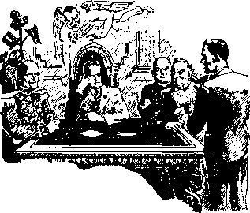D ISTINGUISHED and honored men, representing the nations of the earth, sat at the roundtable conference. Men of high rank representing the great religious, commercial and political institutions of earth were there. Seated in an obscure corner of the room was a stranger, and no one appeared to know how he came there, since no invitation had been issued to him.
The chairman of the conference said: “Gentlemen, a momentous question for our consideration here is: How can our respective nations continue to exist? how can we put an end to war and dwell in peace and safety? The nations are torn with strife. There is great fear and perplexity among the rulers and the people. I note that some statesmen advocate more religion as the means to security. Leading men of commerce have concurred in that opinion. We have with us here the ranking representative of the greatest religious institution on earth. We are here to consider our peace and safety. I ask you, gentlemen, therefore, to fully discuss the question: Do we need more religion to guide the troubled world into the haven of peace and safety?”
Stranger : “Mr. Chairman, will you permit me to suggest that before the discussion of this very important question begins you have your secretary here read before this distinguished assembly a statement of facts relating to the origin of religion, the use to which it has been put, and what has been its effect? I have such a statement, which I ask permission to hand to you.’’
It was so ordered; and the secretary read:
RELIGION
IS religion the means of securing international peace and safety? Before the proper conclusion can be reached the origin of religion and its influence upon humanity throughout the centuries past should be considered. Religion had its origin in Eden, many centuries ago. It has been practiced by the peoples of all nations since. That which is called “the Christian religion” is today the most prominent amongst the nations. It is assumed that the so-called “Christian religion” finds support in the teachings of Jesus Christ. Therefore the words of Jesus Christ should be received by the nations as importing absolute authority.
Jehovah, the Almighty God, sent Jesus to the earth to proclaim the truth, and this is made certain by his words, to wit: ‘To this end was I born, and for this cause came I into the world, to declare the truth.’ (John 18: 37) Furthermore Jesus said that the time would come when there would be “upon the earth distress of nations, with perplexity; . . . men’s hearts failing them for fear, and for looking after those things which are coming on the earth”. (Luke 21:25,26) The physical facts show that this prophecy of Jesus is now being fulfilled.
Ignorance of impending danger and the cause thereof prevents men from finding the way of escape to the place of safety. All the nations and all the people are now in the gravest danger from an unseen power, and from which there is only one possible means of escape. Publication of the truth, which discloses the identity of this unseen power and the cause of present-day woes upon the nation, necessarily exposes the workers of iniquity and their influence upon the nations and peoples of the earth. Never within the memory of man has it been so necessary for human creatures to know the truth as now, because this is the time of peril and it is “the last time”.—2 Timothy 3:1; 1 John 2:18.
The disciples of Jesus propounded to him the important question as to what conditions would be existent at the time of his second coming and the setting up of the great Theocracy. The answer of Jesus, uttered in response to the question propounded, is the truth, which truth was spoken by him with full authority from Jehovah God. Among the things uttered by Jesus in answer to that question propounded by his disciples he said: “And as it was in the days of No'e, so shall it be also in the days of the Son of man.”—Luke 17: 26.
In Noah’s day that which stood out in the most marked degree was the influence and power of the demons over the peoples then on the earth. The words of Jesus prove that exactly a like condition would be existent at the time of his second coming and would prevail in the earth until God’s due time to destroy the wicked. As shown by the Scriptures and the physical facts, Christ Jesus was enthroned as King in the year 1914, and he came to the temple of God in 1918 and there began the assembling and judging of the consecrated ones. Since that time the woes upon the people have continuously increased, and today the peoples of the earth are in the most deplorable condition that anyone on earth has ever known. (Revelation 12:12) Scriptural testimony proving why such terrible conditions exist on the earth is submitted and also points out the provisions Jehovah God made for the protection and salvation of men from such terrors, and which protection can be had only by those who seek meekness and righteousness.
ORIGIN OF DEMONS
It behooves every person on earth to lay aside prejudice and preconceived opinions and earnestly seek the truth as recorded in God’s Word. In doing so it will be found that the chief amongst the demons is Satan, “that old serpent,” the Devil. When he was one of the trusted officers in the organization of Jehovah God his name was Lucifer, meaning “bright-shining one”, one with authority. He rebelled against God, and in that time of rebellion he became that wicked one who is known in the Scriptures as “the prince of the devils”, that is, the ruling one amongst the devils or demons. (Matthew 12:24) Jehovah changed his name to Dragon, Satan, Serpent, and Devil. A number of the angels joined Satan in his rebellion against God, and they also became demons, or wicked ones, or devils, and are designated in the Scriptures as “giants”, “Nephilim.” (Genesis 6:4; Revised Version) The name “Nephilim” means bullies or tyrants, who are willfully wicked and bent on doing mischief in defiance of God’s law. The Watchtower, issues of September 1 and 15,1934, gives the detailed Scriptural proof concerning these demons and their operations in the days of Noah.
DEATH SENTENCE
The sentence of death was entered against Satan at the time of his rebellion, and which judgment of death appears at Ezekiel 28:18,19. Likewise those angels that joined with the Devil in rebellion against God were sentenced to death. The execution of such sentence or judgment of death, however, God deferred until his own due time to execute the same, at which time 'all the wicked shall be destroyed’. (Psalms 145: 20; 37: 20) Satan challenged God to put on earth men that would maintain their integrity toward God, Satan at the time declaring that he could cause all men to curse God to His face. (Job 2: 5) That boast was based upon the theory that he had influence and power over creation to turn them all against the Creator. In order to give Satan and his cohorts full opportunity to put forth their best endeavors to prove that wicked challenge, God deferred the execution of the judgment of death against them until his own due time to destroy all such wicked ones. Satan’s failure to make good his boastful challenge will prove to all creation the supremacy of Jehovah, the fountain of life, and the Giver of every good and perfect gift.
In proof of His purpose in deferring the execution of the judgment of death against Satan, Jehovah said to him, as set forth in the Scriptures : ‘And for this cause have I permitted thee to remain, for to shew thee my power: and that my name may be declared throughout all the earth.’ (Exodus 9:16, Leaser) The Scriptures prove that the suspension of the execution of the death sentence applied likewise to the other rebels called “demons”; and concerning which it is written: “And those angels who kept not their own principality, but left their own habitation, he has kept in perpetual chains, under thick darkness, for the judgment of the great day.” (Jude 6, Emphatic Diaglott') “For if God spared not the angels that sinned, but cast them down to hell, and delivered them into chains of darkness, to be reserved unto judgment.”— 2 Peter 2: 4.
From the time of the rebellion and entering of judgment of death against those wicked ones God has permitted them to operate to the extent of their ability in support of Satan’s wicked challenge. God caused his servants to record in the Bible that, at the coining of the Lord Jesus and the setting up of the Theocratic Government with Jesus as King, the end of Satan’s rule without interference will come and then the wicked angels, together with Satan, shall be destroyed. Concerning this it is written: “Whose judgment of old does not linger, and their destruction does not slumber.’" (2 Peter 2:3, Diaglott) No longer then shall there be any suspension of judgment. The execution shall then take place. Since the time of entering the judgment or sentence against Satan and his wicked associates those wicked ones have acted against God in their endeavor to make good the challenge of the Devil, and to this end they have deceived the masses of the people upon the earth and turned them away from G od, but at all times there have been some who have maintained their integrity toward Jehovah.
NOAH’S DAY
Noah was a servant of Almighty God and one who preached righteousness. (2 Peter 2:5) In Noah’s day the Devil and other demons had exercised power and influence over mankind to such a degree that all the peoples of earth were corrupted, save Noah and his immediate family. “And God saw that the wickedness of man was great in the earth, and that every imagination of the thoughts of his heart was only evil continually. But Noah found grace in the eyes of the Lord. The earth also was corrupt before God, and the earth was filled with violence. And God said unto Noah, The end of all flesh is come before me; for the earth is filled with violence through them: and, behold, I will destroy them with the earth.”—Genesis 6: 5, 8,11,13.
Because of such wickedness and violence God sent the deluge of waters, or great flood, in
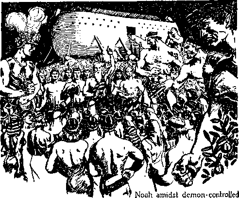which all humankind except Noah and his immediate family were destroyed. (Genesis chapters 6 and 7) The words of Jesus, quoted in the foregoing text (Matthew 24: 37), together with the physical facts well known, prove that exactly a like condition now exists on the earth and that such condition becomes prominent immediately preceding the battle of the great day of God Almighty, in which battle the wicked ones will be executed.
DEMONS AND BABYLON
Follow now the Scriptural account of the activity of Satan and his horde of wicked demons from the day of Noah and the flood even to this present day. God’s Word, recorded in the Bible, is the truth and alone can enlighten men, showing them the right way. (Psalm 119:105; John 17:17) God’s Word of truth must be the guide of all who will now find the right way and escape the impending disaster. “God is light, and in him [there] is no darkness at all.” (1 John 1:5) “Light is sown for the righteous.” (Psalm 97:11) That means that one must seek righteousness in order to see and appreciate and benefit from the light of God’s Word. The enemies of God walk on in darkness, and Satan, the chief one of the devils oi' demons, is deceiving them and leading them in darkness. All the demons associated with the Devil are in darkness and all are workers of iniquity or wickedness. They all work against Jehovah God and against those who serve him. Mark, then, the means employed by the workers of iniquity to keep mankind in the darkness and away from God. The purpose of the Devil and his agents in keeping men blind to the truth is to bring about the destruction of mankind.
BABYLON
Within a short time after the flood Babylon was organized, with Nimrod as the earthly dictator. (Genesis 10: 8-11) That was the first human government organized. From the Babylon stem all political governments of earth, past and present, have sprung. Even though the original city of Babylon has disappeared, all governments on the earth bear the name of their mother, “Babylon,” and the Devil and his associate demons have exercised and continue to exercise influence, power and control over such governments. The organization of Babylon by Nimrod united religion, commerce and politics as the means of keeping the people in subjection and ruling them. Today all governments, including what is called “Christendom”, keep alive and carry on these same three elements composing Babylon, to wit, religion, commerce, and politics. The thousands of languages that originated at the time of the confusion of the people on the plains of Shinar, in the land of Babylon, and spoken by the peoples in the different parts of the earth, have kept alive and have been under the control of these three elements, to wit, religion, politics, and commerce.
Babylon was demon-controlled, and the people worshiped demons. Its religion was demonism. That chief demon, Satan, from then till now claims Babylon (including all the governments of the earth) as his own, and this Jesus did not deny, but admitted, when he was on the earth. (Matthew 4: 8, 9) The Scriptures show that organized religion originated with the Devil, who created and brought into action religion for the very purpose of turning mankind away from God. The Scriptures also clearly prove that all the nations, including so-called “Christendom” at the present time, constitute “Babylon” and all such practice religion because the Devil has deceived men and carried on his religious practice, even in the name of God and Christ. Concerning such Jehovah says through his prophet to the modern-day “Christendom” or “Babylon”: “Come down, and sit in the dust, 0 virgin daughter of Babylon; sit on the ground: there is no throne, 0 daughter of the Chaldeans: for thou shalt no more be called tender and delicate.
Stand now with thine enchantments, and with the multitude of thy sorceries, wherein thou hast laboured from thy youth; if so be thou shalt be able to profit, if so be thou mayest prevail. Thou art wearied in the multitude of thy counsels. Let now the astrologers, the stargazers, the monthly prognosticators, stand up and save thee from these things that shall come upon thee. Behold, they shall be as stubble: the fire shall burn them; they shall not deliver themselves from the power of the flame: there shall not be a coal to warm at, nor fire to sit before it.”— Isaiah 47:1,12-14. _ .
Satan, who is the arch demon, is designated in the Scriptures as “the god of this world” or “prince of this world”, meaning that the world is ruled and influenced by him. (2 Corinthians 4:4; John 14: 30) All governments of the earth constitute a part of Satan’s visible organization, and such are under the power and influence and control of the invisible demons; and few, if any, of them know this fact. The organization is united to Satan, like as a woman or wife is united to a man, and Satan’s organization is designated by the Scriptures under the symbol of an unclean woman, that is, a Devil-worshiping, sorcery-practicing woman. (Isaiah 47:1-15; Jeremiah chapters 50 and 51; Revelation 17:1-18) Satan’s world organization is generally known as “Babylon”, and all parts thereof practice some kind of religion brought into action by the Devil for the purpose of turning men away from the true and almighty God. For this reason the apostle and servant of Jesus Christ specifically warned the Christians, that is, the true followers of Christ Jesus, that this world is ruled and controlled by the demons and that all Christians must avoid religion. He informs them that their enemies, the demons, fight against all who serve God and Christ. “For we wrestle not against flesh and blood, but against principalities, against powers, against the rulers of the darkness of this world, against spiritual wickedness in high places.”-Ephesians 6:12.
Before the confusion of human speech at the tower of Babel the name “Babylon” had the meaning of “gate of god”. That was a religious name, without designating to which god it referred, but which in fact had reference to the
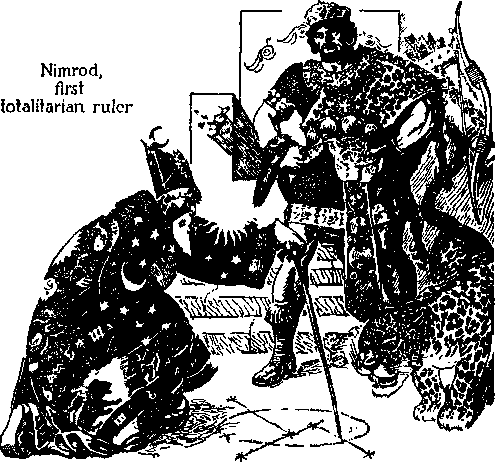mimic god Satan, that is to say, the god or mighty invisible ruler of this wicked world. (2 Corinthians 4:4) In Babylon religion took the most prominent part. Nimrod set up religion, with himself as the visible representative of god, that is, Satan, and demanded that the people worship him, Nimrod; and for this reason he became a “mighty one”, and it is written of him in the Scriptures: 'Nimrod, the mighty one in the earth; the mighty hunter before, that is, superior to, the Lord Jehovah.’ (Genesis 10: 8-10)-—See, for further consideration, McClintock & Strong’s Cyclopadia, under the subtitle “Nimrod”.
Bible prophecy has much to say about Babylon and its destruction. The book of The Revelation tells that the destruction of Babylon is the coming event of surpassing interest both in heaven and in earth, the destruction of which refers to the complete fall of Satan’s organization, and not to the literal earth. The destruction of Babylon, as the Scriptures disclose, means the final end of the wicked world over which Satan and his demons have ruled, and which destruction will immediately follow the completion of the proclamation of Jehovah’s name and his kingdom, which work is now in progress in the earth. That witness work is now designated God’s “strange work”, to be followed by God’s “act, his strange act”.—Isaiah 28:21.
“CHRISTENDOM” IS “BABYLON”
The Scriptures disclose that the name “Serpent” is given to Satan the Devil to denote him as the arch deceiver, the one who practices fraud and deception upon mankind. One of his chief means of deception is to keep the people always in ignorance of the truth concerning his organization, and particularly concerning Babylon. The Scriptures definitely state that Babylon must be in existence at the end of Satan’s world, at which time it must be and shall be destroyed. "Babylon” is not merely “heathendom” and its religion, but also applies to “Christendom”; and it is in “Christendom” in particular that religion, commerce and politics unite to control the nations. So-called “Christendom”, by means of fraud and deception, employs the name of Christ, and that name was so chosen and applied by the Devil for the manifest purpose of defrauding and deceiving the people and turning them away from God. “Christendom” is the highest development of and the most seductive form of Satan’s visible organization.
The basic doctrine of ancient Babylon was the religious teaching or doctrine of "immortality”, first of the Devil and all his demons, and also including all human souls that come under the control of demons. Such doctrine is contrary to and taught in defiance of the truth of Almighty God and his announced decree that the wicked shall be destroyed. That doctrine of human immortality was the first lie ever told, and which was told by Satan to deceive and mislead Adam and Eve. (Genesis 3:4,5) Such lie resulted in the death of man, thus making Satan both a liar and a murderer. “Ye are of your father the devil, and the lusts of your father ye will do. He was a murderer from the beginning, and abode not in the truth, because there is no truth in him. When he speaketh a lie, he speak-eth of his own: for he is a liar, and the father of it."—John 8: 44.
That same devil-religion doctrine of ‘‘immortality of all human souls” is today the fundamental doctrine or religious teaching of so-called “Christendom”, and which proves that “Christendom” is modern-day Babylon. That false doctrine of “human immortality” was obtained from the doctrine taught by the mother, or ancient Babylon, the Devil’s “woman” or organization, and the religious system of “Christendom” is plainly described in the Scriptures as “the daughter of Babylon”. (Revelation 17:5) By this false doctrine religionists forming “Christendom” have been deceived and are still being deceived into yielding to the influence and power of the demons and thus they lay themselves open to complete demon control. “Christendom,” so called, offers no protection whatever to the people against demonism, but rather leads the people right into the trap of Satan and his associate demons, and for this reason becomes one of the chief means of hurrying the nations of earth into destruction. The Devil practices all manner of fraud and deception. lie organized the chief religious system on earth, now under the Roman Catholic Hierarchy, and falsely designates that as “the Christian religion”. Even the so-called “Protestant” systems of religion claim to be opposed to Romanism, but, in fact, they all work together. The Devil then organizes and brings into action Communism, which openly fights the so-called “Christian religion” and also true Christianity. He uses atheists likewise to fight against those who serve God, and thus the Devil uses all these moans and organizations to fight against God and against God’s faithful servants on the earth, and to deceive men.
EXISTENCE OF DEMONS
Modern-day religious leaders claim that the Ncphilim were all destroyed at the time of the flood, and hence by thus teaching they lure the people into the trap of the Devil. The people are thus deceived; and being deceived they easily become the victims of the Devil. The people are made to fear their religious leaders, and the fear of man leads them into the Devil’s snare. AU the scriptures bearing upon the point show beyond any question of doubt that the demons, otherwise designated in the Scriptures as “Nephilim” (Genesis 6:4, Revised Version), were not destroyed at the time of the flood, but continued their operations after the flood and are operating with the Devil even to this very day. To avoid confusion it must be clearly observed that the “Nephilim”, or wicked demon giants, and “the spirits in prison” to which Jesus preached (1 Peter 3:19,20) are entirely separate and distinct from each other. The Devil and the Nephilim deceived the spiritual creatures designated “the sons of God” and induced them to materialize as men and take human women for wives, and to raise an offspring by such union, and all such offspring were destroyed in the flood. (See The Watchtower, 1934, pages 263-266.) Those “sons of God”, who materialized as humans, were imprisoned by the Devil at the time of the flood.—See proof, The Watchtower, 1934, page 275.
As to the Nephilim, the wicked spirit creatures or demons that joined Lucifer in his rebellion, they survived the flood and are yet alive, and are the ones that, together with the Devil, now exercise power and control over the people and the nations of the earth. That the Nephilim were not destroyed in the flood, but were degraded, together with the Devil, the chief demon, and have been permitted to continue actively in their endeavors to turn men against God, mark the Scriptural evidence that follows, to wit: “The Nephilim were in the earth in those days, and also after that, when the sons of God came in unto the daughters of men, and they bare children to them; the same were the mighty men that were of old, the men of renown.”— Genesis 6: 4, American Revised Version.
Another authoritative translation of this text reads: “The fallen ones were in the earth in those days and even afterwards when sons of God came in unto daughters of men, and they have borne to them, they are the heroes, who, from of old, are the men of name.” (You/ng’s) It was the offspring of the spirit creatures who materialized as men and of human women that were known in the earth as “men of renown”. The demons, “the fallen ones,” that is, the wicked spirit rebels and bullies, were in the earth then and afterwards, and it is the same wicked Nephilim or demons concerning which the following scripture is written, to wit: “For if God spared not angels when they sinned, but cast them down to hell [(Greek) Tartarus}, and committed them to pits of darkness, to be reserved unto judgment; and spared not the ancient world, but preserved Noah with seven others, a preacher of righteousness, when he brought a flood upon the world of the ungodly.” —2 Peter 2:4,5, A.R.V.
The word Tartarus means a degraded condition, that is, a condition of darkness with no further hope or opportunity of understanding God’s purpose as revealed in the Scriptures and no hope of life everlasting. Being in darkness or degraded, they are wholly unable to understand God’s purpose concerning the great Theocratic Government. A similar condition is that of the “evil servant” class described by the Lord Jesus, and which persons are cast out from the light and into outer darkness. (Matthew 25:30; 13:41,42) As soon as one turns against the organization of Jehovah God he becomes blind beyond any possible hope of recovery. Although denied the favor of light or understanding of God’s purpose, those wicked spirits or demons have been permitted to exist and to work with their chief, the Devil, to carry out his original wicked challenge made to Jehovah, to wit: That he, the Devil, could turn all men against God. This and other supporting scriptures which follow show that God has reserved or deferred the execution of the judgment of death against these wicked ones until Armageddon, the day of his vindication, and that until that time he keeps the wicked ones under surveillance and protects his faithful people from them. Jehovah declares that at Armageddon he will show the Devil and all his supporters that He, Jehovah God, is the Supreme One. That day of final conclusion of the matter rapidly approaches.—Exodus 9:16.
The Devil himself, that is, the chief amongst the demons, is debased and degraded beyond any possibility of recovery. He is totally depraved. He maintains his organization only by means of fraud, deception and other wicked machinations. That the Devil has and does maintain an organization which operates against God and against all who serve Jehovah God is shown by the Scriptures and the facts, beyond any doubt whatsoever. As an example, there appears in the prophecy (Daniel 2: 30-34) the description of a terrible image, disclosing that the Devil is the head of a great and wicked organization, and that next to the Devil are princes or rulers subordinate to Satan the Devil. At Daniel 10:13, 20 is the record concerning some of these demons designated under the titles “prince of Persia” and “prince of Grecia”. Among these princes is Gog, the demon officer next to Satan. (Ezekiel 38:3,16) Next to the princes, according to the prophecy of Daniel, is another order or class, the wicked officers which “bear rule over all the earth”. (Daniel 2:39) This shows three separate divisions of Satan’s invisible organization: “principalities,” that is, the principal ruler exercising supremacy among the wicked ones; “powers,” that is, officers among the wicked ones that exercise power and control; and, third, “rulers,” invisible wicked creatures who have immediate power or influence over the nations of the earth under the supervision of the principal power, that is, the Devil.
The apostle Paul, under inspiration and direction of Almighty God through Christ Jesus, recorded testimony concerning the foregoing wicked ones, and therefore his testimony is authoritative. Without doubt he knew of the wicked spirit creatures because he was familiar with the Scriptures written by the holy prophets of old. Note, then, that the apostle tells of these wicked invisible rulers that exercise power and control over the nations of the earth, and he divides them exactly as the prophet does, into three classes, to wit: “principalities,” “powers,” and “rulers”; all of which fight against God and against those who serve God. (Ephesians 6:12) Also have this in mind: that the Devil has declared his purpose to be “like the Most High”. (Isaiah 14:13,14) He therefore sets up an organization, which is a mimic of Jehovah God’s invisible organization. Satan exalts himself to the position of supremacy like unto that of the Most High, Jehovah. Gog, the chief officer of Satan, takes the place similar to that occupied by Jesus Christ, the Prince or Ruler or King of the great Theocratic Government. The wicked angels, that have direct influence and power over the nations of the earth, are made to correspond to the angels of Christ Jesus that always serve him and are under his immediate command.—Matthew 25: 31.
As this invisible organization of the Lord Jehovah is provided with earthly representatives, so the Devil has provided his organization with earthly representatives, as the facts following will show. The purpose of the wicked organization of the Devil is to operate in defiance of Jehovah God in his attempt to turn all creation against Almighty God and plunge them into destruction.
ACTIVITIES OF THE WICKED
After the flood, or deluge of waters, which destroyed all flesh except Noah and his family, and after human creatures had multiplied and greatly increased in the earth, devil-worship, that is to say, devil religion, was set up with Nimrod as the chief visible one, and religion was used or employed by the Devil through Nimrod to deceive the people and cause them to ‘worship the creature instead of the Creator’. (Romans 1: 25, 30) That was the beginning of organized religion. (Genesis 10:8-10) Demon-worship, or devil religion, was thereafter adopted and practiced in Egypt, where “magicians”, or Devil agents, operated before the people in the practice of devil-worship to deceive both the ruler and the ruled of that land. “And it came to pass in the morning, that his [Pharaoh’s] spirit was troubled; and he sent and called for all the magicians of Egypt, and all the wise men thereof : and Pharaoh told them his dream; but there was none that could interpret them unto Pharaoh.” (Genesis 41:8)—Exodus 7:11; 8:7,19; 9:11.
ISRAEL INVADED
Jehovah, by the act of Moses his servant, led the descendants of Israel out of Egypt, and at Mount Sinai God affirmed his covenant and declared to them his statutes and laws. The Israelites had journeyed but a short distance when the Devil, with his religion, invaded their ranks in his endeavor to turn them away from God in violation of their covenant. (Exodus 32:1-10) When the Israelites reached the land of Moab they again fell under demon power and influence and practiced demon religion known and designated as “Baal-peor”, a grossly immoral ceremony. (Numbers 25:1-18) Time and again the Israelites fell away from God in violation of their covenant, and in every instance this they did under the influence of religion, which the Devil introduced amongst them. ‘‘They provoked him to jealousy with strange gods, with abominations provoked they him to anger. They sacrificed unto devils, not to God; to gods whom they knew not, to new gods that came newly up, whom your fathers feared not.”—Deuteronomy 32:16,17.
Jehovah specifically warned the Israelites that the religion of the demons would be a snare unto them. All the Canaanites and the people round about practiced devil religion, and the warning against such peoples and their practices was a warning against demon religion. God had given the land of Canaan to the Israelites for their inheritance and, as that land was inhabited by people who practiced demon or devil religion, God commanded that the Israelites should drive out these demon religionists. “And when the Lord thy God shall deliver them before thee; thou shalt smite them, and utterly destroy them; thou shalt make no covenant with them, nor shew mercy unto them: neither shalt thou make marriages with them; thy daughter thou shalt not give unto his son, nor his daughter shalt thou take unto thy son. And thou shalt consume all the people which the Lord thy God shall deliver thee; thine eye shall have no pity upon them; neither shalt thou serve their gods; for that [devil religion] will be a snare unto thee."—Deuteronomy 7:2, 3,16.
The Israelites were clearly warned that religion would constitute a snare into which the Devil would entrap them. It was the Devil and the Nephilim that ensnared the Israelites and induced them to practice devil religion in defiance of God’s law and their covenant. “And they served their idols; which were a snare unto them. Yea, they sacrificed their sons and their daughters unto devils, and shed innocent blood, even the blood of their sons and of their daughters, whom they sacrificed unto the idols of Canaan; and the land was polluted with blood.” —Psalm 106: 36-38.
As further evidence that the demons overreached the Israelites, note this in the Scriptures: “Jeroboam and his sons had cast them [the Levites] off from executing the priest’s office unto the Lord: and he ordained him [Jeroboam] priests for the high places, and for the devils, and for the calves which he had made.” —2 Chronicles 11:14,15.
The apostle Paul, who was entirely familiar with the Divine Record concerning the activities of the demons and concerning their inducing the people to practice devil religion in defiance of Almighty God, wrote: “What say I then? that the idol is any thing, or that which is offered in sacrifice to idols is any thing? But I say, that the things which the Gentiles [non-covenant peo-pies] sacrifice, they sacrifice to devils [(O.J7.) to demons], and not to God; and I would not that ye should have fellowship with devils [demons], Ye cannot drink the cup of the Lord, and the cup of devils [demons] ; ye cannot be partakers of the Lord’s table, and of the table of devils [demons].”—1 Corinthians 10:19-21.
When the child Jesus was born at Bethlehem it was the Devil and his associate demons who put the wicked Herod wise to that event in order that he could carry out the Devil’s scheme to destroy the babe Jesus: “Now when Jesus was born in Bethlehem of Judaea in the days of Herod the king, behold, Wise-men [(Greek) Magi] from the east came to Jerusalem, saying, Where is he that is born King of the Jews! for we saw his star in the east, and are come to worship him.” “Then Herod privily called the Wisemen [magicians, religionists], and learned of them exactly what time the star appeared.”— Matthew 2:1, 2, 7, A.R.V.
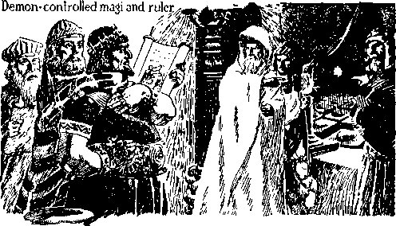The magi, or “wise men”, so called, were clearly the servants of the Devil. This should serve as a warning to all who profess to be the followers of Christ Jesus and who have been deceived by clergymen and led to ignore the existence and power of the demons. Instead of following the admonition of the Scriptures, the religionists known as “leaders” and the principal ones of their flock exalt these devil-worshipers or magicians by the ceremonies performed at what is called “Christmas time”. Each one of the magi was of the same class as those otherwise designated in the Scriptures as “the sorcerers”, and which the apostle Paul named as frauds, such as Elymas the Magus, who opposed the gospel preached by the apostle and whom Paul designated as a “son of the devil”.—Acts 13:8-10, A.R.V., margin.
DEMONISM FORBIDDEN
If men were righteous by nature, they would not need the law of God, because they would do righteousness, which is in harmony with God. “The law is not made for a righteous man, but for the lawless and disobedient.” (1 Timothy 1:9) Jehovah God selected the Israelites as his typical people and led them out of the land of Egypt. Those people were imperfect, and therefore needed a law to guide them and keep them in and define to them the right way. Hence God gave to them his law prescribing what is right and prohibiting what is wrong. The law of God was given for that purpose, as shown by the words recorded, to wit: “The law was our school-
master [pedagogue, or teacher] to bring us unto Christ, that we might be justified by faith.”— Galatians 3:24.
From the time of the promise of God that he would send Christ Jesus the Messiah until the actual coming of the Lord Jesus Christ was a long period of time, and the Israelites were given the law of God to keep them in the right way and shield and protect them from Devil religion until the coming of Christ Jesus. One of the specific things commanded by Jehovah God was that the Israelites were not to indulge in any religious practices or demon worship. Note this part of the law, to wit: “And they shall no more offer their sacrifices unto devils, after whom they have gone a whoring. This shall be a statute for ever unto them throughout their generations.”—Leviticus 17:7.
The offer of sacrifices unto demons was an act punishable with death. (Leviticus 17: 3,4; Genesis 9: 5, 6) According to the Douay Version (Catholic Bible) Leviticus 19: 31 reads: “Go not aside after wizards [them that have familiar spirits], neither ask any thing of soothsayers, to be defiled by them; I am the Lord your God.” According to the same translation the following is written: “The soul that shall go aside after magicians, and sooth-sayers, and shall commit fornication with them, I will set my face against that soul, and destroy it out of the midst of its people. A man, or woman, in whom there is a pythonical or divining spirit, dying let them die; they shall stone them; their blood be upon them.”—Leviticus 20:6, 27, Douay.
The practice of any sort of witchcraft and the observing of times, such as Hallowe’en, Friday the 13th, the “Holy Year”, constitute an abomination in the sight of God, because the same relate to demons. “There shall not be found among you any one that maketh his son or his daughter to pass through the fire, or that useth divination, or an observer of times, or an enchanter, or a witch, or a charmer, or a consulter with familiar spirits, or a wizard, or a necromancer. For all that do these things are an abomination unto the Lord; and because of these abominations the Lord thy God doth drive them out from before thee.” (Deuteronomy 18:10-12) This same text in the Douay Version of the Bible, which Bible is used by the Catholics, reads: “Neither let there be found among you any one that shall expiate his son or daughter, malting them to pass through the fire; or that consulteth soothsayers, or observeth drcams and omens, neither let there be any wizard, nor charmer, nor any one that consulteth pythonic spirits, or fortunetellers, or that seeketh the truth from the dead. For the Lord abhorreth all these things, and for these abominations he will destroy them at thy coming.”
When Jesus was anointed and began to carry out his commission on earth of proclaiming the truth, the demons, led by the chief one, Satan, the Devil, began actively to interfere with his work and to oppose him. The Devil sought to induce Jesus to violate His covenant with Jehovah God and thereby bring about His own destruction. In that he completely failed.—Matthew 4:1-10.
The other demons, working with the Devil, were active at the same time, which proves conclusively that at that time the judgment against them was not executed, but its execution was deferred from the time it was made until God’s due time, Armageddon. Demons are also designated in the Scriptures as “evil spirits” or “wicked spirits”; and at the time of Jesus on earth the demons would seize the mind of a person and control that person, and it is even so today. Early in the time of the activities of Jesus while in the flesh and preaching the gospel, the demons began to show themselves in opposition to him. Jesus was in the synagogue at Capernaum, there teaching the truth to the people, and his teaching was a great astonishment to them. “And there was in their synagogue a man with an unclean spirit; and he cried out, saying, Let us alone; what have we to do with thee, thou Jesus of Nazareth? art thou come to destroy us? I know thee who thou art, the Holy One of God. And Jesus rebuked him, saying, Hold thy peace, and come out of him. And when the unclean spirit had torn him, and cried with a loud voice, he came out of him.” (Mark 1: 23-26) It was one of the wicked spirits or Nephilim in darkness that thus exhibited his power over the man described in the foregoing text.
There are times when many of the demons, acting together, seize control of a human creature and use that creature to do and perform unusual things. The Scriptural record tells of a poor man dwelling in the tombs, who exhibited unusual and marvelous power. When he was bound with fetters and chains those chains were immediately broken. The power required to break those chains was beyond the power of any ordinary man. It was the demons who seized control of that poor man and put forth the power to break the fetters and chains, thus making it appear that the man himself could do it. The demons know that Jesus is the Son of God and they know that God’s judgment is written against them and that it declares their ultimate destruction. When the spokesman of those demons that had seized control of the poor man saw Jesus, the Scriptural account thereof says, “When he saw Jesus afar off, he ran and worshipped him, and cried with a loud voice, and said, What have I to do with thee, Jesus, thou Son of the most high God ? I adjure thee by God, that thou torment me not. For he said unto him, Come out of the man, thou unclean spirit. And he asked him, What is thy name? And he answered, saying, My name is Legion; for we are many. And he besought him much, that he would not send them away out of the country. Now there was there, nigh unto the mountains, a great herd of swine feeding. And all the devils besought him, saying, Send us into the swine, that we may enter into them. And forthwith Jesus gave them leave. And the unclean spirits went out, and entered into the swine; and the herd ran violently down a steep place into the sea, (they were about two thousand,) and were choked in the sea.”—Mark 5:6-13.
The demons work in divers ways to control human creatures. They seize the mind of men and use men to perform strange acts and cause such deluded ones to believe that they hear voices of their friends who are dead. There are many instances recorded in the Scriptures of how the demons worked when Jesus was on earth. Only a few of such are here cited, and they are cited to prove the point that the demons, at the time Jesus was on earth, were alive and were not destroyed in the flood as clergymen have represented. One instance follows: A large company of the poor were seeking information at the mouth of Jesus, and the following incident is recorded: “And, behold, a man of the company cried out, saying, Master, I beseech thee, look upon my son; for he is mine only child. And lo, a spirit taketh him, and he suddenly crieth out; and it teareth him that he foameth again; and, bruising him, hardly departeth from him.” “And as he was yet a coming, the devil threw him down, and tare him. And Jesus rebuked the unclean spirit, and healed the child, and delivered him again to his father.”—Luke 9: 38, 39,42.
As further proof that the demons were alive (and are yet alive) and expected a time to come for their final execution, note the following, in which the demons spoke to Jesus: “And, behold, they cried out, saying, What have we to do with thee, Jesus, thou Son of God? art thou come hither to torment us before the time?”—Matthew 8:29.
The Devil and his horde of demons employ a more subtle way of gaining control of the lijgher-ups amongst the people. Fear of men leads into the Devil’s trap. The Jews feared that they would not stand as high among the other nations unless they had a king. At their request God permitted them to have Saul for king. Saul thereafter fell under the complete influence and control of the demons. (1 Samuel 28:7,8) Furthermore the leaders of the Jews, fearing that they would be ridiculed by reason of not having some formalism called “religion”, adopted and practiced the form of worshiping idols and images.
When Jesus came to the Jews he found the leaders teaching and practicing religion, showing that they had fallen under the influence of the demons. These leaders, called “Pharisees”, feared they would not be able to hold control over the people and have the people honor them and speak of them as “rabbi” and hail them in public places unless they had some kind of formalism to practice and to thereby induce the people to believe that such leaders were above ordinary men and were clothed with special power or authority from Almighty God. That fear led such leaders to fall into the trap of Satan. (Proverbs 29: 25) They had failed to trust God and obey the covenant God had made with the nation, although they had been frequently warned by Jehovah. For personal gain both of money and of approval of men those clergymen were willing to use the temple of Jerusalem as a place to sell various kinds of merchandise, and thus they made the temple of God a “den of thieves”, and this was the result of the machinations of Satan and his associate demons.—Matthew 21:12,13.
Jesus, observing that the leaders of Israel had fallen under the influence of the demons and had adopted and were teaching doctrines contrary to God’s Word, denounced them in unparalleled, vitriolic language. By yielding to the influence of the demons and teaching the people doctrines contrary to God’s Word, those clergymen had brought great reproach upon the temple and upon the name of Jehovah God and made his Word of none effect amongst the people; and therefore Jesus said to them: “But woe unto you, scribes and Pharisees, hypocrites! for ye shut up the kingdom of heaven against men; for ye neither go in yourselves, neither suffer ye them that are entering to go in.”—Matthew 23:13.
Concerning the senseless formalism employed by the Pharisees in their religious practices Jesus said: “Woe unto you, scribes and Pharisees, hypocrites! for ye pay tithe of mint, and anise, and cummin, and have omitted the weightier matters of the law, judgment, mercy, and faith; these ought ye to have done, and not to leave the other undone. Ye blind guides! which strain at a gnat, and swallow a camel.” Ye serpents, ye generation of vipers! how can ye escape the damnation of hell?”—Matthew 23:23,24,33.
Those Pharisees, who were religious leaders, had failed to teach God’s Word and had substituted the traditions of men; and this they had done by falling under the influence and power of the demons; and concerning them Jesus said: “Then came to Jesus scribes and Pharisees, which were of Jerusalem, saying: Why do thy disciples transgress the tradition of the elders ? for they wash not their hands when they eat bread. But he answered and said unto them, Why do ye also transgress the commandment of God by your tradition? Ye hypocrites! well did Esaias prophesy of you, saying, This people draweth nigh unto me with their mouth, and honoureth me with their lips; but their heart is far from me. But in vain they do worship me, teaching for doctrines the commandments of men.”—Matthew 15:1-3, 7-9.
The religious leaders, the Pharisees, were blind to the truth of God’s Word because they had yielded to the Devil and adopted his religion, and hence Jesus said to them that they were blind. (Matthew 23:19, 24) These Pharisees were not willing to accept the truth as brought to them by the Lord Jesus Christ, and were trying to prevent the people from seeing and understanding it; and this they did under the influence of the demons. They had been made blind by Satan and his horde and thus turned away from God. It was the truth Jesus spoke to them that stung those clergymen and cut them to the quick, and their only answer in defense was attempted violence against Jesus, and that violence was prompted by the demons.
Mark this part of the record, which proves conclusively that those clergymen were under the influence, power and control of the Devil and for that reason they attempted to destroy the Lord Jesus Christ: “But now ye seek to kill me, a man that hath told you the truth, which I have heard of God; this did not Abraham. Ye do the deeds of your father. Then said they to him, We be not born of fornication; we have one Father, even God. Jesus said unto them, If God were your Father, ye would love me; for I proceeded forth and came from God; neither came I of myself, but he sent me. Why do ye not understand my speech? even because ye cannot hear my word. Ye are of your father the devil, and the lusts of your father ye will do. He was a murderer from the beginning, and abode not in the truth, because there is no truth in him. When he speaketh a lie, he speaketh of his own; for he is a liar, and the father of it.”—John 8: 40-44.
After the crucifixion of Jesus his apostles continued to proclaim the gospel of the kingdom of God, and the demons actively opposed them in their work. The apostles, by the power which the Lord conferred upon them, healed the afflicted, and for their good work the religionists condemned them. (Acts 5:16-18; 8:5-7) Seeing Paul, one of the apostles, exercising power over the demons, some of the commercial Jews tried to do likewise, even as some of the clergymen today pretend to represent the Lord; and concerning this it is written: “Then certain of the vagabond Jews, exorcists, took upon them to call over them which had evil spirits the name of the Lord Jesus, saying, We adjure you by Jesus, whom Paul preacheth. And there were seven sons of one Sceva, a Jew, and chief of the priests, which did so. And the evil spirit answered and said, Jesus I know, and Paul I know; but who are ye ? And the man in whom the evil spirit was leaped on them, and overcame them, and prevailed against them, so that they fled out of that house naked and wounded.” (Acts 19:13-16) Clearly the proof here is that those men were under the influence of the demons, and this is further proof that the demons were alive. This fraudulent representation of the Lord Jesus by the chief priest of his religious organization finds an exact parallel today amongst many of the priests, who fraudulently claim to represent the Lord, and who may soon expect to have their clothes torn off and go about naked and bare.
In the days of the apostles those wicked demons attempted to deceive and in this present time do deceive some who claim to be servants of God. They were alive and active then, and even in the present day those wicked spirit creatures are alive and active and do likewise deceive many who think that they are serving God. The testimony of the apostles authoritatively written clearly proves that in the end of the world, where we now are, clergymen claiming to serve God would fall under the influence of the demons, and concerning these it is written : “Now the spirit speaketh expressly, that in the latter times some shall depart from the faith, giving heed to seducing spirits, and doctrines of devils; speaking lies in hypocrisy; having their conscience seared with a hot iron.”—1 Timothy 4:1, 2.
In the days of the apostles the non-Jews as well as some of the Jews were offering sacrifices unto images or idols, and concerning that offering it is written: “What say I then? that the idol is any thing, or that which is offered in sacrifice to idols is any thing? But I say, that the things which the Gentiles sacrifice, they sacrifice to devils, and not to God: and I would not that ye should have fellowship with devils.”— 1 Corinthians 10:19, 20.
This is further and conclusive proof that the Devil uses religion and religious ceremonies as a means of deceiving the people and turning them away from God. Thus the Devil used religion from the days of Nimrod to the days of the apostles, and what follows herein proves beyond all doubt that the demons are in this very day unusually active, employing religion to turn the people away from God. Let those who desire to be on the safe side study and consider carefully what follows. It will be found from the Scriptures that the close-girdling or besetting sin of all who profess to serve God is the influence of demons brought to bear upon them by religion, and that in order to safeguard themselves they must be diligent to avoid religion and for safety they must follow closely the Word of God.
CHAPTER II
JEHOVAH instructed his typical people concerning the snares set for them by the demons, and at the same time pointed out the only means of escape to the place of safety. Proverbs 29:25 is exactly in point: “The fear of man bringeth a snare; but whoso putteth his trust in the Lord shall be safe.” With stronger reasoning such warning and instruction now applies to all those who have covenanted to do the will of God. All the demons having been cast out of heaven and down to the earth, and knowing that the time rapidly approaches when the final conflict takes place, they are now, under the leadership of Satan, the chief demon, working desperately to entrap the consecrated and plunge them into everlasting destruction. (Revelation 12:7-12) From Genesis to Revelation the Scriptures abundantly give warning of the influence and power of the demons over men. The numerous subtle means employed to entrap men are disclosed by the Scriptures, given to the man of God that he may be thoroughly equipped to serve righteousness. Only those who love Jehovah God and who serve him in spirit and in truth will now give heed to such warning; therefore, for the benefit of such these truths are published.
Religion has long been the chief means of inducing men to yield to the influence of other men. The religious person fears the pastor, clergyman or leader of his religious system, and hence he yields to the instruction of such men, and in this way the demons entrap the unsuspecting ones. A person fears that he will not receive the approval of men, particularly the religious leaders, and thus he is led into the snare of the enemy. Let this great truth be fully impressed upon all the consecrated: that the only place of safety is with the Lord and only those who trust Jehovah God and are diligent to render themselves in obedience can be safe in these evil days. Every consecrated one must diligently avoid the seductive influence of creatures. Every one who desires to have God’s approval must see to it that he does not rely upon men, because men are imperfect. Follow men only as such men follow the Lord Jesus Christ. “Whoso putteth his trust in the Lord shall be safe.” The marginal reading of this text is: “Whoso putteth his trust in the Lord shall be set on high.” That means that the anointed shall be set on high with Christ Jesus only upon condition that such completely trust in the Lord and obey his commandments. All Christians will receive the Lord’s approval and find the way to life upon the same condition. Let Jehovah God be your fear, seek his approval, and not the approval of men.—Isaiah 8:13.
Christianity and religion are two separate and distinct things, and the two are in complete opposition to each other. Those who practice religion are numerous; those who truly are Christian are few. It will be found that the religionists are under the influence and power of the demons, whether they know it or not. The Devil and his host of associated demons are desperately fighting against Christians, and every person who attempts to follow the Lord must be fully awake and constantly vigilant and active in his devotion to Almighty God. Always have in mind that there is but one place of safety, and that is in or under Christ Jesus, who is the head of Jehovah’s capital organization, which organization furnishes protection to those who flee to the Lord at this time. All such must fully trust Jehovah God and devote themselves to the great Theocracy.
A brief reference to the facts will show how completely religionists are in the dark. The Scriptures (Revelation 7:4-8; 14:1, 3) make it plain that there will be only 144,000 of the members of “the body of Christ” and that those who shall be spared in Armageddon will be few compared to the great number of people now on the earth. The World Almanac for the year 1939, published at New York, makes the following statement, to wit, (the claim is made) that in the earth there are 682,400,000 persons who are rated as Christians; 331,500,000 of such are rated as Roman Catholic; 144,000,000, Orthodox Catholic; 206,900,000, Protestant. Those figures given by worldly publication would indicate that there are millions of Christians; which, of course, is unscriptural. The claim is made that in the United States alone there are 64,000,000 of so-called “Christians”. Of course, these figures are not accurate according to the Bible.
They are probably correct when applied to what is known and is practiced under the name of so-called “Christian religion”. To say the least of the millions who are rated as Christians, only a very small number are they who really trust God and Christ Jesus. The religionists and the practitioners of religion and their followers have fallen into the enemy’s snare.
Bible prophecy now in course of fulfillment overwhelmingly proves that within a very short time the genuineness of the claim of all such religionists will be put to the crucial test. The crucial test is now upon those who are anointed. The crucial test applied to “Christendom” will show that the great mass thereof are entirely without faith in God and are opposed to the great Theocratic Government, of which Christ Jesus is the King and Ruler. That great mass of persons rated as Christians actually deny God and Christ, and in fear of man they bow down to and yield to the totalitarian “form of godliness” and do the will of Satan and the other demons. By the act of Jehovah God, which the Scriptures designate his “strange act” (Isaiah 28:21), the so-called “organized Christian religion” will be totally destroyed, never again to be restored.
These are perilous times, as the Scriptures point out, and as the facts fully support. The condition of “Christendom” just preceding Armageddon is stated in these prophetic words: “This know also, that in the last days perilous times shall come. For men shall be lovers of their own selves, covetous, boasters, proud, blasphemers, disobedient to parents, unthankful, unholy, without natural affection, trucebreakers, false accusers, incontinent, fierce, despisers of those that are good, traitors, heady, high-minded, lovers of pleasures more than lovers of God; having a form of godliness, but denying the power thereof; from such turn away.”— 2 Timothy 3:1-5.
The prophecy above quoted applies specifically at the present time, and concerning the climax the same prophetic scriptures say: “Yea, and all that will live godly in Christ Jesus shall suffer persecution. But evil men and seducers shall wax worse and worse, deceiving, and being deceived.”—2 Timothy 3:12,13.
Since the year 1918, and more particularly since 1933 forward, persecution of those devoted to God and his kingdom has constantly increased and evil men, particularly the religionists, have become more vicious. Being themselves deceived by the demons, they have deceived and continue to deceive multitudes of others. Today Communism, Nazism, and Fascism, and the religious leaders associated with them, increase in their wicked deeds toward the people. The masses of the people are under these wicked leaders, all of whom persecute the supporters of the Theocratic Government. It is necessary for the covenant people of God to have these scriptures and the attending facts in mind in order that they may escape the snares of the demons.
All persons who think can clearly see that the conditions now existing on the earth have grown worse in the past few years and that they continue to increase in wickedness even as foretold by the foregoing scriptures. As foreshadowing this terrible condition existing it is not without prophetic significance that during the actual presence of Jesus Christ in the flesh, more than nineteen centuries ago, and when he was preaching the truth constantly for three and one-half years, only a very small number of the people turned to him then in faith. Now Christ Jesus the King is present, having been enthroned, and few are they who are fully devoted to him, and concerning this very time Jesus said: “When the Son of man cometh, shall he find faith on the earth?” (Luke 18:8) The present-day physical facts completely fit the prophetic utterances of the Lord. All persons who have a desire for life should fully awaken to the situation and ascertain the cause of the present-day perils, and what is the only means of escape to safety.
An honest and unbiased consideration of the Scriptures and the admitted facts will prove to the satisfaction of sincere persons, and that beyond all doubt, that the influence and power of the demons over the people is the primary cause of these times of peril and that Satan, the chief among demons, together with his host of wicked ones, is hastening the whole world like a swiftflowing river down to eternal death, as pictured by the river Jordan flowing into the Dead sea. The demons have employed religion to bring about this terrible condition and by means of religion have deceived multitudes and are still deceiving them and turning them away from God. Both the leaders and the rulers in religious institutions have been made to believe, by the influence of the demons, that religion and Christianity are one and the same thing; whereas religion is the open and violent adversary of all Christians. Religion and the practices thereof are the result of demon power and influence. Christianity stands for the truth and full obedience to the law of Almighty God. Religion is demon worship. Christianity is the worship of Jehovah God in spirit and in truth. Sincere persons should give thoughtful consideration to the commandments of Almighty God given to his typical people concerning religion, and which commandments apply with stronger force to all today who are seeking the way of righteousness.
DEMON-WORSHIP FORBIDDEN
From the time of Nimrod onward all the heathen nations practiced demon-worship, or religion, offering sacrifices unto devils. The Israelites, the nation and only people chosen by Jehovah God, were in great danger of falling away to the demon religion. Therefore God commanded the Israelites to avoid demonism or religion. God commanded his typical people to offer to him certain animals in sacrifice, which sacrifices must be offered in the manner commanded by the Lord; and those sacrifices constituted prophetic pictures which God caused to be made foretelling the great sacrifice of Christ Jesus. In mockery of God and to cause the people to stumble and fall away from God the demon religion has required the practitioners thereof to offer animals in sacrifice unto demons or devils. The people of Israel fell under the demon influence, at certain times. The law which God gave to that people clearly shows that the sacrifice of animals to demons was in violation of “the everlasting covenant” (Genesis 9:5-17) and subjected the offerers thereof to the death penalty. Therefore Jehovah gave specific command to the Israelites concerning such sacrifices, to wit: “And they shall no more offer their sacrifices unto devils, after whom they have gone a whoring. This shall be a statute for ever unto them throughout their generations. And thou shalt say unto them, Whatsoever man there be of the house of Israel, or of the strangers which sojourn among you, that offereth a burnt offering or sacrifice, and bringeth it not unto the door of the tabernacle of the congregation, to offer it unto the Lord; even that man shall be cut off from among his people.”—Leviticus 17: 7-9.
Jehovah God plainly warned the Israelites that religion, practiced by the heathen, would be a snare unto them. The religionists served the demons, and such religionists constituted a menace to God’s covenant people. Therefore God commanded his people concerning the heathen or demon-worshipers, as follows: “And thou shalt consume all the people which the Lord thy God shall deliver thee; thine eye shall have no pity upon them; neither shalt thou serve their gods; for that will be a snare unto thee. If thou shalt say in thine heart, These nations are more than I; how can I dispossess them? thou shalt not be afraid of them; but shalt well remember what the Lord thy God did unto Pharaoh, and unto all Egypt; the great temptations which thine eyes saw, and the signs, and the wonders, and the mighty hand, and the stretched out arm, whereby the Lord thy God brought thee out; so shall the Lord thy God do unto all the people of whom thou art afraid.”—Deuteronomy 7:16-19.
The Israelites did not give heed to the warning of God concerning religion or devil-worship. God had chosen the Israelites for his own name’s sake, and because of their unfaithfulness in yielding to demon influence God said to them: “You only have I known of all the families of the earth; therefore I will punish you for all your iniquities.”—Amos 3: 2.
The Scriptures make it clear as to what constituted the iniquities of the Israelites, for which God punished them, namely, idolatry or demonworship : “All the gods of the people are idols.” (1 Chronicles 16:26; Psalms 96: 5; 97:7) “But [they] were mingled among the heathen, and learned their works. And they served their idols; which were a snare unto them. Yea, they sacrificed their sons and their daughters unto devils, and shed innocent blood, even the blood of their sons and of their daughters, whom they sacrificed unto the idols of Canaan; and the land was polluted with blood. Thus were they defiled with their own works, and went a whoring with their own inventions. Therefore was the wrath of the Lord kindled against his people, insomuch that he abhorred his own inheritance. And he gave them into the hand of the heathen; and they that hated them ruled over them.” (Psalm 106:35-41) “But I say, that the things which the Gentiles sacrifice, they sacrifice to devils, and not to God: and I would not that ye should have fellowship with devils. Ye cannot drink the cup of the Lord, and the cup of devils: ye cannot be partakers of the Lord’s table, and of the table of devils.” (1 Corinthians 10:20,21) These scriptures show that a religionist cannot be a true Christian until he fully abandons religion and devotes himself unconditionally to God and Christ and serves God and Christ accordingly.
The Bible used chiefly by the Catholic organization is known as the Douay Version; and from that version the following texts are quoted, to show that the Catholic leaders have no reason to be ignorant of God’s commandment concerning demon religion. “Go not aside after wizards [them that have familiar spirits; practitioners of demon religion], neither ask any thing of soothsayers, to be defiled by them: I am the Lord your God.”—Leviticus 19: 31.
“The soul that shall go aside after magicians [such as have familiar spirits; practitioners of demonism], and soothsayers, and shall commit fornication with them, I will set my face against that soul, and destroy it out of the midst of its people.”—Leviticus 20: 6.
Another text in point: “A man, or woman, in whom there is a pythonical or divining spirit [ (Authorised Version) that hath a familiar spirit, or that is a wizard; or spirit-medium], dying let them die; they shall stone them; their blood be upon them.” (Leviticus 20:27, Douay Version) “Neither let there be found among you any one that shall expiate his son or daughter, making them to pass through the fire; or that consulteth soothsayers, or observeth dreams and omens, neither let there be any wizard, nor charmer, nor any one that consulteth pythonic spirits, or fortune-tellers, or that seeketh the truth from the dead; for the Lord abhorreth all these things, and for these abominations he will destroy them at thy coming.”—Deuteronomy 18:10-12, Douay Version.
CATHOLIC RELIGION DEMONISM
The Catholic system of religion is one that designates itself and its practices as “the Christian religion”. Doubtless there were many sincere men among those who made up that organization at the beginning, and who later fell away to demonism, themselves being deceived, and who as leaders deceived many others. What is here published is not for the purpose of ridicule, but that the sincere people in the Catholic organization may see and appreciate the perilous position in which they have been put by their clergymen or leaders in the Catholic organization. God specifically commands that those who serve him acceptably must serve him in truth and that such must avoid all manner of demonworship. “Thou shalt have no other gods before me. Thou shalt not make unto thee any graven image, or any likeness of any thing that is in heaven above, or that is in the earth beneath, or that is in the water under the earth: thou shalt not bow down thyself to them, nor serve them; for I the Lord thy God am a jealous God, visiting the iniquity of the fathers upon the children unto the third and fourth generation of them that hate me.”—Exodus 20: 3-5.
Paganism means heathenism, that is, the practice of idolatry or demon religion, and is demon-worship. (See McClintock & Strong’s Cyclopaedia.) Pagan Rome was unalterably opposed to Christ Jesus and the truth declared by him. Paganism is therefore anti-Christian, because it is demonism. That the Catholic religious system or organization adopted the pagan religion, note what follows from an authoritative statement of one among the high Catholic authorities. The Roman Catholic Hierarchy follows its usual course in charging that the Watchtower publications, in ignorance of the facts, make the statement that the Catholic religion is demonism. That the Watchtower publications state the truth, let sincere persons give consideration here to the testimony of the Catholic organization’s own authority and then determine what course to take. John Henry Cardinal Newman, in 1878, published An Essay on the Development of Christian Doctrine. That publication was issued at London, England, by Pickering & Co., in 1881. From chapter eight of that publication, the following is quoted, which was written by Cardinal Newman, to wit:
“Chapter 8. Application of the Third Note of a True Development.
“Assimilative Power
[Page 355] “. . . Had it [the Roman Catholic church] the power, while keeping its own identity, of absorbing its [pagan] antagonists, as Aaron’s rod, according to St. Jerome’s illustration, devoured the rods of the sorcerers of Egypt? Did it incorporate them into itself, or was it dissolved into them? Did it assimilate them into its own substance, or, keeping its name, was it simply infected by them?”
[Page 371] “5. [Section 1. §2.] Confiding then in the power of Christianity [Roman Catholic religion] to resist the infection of evil, and to transmute the very instruments and appendages of demon-worship to an evangelical use, and feeling also that these usages had originally come from primitive revelations and from the instinct of nature, though they had been corrupted; and that they must invent what they needed, if they did not use what they found; and that they were moreover possessed of the very archetypes, of which paganism attempted the shadows; the rulers of the [Roman Catholic] Church from early times were prepared, should the occasion arise, to adopt, or imitate, or sanction the existing rites and customs of the populace, as well as the philosophy of the educated class.
[Page 373] “6. . . . The use of temples, and these dedicated to particular saints, and ornamented on occasions with branches of trees; incense, lamps, and candles; votive offerings on recovery from illness; holy water; asylums; holydays and seasons, use of calendars, processions, blessings on the fields; sacerdotal vestments, the tonsure, the ring in marriage, turning to the East, images at a later date, perhaps the ecclesiastical chant, and the Kyrie Eleison, are all of pagan origin, and sanctified by their adoption into the [Roman Catholic] Church.”
Mark this: that Newman was created a cardinal by Pope Leo XIII in the year 1879. There is no doubt about the learning of Newman, and there is no doubt from his testimony above quoted that the ceremonies practiced by the Roman Catholic religious system originated with the demons and were practiced by Pagan Rome and adopted by the Roman Catholic so-called “Christian” religious organization.
James Cardinal Gibbons, another Catholic authority, in his book The Faith of Our Fathers explains the doctrine of “purgatory” as taught by the Catholic organization, and then says: “This interpretation is not mine. It is the unanimous voice of the Fathers of Christendom”; which is proof that “purgatory” is a part of the doctrines originating with demons. The doctrine of “purgatory” finds no support by any text of the Bible. On the contrary, the Bible flatly contradicts the “purgatory” doctrine as taught by the Catholic organization; and this is proof conclusive that said doctrine proceeds from the demons. The Catholic, demon “purgatory” doctrine, in substance, is this: 'That man possesses an immortal soul; that at the time of dissolution only the body dies, and that the soul lives on forever; that the wicked soul suffers eternal torment in hell; that all souls in purgatory, a place supposed to be between heaven and hell, spend an indefinite time there and that in purgatory that soul is conscious but wholly unable to help itself; and that with the prayers of others on earth that soul in time may be saved.’—See The Faith of Our Fathers, chapter 16, pages 205-209.
The artist Dore drew many pictures purporting to represent “purgatory”, and which pictures could have originated only in the mind of one under the power and influence of the demons. That the doctrine of “purgatory” originated with Satan, the chief of demons, is clearly shown from the Scriptures. The Bible tells of Satan’s lie to Eve, in which he said to Eve: “Ye shall not surely die. For God doth know that in the day ye eat thereof, then your eyes shall be opened, and ye shall be as gods, knowing good and evil.” (Genesis 3:1-5) This statement the Devil made to Eve in response to her statement to him that Jehovah God, the Creator, had commanded that they should not eat of a certain fruit. Satan then spoke the above lie and told her that, when she did eat, she would become “as gods”, that is, demon gods. The yielding of Eve to that lie with the hope that she might become “as gods”, that is, demons, was the beginning of religion amongst human creation. The result of yielding to such lies was that Adam and Eve were condemned to death. That Satan brought about their death by this religious means is clearly shown by the Scriptures.—Romans 5:12; John 8:43,44.
Satan, the chief amongst demons, is the adversary of God. The Bible contains the word of Almighty God, which word of God is the truth. (John 17:17; Psalm 119:105) Any doctrine taught by man which contradicts the Word of Almighty God is a lie, and such doctrine or lie proceeds from the adversary, the Devil, and his associated demons. The doctrines and practices of the Catholic religious organization are specifically contradicted by the Bible. That is particularly true with reference to “purgatory”; to the primacy of the pope; to the dead as being more alive than ever, and prayers for the dead; to the doctrine and claim that the church of God is founded upon Peter; to holy water; to images and the veneration of saints; and to many other doctrines; and these prove that the Catholic religion is demonism; and by the practice of demonism the people are led fully into the snare of the Devil and ultimately into destruction.
POLITICS, MAGIC AND DEMONISM
Politicians have always required religion and used it as their handmaid. From the time of ancient Babylon and ancient Egypt on down to this very hour the visible ruling elements of all nations have had their “wise men”, astrologers, soothsayers and other demon-controlled religionists at hand for counsel and advice. Such rulers have always called for “more religion”, and continue to advocate more religion to this very day, saying that “the religion of your individual choice is all that is necessary, whether that religion be Catholic, Protestant, Jewish or Mohammedan”. “Any one of these,” say the politicians, “meets the requirements.” This applies emphatically to all dictatorial governments ; and even in the democracies, such as the United States, the president and governors of states say, “We must have more religion; otherwise the government of the United States cannot stand.” Without an exception, the religionists have always opposed the real and true servants of God and Christ, and that opposition shows further that religion proceeds from Satan and the other demons, who are the adversaries of God and Christ and all who follow Christ.
Note some of the Scriptural proof upon this point. The founder of Babylon, the dictatorial ruler, made religion the leading factor of his government. (Genesis 10:9,10) As to ancient Egypt, the king Pharaoh set himself up as a mighty one and in full opposition to the servants of Almighty God. Moses and Aaron appeared before Pharaoh and delivered to him the message of Jehovah God, performing there certain miracles. “Then Pharaoh also called the wise men and the sorcerers: now the magicians of Egypt, they also did in like manner with their enchantments. For they cast down every man his rod, and they became serpents; but Aaron’s rod swallowed up their rods.”—Exodus 7:11,12.
Those magicians or sorcerers were the visible representatives and mediums of demons, influencing and inducing the king Pharaoh to put himself in direct opposition to the Almighty God. Each time Jehovah’s anointed servant appeared before Pharaoh he called upon the sorcerers, magicians, the demon representatives in the practice of religion, to appear before him and perform certain ceremonies.—Exodus 8:7,18,19; 9:11.
Nebuchadnezzar, the king of Babylon, had his demon mediums or representatives always on hand to give that political ruler advice. (See Daniel 1:20; 2:2.) Those demon representatives, practitioners of religion, were in complete opposition to Jehovah God and his servants; and this is proved by the fact that Jehovah God gave to his servant Daniel wisdom and power to tell the king’s dream and to explain to the king the meaning thereof. “Daniel answered in the presence of the king, and said, The secret which the king hath demanded, cannot the wise men, the astrologers, the magicians, the soothsayers, shew unto the king; but there is a God in heaven that revealeth secrets, and maketh known to the king Nebuchadnezzar what shall be in the latter days. Thy dream, and the visions of thy head upon thy bed, are these; as for thee, 0 king, thy thoughts came into thy mind upon thy bed, what shall come to pass hereafter; and he that revealeth secrets maketh known to thee what shall come to pass. But as for me, this secret is not revealed to me for any wisdom that I have more than any living, but for their sakes that shall make known the interpretation to the king, and that thou mightest know the thoughts of thy heart.”—Daniel 2:27-30; 4:7.
The Israelites would have been entirely safe from the influence and power of demons had they obeyed God's commandment and kept their covenant and avoided religion. Instead they demanded a king, and God permitted them to have a king, and quickly the king embraced devil religion, and, being influenced by that devil religion, the king violated God’s commandment and rebelled against the Most High. Samuel the prophet and visible representative, a spokesman of Jehovah God, delivered to Saul the king this message from the Most High: “Behold, to obey is better than sacrifice, and to hearken than the fat of rams. For rebellion is as the sin of witchcraft, and stubbornness is as iniquity and idolatry. Because thou hast rejected the word of the Lord, he hath also rejected thee from being king.” (1 Samuel 15:22,23) Thereafter Saul, who continued to hold the office of king, made himself a further abomination before Almighty God by seeking advice from a demon medium, the witch of Endor, who lied to Saul and led him further into the demon’s snare.—1 Samuel 28: 7, 8.
Saul, under the influence of demons, continuously persecuted David, the servant of God, and this persecution he carried on while at the same time he kept up an appearance of godliness; and thus Saul the politician had an outward form of godliness, but denied the supreme power of Almighty God, just as the political religionists do in this present day. Because Saul embraced the demon religion he went into darkness concerning God’s purpose and continued ever afterwards in darkness, and had no truth or revelation from Almighty God. (See Exodus 22:18; 1 Samuel 28:6-18.) The action of Saul was in direct violation of the law of God, as related to demon religion and the practice thereof. “Ye shall not eat any thing with the blood; neither shall ye use enchantment, nor observe times. Regard not them that have familiar spirits, neither seek after wizards, to be defiled by them; I am the Lord your God.”—Leviticus 19: 26, 31; Exodus 22:18.
Saul’s death was because he rebelled against Jehovah God in a manner similar to that of the rebellion of the Devil, and Saul sought advice of one who was a demon medium or wizard: “So Saul died for his transgression which he committed against the Lord, even against the word of the Lord, which he kept not, and also for asking counsel of one that had a familiar spirit, to inquire of it; and inquired not of the Lord; therefore he slew him, and turned the kingdom unto David the son of Jesse.” (1 Chronicles 10:13,14) This ought to be a warning to all the clergy and the principal ones of their flocks, namely, the politicians and commercial men, who continue to say to the people: “What we need is more religion.”
It is appropriate here to compare the course of King Saul, and the cause of his death, with that of the religious leaders or clergymen, both those of the people of Israel and those of “Christendom”, so called. Saul, placed in a position of favor by Jehovah God, went over to demonism, which is religion; and such foreshadowed or was typical of the clergymen of “Christendom” and their course of action and their final end. Concerning those who claim to serve God and who act as clergymen and religious leaders of the people of so-called “Christendom”, and who practice religion, it is written: “For the leaders of this people cause them to err; and they that are led of them are destroyed.” (Isaiah 9:16) Such religious leaders, who assume to teach the people, do, by reason of yielding to religion or demonism, become blind to the truth and lead others into blindness; and concerning such the Lord Jesus says: “Let them alone; they be blind leaders of the blind. And if the blind lead the blind, both shall fall into the ditch.”—Matthew 15:14.
The Roman Catholic Hierarchy takes the lead today amongst all religionists on the earth in an attempt to lead and teach the people in political affairs of the nation, as well as commerce, and to advise the nations and their political leaders what course to take. That religious organization participates in the politics of every nation on earth. They of the Hierarchy cause the people to err, and all are headed for destruction, as the scriptures above quoted plainly state. All those who give heed to religious teachers and follow them blindly are therefore held under the influence and control of the demons, and are in line for the same end, unless they awaken to the great danger and turn quickly to Jehovah God and fully trust in him.
ENTRAPPED
Because the politicians and commercial leaders are induced to believe that the clergy are clothed with some invisible power, such politicians and commercial men fear their religious leaders, and therefore they are led into the snare and entrapped by the demons. Politicians and commercial men seek the advice of clergymen, and the clergymen, being under the influence of demonism or demons, give bad advice. Some Biblical history is here quite appropriate. Ahab, the king of Israel, gathered unto himself 400 “prophets”, so called, who were false prophets, of course, and practitioners of the Devil religion, and they gave Ahab bad advice: “Then the king of Israel gathered the prophets together, about four hundred men, and said unto them, Shall I go against Ramoth-gilead to battle, or shall I forbear ? And they said, Go up; for the Lord shall deliver it into the hand of the king.” —1 Kings 22: 6.
Micaiah, the true prophet of Almighty God, was called before Ahab the king, who demanded that Micaiah should advise him; and because Micaiah gave good advice Ahab caused Micaiah
to be imprisoned, no doubt on the charge that he was interfering with the war. Ahab the king went to battle and was slain. Thus was foretold that the religious leaders of this day give advice to the politicians contrary to the Word of God, and the result to the political rulers is certain to be disastrous. Like advice was given to the king in Jeremiah’s time, with similar bad results. (Jeremiah 27: 9,10) There are many other Biblical accounts of advice being given rulers by religious leaders, which resulted bad for them. —Genesis 41:1-24; Daniel 2:1-13; Exodus 7:118:19; 9:11.
The Scriptures refer to the present time as “the last days”; and in this same connection it is written of and concerning the present-day clergymen, who give advice to the politicians: “Having a form of godliness, but denying the power thereof: . . . ever learning, and never able to come to the knowledge of the truth.” (2 Timothy 3: 5-7) In this present day the religious leaders claim to be learned and ever learning, but they, by their course of action, show that they have neither knowledge nor appreciation of the truth of God’s Word; and this is due to the fact that they have fallen under the power of the demons. Therefore they are in darkness concerning Jehovah’s purpose and have no revelation whatsoever from God of his purpose, and, being blind to the truth, they lead the blinded ones into the ditch of destruction. They attempt to advise political and commercial men and at the same time openly oppose those who proclaim God’s Word of truth to the people. Let it be admitted that their opposition to The Theocracy is due to ignorance. That further supports the conclusion that they are under the influence and power of the demons because of spiritual blindness. Continuing, the scripture tells why these men are of Satan’s organization and therefore blind: “Now as Jannes and Jambres withstood Moses, so do these also resist the truth: men of corrupt minds, reprobate concerning the faith. But they shall proceed no further: for their folly shall be manifest unto all men, as theirs also was.”—2 Timothy 3: 8, 9.
Those religious leaders and advisers are likened unto the false prophets amongst Israel, particularly Balaam the prophet, who claimed to serve God, but who was a soothsayer, that is, under the influence and power of the demons, and who acted in that capacity. (Joshua 13: 22) He hired himself out to politicians and tried to use religion against the people of God, but his efforts were in vain.—Numbers 22:1-41; 23:1-30.
Elymas the magus or sorcerer gave advice to the political rulers against the Christian the apostle Paul, but that advice was prompted by the demons and resulted in nothing good. (Acts 13: 6-12) Today the clergymen who lead in the practice of the so-called “Christian religion” proffer advice to the politicians and commercial strong men, which advice leads the men so advised right into the snare of the Devil. The religious leaders enter into a conspiracy with one another and, with the political, judicial and commercial men, work together in an effort to injure the witnesses of Jehovah God and to oppose the Theocratic Government and, in doing so, those conspirators, as the Scriptures disclose, are influenced by the demons and act accordingly. In support of this, note the following scriptures according to the Catholic Bible, Douay Version, and which are addressed to those who trust in God: “Say ye not: A conspiracy: for all that this people speaketh, is a conspiracy: neither fear ye their fear, nor be afraid. Sanctify the Lord of hosts himself: and let him be your fear, and let him be your dread.” “And when they shall say to you: Seek of them that have python-ical spirits [familiar spirits (A.F.); demon mediums], and to diviners, that mutter in their enchantments: should not the people seek unto their God [Jehovah], and not for the living to the dead? To the law rather, and to the testimony. And if they speak not according to this word, they shall not have the morning light.” —Isaiah 8:12,13,19, 20, Douay Version.
The religionists have fully approved the conspiracy formed amongst the politicians to rule the world by human dictators instead of having it ruled by the great Theocracy. The pope enters into an alliance with the political rulers to accomplish the rule of the world by dictators, and practically all the religious leaders oppose The Theocracy ; and both the advisers, that is, the religious leaders, and the politicians and others who follow such advice straightway are ensnared by Satan, and they end ultimately in destruction. Fascists, Communists and Nazis, in fact, all “corporate states”, have their religious advisers, and chief amongst such advisers are those men who compose the Roman Catholic Hierarchy, directed from Vatican City by the religious politician, Pacelli.
“Egypt” symbolizes the wicked world over which Satan has long ruled, and the Scriptures say that symbolic Egypt was the place where the Lord Jesus Christ was crucified. (Revelation 11:8) Therefore ancient Egypt, with its absolute dictatorial government and its religious, commercial and military parts thereof, pictured the present-day wicked rule by Satan and his horde of demons, particularly nations which have gone totalitarian or “corporate state”. Note in this connection the prophecy of God that foretells that religion, which is demonism, has been the means of leading the politicians fully into Satan’s snare:
“The burden [the doom] of Egypt. Behold, the Lord [Jehovah] rideth upon a swift cloud [hence invisible to human eyes; and the cloud symbolizes a storm of trouble for his opposers], and shall come into Egypt; and the idols of Egypt shall be moved at his [Jehovah’s invisible, cloud-obscured] presence, and the heart of Egypt shall melt in the midst of it. And I will set the Egyptians against the Egyptians: and they shall fight every one against his brother, and every one against his neighbour; city against city, and kingdom against kingdom. And the spirit of Egypt shall fail in the midst thereof ; and I will destroy the counsel thereof; and they shall seek to the idols, and to the charmers, and to them that have familiar spirits, and to the wizards. And the Egyptians will I give over into the hand of a cruel lord [God’s Executive Officer, Christ Jesus, who is cruel to God’s opposers] ; and a fierce king [that is, against wickedness] shall rule over them, saith the Lord, the Lord of hosts.” (Isaiah 19:1-4) Thus the Lord foretells of the demon influence upon the nations, and particularly upon the political rulers, and what shall be the end thereof.
The 16th chapter of The Revelation shows that God’s wrath is against the political rulers of the earth and that their end is destruction. The religious leaders, particularly the Roman Catholic Hierarchy, have failed to tell the political rulers anything concerning God’s purpose to destroy them, and this manifestly because the religionists are allies of the political rulers and, being under the influence and power of the demons, are blind to God’s purpose. All the dictators of the world have their religious advisers. The ruler of Germany is a Catholic and is constantly advised by the Vatican. He also freely consults the demons through their visible representatives. Other political rulers follow a similar course Even in the democracies, the chief politicians do the same thing; and this shows that all such are in the darkness and hence blind to God’s purpose and are induced to abuse and persecute the servants of God, who bring to them the message of truth. It is the will of God that the warning from him must be declared, and only those who are entirely devoted to the great Theocrat will declare that warning; and when such warning is declared the combined religious, political and commercial elements and their publications ridicule and denounce God’s witnesses. As an illustration, the New York World of Monday, July 25, 1927, published the following:
"Giant Radio Chain Hears Rutherford “greatest hook-up spreads TO ALL PARTS OF THE WORLD
SPEECH CONDEMNING ORGANIZED CLERGY
“By means of- the greatest hook-up in radio history Joseph F. Rutherford yesterday transmitted throughout the civilized world his challenge to orthodox clergy, big politicians, and high financiers as agents of Satan. The hook-up consisted of two more stations than broadcast the Dempsey-Sharkey fight, the previous record, and of three more than reported the reception of Lindbergh in Washington and this city. ‘Desert organized Christianity,’ thundered Rutherford. ‘It is an unholy alliance against the common peoples of earth.’ ”
The speech delivered on that occasion at the Toronto convention of Jehovah’s witnesses greatly aroused the indignation of the modern religionists. Another speech delivered at that same convention under the title “Passing of the World Powers” was delivered and widely broadcast, and which also greatly stirred the ire of religious leaders and supporters, proving that such religionists are against the kingdom of God under Christ. The message of those speeches was not the composition of man, but words taken from the Bible and applied to facts well known to all. Because of this opposition to His message the wrath of God is against the Babylonish system, “Christendom,” that is, against the political, religious combination, which rules and which rides oppressively upon the waters of the modern-day Euphrates river, that is, upon the common peoples that bear up the rulers. The Resolution on that occasion, unanimously adopted by God’s people assembled, taken in connection with the aforementioned speeches, appears to constitute the sixth “bowl” or “vial” of the series of seven annual messages delivered to the peoples of “Christendom”. Note the prophetic words applying thereto and recorded at Revelation 16:12-16, A.R.V.:
“And the sixth poured out his bowl upon the great river, the river Euphrates; and the water thereof was dried up, that the way might be made ready for the kings [Jehovah, and Christ Jesus] that come from the sunrising. And I saw coming out of the mouth of the dragon [Satan’s organization, represented chiefly by the reli-
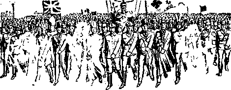Demon armies gathering to Armageddon
ligious element], and out of the mouth of the beast [the state], and out of the mouth of the false prophet [anti-Theocracy, made up of the combined elements of Satan’s organization], three unclean spirits, as it were frogs [loudmouthed croakers]: for they are spirits of demons [that is, visible representatives of demons], working signs; which go forth unto the kings of the whole world, to gather them together unto the war of the great day of God, the Almighty. (Behold, I come as a thief. Blessed is he that watcheth, and keepeth his garments, lest he walk naked, and they see his shame.) And they [the demon hosts] gathered them [the earthly representatives of the demons] together into the place which is called in Hebrew Har-Magedon.”-—For further consideration on this point see The Watchtower, October 1,1927, page 297; and Light, Book Two.
That movement of the demons against God’s people pictures the international movement against those who support the Theocratic Government described in Ezekiel’s prophecy, chapters 38 and 39, which movement is under the command of Gog, the Devil’s chief representative; and concerning which the Lord says: “I am against thee, 0 Gog, the chief prince of Meshech and Tubal: . . . Thou shalt come up against my people of Israel [the devoted people of God; his witnesses], as a cloud to cover the land; it shall be in the latter days, and I will bring thee against my land, that the heathen [godless nations] may know me, when I shall be sanctified in thee, 0 Gog, before their eyes.”
MOBOCRACY DEMONISM
A rule or attempted rule by violence is a rule under demon power and influence. In the days of Noah the demons were rampant and filled the earth with violence: “There were giants [demons] in the earth in those days; and . . . the earth also was corrupt before God, and the earth was filled with violence.” (Genesis 6:4,11) ‘As in the days of Noah, so also the coming of the Son of man shall be.’ (Matthew 24:37) Thus said Jesus concerning the end of Satan’s world. The “giants”, or Nephilim or demons, being still under great darkness concerning God’s purpose, continue to exercise influence and power over men and fill the earth with violence in the present day. Concerning this very time and the Devil’s activities therein it is written: “Woe to the inhabiters of the earth, and of the sea! for the devil is come down unto yon, having great wrath, because he knoweth that he hath but a short time.” (Revelation 12:12) Everyone now well knows that since the year 1914, and particularly since 1918, troubles and woes upon the peoples have increased, and today violence predominates in every nation, and great violence fills the earth, particularly in what is called the land of “Christendom”. Fear controls practically all the people and all the nations, the only exception thereto being those who fully and entirely trust God and Christ Jesus; concerning which it is written: “For God hath not given us the spirit of fear; but of power, and of love, and of a sound mind.”—2 Timothy 1: 7.
Briefly review the history of ancient and modern times concerning violent practices by religionists. Away back in the ancient days of Sodom a violent mob stormed the house of that ‘righteous and just man Lot’, and howled for the bodies of Lot’s visitors, that they might commit sodomy with them; and that mob also attempted violence upon Lot. Without any question that mob was under the influence and control of demons.—Genesis 19: 1-11; 2 Peter 2: 7, 8.
A mob that was composed of Jewish religionists denounced Jesus, whom God had sent, and the mob then voted for and chose the totalitarian ruler Caesar for their king and howled for the lifeblood of Jesus; and that mob was controlled and moved by demons.—John 19: 5, 6,12-16.
The mass movement of the herd of swine down the precipice into the sea was the act of a “legion” of demons. (Matthew 8: 28-33; Mark 5:1-16) The swine pictured the creature who is now under the control of demons; and rushing into the sea symbolized such heedlessly rushing on to destruction. On every occasion it was the religionists, under the influence of demons, that sought to kill Jesus.—John 8:40,42; 15:18-21.
Because the apostle Paul cast demons out of the slave girl, which girl was used to make money for her demon-controlled masters, the demons raised a mob of men and attempted to kill Paul.—Acts 16: 22-24.
The mob raised by the idolater or devil-religionist, demon-controlled Demetrius attempted violence upon Paul because he preached the truth, disclosing to the people the devil religion practiced amongst them.—Acts 19: 24-34.
On another occasion, when Paul was at Jerusalem, the religious Jews under the influence and power of demons tried to kill Paul. (Acts 21: 27-36) At Lystra, where Paul and his companions were telling the benighted people of and concerning Jehovah God and his kingdom, a company of religionists controlled by demons induced a mob to assault Paul with stones and almost killed him.—Acts 14: 8-20.
It appears from the Scriptures that the apostle Paul was assaulted by mobs (which mobs were under the influence of the demons) more than any of the other apostles. The Scriptures furnish evidence of a reason for this. Have in mind that Paul himself, according to his own testimony, was a religionist before the Lord opened his eyes to the truth, at which time he became a Christian. (Acts 9:1-16) Paul testifies that he was a zealous religionist, “exceedingly zealous of the traditions of my fathers,” that he “profited in the Jews’ religion”, that he persecuted the church of God and wasted it. He stood by and participated with the mob in the slaying of Stephen, which mob was under the control of demons. (Galatians 1:1-16; Acts 7:54-58) When he became a Christian he spurned religion, exposed the demons, and declared to all religionists that they were practitioners of demonism. (Acts 17: 22, Diaglott) His faithful devotion to God and his kingdom thereafter enraged the Devil and the other demons against him, and hence they induced the religionists to raise mobs and assault the apostle. In every instance where one has been blinded by the demons and later becomes a Christian and is enlightened by the Lord and faithfully serves the Lord, the demons are enraged against that faithful person and attempt to destroy him.
From all these scriptures it clearly appears that no one who consecrates himself to do God’s will can possibly prove his integrity unless he spurns religion and faithfully and earnestly serves Jehovah God as a follower of Christ Jesus. Furthermore, the Scriptures show that when one has become a Christian and falls away he becomes the easy instrument of the demons and he appears to be beyond recovery because he has sinned against light.—Luke 11: 24-26; 12:10; Matthew 12: 43-45.
Compare these facts of Bible history with the modern-day acts of the Roman Catholic Hierarchy and their dupes who, influenced by the demons, attempt to destroy Jehovah’s witnesses and their “companions” by raising mobs, which assault the servants of Jehovah God. Such wicked assaults upon Jehovah’s witnesses have in recent months been frequently committed by the Hierarchy and their demonized dupes in many places throughout the United States.
In Germany, in the early part of 1921, the Roman Catholic priests spread false reports against Jehovah’s witnesses, charging that they were financed by the Jews and were working to overthrow the state; and that course of action continued until 1933, when the Roman Catholic Hierarchy was able to induce the political rulers to cruelly persecute Jehovah’s witnesses, and confiscate their property, only because Jehovah’s witnesses were preaching the truth of and concerning God’s kingdom. The result of that lying campaign and persecution, instigated by the religious Hierarchy, has resulted in the incarceration in filthy prison of many of Jehovah’s witnesses.
WHAT SHALL BE THE END?
Satan and all his associated demons fight against Jehovah God and against his kingdom, and therefore against the interest of all honest persons. The demons use religion to blind the people to the truth and then persecute all who tell the truth of God’s Word. The Scriptures and indisputable facts show beyond all doubt that since Cain murdered Abel until this very day demon-blinded practitioners of religion have wickedly persecuted and caused the death of innumerable multitudes of innocent persons. To the priests of religion, that have taken the lead in such persecution and murder, Jehovah God speaking to them through his prophet says: “In thy skirts is found the blood of the souls of the poor innocents.” (Jeremiah 2:34) Religion has blinded the leaders thereof and made blind to the truth all who have followed such religious leaders. This is the undisputed history of the world, and particularly of “Christendom”. In the face of this historical proof the commercial and political leaders continue to say: “What we need is more religion.” Thus the inspired words found in the Bible are now more fully appreciated by those who rely upon God’s Word than ever before, to wit, ‘that the whole world lies under the wicked one.’—1 John 5:19.
Satan and his associated demons have under control all peoples of the earth and all nations of the earth that do not put their trust wholly in God and his kingdom.
CHAPTER III
JEHOVAH, by his Chief Messenger and Officer, sounds the mighty warning to all persons on the earth who are of good will toward God. “And he cried with a mighty voice, saying, Fallen, fallen is Babylon the great, and is become a habitation of demons, and a hold of every unclean spirit, and a hold of every unclean and hateful bird.” (Revelation 18:2, A.R.V.) Satan’s organization has reached its limit in wickedness. The separation of those of good will toward God from the supporters of the demoncontrolled world is now rapidly taking place, and the worldly system is degenerating with greater rapidity than at any time since the deluge. The so-called “Christendom”, with its demon religion, is in the most reprehensible position of all because “Christendom’s” leaders have fraudulently and blasphemously posed as the representative of Almighty God, while at the same time acting completely in opposition to The Theocracy. “Christendom” indulges in a fixed formalism by which she claims to be godly, but, at the same time entirely denying the power of Almighty God, she claims for men what belongs only to the Almighty.
All the Scriptural evidence shows beyond any doubt that “Christendom”, with her demon-control of men, is modern Babylon, which has en-79 tirely turned away from God and gone entirely over to the Devil. Every crooked politician, every greedy commercial giant, and every conscienceless clergyman now finds a habitation in modern Babylon. They being in control of the unclean spirit demons, the Lord describes these crooked ones as ‘unclean and hateful birds’. Long ago Jehovah God gave his word that Satan and his demon associates would be permitted to remain and continue their unhindered opposition to him, and that for a certain time; and that at the end of such time God’s name must be declared throughout the earth, and which proclamation will be quickly followed by an exhibition of Jehovah’s supreme power against the wicked ones. That time limit is up; hence the warning to all nations of the earth now being sounded. —Exodus 9:16.
Christ Jesus, the Executive Officer of The Theocracy, is enthroned as King. The demons have been cast out of heaven and down to the earth, and the Devil is now afflicting the peoples of the earth with ever increasing woes. (Revelation 12:1-12) To all of his people on earth Jehovah by Christ Jesus sends this message: “Come forth, my people, out of her [that is, Babylon, Satan’s organization, modern ‘Christendom’], that ye have no fellowship with her sins, and that ye receive not of her plagues: for her sins have reached even unto heaven and God hath remembered her iniquities.”—Revelation 18:4, 5, A.R.V.
This warning from the Lord means that every person who will maintain his integrity toward Jehovah God and receive God’s final approval through Christ Jesus must separate himself and hold himself entirely separate from all things that pertain to demonism. Therefore he must shun religion and everything pertaining to religion, and put his trust wholly and completely in the great THEOCRAT and his government. This warning does not come from men, but is from the Almighty God himself. The Scriptural evidence, to which attention has been called in the two preceding chapters proves beyond all doubt that the world is now under the control of demons and in the worst condition imaginable. (1 John 5:19) Without any doubt, the Lord in these latter days has made his people to have a clear understanding that religion is of the Devil and is in violent ojjposition to Christianity, and this He has done in order that those consecrated to him may escape from the power and influence of the demons, which power and influence hang like a great pall over all humanity. For this reason the people of Almighty God now appreciate the admonition of God set forth in the Bible, to wit: “For the worship that is pure and holy before God the Father, is this: to visit the fatherless and the widows in their affliction, and that one keep himself unspotted from the world’’-—«Tames 1: 27, Syriac Version.
By means of religion Satan has gained control of the world, and the only exceptions to that demon-control are those persons who worship Almighty God in spirit and in truth. Let every lover of righteousness now give heed to the warning which the Lord sounds. There is great danger lurking in the way of the consecrated, and some of these are liable to be turned away from the path of righteousness and lose everything. The present days are “the latter times” mentioned in the Bible and concerning which it is written: “Now the Spirit speakcth expressly, that in the latter times some shall depart from the faith [and fall away to religion], giving heed to seducing spirits, and doctrines of devils; speaking lies in hypocrisy; having their conscience seared with a hot iron [thus marking them as demon-controlled and hence instruments of the Devil].”—1 Timothy 4:1, 2.
In times past many have claimed to be followers of Christ Jesus and have regularly prayed the prayer which Jesus taught his followers, to wit: ‘Thy kingdom come; thy will be done on earth as in heaven/ but have not prayed such prayer in sincerity. Such persons, falling away from the truth, refuse to further hear the message of God: “For the time will come when they will not endure the sound doctrine; but, having itching ears, will heap to themselves teachers after their own lusts; and will turn away their ears from the truth, and turn aside unto fables,” doctrines of devils. (2 Timothy 4: 3,4, A.ll.V.) Many of the clergy of the Protestant systems are today in the class here mentioned by the apostle. They follow the wisdom of “Christendom”, expressed by men, and not the wisdom of God’s Word.
Under the tutorship of the Roman Catholic Hierarchy, and prompted by the demons, many so-called “Protestant” clergymen have had bitterness in the heart and have exhibited toward the true servants of God bitter envy and in this have followed “Christendom’s” religious “wisdom”. The following scripture aptly applies to them: “But if ye have bitter envying and stri fe in your hearts, glory not; and lie not against the truth. This wisdom descendeth not from above, but is earthly, sensual, devilish [demoniacal (A.R.V., margin)].”—James 3:14,15.
Like the people of Athens, “Christendom’s” religion is demonism, resulting from the fear of men and the influence of demons. Note here the words of the inspired servant of the Lord: “Then Paul stood in the midst of Mars’ Hill, and said, Ye men of Athens, I perceive that in all things ye are too superstitious.” (Acts 17:22) “And Paul, standing in the midst of the Areopagus, said, ‘Athenians, I perceive that in all things you are extremely devoted to the worship of demons.’ ” (Acts 17: 22, Diaglott) “And Paul taking his stand in the midst of the Hill of Mars, said, Ye men of Athens! In every way, how unusually reverent of the demons ye are I perceive.” (Acts 17:22, Rotherham) Demons had control of them.
The religious Jews sought the death of Paul, who had abandoned religion and had become the servant of Christ, and their accusations against Paul were due to “their own demon-worship”, as Festus so declared. (Acts 25:14,18,19, Rotherham) From that day to this Jews have not changed from their position towards Jesus Christ, and hence their religion is the same today, to wit, demonism. Now in these latter days the religious leaders, Catholic, Protestant and Jew, under the influence and power of the demons, seek to rule the world in a demonized, man-made way, which is directly opposite to the Theocratic Government. All the nations of earth today are in a state of fear, which is not fear of God, but fear of creatures, which fear is induced by the demons and which is in exact contrast to the fear of Almighty God. (2 Timothy 1: 7) For this reason the religious practitioners are those described in chapter 18 of Revelation as being the inhabitants of Babylon and therefore as unclean and hateful birds, which befoul their own nest and everything round about them.
VIALS
The book of the Bible known as The Revelation is Jehovah’s prophecy uttered by the Lord Jesus Christ in symbolisms and recorded by John his servant, and discloses that which must come to pass after the coming of Christ Jesus the king of the Theocratic Government. (Revelation 1:1, 2) John, as the servant and messenger of the Lord, pictures those who are devoted to and who are faithfully serving God and Christ, and who by the Lord are approved and brought into the temple and made His servants and message-bearers of Jehovah’s message. The Lord Jesus at the temple is attended by his host of angels who perform his bidding and who, under the Lord’s direction, cause the faithful servants of God on earth to perform certain duties. In his own due time the Lord caused the seven “vials” or messages of his wrath to be poured out as a warning. These seven vials or messages of wrath are poured out in fulfillment of the prophetic utterance by Christ Jesus. A detailed consideration of such is set forth in Light, Books One and Two, and particularly treating Revelation chapters nine and sixteen. The angels serving the Lord Jesus act under his command; as it is written: “And I heard a great voice out of the temple saying to the seven angels, Go your ways, and pour out the vials of the wrath of God upon the earth.”—Revelation 16:1.
The faithful witnesses of Jehovah on earth have a part in pouring out these vials, that is, in announcing the message of God’s wrath. Concerning the sixth vial of God’s wrath, it is written: “And the sixth angel poured out his vial upon the great river Euphrates; and the water thereof was dried up, that the way of the kings of the east might be prepared.” (Revelation 16:12) The great river Euphrates symbolically represents the peoples of earth, and the sixth vial is a warning from God to the people of good will that they may flee from Babylon, the Devil’s organization, and turn to Jehovah’s organization under Christ, the King of the great Theocratic Government. “The kings of the east,” or those coming “from the sun rising”, as stated in the foregoing text, mean Jehovah, the great Theocrat, and The Christ, Head and body. (Colossiansl :18; Revelation 5:10; 1:5,6) The faithful followers of Christ Jesus upon the earth perform their part as witnesses or bearers of God’s message of wrath to the people.
The 'drying up of the waters of the great river Euphrates’ symbolically pictures the turning of the people of good will away from Satan’s organization, the religious systems, and which work greatly enrages all the demons and also those people on the earth who practice the demon religion. This is symbolically shown by what follows and to which John bore testimony, and which the John class, that is, the faithful witnesses of Jehovah on earth, actually discern. These faithful followers of Christ see the Devil’s organization moving forward to the great climax, and what they see was foretold by John saying: “And I saw coming out of the mouth of the dragon, and out of the mouth of the beast, and out of the mouth of the false prophet, three unclean spirits, as it were frogs.”—Revelation 16:13, A.H.V.
“Dragon” is one of the names of the Devil and means devourer, and stands for the Devil’s organization, the religious element particularly, which bitterly opposes Jehovah God and his Theocracy: “And the dragon was wroth with the woman, and went to make war with the remnant of her seed [God’s organization], which keep the commandments of God, and have the testimony of Jesus Christ.”—Revelation 12:17.
The “woman” mentioned in the foregoing seventeenth verse symbolically represents God’s organization; and against God’s servants the Dragon goes forth to make war, which servants here are described as “the remnant of her seed”. Satan makes war against them because they “keep the commandments of God, and have the testimony of Jesus Christ”. “The beast” is a symbol of Satan’s organization upon the earth, visible to men and made up of the religious, political and commercial elements. “The false prophet” is the earthly mouthpiece of Satan’s organization and does most of the talking for that wicked organization and utters particularly many loud and boastful claims as to what the visible rulers of the earth will soon accomplish.
The “false prophet” appears in the role of a political prognosticator attempting to foretell or proclaim what the demon organization will do for the peoples of earth. It will be noticed in all these “false prophet” prognostications no credit is ever given to Jehovah God and Christ for what shall be done for the people.
The sixth vial of Jehovah’s wrath, above mentioned, corresponds to the sixth trumpet, described in Revelation 9:13-21. The pouring out of the vials and the sounding of the trumpets denote a time of woe to Satan’s organization, while to the people of God on earth the same denote a time of hailing THE THEOCRAT and Christ his King, and hence it is a time of joy and triumph to those who are wholly devoted to God. It means the approaching time of the battle of the great day of God Almighty and the complete victory therein of Christ Jesus, the irresistible Warrior. The vials and trumpets, therefore, constitute messages of warning which God has commanded must be delivered to the people. On July 24, 1927, the pouring out of the sixth vial and the sounding of the sixth trumpet began, and these are still in progress.
On August 5, 1928, the pouring out of the seventh vial and the sounding of the seventh trumpet began, and these are still in progress. The seventh poured out by the Lord through his angels was “into the air”, which was specifically against the demons, that is, against the Devil and all of his organization. (Revelation 16:17) The seventh constitutes the declaration of the Lord in favor of The Theocratic Government and against world rule by the Devil and his visible agents. The messages of the Lord relating to the sixth and seventh vials or trumpets greatly enraged the demons at the time and thereafter, and since which time these demons have fought against the witnesses of Jehovah, and these demons have brought into action the religious, political and financial leaders on earth, together with all the dupes who follow the lead thereof, against those who support the Lord.
ISSUE
The vital issue, stated in brief, is this: Shall the world continue to be ruled hy selfish men under the invisible power and control of demons, or shall the rule of the world be by the great Theocrat operating by his exalted and enthroned King, Christ Jesus? Since the time of the sounding of the’sixth and seventh trumpets the people on earth who are of good will toward God have been steadily turning away from religion because they have seen that religion is a snare of the Devil and the Devil’s associates and is operated as a racket against the people. This has so enraged the Devil and his associate demons and their representatives that the Devil has hastened to gather all his forces of wickedness to the battle of the great day of God Almighty, and which gathering is rapidly approaching the climax.—Revelation 16:13,14.
Following the proclamation of the sixth trumpet the “three unclean spirits”, mentioned in verse thirteen, have been exceedingly active, making great noise and exercising much influence and power. Such spirits could in no wise be representatives of the Almighty God, because it is stated in the Scriptures that they are all unclean: “For they are [the] spirits of demons.” (A..R.V.) And what is the work of those unclean demons? The Scriptures answer, To gather the rulers of the earth and their supporters, that is, the whole world, to the battle of the great day of God Almighty. The Devil sees that his time is short and that he can now make good his wicked challenge to Jehovah only by destroying all the peoples of all the nations of the earth.—■ Revelation 12:12.
Never in time has there been so much woe and distress on the earth as just now. Fear has driven all the nations to the point of desperation. Wars are begun and carried on without any previous notice or declaration. Wickedness in high places, and also in low places, is greater than ever known, and there is nothing to compare with the present day of wickedness except the prototype, that is, the condition on earth in the time of Noah, when the demons overran the earth and God destroyed the visible world in the great deluge, or flood. The earthly leaders sense the coming of a great climax resulting in disaster, and therefore they issue a statement that, unless peace is quickly established amongst the nations, the human race will soon perish. Instead of turning to God and the plain instruction given in God’s Word, and ascertaining the real cause of the trouble and the remedy therefor, the worldly rulers turn wholly to the Devil and his associate demons and representatives. Religion, politics and commerce, the three elements visibly ruling this world, step to the fore and with one accord proclaim to the people, “We must have more religion, else our civilization will soon perish.” Thus they act as the mouthpiece of these demons or devils to force all the people into religion, the devil himself knowing that such will end up in their destruction. Note the present-day evidence in fulfillment of prophecy. Only those of good will toward God will note and appreciate the same and give heed to the Word of the Almighty.
CORROBORATIVE TESTIMONY
The president of the United States, on December 23, 1939, announces the appointment of an ambassador to the Vatican, which is the chief headquarters of religion on earth. That ambassador is sent to the pope, as the president states, “as my personal representative in order that our parallel endeavors for peace and the alleviation of suffering may be assisted.” (Of course, the United States government foots the bill, and that without consent of the people, and the one hundred and thirty million people of the nation are made to recognize the pope as the chief religious leader on the earth, and that he is now in league with the United States government.) Continuing, the letter of the president to the pope says: “When the time shall come for the re-establishment of world peace on a surer foundation, it is of the utmost importance to humanity and to religion that common ideals shall have united expression. ... I trust, therefore, that all of the churches of the world which believe in a common God [not Jehovah God, since He is not the common God of religion and politics and they do not fear and obey God, but oppose his government] will throw the great weight of their influence into this great cause.”
As further evidence that the president, as a political power and one of the world rulers, ignores the Creator and relies on man, note that part of his letter to the pope, “This world has created for itself a civilization capable of giving to mankind security and peace firmly set in the foundations of religious teachings. Yet, though it has conquered the earth, the sea, and even the air, civilization today passes through war and travail.”
Note the frog-like croaking, boasting, and loud language, to wit: “The world has created for itself a civilization capable of giving to mankind security and peace firmly set in the foundations of religious teachings.” The ambassador appointed to the Vatican is Myron C. Taylor, a former head of the United States Steel Corporation, one of the greatest corporations on earth, which devotes most of its energy and money to building war equipment for the destruction of human lives. Surely no sensible person would say that such a one represents the great “Prince of Peace”, Christ Jesus. At the same time the president announces that he has invited the president of the Federal Council of Churches, which ostensibly is Protestant, and also the president of the Jewish Theological Seminary of America, which practices the Jew religion, to consult with him and to act as spokesmen for American Protestantism and American Jewry, in the common cause of the three “faiths”, thus proposing a closer relationship, if possible, between religion, politics and finance to govern the earth in opposition to the Almighty God and his King, Christ Jesus.
Here is a concrete example and the most persuasive proof that religion, politics and commerce are closely linked together for the purpose of establishing peace, regimenting the people, and ruling the earth, and which is a claim by man of being able to do what alone Almighty God can do. This, in connection with the boast of what the world has created for itself, is assuming to do that which is impossible for man to accomplish. “Blasphemy” is properly defined to be a claim by man to do that which God alone can do. The combination of religion, politics and commerce is in open opposition to the Theocratic Government, and therefore the boasting words of the combination are clearly blasphemous. Jesus, the King of The Theocracy, says: “He that is not with me is against me; and he that gathereth not with me scattereth abroad.” (Matthew 12:30) Clearly, then, the religiotis, political, commercial combine does not gather with Christ Jesus the King, but opposes him; which is further proof that it is Satan who is using religion, politics and commerce to deceive the people and to plunge them into destruction.
Let it be conceded that the purpose of the aforementioned persons to establish peace in the earth is sincere; yet that does not alter the matter in the least, because their announced purpose is exactly contrary to the announced purpose of the great Theocrat and in defiance of His Word, hence proving that they are the representatives of the demons. For several years the Watchtower publications have been calling attention to the fact that the alliance of religion, politics and commerce is against Jehovah’s kingdom. Much evidence in the past has appeared in support of that statement. The evidence announced herein should convince all persons who believe in Jehovah God and Christ Jesus that by means of religion the Devil is leading all the nations of the earth into the ditch. The declaration sent out now by religionists, politicians and commercial giants is directly against Almighty God and his King and is in defiance of the words of Jehovah, to wit: “Behold, my servant whom I have chosen; my beloved in whom my soul is well pleased; I will put my spirit upon him, and he shall declare judgment to the Gentiles [nations]. . . . And in his name shall the Gentiles [nations] hope.” (Matthew 12:18,21, A.R.V.; Isaiah 42:1-7) God’s announced purpose must be and shall be carried out, because he has so stated.—Isaiah 46:11.
MORE EVIDENCE
The pope received the message of Mr. Roosevelt with real satisfaction and notified the president that his ambassador would be well and gladly received. Then on the 28th day of December, 1939, the pope made a personal call upon the king of Italy, and concerning which the Associated Press says: “Pope Pius XII called upon Italy’s king and queen today in the first visit by any pope on a temporal prince in more than seventy years. . . . The pope went to the Quirinal palace amid great pomp and [religious] ceremony.” In this the pope certainly was not following the lead of the meek and lowly
Christ Jesus when he was on earth. The Press report further says: ‘Pope Pius today, in a brief speech after the ceremonial meeting with the king and queen, said “the visit resealed the happy accord between church and state”.’
These facts constitute further proof of the confederacy between religion and politics, supported by selfish commerce, to establish a so-called “peace of the world” and to rule the earth in complete defiance of the Word of Almighty God. Shall the efforts of such men succeed? Jehovah, speaking to that unholy combine, says: “Associate yourselves, 0 ye people, and ye shall be broken in pieces; and give ear, all ye of far countries: gird yourselves, and ye shall be broken in pieces; gird yourselves, and ye shall be broken in pieces. Take counsel together, and it shall come to nought; speak the word, and it shall not stand: for God is with us.” (Isaiah 8:9,10) God is with Christ Jesus and all who support The Theocracy against any combine that acts in defiance of His Word.
The Catholic press, and all other religion-controlled publications, will fully support the united efforts of the religious, political and commercial combine to establish world peace, as suggested by the president of the United States. For some time now the public press has been boldly supporting the religionists, because the Roman Catholic Hierarchy has placed some trusted representative in every organization of the metropolitan press. The Catholic press has become a tremendous factor in influencing the people and turning them into demonism. That religious organization engages in the politics of the world on a vast scale. The December 16, 1939, issue of The Nation publishes an article under the title “The Catholic Press” which well says:
“The American Catholic press is a vital part of the church’s political machinery and was greatly encouraged by Pope Pius XI, who saw it as a powerful agency of Catholic Action— that is, co-operation between laity and hierarchy for the attainment of Catholic aims. ... On international issues the Catholic press has always advocated whatever political course would further church power. It opposed American foreign intervention in support of the Hungarian Kossuth, a Protestant; it favored intervention in behalf of the Catholics in Ireland and in Mexico. It has opposed extending the ‘Good Neighbor’ spirit in Latin America for fear of spreading Protestantism.” “These Catholic fascist movements flowered when papal diplomacy was in the hands of the present pope.” “Judged by any standard of modern journalism, the coverage of the war in Spain given by the official Catholic news agency must be considered one of the most dishonest efforts of our age.”
It is clearly to be seen that the primary purpose of the Roman Catholic Hierarchy is to rule the earth contrary to God’s commandment; which is further proof that said religious institution is the chief instrument on earth of the demons to deceive the people and lead them blindly into destruction.
Divine prophecy now in course of fulfillment shows beyond all doubt that the end of Satan’s uninterrupted rule is at hand and that the climax
will soon be upon the world in the form of the battle of the great day of God Almighty. In the face of all this indisputable proof the religionists today take the lead in the united effort to rule the world by men contrary to God’s announced purpose. In their endeavors to accomplish that purpose the religionists disregard the truth and freely resort to lies.
Knowing that the religionists would resort to lies, God through his prophet foretold that the religionists, in justification of their acts, would say, in these latter days particularly: “We have made lies our refuge, and under falsehood have we hid ourselves.” (Isaiah 28:15) Exactly this is what the Catholic press today is doing, not hesitating to resort to all manner of lies to deceive the people. The press, under the control of the Hierarchy, advocates a unity with any political movement that will further the interest of the Hierarchy, and hesitates not to resort to all manner of lies to cover up their wrongful course and to ease their conscience. The fact that the Hierarchy and their dupes resort to lies is further proof that it is the Devil and his associated demons that are back of the worldmovement of religion, politics and commerce to now bring about a peace and the rulership of the world. Satan is the chief amongst all liars. He is the father of lies, and in him there is no truth, and his supporters and dupes follow exactly his lead. (John 8:44) Religion being the chief instrument of the Devil on earth, and the politicians’ calling for “more religion”, is further support to the conclusion that the Devil is trying
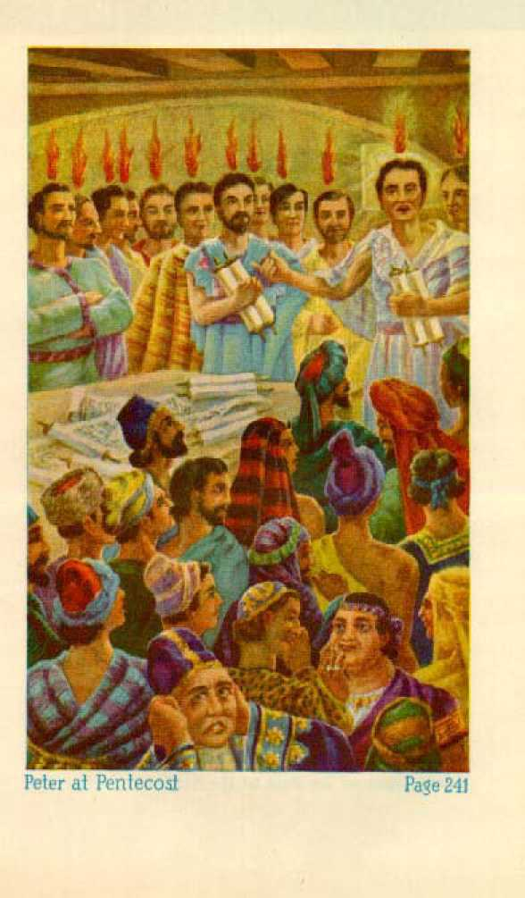Peter at Pen taco si
Page 241

Johns Vision of the Birth of the Kingdom Page 259
to plunge the whole world into destruction.— Revelation 16:14,16.
ARMAGEDDON NEXT
President Roosevelt’s letter to the pope, and his appointment of an ambassador to the Vatican and his calling leading Protestants and the leading Jew religionists to join with him in establishing world peace, is hailed by the press as the greatest news of modern times. Will that scheme, originating with the chief of demons, to establish peace amongst the nations, succeed1? For a brief period of time only; and this conclusion is fully supported by the Scriptures. It must be expected that soon the nations will arrive at some kind of peace agreement, and then the religious and political leaders will receive great honor and praise at the hands of the deluded masses of the people. The Scriptures point out that then those who have yielded to religion and have come under the influence and power of the demons will say concerning the world rule by religion, politics and commerce, the symbolic “beast”: “Who is like unto the beast? who is able to make war with him?” (Revelation 13:4) Then will the unholy combine, drawn together and acting as the visible representatives of the Devil, announce to the world, “We have brought about peace,” and will also say, “Peace and safety.” Then what shall follow? The Scriptures answer: “For when they shall say, Peace and safety; then sudden destruction cometh upon them as travail upon a woman with child; and they shall not escape.”—1 Thessalonians 5: 3.
REJECTING THE TRUTH
Deluded religionists stubbornly resist the truth of God’s Word; and this is the result of demon influence. Israel’s king Saul stubbornly refused to hear and obey the truth. Then Jehovah through his prophet said to Saul: ‘To obey is better than sacrifice, . . . for rebellion is the sin of witchcraft; and stubbornness, iniquity and idolatry.’ (1 Samuel 15: 22, 23, Leeser) The person who willfully refuses to hear and obey the truth of God’s Word when the truth is presented to him thereby opens the door and invites the demons to come in. The demons then obsess him, that is, besiege his mind and bring that creature under their control. Many who think themselves servants of God are stubborn and rebellious, refusing to obey God’s Word, and thus yield to demon influence. Therefore Jehovah admonishes those who would find safety in the day of his wrath to “seek righteousness, seek meekness”, before that great and terrible day. (Zephaniah 2:1-3) That is to say, Let those who earnestly desire safety and protection be diligent to seek and to do what is right and to ascertain from God’s Word what is the right course, and be willing and anxious to hear and to obey the Word of God, because their hearing and obedience are better than all the sacrifice they could perform.
The Roman Catholic Hierarchy and like religious leaders urge the people to refuse to give heed to the message of God’s Word when brought to them by Jehovah’s witnesses; and thus the clergy are guilty of aiding the demons in deceiving and blinding the people. The deluded ones, for fear of the clergy, fall into the snare of the Devil. The honest and sincere persons, who give heed to the Word of God, seek righteousness and meekness, and such only find the way of escape and safety at Armageddon. The stubborn and rebellious ones will perish at Armageddon.
FURTHER EVIDENCE OF DEMON POWER
The following scriptures are cited to show the demon methods employed to turn mankind away from God. The ones who readily yield to the demon influence are shown to be the emotional, religious practitioners. These are easy victims of the demons and are therefore kept in blindness. The demons besiege or obsess the mind and thereby gain possession or control of the human creature, causing such creature or creatures to indulge in many unreasonable things, such as to run wild and shriek, inflict selftorture, and otherwise pollute themselves. The mass of the insane persons are victims of the demons, being under the power and influence of them. Note the Scriptural evidence in the following texts: Matthew 8: 28, 29; Matthew 17:15; Mark 5: 2-5; Luke 8: 27-36; Jeremiah 7:31; Jeremiah 19: 5; Psalm 106: 37, 38.
Another method of the demons is to vex and enslave their victims so that the human creature or creatures have no control over themselves or their actions. (Matthew 4:24; 8:16; 15:22; Mark 1:32; Luke 6:18; Acts 5:16) A specific case is cited in the Scriptures of seven demons possessing one human, causing great distraction and confusion. (Luke 8:2) The demons have power to paralyze (and do paralyze) human creatures and to cause dumbness and other physical disabilities. (Luke 9: 38-42; 11:14; Matthew 9: 32, 33) They also cause human creatures to lose the power of sight and of hearing and speech. (Matthew 12:22) They also have power over human creatures to be held for a long period of time in a bowed or bent condition of body, being unable to straighten up.— Luke 13:11-13,16.
Religionists who believe their dead friends are in fact alive in “purgatory” are the victims of demon influence and power. The Scriptures, without contradiction, show that the dead are unconscious, out of existence.—Ecclesiastes 9:5,6; Psalm 115:17.
Victims of demons, being under the influence of demon religion, often hear voices, which voices they are made to believe are those of persons who have long been dead. Such voices, in fact, are the voices of demons impersonating those who have died, and doing so for the purpose of deceiving human creatures who are alive. A striking instance is that at 1 Samuel 28: 7-15.
TORTURE
Imprisonment and torture originated with the Devil and are practiced only by those who have yielded to the Devil or demon religion. The first recorded instance of torture or tormenting, as stated in the Bible, is assigned to the prince of devils, and shows that religionists were used by the Devil to inflict such torment upon Job. The Scriptures show that the Devil and his associate demons brought about the destruction of Job’s children and his property, and then caused his wife to torment him, and then three religionists came and indulged in a long tormenting harangue, all of which was done for the purpose of turning Job away from God and causing him to be destroyed. Their efforts failed.—See Job, chapters one to three.
Those who yield to demon influence soon find pleasure in torturing other human creatures, and particularly those human creatures who boldly give testimony to the name of Jehovah God and his kingdom. Take note of the many fiendish acts of abuse, torment and torture heaped upon the faithful witnesses of Jehovah by the Roman Catholic Hierarchy and their allies, the Nazis, Fascists and other religious totalitarians. Prisons and concentration camps have in recent months become places of torture of Jehovah’s witnesses and others. All of such imprisonment and torture results from the influence and power of demons exercised over people by the practitioners of religion.
The law of Jehovah God, given to his chosen people at the hand of Moses, makes no provision for inflicting punishment upon creatures by imprisonment or concentration camps of torture. The first mention made in the Bible of such places of restraint and torment is attributed to the religious, demon-worshiping Egyptians, and which was exercised against God’s innocent servant, Joseph. (Genesis 40:15; 41:14; Psalm 105:17,18) Egypt held many captives in “the dungeon”, or “the house of the pit”. (Exodus 12:29, margin) Such means of imprisonment and torture originated with Satan, the prince of demons, as shown by the Scriptures at Genesis 6:1-4, and 1 Peter 3:19, 20.
The demon religionists, the Philistines, put God's servant Samson in prison and forced him to indulge in heavy labor. (Judges 16:21-25) The ten unfaithful tribes of Israel fell away from God by reason of religious influence, became the victims of demons, and thereafter followed the Devil’s lead by setting up and maintaining prisons wherein were confined Jehovah’s faithful prophets and servants. (1 Kings 22:26,27) It is written: “Asa [the unfaithful, demon-worshiping king of Judah] was wroth with the seer [prophet; one of Jehovah’s witnesses], and put him in a prison house [house of torture (Young’s translation)']; for he was in a rage with him because of this thing. And Asa oppressed some of the people the same time.” —2 Chronicles 16:10.
The demon-worshiping enemies gathered God’s people into the pit and dungeon. (Isaiah 24 : 22, margin; Zechariah 9:11) The king of Assyria, the demon-religionist, put the king of Israel in state’s prison. (2 Kings 17:4) The ruler of Babylon, who practiced demon religion, imprisoned the Jews and put them on strict prison fare. (2 Kings 25:27-30) Zedekiah, the unfaithful, demon-religious king, maintained torture places or “stocks” in Jerusalem, and in these places the prophet Jeremiah was imprisoned. (Jeremiah 20: 2, 3) The same demonworshiping king had the faithful prophet of God thrown into a filthy, miry pit.—Jeremiah 37:16; 38:6-13.
Christ Jesus, the holy and innocent One, was, at the instance of religionists, temporarily put in prison, tortured and disgraced.—-Isaiah 53: 8.
The religious, demon-controlled Jews maintained prisons and committed God’s faithful servants to such prisons and places of torture. (Acts 5:17-25; 8: 3; 22:4,19; 26:10) At the instance of religionists the apostle Peter was chained between two prison guards.-Acts 12:6,7.
All the totalitarian states are under the control of demons and practice the demon religion, and at their hands Jehovah’s witnesses today suffer great indignities, imprisonment and torture. Specific examples of such demon-religion practice, and punishment and imprisonment of Jehovah’s witnesses, are found in the state of New Jersey, in the United States, in Germany, in Quebec, and in other like places.
The demon-religion practitioners exalt the political state today even as they did in times past, when the politicians and demon-religionists acted together to punish Jehovah’s faithful servants. (Daniel 3:8-27) Today the demonreligionists, led by the Roman Catholic Hierarchy, induce the political law-making and lawenforcement bodies to inaugurate compulsory flag-saluting, the repeating of national oaths of allegiance, and hailing of men, all of which is done at the instance of the Devil and his associate demons. While all such religious, political rulers by their mouths utter the prayer which Jesus taught his followers to pray concerning God’s kingdom and that they might be delivered from temptation, yet not one of them does so sincerely and consistently, and they have no real desire to have such prayer answered. They are blind, in the dark as to God’s purpose, and blindly yield to the influence and power of demons.
The foregoing great array of Scriptural testimony, which is not subject to successful contradiction, proves beyond all doubt that all religion originated with and is forced upon the' people by the Devil and his associate demons, and that the purpose of such is to turn the people away from God and cause them to go into complete destruction. Now in these last days, and just preceding Armageddon, Almighty God by and through Christ Jesus is clearly and plainly putting these truths of and concerning religion and demonism before the people. This he is doing as a warning to them. All persons now hearing the message of warning will by their course of action show which side they are on. The Lord is separating the people of good will, his sheep, from the demon-controlled, the goats. (Matthew 25:31-46) All those who will hear the warning and give heed thereto will flee from religion to the place of safety under God’s organization. All who refuse to hear and obey will find the same fate as that of the Devil and all his angels.—Matthew 24:16; 25: 41.
PROTECTION
Again let the people be reminded that religion is a snare and a racket, originating with the Devil, the leader of the demons, and forced upon the people by the demons: the snare of the Devil, in which to catch the people, and the racket of the religious leaders to rob the people. All the practitioners of religion, and the adherents thereto, will find no place of safety or escape at Armageddon. The scripture plainly says that ‘none shall escape’. (1 Thessalonians 5:3) The only place of protection and safety is for those who put their trust entirely in God and in Christ his King. All who would find the place of safety remember these words: “Whoso putteth his trust in Jehovah shall be safe.”~Proverbs 29:25, A.R.V.
What shall be the end of religion? Its doom is written, the record of which is set forth in the following chapters.
CHAPTER IV
UPON careful consideration of the evidence set forth in the preceding chapters the person of good will can readily see that religion is the product of Satan and for long has been used by Satan and the other demons to debauch the human race and to defame the name of Almighty God. It has been and is the most subtle instrument to deceive and to bring about the destruction of men and nations. If Jehovah God in his Word makes known that it is his purpose to destroy the Devil at a set time, it is reasonable to conclude that God will also destroy everything that the Devil and his associate demons have used and are using to defame Jehovah’s name and to entrap mankind. Shall the Devil and his associate demons continue to exist forever1? or shall they be destroyed, and, if so, when ?
The Scriptures answer in no uncertain terms. At the time Satan made the wicked challenge to Jehovah the judgment of death was entered by Jehovah against the Devil, which judgment is recorded in the following scriptures: Isaiah 14:12-19 and Ezekiel 28:13-19. God then told the Devil that He would permit him to remain and give him an opportunity to prove his wicked challenge and that in due time God would exercise his supreme power against the Devil and 106 destroy him. (Exodus 9:16, Leeser) For many centuries the Devil and his associate demons have put forth every possible effort in support of that wicked challenge, and the inability to carry it out has been fully and completely demonstrated. The time is therefore at hand for the execution of the judgment against the wicked ones, and this the Devil well knows; as it is written, “He knoweth that he hath but a short time.” (Revelation 12:12) It is plainly stated in the Scriptures that the Devil shall be executed by the Lord Jesus, the Executive Officer of Jehovah God.—Hebrews 2:14.
As to the wicked angels, Nephilim or demons, the judgment of death is written against them (2 Peter 2:4,9). “And the angels which kept not their first estate, but left their own habitation, he hath reserved in everlasting chains, under darkness, unto the judgment of the great day.” (Jude 6) All the demons, including Satan, the prince of demons, are extremely wicked; concerning whom it is written, ‘AU the wicked will God destroy.’ (Psalm 145:20) The execution of the wicked will take place at Armageddon, the battle of the great day of God Almighty. —Revelation 19:11-21; 20: 2. 3.
The nations that have fallen under the control of the Devil will likewise be destroyed: “The wicked shall be turned into hell, and all the nations that forget God.” (Psalm 9:17) Today every nation on the earth is against Jehovah God and his government, that is, The Kingdom, for which Jesus taught his followers to pray. Jesus says: “He that is not with me, is against me: and he that gathereth not with me, scatter-eth abroad.” (Matthew 12: 30) All nations practice religion or demonism in defiance of Jehovah God and his kingdom, “Christendom” pretends to serve God, but does so hypocritically, drawing near to him only in words, but not in truth and in fact. What will be the end of religion and of those who now continue to practice religion ? What follows gives the true and Scriptural answer.
Jehovah God expressed to Abraham His purpose to set up a government of righteousness under which all who love righteousness might have life and attending blessings. (Genesis 12: 2, 3; 22:15-18) Jehovah did set up a typical government, over which he made David the king. David foreshadowed Christ Jesus, and that typical government was a picture which foretold the coming of God’s real government with Christ Jesus, the antitypical David, as King in control. The antitypical or real government of God is called “THE THEOCRACY”, because it is God’s government. Concerning Christ Jesus the King it is written: ‘The government shall rest upon his shoulder, and of his government and peace there shall be no end.’ (Isaiah 9: 6, 7) More than nineteen centuries ago the man Jesus came to earth at the command of Jehovah God to make known the truth of and concerning Jehovah and His government or kingdom, which should be set up at some time future. (John 18: 37) For that reason he taught his followers to always pray to Almighty God: “Thy kingdom come. Thy will be done in earth, as it is in heaven.” (Matthew 6:10) Just before his crucifixion Jesus announced his purpose to go away to prepare and receive the kingdom and that he would later return and draw to himself those who support the kingdom.—John 14: 2, 3; Matthew 25:14-24.
Christ Jesus is “The faithful and true Witness” of Jehovah God. (Revelation 3:14) All who hear and obey the commandments of God given by and through Christ Jesus and who follow in his steps are likewise witnesses of Jehovah. Included in this class are the faithful apostles. After the resurrection of Jesus Christ God began to take out from amongst men others who faithfully follow in the footsteps of Christ Jesus, and they must also be witnesses of Jehovah. (Acts 15:14-16; 1 Peter 2:21) At the second coming of Christ Jesus those of his faithful followers then on the earth, being the last amongst the class so taken out, are called “the remnant”, to whom is committed the testimony of Jesus Christ, and who obey God’s commandments, and who are therefore made witnesses of Jehovah. (Revelation 12:17; Isaiah 43:10-12) All such are anointed and commissioned to proclaim the name and the kingdom of Almighty God.—Isaiah 61:1, 2.
Christ Jesus was enthroned as King in the year 1914 (A.D.), and three and one-half years thereafter, to wit, in 1918, he came to the temple of God for judgment. (Malachi 3:1-3) Thereafter he began to gather unto himself his followers and to judge them; and the approved ones are those that are designated in the Scriptures as “the remnant” of the anointed ones who are witnesses of Jehovah. Then the Lord began to gather unto himself another class, whom he designates as his “other sheep”. (John 10:16) These other faithful ones become the companions of “the remnant” and are designated in the Scriptures as “Jonadabs” or “Jonathans”; and continuing faithful in obedience to God's command, these will make up the “great multitude”, who shall live on the earth forever. (Revelation 7: 9-15) Both the remnant and the “other sheep” are properly called “Christians”, and as companions they work together in peace and in harmony, declaring Jehovah’s name and his great Theocratic Government. (Psalm 122:1-9; Revelation 22:17) None of these practice religion, but shun religion as a deadly enemy, which it is.
Many persons who today practice religion say they are Christians, but they are not. Those who continue to practice religion have a form of godliness, but they deny the power of God and his kingdom.—2 Timothy 3: 5.
The demons have used religion to make many hypocrites amongst men. A hypocrite is despicable in God’s sight. (Job 27:8,9; 34:30) Because the clergy, that is, the priests and Levites, amongst the Jews abandoned God’s Word and followed the teachings of men, practicing religion, the Lord Jesus denounced them as hypocrites : “Ye hypocrites! well did Esaias prophesy of you, saying, This people draweth nigh unto me with their mouth, and honoureth me with their lips; but their heart is far from me. But in vain they do worship me, teaching for doctrines the commandments of men.” (Matthew 15:7-9) “Woe unto you, scribes and Pharisees, hypocrites! for ye are like unto whited sepulchres, which indeed appear beautiful outward, but are within full of dead men’s bones, and of all uneleanness. Even so ye also outwardly appear righteous unto men, but within ye are full of hypocrisy and iniquity. Ye serpents, ye generation of vipers! how can ye escape the damnation of hell?” (Matthew 23:27,28,33) The end of hypocrites, therefore, is destruction.
Saul of Tarsus, who later was called Paul and who became an apostle of Jesus Christ, was at one time a religionist; but when he learned the truth, he became a Christian. (Galatians 1:1-16) God delivered him from religion because Paul was honest and sincere and of good will toward God. With the coming of the Lord Jesus to the temple God sets before the practitioners of religion His truth in order to afford such an opportunity of gaining knowledge and escaping from the snare of religion. Today the Lord is bringing his truth to the attention of the persons of good will in order that they may take their stand on the side of Jehovah and his kingdom and find the place of safety and the way to life everlasting.
PROPHECY
“Known unto God are all his works, from the beginning of the world.” (Acts 15:18) That includes everything pertaining to religion and what will be the end of religion. God has set forth by his prophets what will come to pass, and in his own due time he brings to pass the physical facts in fulfillment of the prophecy and reveals the meaning thereof to those who diligently seek him. The prophecy of Joel specifically relates to religion and its final end. There was a miniature fulfillment of that prophecy upon Jerusalem, and the complete fulfillment of that prophecy is upon “Christendom”. Jerusalem foreshadowed “Christendom”; and what came to pass upon Jerusalem was typical of what must come to pass upon “Christendom”. The complete fulfillment of the prophecy of Joel began to take place after A.D. 1918, the date when Christ Jesus appeared at the temple of Jehovah for judgment. God’s prophecy, as recorded by Joel, emphasizes the following things, to wit:
That God’s work, designated in the Scriptures as his “strange work”, he is causing to be done now in “Christendom” and which must be completed prior to Armageddon as a witness and a warning to “Christendom”; that in doing this work God uses the people Taken out for his name’ together with their companions, and by these he gives warning specifically to all who have looked for individual salvation and honor, and who have been indifferent to the honor and vindication of Jehovah’s name. The prophecy exposes to view the “evil servant” class and “the man of sin”, “the son of perdition.” The prophecy foretells what will be the effect of God’s “strange work” upon “Christendom”. It shows the formation of a totalitarian state, and the full co-operation of the practitioners of the so-called “Christian religion” with the dictators of the world in opposition to God’s kingdom.
The prophecy discloses the difficulty into which true Christians fell, and the recovery of the faithful ones from such difficulty, and the outpouring of God’s spirit upon all the faithful.
The prophecy shows the united effort of the religionists, politicians and commercial rulers to destroy those who faithfully serve Jehovah God. Instead of such conspiracy and united efforts on the part of the enemy to destroy Jehovah’s witnesses deterring them from their work, the faithful ones are not dismayed because thereof, but boldly and joyfully march onward, doing the work as commanded by Jehovah God and his King. Furthermore it shows Jehovah inviting all of the Devil’s forces to come on and fight, and that the result is and shall be to the glory of Jehovah and to the vindication of his name. The prophecy shows the complete destruction of religion and the triumph of God’s kingdom of righteousness. These truths, now revealed and when understood by those devoted to the Lord, of necessity bring joy and hope to them.
ARMIES
The opening words of Joel’s prophecy show that it was written according to the commandment of Jehovah God: “The word of the Lord that came to Joel, the son of Pethuel.” (Joel 1:1) The name Joel means “Jehovah [is his] God”. Since individuals are of no importance and the Word of God is not written to exalt individuals, the personal history of Joel is not recorded. He was an instrument in the hand of God, and to God alone belong and go all credit and honor. In the consideration of a prophecy or prophetic picture it is not necessary or even proper to look upon the prophetic writer or the players and what they do, as acts of wonderment. We should always look to God and upon the work that he does, both in the prophecy and in the fulfillment, as that which is wonderful, and then we shall see and appreciate the prophecy. It is God and his works that are wonderful; and truly he works in a marvelous way in the performance of his will. God used both intelligent and unintelligent creatures to make prophetic pictures, and sometimes the one used was devoted to God, and sometimes not, thus showing that the individual is of no importance but God is of all importance. The name of the prophet or players and the meaning thereof are important, because disclosing the fact that God uses such to do and to perform his work.
Joel was “the son of Pethuel”, which name means “enlarged of God”. The name appropriately calls attention to the things that come to pass in connection with the fulfillment of the prophecy. Joel, being a witness of Jehovah, represented the faithful remnant of the anointed, who are made and constituted the witnesses of Jehovah. The father of such witnesses is Jehovah God, because they are his children; and the meaning of the name of Joel’s father would therefore call attention to the facts,
(1) that the remnant were loosed or released from the bondage of Satan’s organization (Isaiah 14:17; 52: 2; Ezekiel 37:12,13; Psalms 116:16; 105: 20); and
(2) that the mouth of such was enlarged or opened by the Lord that they might deliver the kingdom message (Psalms 51:15; 78: 2; Ezekiel 3:27; 24: 27; 33: 22); and
(3) that their ears were made to hear and to obey Jehovah’s commandments in delivering his message. (Isaiah 50:5; 35:5) The names both of Joel and of his father point to the fact that the fulfillment of the prophecy written by Joel is completed after the coming of Christ Jesus to the temple of Jehovah God in A.D. 1918 and within “the day of Jehovah”.
The word of the Lord which came to Joel was an emphatic command which Joel must obey, and he must deliver the message as commanded. Likewise the ‘people taken out for his name’ receive their commission from Jehovah God, and they must obey his commandments and carry out the same by delivering God’s message to all to whom he sends them: “Hear this, ye old men, and give ear, all ye inhabitants of the land. Hath this been in your days, or even in the days of your fathers?” (Joel 1:2) It appears that the “old men” mentioned in this last-quoted verse refers to those who rest upon their own laurels, esteeming their wisdom far superior to that of others, and who pride themselves upon what they have gained in the past, and who fail to give honor to Jehovah God. Such, as indicated by the Scriptures, are those who become selfappointed “leaders of the people”, and who teach the doctrines of men, and who therefore lead the people into error. Such are ‘the prophets that teach lies’; ‘the leaders of the people cause them to err.’ (Isaiah 9:15,16) “Mischief shall come upon mischief, and rumour shall be upon rumour; then shall they seek a vision of the prophet: but the law shall perish from the priest, and counsel from the ancients.”—Ezekiel 7:26.
The “old men” and the “inhabitants of the land” who follow their lead do not ask that the message be brought to them, but it is sent to them and they are commanded to hear because it is “the word of the Lord”. The message is addressed to those who have made a covenant to do the will of God but who have become unfaithful and broken that covenant. Today the practitioners of religion which is called “the Christian religion” are in an implied covenant to obey God, but they do not perform their part of the covenant. They are not the servants of God, but, on the contrary, they bring reproach upon Jehovah's name. God will not permit them to have any excuse for their course of action, but sends them his word and demands that they give heed to the warning. Thus the Lord commands his witnesses to carry his message to “Christendom” at the present time, and even to those who do not ask for it or even want it. Jehovah’s witnesses go to the people, and particularly within the hearing of the leaders, and deliver to them the message of Jehovah. It is not the message of hate, nor is it delivered because of hate, but it is God’s message of fair warning and delivered at his command, notifying all of his purpose to vindicate his name. Such witness work is God’s “strange work” now being done on the earth.—Isaiah 28: 21.
When Jehovah’s witnesses approach the people with Jehovah’s message of warning the religionists say: “Strange that Christians should be engaged in such a work of warning the clergy and leaders of ‘Christendom’!” That is the way it appears to them. It is indeed a “strange work”, because it is God’s “strange work”, and it is God’s time to have the warning given to the ‘dreamers’. To them the Lord says: “Hath this been in your days, or even in the days of your fathers ?” The day of calamity upon religion and religious practitioners is at hand. An announcement thereof must be made. Ilas there before been the like upon earth in the days of “Christendom” ? Prior to 1918 (when the Lord appeared at his temple) and when the Lord did the work of preparing the way before Jehovah, was there ever anything like this? Because the work following that time, and which is done at the command of the Almighty God, has never had an equal in the memory of man, it makes that work a “strange work” in the eyes of so-called “Christian religionists”. The clergy and the “evil servant” class, and those of the “elective elder” spirit, regard it very strange that men and women who claim to be Christian should be indulging in the practice of warning others who also claim to be Christian.
Because this work done in giving warning to “Christendom” is so unusual God commands as follows: “Tell ye your children of it, and let your children tell their children, and their children another generation.” (Joel 1:3) It is now so strange to the religionists that it is something to be talked about. There will never be the like of it on earth again, because it is the final warning. Some of the inhabitants of the land hear and give heed to the warning and take their place in the Jonathan or Jonadab class, the Lord’s “other sheep”, who will form the “great multitude”, and live forever on the earth; but the number thereof is small compared with the practitioners of religion.
Then the Lord gives warning through the prophet of a coming devastation that shall fall upon Jerusalem and later upon antitypical Jerusalem, to wit, “Christendom,” and which will completely denude the land: “That which the palmerworm hath left, hath the locust eaten; and that which the locust hath left, hath the cankerworm eaten; and that which the cankerworm hath left, hath the caterpillar eaten.”— Joel 1:4.
The language employed indicates a series of pests that come, but in the fulfillment of the prophecy the reference is not to literal pests that have been eating the farmers’ crops since 1918, any more than the fulfillment of the prophecy now applies to the literal city of Jerusalem. The pests referred to in this fourth verse Jehovah calls “my great army” (Joel 2:25), and which great army devastates the land.
The plague mentioned in the text is fourfold and is the same as pictured in Revelation 9:1-12, in which Jehovah foretells that he will send his witnesses, who are likened unto locusts sent as a plague, upon “Christendom”. The plague’s being fourfold shows that it brings about a complete destruction of the religious food, or fodder rather, which “Christendom” and her leaders provide for the feeding of the people. Today the truth is a plague which exposes the fodder provided by “Christendom” as food for the people, as being all lies and without any life-giving or life-sustaining value. God’s message, delivered by his messengers, exposes all religion as being of the Devil and therefore that which leads the people into the Devil’s snare and ultimately into destruction. The plague comes as one pest following another and leaves nothing of “Christendom's” fodder or pastures untouched. The latest message of truth exposes religion as fraudulent and death-dealing and appears to be the fourth and last plague of pests, and after which there is nothing that remains to be devoured. The Year Book of Jehovah’s witnesses for the year 1937 sets forth some important information concerning the expose of religion. That this message is not a message of man and is not given because of hate or ill will, but is given strictly in obedience to the commandment of Almighty God, is shown from what follows, to wit:
The text discloses the ones aroused as being sleepers and drinkers, who have become maudlin drunk: “Awake, ye drunkards, and weep; and howl, all ye drinkers of wine, because of the new wine; for it is cut off from your mouth.” (Joel 1:5) God calls upon them to awake; but to awake to what? To the fact that disaster is about to overwhelm them and that such disaster is the expression of God’s wrath against those who have disregarded and violated their implied covenant to obey him. “Christendom,” meaning the religious practitioners in particular, has been warned by Jehovah God and has given no heed to such warning. What Jehovah here says through his prophet applies to “Christendom” with stronger emphasis than to the people of Jerusalem in the type, because the people of “Christendom” have professed to be the children of God and servants of the Most High and yet, with all the advantages and opportunities they have had in the past, they have become the past masters in hypocrisy. What God said to the Israelites through Moses now applies with stronger force to the present practitioners of religion of “Christendom”, to wit: “But it shall come to pass, if thou wilt not hearken unto the voice of the Lord thy God, to observe to do all his commandments and his statutes which I command thee this day; that all these curses shall come upon thee, and overtake thee.” “And thy heaven that is over thy head shall be brass [scorching hot, with no rain], and the earth that is under thee shall be iron [burned to a crisp and hard and dry]. The Lord shall make the rain of thy land powder and dust [the condition that results in ‘Christendom’ after God’s army, the antitypical locusts, have eaten up everything]; from heaven shall it come down upon thee, until thou be destroyed.” “The Lord shall smite thee with madness, and blindness, and astonishment of heart.”—Deuteronomy 28:15, 23, 24, 28.
The drunkards, hearing the command of the Lord, wake up in a measure, but do they awake with joy? No; on the contrary, the Lord tells them: “Awake, ye drunkards, and weep; and howl.” “Christendom’s” leaders have for long been under the influence of Satan’s wine made from “the vine of the earth” and are in a drunken stupor. Instead of repenting and weeping when first warned and thus forestalling what is about to come upon them, they first wake up when the calamity is just upon them. They heard the message during the “Elijah period” of the church’s work before A.D. 1918, but scorned it,
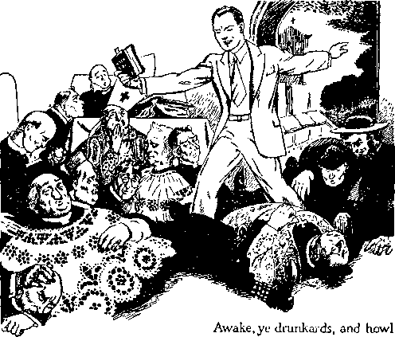and now, when Armageddon is very near, they get a stronger jolt. The political spellbinders, who have made a studied effort to deceive the people, and have done so; the religion mongers, who have hypocritically claimed to represent God and his King, but who have represented the Devil and have led the people into the Devil’s snare; and the money-changers, who have used both politics and religion to accomplish their ultraselfish deeds, have all drunk deep the wine of Babylon, fermented for them by Satan, and have all become drunk, and they have fallen into a stupor, forgetting God, and have utterly ignored their obligation to their fellow creatures. Being ultraselfish, and their drinking having intensified their selfishness, they look only to self-interest, and never seek to do good to their fellow creatures, and always dishonor the name of Almighty God.
The three elements named constitute the official elements of the inhabitants of the earth, and are used by Satan to control the people of the earth. They imbibe Satan’s false and wicked policies and carry them out. They drink much from Satan’s wine and receive the effervescent effect from it and become reckless and wanton, and live in selfish pleasure and self-gratification. Satan leads them into his trap by means of religion, and they have been easily led after having imbibed the cup which Satan has prepared for them. Concerning this Jehovah by another of his prophets says: “But they also have erred through wine, and through strong drink are out of the way; the priest and the prophet have erred through strong drink, they are swallowed up of wine, they are out of the way through strong drink; they err in vision, they stumble in judgment. For all tables are full of vomit and filthiness, so that there is no place clean.” (Isaiah 28:7,8) And thus God depicts the miserable condition of “Christendom”, which claims to represent the Almighty on earth. The day of reckoning comes, and the Lord, by his inspired servant, says to that crowd: “Go to now, ye rich men, weep and howl for your miseries that shall come upon you. Your riches are corrupted, and your garments are moth-eaten. Your gold and silver is cankered; and the rust of them shall be a witness against you, and shall eat your flesh as it were fire. Ye have heaped treasure together for the last days. Behold, the hire of the labourers who have reaped down your fields, which is of you kept back by fraud, crieth; and the cries of them which have reaped are entered into the ears of the Lord of Sabaoth. Ye have lived in pleasure on the earth, and been wanton; ye have nourished your hearts, as in a day of slaughter.”—James 5:1-5.
In all of the drunken revelry and debauchery amongst the nations of earth today religion takes the lead. Because the leaders of religion have hypocritically claimed to be the servants of God and have, contrary to God’s Word, mixed with and become a part of Satan’s world, the religious element of the state organization is likened unto an adulterous woman. Outwardly they may be entirely chaste, so far as the flesh is concerned, and uttering soft and kind words, while inwardly they are having illicit relationship with the admitted elements of Satan’s organization, which is called the “present evil world”. Therefore, says the Word of God concerning them: ‘Te adulterers and adulteresses, know ye not that the friendship of the world is enmity with God? whosoever therefore will be a friend of the world, is the enemy of God.”—James 4; 4.
The Lord uses strong and emphatic language to make known the despicable condition of the religious systems, likening the same unto a blear-eyed harlot. God does not mince words, but he makes them so emphatic that no one has an excuse for not understanding them, and when these words are repeated in the presence or hearing of religionists they go stark mad and desire to destroy the ones who bring the message to their attention. Then the Lord addresses himself to those who hear and obey his voice, and says: “Come hither; I will shew unto thee the judgment of the great whore that sitteth upon many waters [peoples]: with whom the kings of the earth have committed fornication, and the inhabitants of the earth have been made drunk with the wine of her fornication.” “And upon her forehead was a name written, MYSTERY, BABYLON THE GREAT, THE MOTHER OF HARLOTS AND ABOMINATIONS OF THE EARTH.”—Revelation 17:1, 2, 5.
Note this according to the Scriptures: that the three elements above mentioned (Joel 1:2,5) that dominate the earth are drunken “because of the new wine”. New wine intoxicates quickly, and the Devil saw to it that plenty of new wine from his vineyard made from the vine of the earth was fermented and brought forth for “Christendom” since 1918, when he was cast out of heaven and down to the earth. (Revelation 12:1-12) New wine is seductive and causes the creature to glorify himself and to reproach Jehovah God. Satan’s “new wine” first appeared under the guise of the “League of Nations”, which is a substitute for God’s kingdom and is hailed by the religionists as such. It is announced as the means for ruling and establishing the earth. The ruling element once made drunken on this “wine” were easily led further into the snare of the Devil by giving the greatest importance to the state and magnifying the state or worldly government above Jehovah God. The drinkers, well tanked up on the Devil’s wine, then have united on what is known as the “totalitarian government”, or rule by arbitrary dictators.
Furthering his deceptive schemes to overreach the people where democracies are supposed to exist, the Devil brings forth other idolatrous schemes setting the state above God, and brings into operation compulsory flag-saluting, oaths of allegiance to be taken by those who are native citizens of the state, bestowing honor upon men, and particularly magnifying politics and religion and religious leaders. With all of the disturbance and turmoil in the earth the political leaders loudly proclaim: “We must have more religion as a cure for the ills of the nations of the earth.” Not that we must have a return to God and his kingdom, but religion is what they insist upon, which is wholly an invention of the Devil. Cruelly and subtly the totalitarian or dictator schemes move forward, and now the dictators have become bold and arrogant and have formed a bloc of nations, including Germany, Italy, Japan and other states, and on top of which bloc or combine the so-called “spiritual” Roman Catholic Hierarchy sits in great state and struts her stuff, administering supposed doses of soothing remedy in a studied effort to make Satan’s rule or wine of this world appear a sweet wine.
This is only a meager description of the present-day condition, and it is well known, by all who think, that the conditions are far worse than here described. The world today is in such a condition that human words cannot properly describe the same. In the land called “Christendom” God’s holy name is defamed and his kingdom opposed, and the three ruling elements above mentioned have brought themselves into their present condition by an overindulgence of Satan’s new wine.
Following the World War, and after the religious leaders walked straightway into the political camp, the three elements aforementioned began to function together more completely and at that time there was much hilarity amongst them. The religionists then regarded that as the time ripe for them to join up with their allies, the political and commercial giants, and rule the earth in the place and stead of God’s kingdom under Christ Jesus. They became noisy and loud, and their merriment was due to the exhilaration of the new wine of Babylon produced by Satan for them. For centuries religionists have endeavored, as they have frequently stated, to bring the world into the church, but in modern times the religious organization called “the Christian religion” and “church” have walked right into the political, worldly camp, and have all gotten beastly drunk on the new wine of the “vine of the earth”. Their boisterous hilarity was of short duration. And why? The Lord, by his prophet, answers the question: “For it is cut off from [their] mouth.” Instead of hilarity they begin to howl, as God has stated in this prophecy.
What interrupted the felicitations of the would-be rulers of the earth? The answer is, Jehovah’s “strange work”. But how? Jehovah has sent forth his people, whom he has taken out of the nations as a people for his name, and these at Jehovah’s command proclaim the name of Jehovah and his King and kingdom. That message of truth makes known the name and Word of Jehovah God, exposes the aforementioned combine of religionists and their religion as a delusion and a scheme of the demons to deceive and destroy the peoples of the earth. The heavenly kingdom message shows that the religious combine, instead of having God’s approval, constitutes an abomination in his sight, and therefore Jehovah God sounds the doom of religion and religious rulers and discloses that such shall be completely wiped out at Armageddon. Following the World War Jehovah God provided and caused his servants to use the radio, sound machines, the printing press, and other means, to carry his message amongst the people and herald his name and that of his King and kingdom to the people, and this has greatly annoyed the drinkers and interrupts their felicitations. Therefore their joy is cut off, as the Lord says, from their mouths, by the plagues which Jehovah sends upon them, and it is Jehovah’s antitypical locusts that carry the plague message. Having rejected Christ, the King of the world, the religionists and allies have no access to the joy of the Lord, and therefore they do not ‘drink the fruit of the vine new with Christ Jesus in the kingdom’. Only his faithful servants do that. (Matthew 26:29) Thus those who love the Lord, his appearing and his kingdom can partake of the Lord’s wine new with real joy with Christ Jesus, who has gathered them into the temple.
The Lord now speaks through his prophet, to wit: “For a nation is come up upon my land,
strong, and without number, whose teeth are the teeth of a lion, and he hath the cheek teeth of a great lion.” (Joel 1: 6) The nation described in this text as a “nation . . . come up” is God’s holy nation, or people for his name taken out of the world for his name’s sake (1 Peter 2: 9,10; Acts 15:14), and such nation is represented on earth by the remnant of God’s anointed people. Associated with the remnant is a company without number, made up of those who are of good will toward God and who constitute the Lord’s “other sheep” and whose hearts are right, and they join with God’s holy nation, and they all work together in harmony. The rendering of “nation” (Joel 1: 6) according to Strong’s Concordance is: “Figuratively, in the sense of a massing; a flight (as of locusts).” Note that in Joel 1:4 God sends against “Christendom” the locusts to devour and devastate the products of the land. The locusts work together, just as God's holy nation moves forward in a harmonious action. They have no earthly king, but are led by the Lord, the invisible King: “The locusts have no [earthly] king, yet go they forth all of them by bands”; (margin) “gathered together.” —Proverbs 30: 27.
The “nation” here symbolized by locusts “come up upon my land”, that is, upon unfaithful Judah in the miniature fulfillment, and now, in the complete fulfillment, upon “Christendom”, which nations claim to be the antitypical Judah, or those who praise and serve God, but do not and hence are hypocrites. The religionists claim that “Christendom” is the land of God. They practice what they call “the Christian religion”, but which is in fact a defamation of God’s name. It is that “land” which Jehovah causes his witnesses, pictured by locusts, to invade with the message of wrath against hypocrisy, and by proclaiming God’s message of truth the hypocrites are stung and their pastures are devoured.
It is important to here note that the “nation” that comes upon the land to devour does not engage in human slaughter or physical violence to any creatures or animals. That nation, likened unto locusts, does not resort to the use of the sword or any other instrument of violence. The damage is done, as stated in the prophecy, to the vegetation that grows upon the land and upon which the people feed. The prophecy in its miniature fulfillment in Joel’s day inflicted great harm upon the Israelites, and this was by a mass of living, moving creatures that came from outside of Palestine and therefore foreign to that land. Even so in like manner in the real fulfillment today upon “Christendom”, a swarm of moving, living creatures comes upon “Christendom”, does not engage in physical violence, but this army does devour the food or “spiritual” fodder which “Christendom” has prepared and invited the people to eat and upon which the people have tried to feed and have starved. This is proof conclusive that it is the message of God’s Word, proclaimed in the hearing of the people, including the ruling element, that devours that which “Christendom” produces in the way of so-called “spiritual” food. Jehovah’s witnesses and companions, who carry the message, are not engaged in a work of hate, any more than it can be said that the locusts ate up the vegetation of the fields because of hate. Jehovah’s witnesses proclaim the message of truth because God has commanded that they must do so. Therefore the same is an expression of God’s wrath against hypocrisy by which the people are deceived and God’s name defamed.
Further describing the Lord’s invading army, the record (Joel 1:6) is, the nation is "‘strong [bold (Rotherham)'], and without number”. They are strong and bold because they are sent forth in the strength and power of the Lord and are backed up by everlasting and unlimited power. (2 Chronicles 16:9; Deuteronomy 33:27) They are “without number”, it being true of them as it was said of the seed of Abraham. (Genesis 15: 5) The number, as compared to the mass of humanity, is small; yet by their zeal and their organized, harmonious action Jehovah’s witnesses and companions are likened today by “Christendom” to a host “without number”. “Whose teeth are the teeth of a lion”; because they are like their Head and Lord, Christ Jesus, who is “the Lion of the tribe of Juda” and whom the remnant follow in obedience to his command. “And he [that is, Christ Jesus, the great Lion] hath the cheek [(If.F.) jaw] teeth of a great lion.” Christ Jesus knows no defeat, and he tears to pieces all hypocrisy that brings reproach upon the name of Jehovah, and his true followers have a part in this work.
The religious combine now in the saddle as a totalitarian, arbitrary rule moves forward. Even in the land called “democracy” hypocrisy is practiced among many of the ruling elements who speak loud against dictators, while at the same time forging forward with dictatorial methods to regiment and control the people and take away all their liberties. The clergy and other religious leaders advocate and aid in the enactment of laws compelling the saluting of flags and laws which place the state above Almighty God and his King. Never in the history of man has there been so much hypocrisy practiced as now, and in the practice of hypocrisy religion takes the lead and the political spellbinders howl, “We must have more religion.” Religious bodies make great pretense of advocating the liberties of the people, particularly freedom of speech, freedom of press, and freedom of worship, but at the same time they are active in making laws that take away from the people all such liberties. Exactly as God foretold by his prophet, they ‘frame mischief by law’ and condemn those who love and serve righteousness. (Psalm 94:20,21) The clergy today appear before legislative bodies and advocate the enactment of such laws depriving the people of the liberty of speech and worship. The religious leaders and their allies attempt the destruction of those who serve God, even as Jehovah foretold that such hypocrites with their mouth destroy their neighbors; and the hypocrites do so because God’s message exposes them to the view of all honest people. For the comfort and hope of his people now on the earth Jehovah long ago foretold his present-day means of carrying on his “strange work” and what part his faithful people now on earth might have in that work.
CHAPTER V
JEHOVAH tells of a coming famine among the people for the hearing of the truth. “Behold, the days come, saith the Lord God, that I will send a famine in the land; not a famine of bread, nor a thirst for water, but of hearing the words of the Lord.” (Amos 8:11) This prophecy is now fulfilled upon “Christendom”.
The provender which the religious leaders have dished up and handed out to the people is without any food value whatsoever, and, instead of ministering life, peace and happiness to the people, that provender ministers unto them grief, spiritual sickness and death. There is an abundance of truth in God’s organization, and this declared by Jehovah’s witnesses is a marked contrast to the famine conditions that exist amongst the religionists. Seeing the result upon their pastures by reason of the proclamation of the truth, and that that result is the burning up of their pastures, the religionists howl and attempt to destroy the faithful men and women who, as God’s servants and under God’s command, bring to the attention of the people the truth and point them to the real, life-giving and life-sustaining food which the Lord has provided for those that love him.
God’s chosen and holy nation, selected and equipped by the Lord to make known his name, 132 and now used for that purpose, appears upon the scene at his command. They come without any desire or reason to use carnal weapons against anyone. They do not use carnal weapons, but that nation does work depredation and destruction upon the hypocritical religion and religious systems, and concerning this God’s prophet says: “He hath laid my vine waste, and barked my fig tree; he hath made it clean bare, and cast it away; the branches thereof are made white.”—Joel 1:7.
The land of “Christendom”, speaking by its religious leaders, claims to be God’s “vine”, that is, the visible expression of his kingdom on earth, and even the head of the religious system claims to be “the vicegerent of Christ”. The claim is entirely false and hypocritical to the last degree, but God permits them to make such claim and to go the full limit and then foretells the doom of religion and of religious practices. God sends forth his servants, the anointed remnant and their companions, his “other sheep”, to deliver his message against religion. That message discloses that religion is a fraud and a snare and a racket and is a fraudulent representation of Christ. The truth declared shows that Christianity is true and that Christians are the ones who faithfully serve Jehovah God and Christ Jesus his King. Religion is shown as a waste and fruitless toward God, because it is against his King and kingdom. The truth discloses that “Christendom” has no cause for joy but is empty and void, having none of the “joy of the Lord” and no part in the kingdom of God, which shall vindicate his holy name. “Christendom,” which practices the so-called “Christian religion”, brings no joy or good cheer to God or man. (Judges 9:13) That is a great calamity to those “drinkers of wine” of Babylon and who become “drunkards” upon such wine and who are commanded by the Lord to wake up and to view their deplorable condition. (Joel 1:5) Hearing that alarm at the mouth of the Lord repeated by his faithful witnesses on earth makes the religionists exceedingly mad, and they froth at the mouth and threaten all manner of violence against Jehovah’s witnesses and commit violence upon Jehovah’s servants.
As Jerusalem was the original planting of the Lord and became unfaithful, so “Christendom” for centuries has claimed to be the “vine” of God, and, it being in an implied covenant to perform accordingly, God speaks of the same now as “my vine”, “my fig tree.”
Christ Jesus and the members of his body are “trees of righteousness, the planting of Jehovah”, that bring glory to Jehovah’s name. (Isaiah 61: 3, AJl.V.) “Christendom” loudly claims to be that tree of God’s planting, but the claim is false and, instead of bringing joy to the Lord, they bring great reproach to his name. “Christendom” has long claimed to be God’s “fig tree”, but she has brought forth no fruit whatsoever to the glory of the Lord. The Lord’s message now sent forth by him through his faithful witnesses discloses that “Christendom” is totally barren of fruit and worthless because she has abandoned God and his kingdom and has sought promotion from Satan and hence is now a tree stripped even of its bark, dried up and dead. Therefore says the Lord: “He hath . . . barked my fig tree [(according to Rotherham) hath turned . . . my figtree to splinters].” “Christendom,” being one of the trees of Satan, has sought to have the name of Christ attached to her, and hence, as stated in the parable, has said to God’s true fig tree: “Come . . . and reign over us,” but let us pursue our own selfish course. The scripture of the parable gives the answer: “But the fig tree [the true one] said unto them [Satan’s trees], Should I forsake my sweetness, and my good fruit, and go to be promoted over the trees [of the Devil’s organization] ?” (Judges 9:11) God’s true fig tree avoids the Devil’s organization, knowing that it is a deadly thing.
The “fig tree” is a symbol of God’s “holy nation” or kingdom. Jehovah selected Israel as his typical people, picturing his kingdom, and before that people were set the prospects of the kingdom; and when Christ Jesus came to that nation he pronounced his Father’s curse upon it because that nation had been unfaithful and had brought forth no fruit. (Matthew 21:19,20) Christ Josus, with his apostles, set up the Christian organization, which organization is God’s and must be wholly obedient to God’s commandments. Soon thereafter ambitious men associated themselves with God’s organization, and those selfish and ambitious men soon substituted religion and religious practices for the true service of God. This they did, of course, because they were overreached by Satan the Devil. To be sure, God knew this from the beginning and for that reason foretold it by his holy prophets.
He foretold that “Christendom” would fail and that the kingdom prospects would be entirely removed from her.
Now God sends forth his faithful remnant who have been gathered by Christ Jesus to the temple and these faithful witnesses are commanded to deliver God’s message, and the truth declared by them exposes “Christendom” as a false fig tree; and concerning it the prophet Joel says: “He hath made it clean bare.” This shows, together with the undisputed facts, that the kingdom has been taken away from unfaithful "Christendom” and given to the nation (God’s holy nation) bringing forth the fruits thereof, even as the Lord foretold. (Matthew 21:43) This strips “Christendom” clean bare of the kingdom fruit in the eyes of all his people of good will. In the parable the Lord foretold this result: “He spake also this parable: A certain [one, Jehovah] had a fig tree planted in his vineyard ; and he came and sought fruit thereon, and found none. Then said he unto the dresser [Christ Jesus] of his vineyard, Behold, these three years I come seeking fruit on this fig tree [the Jewish nation], and find none: cut it down; why cumbereth it the ground ? And he answering said unto him, Lord, let it alone this year also, till I shall dig about it, and dung it: and if it bear fruit, well; and if not, then after that thou shalt cut it down.”—Luke 13: 6-9.
As Jehovah permitted Israel to go on for eighteen centuries, so he has suffered “Christendom” to continue falsely claiming to represent Jehovah until the coming of Christ Jesus to his kingdom, particularly until his coming to the temple in 1918, at which time every hope and prospect has been taken away from “Christendom”, pictured by the barking and cutting down of that fig tree. The result is that “Christendom” is now a castaway and God has “cast it down”. Jehovah sends his witnesses declaring his truth, thus casting down the religion which is called “the Christian religion”, and shows that the same is an abomination to him and that he has completely disowned “Christendom” and that it is entirely cast away from him. The branches of that unfaithful tree are bleached and made like ashes, and “Christendom” is a disreputable and forlorn sight. The publication of the book Enemies, in 1937, brought these facts prominently to the attention of honest people.
The message of God’s truth, which exposes “Christendom” and her so-called “Christian religion”, shows that religion to be a fraud and a snare completely separate and distinct from Christianity and in opposition to Christianity, and hence separates “Christendom” from Christ Jesus, the Bridegroom; and so the Lord says to “Christendom”: “Lament like a virgin girded with sackcloth for the husband [{Rotherham) the owner] of her youth.” (Joel 1: 8) The prospect of becoming the bride of Christ was once set before “Christendom”, and because of unfaithfulness that prospect has been entirely removed and now she is bereft of that prospect entirely and, like a cast-off and disowned virgin, “Christendom” is shown as being in deep grief and anguish. Jehovah tells her to weep and howl, and she does. Jehovah’s witnesses come with God’s message of truth informing “Christendom” that she has lost the one, Christ Jesus, to whom she supposed that she was espoused.
“Christendom,” and particularly the leaders of her religious system, howl and declare that this “strange work” now carried on in the earth is Communistic and seditious, and that Jehovah’s witnesses are Communists and sedition-ists. They call upon their political allies to enforce the laws of the land against Jehovah’s witnesses on the theory that such witnesses are Communists and seditionists. The papa of the Vatican City is exposed by the truth and is shown not to be the vicegerent of Christ, the Bridegroom, and hence the claim made for that high dignitary is false and fraudulent. Hearing the sound of the message delivered by Jehovah’s witnesses from God’s Word the clergy or religious leaders become hysterical and rush about seeking the restraint and destruction of Jehovah’s witnesses. God’s “strange work” hurts them and fills them with great rage, but this is nothing as to how they will feel when Jehovah performs “his act, his strange act”, at Armageddon. Let it be understood that what is here said is not directed against individuals nor prompted by hate, but against a system, the offices of which are filled by men, and it is the religion and religious system that have brought great reproach upon Jehovah’s name, and such fraud he now exposes by his Word of truth.
A calamity has come upon “Christendom”, of which the Lord long ago foretold through his prophet: “The meat offering [(Z?.V.) The meal offering] and the drink offering is cut off from the house of the Lord; the priests, the Lord’s ministers, mourn.” (Joel 1:9) “Christendom’s” grain fields and vineyards are smitten so that there is no corn produced to offer to the Lord as the first-fruits or to make a meal offering, nor are there any grapes to make wine to pour it as a drink offering unto the Lord. Jehovah’s locust plague has consumed the crops of “Christendom” so that there is no fruit or drink, and hence their religion cannot be carried on as in the past. There is no real wine of the Lord amongst them to make glad the heart, and no bread from heaven to strengthen them. (Psalm 104:15) Because of this calamity the priests of “Christendom” mourn and howl.
As the prophecy was fulfilled in miniature upon Jerusalem, so now it is fulfilled in completeness upon “Christendom”. God, foreknowing what would come upon “Christendom”, used his typical people to foretell the calamity that is now upon the religious practices. The Lord’s message today makes known that he has cut off all such religious offerings through his true sanctuary, and that includes the “elective elder” crowd. The sanctuary has been cleansed, and now the true worshipers of God must “offer unto the Lord an offering in righteousness”. (Malachi 3:1-3) The Lord does not ask for nor will he receive religious offerings, because the same are a reproach to his name. It means that such offerings God regards as an abomination, and the one who offers them is described in these words: “He that killeth an ox is as if he slew a man; he that sacrificeth a lamb, as if he cut off a dog’s neck; he that offereth an oblation, as if he offered swine’s blood; he that burneth incense, as if he blessed an idol. Yea, they have chosen their own ways, and their soul delighteth in their abominations.”—Isaiah 66: 3.
The sleepers who have had too much of Babylon’s wine from “the vine of the earth” wake up and find themselves out of jobs and their pastures well stripped and burned. They have been hoodwinking the people for a long season, but now the message of Jehovah exposes their religious racket and the people of good will toward God forsake the religious systems and flee to Christ for refuge. The clergy have thought more of a job than of the Lord, and now they mourn because they are in a dreadful dilemma. The Lord by his prophet (Joel 2:17) advised the preachers and the clergy and other religionists what to do, but they refuse to give heed to such advice. Jehovah’s witnesses make known by proclaiming the truth of God’s Word that the Hierarchy clergy are not the servants of Jehovah ; and that message of truth makes the clergy class very mad, and they make a loud howl, because they know their racket is found out and that they have come far short of God’s requirements, and have failed. Likewise the “evil servant” class resent the publication of the Lord’s judgment against them, and are cut asunder from God’s organization, and their portion is appointed with the other hypocrites and they howl and gnash their teeth.—Matthew 24:48-51.
Jehovah’s “strange work”, which has now progressed for several years, has uncovered “the refuge of lies” (Isaiah 28:15-17) and the practice of hypocrisy; and the wide devastation that has come upon “Christendom” is further described by the prophet in these words: “The field is wasted, the land mourneth; for the corn is wasted; the new wine is dried up, the oil lan-gui sheth.”—Joel 1 :10.
Jehovah’s “strange work” makes the religious fields a miserable sight like a field the vegetation of which has been destroyed by pests. The land shows no sign of fertility, and the beauty of growing crops and fruits has entirely disappeared. Such is the present state of “Christendom”, in which there is a famine for the hearing of the Word of God. “Christendom” now becomes a by-word and a stench, and the Lord describes it in this language: “The land shall be utterly emptied, and utterly spoiled: for the Lord hath spoken this word. The earth mourneth, and fadeth away; the world languisheth, and fadeth away; the haughty people of the earth do languish. The earth also is defiled under the inhabitants thereof, because they have transgressed the laws, changed the ordinance, broken the everlastingcovenant.’-Tsaiah24:3-5.
The clergy and religious leaders of “Christendom”, instead of giving heed to the counsel of the Lord, grow indignant, and they cry out to the people: 'What we need is more religion.” The Lord laughs at them in derision, and the honest people know that religion is a snare and fake and a racket. Hence the true ones are earnestly seeking Jehovah God and his King, Christ Jesus, and rendering service unto the Most High. In “Christendom” three elements control, namely, religion, politics and commercial traffickers, and these have been fully linked up together and been trying to hold each other up, and the politicians, with the clergy, shout: “Give us more religion.” Jehovah describes the situation in these words: “For the land is full of adulterers; for because of swearing [cursing] the land mourneth; the pleasant places of the wilderness are dried up, and their course [violence] is evil, and their force is not right. For both prophet and priest are profane; yea, in my house have I found their wickedness, saith the Lord. Wherefore their way shall be unto them as slippery ways in the darkness; they shall be driven on, and fall therein; for I will bring evil upon them, even the year of their visitation, saith the Lord.”-—Jeremiah 23:10-12, margin.
In “Christendom” there is no substantial, basic food available: “For the corn is wasted: the new wine is dried up, the [olive] oil lan-guisheth.” Such is the present-day condition of “Christendom”. She is without spiritual nourishment, and hence the religionists look to the politicians and the money-changers to hold “Christendom’s” organization together. There is no more “joy of the Lord” amongst the religionists, because now they are against Jehovah God and against his King and kingdom and have gone entirely away to Satan and his world and have become a part of it. The Lord is revealing these truths today for the special aid and benefit of the people of good will, the Jonadabs, and, this information coming to them, they discern the miserable situation of religion and religionists, and they are fleeing to God’s kingdom that they might there find protection and refuge before and during Armageddon. Many sincere people have been under the influence and control of religious systems of "Christendom”, and now those of good will are quickly separating themselves from the unrighteous and unholy thing.
The message of Jehovah’s kingdom proclaimed within the hearing of the religionists is a torment to them, but they do not give heed thereto and seek the way of reformation and forgiveness; and so the Lord says to “Christendom”, and particularly to the religious leaders, who have planted the religious seed: “Be ye ashamed, 0 ye husbandmen; howl, O ye vinedressers, for the wheat and for the barley; because the harvest of the field is perished.”— Joel 1:11.
The clergy, instead of sowing the seed of God’s kingdom and pointing to it as the only hope of the world, have planted the seed of the wicked one Satan, and their present day of calamity is now upon them and is due to their unfaithfulness to God. Not willing to be honest with themselves and openly confess their wrongful course, they go on hypocritically scattering religious seed, indulging in politics and all other worldly schemes, and that without shame. God’s published message has brought to the attention of “Christendom” the miserable condition in which she finds herself, but it does not cause them to repent. The clergy angrily denounce Jehovah’s witnesses, who at God’s command bring this message within their reach, and thus they fight against God and against his kingdom. The clergy claim to be the "vinedressers” and "husbandmen” of the Lord on the earth, but such is only a pretense. They serve God with their mouths, but, as Jesus said of them, their hearts are removed far from him. (Matthew 15: 6-9) They drink deep of the wine of “the vine of the earth” and openly commit fornication with the Devil’s organization. (Revelation 14:18-20; 17:1,2; James 4:4) “Christendom” and her religious leaders, in particular, spurn God’s kingdom, continue to indulge in religious practices, and hence have no “feast of weeks” or of harvest. The Lord does not show any more favor to such practitioners of hypocrisy. The time is here to feed the “great multitude”, the Lord’s “other sheep”, and, instead of having some part in doing that work to the glory of the Lord, the religionists put forth their strongest endeavors to deprive the “great multitude” of the opportunity of learning of God and of his King and kingdom. Thus, as did the Pharisees, they refuse to enter into or support the kingdom, and do all they can to keep others from receiving the blessings thereof.-Matthew 23:13.
Religion has been the chief means of bringing reproach to the name of Jehovah; and since “Christendom” has become entirely religious and anti-Christian and hence against the kingdom of God under Christ, Jehovah has taken away from her all favors; and concerning which he foretold through his prophet the following: “The vine is dried up, and the fig tree languished!; the pomegranate tree, the palm tree also, and the apple tree, even all the trees of the field, are withered; because joy is withered away from the sons of men.” (Joel 1:12) God has made it hot for religionists by “turning on the heat” since the coming of Christ Jesus to the temple. This is the effect of the expression of his indignation against hypocrisy. The scorching, dry season is upon “Christendom”, and her days of grief are here. God foretold the presentday conditions also through his prophet in the following words: “And now, go to; I will tell you what I will do to my vineyard: I will take away the hedge thereof, and it shall be eaten up; and break down the wall thereof, and it shall be trodden down; and I will lay it waste; it shall not be pruned nor digged; but there shall come up briers and thorns; I will also command the clouds that they rain no rain upon it. For the vineyard of the Lord of hosts is the house of Israel, and the men of Judah his pleasant plant; and he looked for judgment, but behold oppression; for righteousness, but behold a cry.”— Isaiah 5:5-7.
By the words of his prophet aforesaid the Lord specifically described the devastation of “Christendom” and of all the religious systems. Thus it is seen, as Jesus foretold, the kingdom interests are completely removed from “Christendom” and God has turned on the heat and dried her up. (Matthew 21:19,20) Furthermore, says the prophet, “even all the trees of the field are withered.” All are barren and have no sign of the kingdom of God. Why? “Because joy is withered away from the sons of men.” There is in “Christendom” no joy of the Lord, because none of the religionists and religious leaders of “Christendom” rejoice in the coming of the kingdom of God under Christ. They have no interest in the vindication of Jehovah’s name, but, on the contrary, they cast in their lot with Satan, the god of this world of wickedness. (2 Corinthians 4:4; James 4:4) Since the coming of Christ Jesus to the temple, in 1918, the joy of the true lovers of God and his King and kingdom continues to increase, but the hatred and bitter opposition to that kingdom and its supporters increase with the religionists. Both the ultrareligionists and the “evil servant” class are totally without joy of the Lord. Therefore with them, as with all who hold to Satan’s organization, it is a time of great woe. (Revelation 12:12) By another of his prophets Jehovah describes “Christendom’s” miserable state in these words: “There is a crying for wine in the streets; all joy is darkened, the mirth of the land is gone.” —Isaiah 24:11.
While the woes upon the world increase and the religionists, particularly the clergy, continue their ever-increasing bitter persecution of Jehovah’s witnesses, the faithful remnant and companions rejoice, and so these words are put in the mouth of such by the Lord and they sing: “Although the fig tree shall not blossom, neither shall fruit be in the vines; the labour of the olive shall fail, and the fields shall yield no meat; the flock shall be cut off from the fold, and there shall be no herd in the stalls; yet I will rejoice in the Lord, I will joy in the God of my salvation.”—Habakkuk 3:17,18. '
HOWL
As is well known by all, and admitted by themselves, the leaders in the practice of religion are those who compose the Roman Catholic Hierarchy, and the other clergy; and these, together with the “evil servant” class, forming ‘the man of sin, the son of perdition’ crowd, although professing no alliance with each other, work together. Jehovah having entered final judgment against them and made known that judgment, he tells that crowd to listen to what he has to say to them and then howl: ‘‘Gird yourselves [with sackcloth (2?.7.)], and lament, ye priests; howl, ye ministers of the altar; come, lie all night in sackcloth, ye ministers of my God: for the meat offering and the drink offering is withholden from the house of your God.’’—Joel 1: .13.
In the miniature fulfillment of this prophecy the priestly company served at the altar, but the non-priestly Levites were not permitted in the inner court where the altar was situated. Now in the complete fulfillment of the prophecy upon “Christendom” the priestly class, the clergy and the “evil servant” class, have assumed to serve at God’s altar, all of such claiming to be the priests and representatives of God on earth. Such priests see and hear the spread of the proclamation of Jehovah’s judgment against religion, and particularly against the Roman Catholic Hierarchy, which is the highest expression of religion. These priests grow frantic and tear their hair and pound their breast with vexation and rage at the devastating effect of the message. They see their many parishioners slipping away from them and their pastures denuded.
Foreknowing this, God in derision says to them: ‘Howl, ye ministers of the altar, ye have assumed to be the ministers of God and still claim to be such; therefore come lie all night in sackcloth and ashes, ye ministers of my God, which ye claim to be.’ It is truly the nighttime, because now darkness covers the earth, particularly concerning religion. The facts now well known show that the very thing the prophecy of Joel foretold is now taking place amongst those “ministers” who have been feeding upon the things offered at the altar, and so these privileges are now taken away from them. And why should they not howl? Their income is being cut down and their pastures dried up or burned up, and they are out of a job and their days are about finished. So God tells them to mourn all night because Armageddon is near.
Jehovah continues to send forth his servants to proclaim the message of truth, and this they do “day and night”, meaning all the time, and that fact intensifies the anger of the clergy and they continue to howl. Being wrapped in sack-
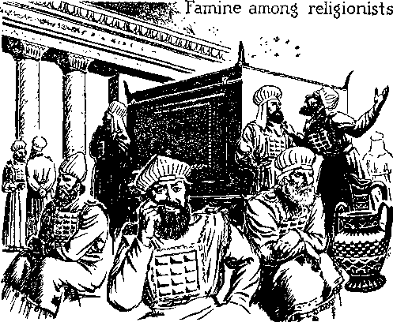cloth does not permit them to have a very peaceful sleep. Their official garments serve no good purpose to alleviate their miseries. Their newspapers now being published throughout the earth rant and fume, and indulge in all manner of lies against Jehovah’s witnesses because of the proclamation of God’s truth, and thus they by spite and ill will advertise God’s messengers and his message of the kingdom. The Catholic publications have much to say against Jehovah's witnesses, and in doing so their publications arouse the interest among honest subjects, the “Catholic population”, and these honest ones are induced to investigate. Thus they find the truth and flee from the religious organizations, that they may find refuge under Christ. Of course, this brings about further devastating effect upon the Hierarchy, causing the honest seekers who have been amongst the religionists to withhold their patronage and financial support.
The people are getting no spiritual food from the religious leaders, and the honest ones see that there is no further occasion for them to bring any financial support to the religionists to keep them going. The famine is on in “Christendom” for the hearing of the spiritual truth. The religionists have no spiritual food but, they being constantly angered, their howl constantly increases. Frantically the religious leaders demand of their political allies that something be done to stop those “pestiferous” Jehovah’s witnesses. As a result, in the legislative assemblies laws are proposed which, if enacted and enforced, would deprive the sincere Christians of hearing the truth of God’s Word. The effort to enact such laws advertises the miseries of the religionists, and also advertises the truth of God’s Word, so that the truth concerning the kingdom is preached under all circumstances; and this makes the religionists howl more and more with ever-increasing anger.
Who is responsible for this state of famine in the land of “Christendom” ? The religious clergy declare that Jehovah’s witnesses, whom they call “Communists”, are the responsible ones. In this they are very wrong again. The faithful Christians who are proclaiming the message of God’s kingdom are not Communists. They are entirely separate from all political parties or companies, and their devotion and service is to Jehovah God and his kingdom under Christ, and to none other. Who, then, has brought about the famine in “Christendom”? The correct answer is given by God’s prophet in these words, to wit: “Behold, the days come, saith the Lord God, that I will send a famine in the land; not a famine of bread, nor a thirst for water, but of hearing the words of the Lord; and they shall wander from sea to sea, and from the north even to the east; they shall run to and fro to seek the word of the Lord, and shall not find it.”—Amos 8:11,12.
Mark this: that Jehovah says, “I will send a famine in the land.” He makes it clear that he is the one that has brought about this condition of devastation upon “Christendom”, and this because of the unfaithfulness of those who have assumed to represent him but who have shown themselves to be out-and-out hypocrites, and he declares that “the hypocrite’s hope shall perish”. (Job 8:13) The clergy have claimed to be the chief ones on the earth of God’s organization. Having turned entirely unto religion, they are sinners, and to them Jehovah says: “The sinners in Zion are afraid; fearfulness hath surprised the hypocrites; Who among us shall dwell with the devouring fire? who among us shall dwell with everlasting burnings?” (Isaiah 33:14) Those religionists now hear the sounding of the doom of religion, and they are frightened and continue to howl.
There is a possible remedy that might be applied by the individuals of “Christendom”, but the religious leaders make no effort to avail themselves of such remedy. God knows that they will not avail themselves of the remedy, but he tells them about it, that they may have no excuse to say that they did not know. Therefore the Lord says to the religionists, who claim to represent him: “Sanctify ye a fast, call a solemn assembly; gather the elders, and all the inhabitants of the land, into the house of the Lord your God, and cry unto the Lord.”—Joel 1:14.
If the clergy should obey God’s command and indulge in the fast commanded, of necessity they must cease their religious practices and observances in which they have been indulging in order to appear respectable to the world. The real fasting which God has commanded would bring upon the clergy the reproach of Satan and his agents. The Roman Catholic Hierarchy never indulge in the fast commanded by the Lord, because they make up the chief ones of Satan’s representatives on the earth. They do indulge in an outward show of fasts, and they do lament and howl for the effect they hope the same will have upon the public, but such is not the fast which God calls upon them to sanctify. The fast in which the religionists indulge is hypocritical, because they make an outward show hoping to influence the people; and concerning such the Lord says: “Behold, ye fast for strife and debate, and to smite with the fist of wickedness; ye shall not fast as ye do this day, to make your voice to be heard on high. Is it such a fast that I have chosen? a day for a man to afflict his soul? is it to bow down his head as a bulrush, and to spread sackcloth and ashes under him? wilt thou call this a fast, and an acceptable day to the Lord?”—Isaiah 58: 4, 5.
The religious leaders in the days when Jesus was first on earth indulged in such hypocritical fasts, and, addressing his disciples, Jesus said: “Moreover, when ye fast, be not, as the hypocrites, of a sad countenance; for they disfigure their faces, that they may appear unto men to fast. Verily I say unto you, They have their reward. But thou, when thou fastest, anoint thine head, and wash thy face; that thou appear not unto men to fast, but unto thy Father which is in secret; and thy Father, which seeth in secret, shall reward thee openly.”—Matthew 6:16-18.
The Lord is telling the religionists to fast or refrain from the food they have been using to hoodwink the people, namely, religious doctrines and practices. They have had nothing to feed upon but religious food, and such food they have served to the supporters of religion, which is of no value; and God's command is that their ministers and the people refrain from such religious food. Their fast should be similar to that in which the people of good will at Nineveh indulged upon hearing of God’s judgment. (Jonah 3:5) No one is commanded to fast from the truth. It is the truth of God’s Word that he brings to the people and invites them to feed upon it and live. Religionists do not have the truth, but they have substituted for truth the doctrines of men. Now the Lord tells them to cease from such and turn to the truth and feed upon what God has provided. Those who are amongst the religionists who would find relief must obey this command and fast from what the religious leaders have been serving them. To obey that command of Jehovah would put such in the class with Christ Jesus, and upon them would fall reproach like that which fell upon the Lord. (Romans 15: 3) The clergy steer clear of all things of that kind. The honest ones amongst the religionists are anxious to obey the Lord, and they do so, and they find relief, protection and blessings under the Lord’s organization.
Further instructing them, Jehovah says: “Call a solemn assembly [a day of restraint {margin)].” On the day following the end of the “feast of tabernacles” the faithful Israelites did call a solemn assembly. (Numbers 29: 35) It was then a time of restraint from doing servile work, serving creatures, or indulging in activities for self-gain. Instead of seeking and serving selfish things, they must assemble and seek God at his temple. Today the kingdom interests must be uppermost in the mind and heart of those who attend such solemn assemblies, otherwise called the “day of restraint”. “Christendom” would not call such assembly, the “day of restraint”, because to do so they would have to abandon all their religious ceremonies and political affiliations and activities, all of which things are selfish and used for self-gain. It would mean that all “Catholic Action” would have to cease and be completely abandoned; and the Hierarchy would never agree to that.
Further admonishing the religionists, Jehovah says to them: “Gather the elders [the old men (R.F.); that is to say, the dreamers mentioned in Joel 2: 28].” They too need to engage in such a fast or day of restraint. They must cease their religious dreams and speculations and guesses and turn wholly to the truth of God’s kingdom. They have much responsibility as examples to the younger ones. This applies to the “elective elder” class of the present day. Let all who continue to hold to religious practices cease from the same, turn away therefrom and give full attention to the service and the interest of the kingdom of God. This admonition includes “all the inhabitants of the land”, that is, all who have made a covenant to do the will of God. Religionists, if they would heed the admonition, must cease from making the professed house of God a “den” of commercial grafters (Jeremiah 7:11), and must face about and “serve God and his King”.
There is a two-fold purpose in God’s placing upon the religionists the responsibility to call a day of fasting or restraint, to wit: (1) To give warning to all who indulge in religion, and (2) to disclose the only means of escape from Satan’s organization, which God provides for those who are of good will toward him. There are those amongst the religious leaders and under their influence who sigh and cry because of the abominations done in “Christendom”, and such persons must have an opportunity to hear and learn what is the way of escape and where they may find safety. Therefore God commands that “all the inhabitants” assemble at the house of the Lord and “cry unto the Lord”. (Joel 1:14) By so doing they acknowledge their guilt in having followed and practiced religion and its traditions rather than hearing and obeying the Word of God and worshiping him in spirit and in truth. They must recognize that the judgment now proclaimed is not the judgment of Joel the prophet nor of any man nor of the witnesses of the Lord, but that it is God’s judgment and his expression of condemnation of religious practices. They must call upon the name of the Lord for mercy and express their determination to serve him and keep his commandments to promote the interests of the kingdom. They must seek righteousness and meekness and become obedient. (Zephaniah 2:3) When must this be done? Now, at the present time, before Armageddon begins. It will be too late to cry unto the Lord when Armageddon begins. When the battle of Armageddon is on, “then shall they call upon me, but I will not answer; they shall seek me early, but they shall not find me; for that they hated knowledge, and did not choose the fear of the Lord: they would none of my counsel; they despised all my reproof; therefore shall they eat of the fruit of their own way, and be filled with their own devices.”-Proverbs 1:28-31.
For several centuries Satan has carried on his religious and other operations without interruption; but the end of such time must come, and did come when Jehovah enthroned Christ Jesus and sent him forth to rule while the enemy Satan is still active. (Psalm 110:2) Therefore the Lord by his prophet says: “Alas for the day! for the day of the Lord is at hand, and as a destruction from the Almighty shall it come.” (Joel 1:15) The day of Jehovah began in A.D. 1914. Satan has had his day, and he must now get out. The war in heaven was fought, and Satan was cast down to the earth. (Revelation 12:1-9) Then in 1918 judgment began at the house of God. (1 Peter 4:17) The day of tribulation God then stopped for a season in order that the witness work might be done. This he did •for the benefit of those who loved God and his kingdom and that the Lord’s “other sheep” might be gathered. (Matthew 24: 22) Since that day is the time in which God is doing his “strange work”. This is the time when God causes his adverse judgment against Satan’s organization to be made known, serving warning upon all and disclosing to those of good will the only means of escape from destruction which soon shall follow.
In this day of his “strange work” Jehovah sends his army of “locusts”, which constitutes a plague upon “Christendom”, and the heat is turned on against religion. (Joel 1:4,10,12) This is a warning that the battle of the great day of God Almighty is close by. The wrath of God does not stop with the locust plague and the rainless season of famine in “Christendom”, but reaches a climax at Armageddon. Now is the time of the ‘destroying pests’ upon “Christendom” or religion. Hence the plague is not from men. It is not another religious campaign of men or a propaganda movement such as the atheists, Bolsheviks and Communists, and other godless radicals, carry on. It is from Almighty God, who now sends forth his servants and messengers to declare his name and his purpose, and which he commands must be done immediately preceding the battle of Armageddon.-Exodus 9:16, Leeser.
There is no scarcity of spiritual food in God’s storehouse, but the famine is all on “Christendom”, and that famine is for the hearing of the Word of God and is due to the fact that God has closed the door to “Christendom”. “Is not the meat cut off before our eyes, yea, joy and gladness from the house of our God?” (Joel 1:16) The religious leaders know that God has forsaken them. This text, according to Rotherham, makes it clear and shows the religious leaders as saying: “Is it not before our eyes that food hath been cut off?” There is an abundance of spiritual food being scattered throughout the earth by Jehovah's witnesses, and it comes from God’s storehouse, but “Christendom” has no part in the distribution thereof. None of them are for the vindication of Jehovah’s name, and hence they are against the kingdom. All food from the Lord’s storehouse that is carried to the people is being carried by Jehovah’s witnesses and their companions, the Jonadabs, and all of these together are acting through the Theocratic organization. The religionists of “Christendom” see this fact and desperately attempt to prevent Jehovah’s servants from carrying the spiritual food to the common and hungry people.
In recent months God has clearly revealed to his faithful servants the distinction between the so-called "Christian religion” and Christianity, the truth of and concerning which exposes to plain view the emptiness of the religious systems, showing the people that they can get from religion nothing that is helpful, but only that which is detrimental, and that their only help comes from following and obeying Christ Jesus, hence being real Christians. The book Enemies contains the truth concerning religion and Christianity, and within a short time after it was released the circulation thereof reached more than two million volumes, and the booklet Cure, which contains a succinct statement of the falsity of religion and what is Christianity, within a few months actually had a circulation of more than twelve million amongst the people. This work the Lord fitly illustrates by the plague of the locusts eating up what little had been left in "Christendom”. The “purgatory” racket, which has for a long time been a source of much revenue to the Hierarchy, is now completely exposed as the greatest money-making racket that has ever operated; and this greatly frightens and makes mad the clergy. Their own publications give forth more evidence of this fact.
The “strange work” of Jehovah, which he has done and is doing by his faithful servants, by his army of “locusts”, has taken the joy and gladness from the Roman Catholic Hierarchy, whose god is Satan. Hence they say: “Yea, joy and gladness [are cut off] from the house of our God.” That house which once loudly claimed to be distributing spiritual provender has now become the house of commercial and political robbers. Such well describes Catholic Action, and therefore says a one-time Jesuit clergyman in his book Rome Stoops to Conquer: 'Catholicism now is something that partakes of clannishness and that is constituted in a large part by social and political club affiliation. Catholic Action in practice is the Catholic group fighting their way to control America’; politically and financially, of course. No religious leader believes, and hence none teaches, that Christ Jesus has come to the temple of God, and they therefore have no understanding or appreciation that the kingdom of Christ is here. As it was with the religious Jews, so it is now with “Christendom”, to whom the Lord says: “Your house [of religion] is left unto you desolate.”—Matthew 23:38.
The spiritual crops of “Christendom” have completely failed: “The seed is rotten [(2?.F.) The seeds rot] under their clods, the garners are laid desolate, the barns are broken down; for the corn is withered.” (Joel 1:17) There is a complete absence of any prospect for a new crop. God has now made it clearly to appear that nothing good can spring from religion. The seeds of religion now rot because sown at the instance of the Devil, and his day is done. The people can gain nothing from religion. All the people of good will toward God now realize this fact and flee from the religious systems and seek protection in Christ. The great heat from the truth turned on by the Lord, and the complete
absence of the rain of truth upon “Christendom”, have turned her barns into useless things, and there is no food supply to put in them, and none to take from them, for the people. The religionists do not appreciate the true state of affairs. Those who are honest among them do appreciate the true situation, and they sigh and cry because of the abominations which are done in “Christendom”, and the Lord hears their cry and sends them spiritual food through his faithful servants.—Ezekiel 9:1-10.
The credulous common people have been the beasts of burden for the clergy and other religious leaders, political and commercial, and these now seeing the desolate condition are much perplexed and in distress. “How do the beasts groan! the herds of cattle are perplexed, because they have no pasture; yea, the flocks of sheep are made desolate.” (Joel 1:18) The entire system of religion is doomed and headed for early destruction. The very opposite state or condition exists amongst the people of God, who are described by the Lord in these words: “Jerusalem [those who are of God’s organization and who follow peace and serve God and his King] shall be inhabited as towns without walls [needing no protection] for the multitude of men and cattle therein.”—Zechariah 2:4.
By his prophet Jehovah tells the people what they should do, but the religious leaders refuse to hear. Those who are of good will, and who are getting their eyes opened to the truth, are shown by the prophet as using these words: “0 Lord, to thee will I cry; for the fire hath devoured the pastures of the wilderness, and the flame hath
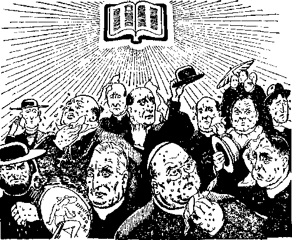Hol day for religionists
burned all the trees of the field.” (Joel 1:19) Instead of the religious clergy leaders’ joining with the common people of good will in this crying unto the Lord, they continue to call down God’s blessing upon the political and commercial schemes of the world and at the same time try to destroy those who do bring God’s message of good cheer to the hungry ones. The man recently elevated to the post of pope of the Hierarchy calls for His blessing upon the United States, and, of course, this is done for political effect. The pope’s blessing has already been bestowed upon the murderer who has destroyed Spain and Abyssinia and wrecked many other people’s homes in different parts of the land.
Continuing to disclose the miserable condition that has been brought about amongst the people of the religious agents of Satan, God, through his prophet, says: “The beasts of the field cry also unto thee; for the rivers of waters are dried up, and the fire hath devoured the pastures of the wilderness.”—Joel 1: 20.
The religious leaders have made life miserable for the common people, who are really the "beasts of burden’, and whom the Hierarchy calls “the children of the church”. Jehovah now makes it clearly to appear that religion is responsible for the famine conditions in “Christendom” for the hearing of the Word of God. Organized religion is the enemy of God, and the destructive foe of the people. Upon the religious systems and religious practice God sends no more rain, that is, no more blessings. Religious systems are marked and branded for destruction, which only waits until the witness work, God’s “strange work”, is finished. The alarm of warning must be sounded now, to the end that none of the religious practitioners may say that they did not hear about the kingdom, and, furthermore, that those amongst the religious systems that are of good will may find a way to flee. This is the work which God long ago foretold, and which is a “strange work” to all who do not have the spirit of the Lord. It is the work of Jehovah, in which he uses the remnant of his people and their companions, and both of these must now give close attention to God’s commandments and strictly obey.
CHAPTER VI
CHAPTER two of the prophecy of Joel opens with an emphatic command given to Joel, who represents the faithful witnesses of Jehovah now on earth: “Blow ye the trumpet in Zion, and sound an alarm in my holy mountain ; let all the inhabitants of the land tremble; for the day of the Lord cometh, for it is nigh at hand.”—Joel 2:1.
As Joel the prophet sounded the alarm to Jerusalem, so now the remnant in fulfillment of the prophecy must in obedience to God’s command sound the alarm among all persons of God’s organization, and within the borders of “Christendom”. The remnant has received the commission from Jehovah’s hands to make proclamation of the vengeance of the day of the Most High and thus to sound the alarm. That commission is given alone to the anointed, as it is written: “The spirit of the Lord God is upon me; because the Lord hath anointed me to . . . proclaim the acceptable year of the Lord, and the day of vengeance of our God.” (Isaiah 61:1, 2) The sounding of the trumpet of alarm is for the benefit of those in God’s organization, as well as for those who claim to be the servants of Jehovah: “Hearken to me, ye that follow after righteousness, ye that seek the Lord; look unto
the rock whence ye are hewn, and to the hole of the pit whence ye are digged.”—Isaiah 51:1.
To those who love Jehovah and who love the appearing of Christ Jesus, his King, the trumpet gives forth a sound that fills their hearts with joy, announcing the day of jubilee. But the effect is exactly the contrary to the religionists. To those who practice religion the trumpet of God gives a sound of distress. The religious leaders have long reveled in their ability to carry on according to their own ideas, and they would not now sound the alarm if the opportunity to do so were given to them. On the contrary, those religionists are designated by the Lord as “dumb dogs”, “lying down,” and 'loving slumber’ and ease and to lie in the beds of tradition made by their fathers. (Isaiah 56:10) The religious leaders refuse to recognize that Jehovah’s day is here. They do not want that day of Jehovah, and they refuse to hear of the battle of Armageddon. On the contrary, they cry out to the people under them and who support the religious organizations: “Peace, peace,” “when there is no peace.” Those religious leaders have an avaricious desire to acquire the things that the “present evil world” can furnish to make them comfortable and easy, and to give them a standing with the other members of the worldly organization. Not one of the religious leaders in all the earth today supports the interest of the kingdom. Concerning such the prophet of the Lord says: “For from the least of them even unto the greatest of them every one is given to covetousness; and from the prophet even unto
the priest every one dealeth falsely.”—Jeremiah 6:13-15. .
The trumpet must be sounded in Zion, that is to say, in Jehovah’s capital organization, or particularly that part which is on the earth. Christ Jesus having appeared and builded up Zion (Psalm 102:16), he has gathered unto himself the faithful ones remaining on the earth and made them a part of Zion. Christ Jesus is the “Faithful and True Witness” of Jehovah, and those with him at the temple must be witnesses to Jehovah, and it is to such that the command is given to ‘blow the trumpet’. They are under the immediate command of the Lord Jesus Christ and form a part of His capital organization: “And I looked, and, lo, a Lamb [Christ Jesus] stood on the mount Sion, and with him an hundred forty and four thousand, having his Father’s name written in their foreheads.”— Revelation 14:1. _
With God’s typical people the priests were to sound the alarm of danger; and so in the antitypical or final fulfillment of the prophecy, it is those who are of “the royal priesthood” that must sound the alarm of the near approach of Armageddon, and in doing this they are participating in Jehovah’s “strange work”. The Roman Catholic Hierarchy, and those with them in their so-called “united Christian religious front”, try to prevent the people from hearing the trumpet of God, and to offset the same those clergymen blow their own tin horns announcing their own greatness and at the same time denounce the witnesses of Jehovah, calling them “Communists”, for want of something else to name them.
God’s trumpet is sounded from his “holy mountain”, where Jehovah has placed his King: “Yet have I set my king upon my holy hill of Zion.” (Psalm 2:6) From God’s organization the sound of his trumpet goes throughout the earth, particularly throughout “Christendom”, and it is the privilege of his witnesses to carry this message to the various lands. This is further corroborated by another of God’s prophets, to wit: “And he said, The Lord will roar from Zion, and utter his voice from Jerusalem; and the habitations of the shepherds shall mourn, and the top of Carmel shall wither.”—Amos 1:2.
All who love God fear him with a godly fear; hence the prophecy states: “Let all the inhabitants of the land tremble.” The anointed remnant and their companions, the Lord’s “other sheep”, are the only ones who really fear God and who therefore take the wise course. Knowing that the sound of the trumpet is a message of Jehovah, which means really a complete deliverance for his faithful servants and at the same time the destruction of the wicked and the complete vindication of Jehovah’s name, has the effect of filling the faithful with a godly fear and with rejoicing in their hearts. They have the joy of the Lord. The Lord Jesus Christ, the King, has appeared to their joy, and they know he shall vindicate Jehovah’s name: “Hear the word of the Lord, ye that tremble at his word; Your brethren that hated you, that cast you out for my name’s sake, said, Let the Lord be glorified; but he shall appear to your joy, and they shall be ashamed. A voice of noise from the city, a voice from the temple, a voice of the Lord that
rendereth recompense to his enemies.”—Isaiah 66:5,6. .
To the faithful servants of Jehovah there is a clear and marked distinction between the noise that comes from the religionists who pretend to represent the Lord, and the “voice from the temple”, which is the voice of Jehovah’s devoted ones under command of Jesus Christ. The effect upon the religionists is alarming. Like Belshazzar, who saw the handwriting on the wall, the Roman Catholic Hierarchy and their allies are shaking with fear and dread because of the message of truth announcing the doom of religion. They are made mad, and their first thought is to stop the message by destroying the messengers and their work. Regardless of the opposition, Jehovah’s witnesses go straight forward in the performance of their part, sounding the trumpet, and their zeal and devotion to God are a token to the Hierarchy of the near downfall of that institution. (Philippians 1: 28) They do not wish to hear such warning, and hence they vent their spleen against the ones whom the Lord uses to sound the alarm.
Why should an alarm be sounded now? Because “the day of Jehovah cometh, for it is nigh at hand” (A.R.F.). Jehovah always gives notice and warning in advance of his positive action, in order that those who properly fear him take the right course and find the way of escape and the place of safety: “A prudent man foreseeth the evil, and hideth himself; but the simple pass on, and are punished.”—Proverbs 22: 3.
“The day of Jehovah” began in 1914, when he enthroned his King, and therefore it is at hand
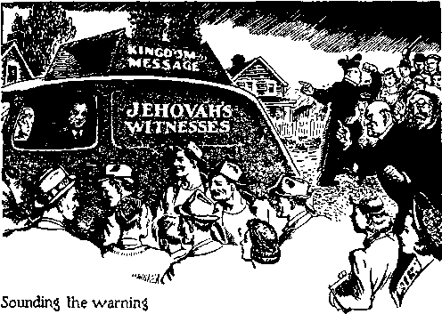now, and will reach a climax in the battle of the great day of God Almighty. His “strange work” is now being done to serve notice upon all of his purpose, that they may have no doubt that Jehovah is acting. The “strange work” will be quickly followed by God’s “strange act”.
DARKNESS
This is a day of darkness for “Christendom”. Jehovah by his prophet has emphasized the coming of this day of great darkness, but the religionists have ignored God’s Word and have relied upon their own opinions and that of other men who preceded them, whom they call their “fathers”; and all their allies today love to have it so. Speaking of this day by his prophet, Jehovah says: “A day of darkness and of gloominess, a day of clouds and of thick darkness, as the morning spread upon the mountains; a great people and a strong; there hath not been ever the like, neither shall be any more after it, even to the years of many generations.”—Joel 2:2.
This description agrees exactly with the facts as now observed by all those who give heed to the Word of God. Speaking by the mouth of his prophet, Jehovah says of this day. “The day of the Lord is darkness, and not light,” to religionists and all of Satan’s organization. Then the Lord illustrates how men act in this day who are surrounded by the darkness and have no light: “As if a man did flee from a lion, and a bear met him; or went into the house, and leaned his hand on the wall, and a serpent bit him. Shall not the day of the Lord be darkness, and not light? even very dark, and no brightness in it ?”—Amos 5:18-20.
The religion-mongers and practitioners will find no way of escape. Regardless of what they do the Lord will search them out and see that the proper recompense is ministered unto them. (Jeremiah 25: 35) “The great day of the Lord is near, it is near, and hasteth greatly, even the voice of the day of the Lord: the mighty man shall cry there bitterly. That day is a day of wrath, a day of trouble and distress, a day of wasteness and desolation, a day of darkness and gloominess, a day of clouds and thick darkness, a day of the trumpet and alarm against the fenced cities, and against the high towers.”— Zephaniah 1:14-16.
Such is the condition in which the enemies of God find themselves now. They will not be able to escape darkness: “But with an overrunning flood lie will make an utter end of the place thereof, and darkness shall pursue his enemies.” (Nahum 1: 8) Added to their mental and spiritual darkness that has come upon the religionists, God sends his army of “locusts”, which have plagued and which continue to plague those of Satan’s world, even as the army of locusts down in Egypt plagued those who were against Jehovah and against his people: “And the locusts went up over all the land of Egypt, and rested in all the coasts of Egypt: very grievous were they; before them there were no such locusts as they, neither after them shall be such. For they covered the face of the whole earth, so that the land was darkened; and they did eat every herb of the land, and all the fruit of the trees which the hail had left: and there remained not any green thing in the trees, or in the herbs of the field, through all the land of Egypt.”—Exodus 10:14,15.
These prophecies are today being fulfilled upon “Christendom”. It is the time of which Jehovah speaks, a time of darkness to the enemy and of light to those who love him and serve him faithfully and truly; and concerning this he says through his prophet: “Arise, shine; for thy light is come, and the glory of the Lord is risen upon thee. For, behold, the darkness shall cover the earth, and gross darkness the people; but the Lord shall arise upon thee, and his glory shall be seen upon thee.”—Isaiah 60:1, 2.
The light from the temple daily increases and makes glad those who are devoted to Jehovah and his kingdom; and, therefore, while the enemy is in darkness those who love and faithfully serve Jehovah God have an ever-increasing light, and with that light their joy increases. “But the path of the just is as the shining light, that shineth more and more unto the perfect day. The way of the wicked is as darkness; they know not at what they stumble.” (Proverbs 4:18,19) The religionists are in the dark because they reject the Word of God. Religionists do not believe the Word of God, and hence go contrary to his law and to his prophets: “To the law and to the testimony: if they speak not according to this word, it is because there is no light [(Rotherham) no dawning day] in them.” (Isaiah 8: 20) It is the time when wicked spirits control the rulers of this world. (Ephesians 6:12) It is the day when Satan is putting forth his last desperate effort to destroy the human race.
This is the "day of clouds”, which betoken (1) the presence of the Lord Jesus Christ (Exodus 13: 21; 19: 9,16; Matthew 26: 64; 1 Thessalonians 4:17; Revelation 1:7), and (2) a time of distress and trouble, announcing the approaching storm of Jehovah upon his enemies.
In this time of darkness upon his enemies the Lord causes his light to shine on his “other sheep”, while he gathers them to himself and comforts them: “As a shepherd seeketh out his flock in the day that he is among his sheep that are scattered; so will I seek out my sheep, and will deliver them out of all places where they have been scattered in the cloudy and dark day.” —Ezekiel 34:12.
At the early morn, when the dawn is upon the mountains, the sunlight is hid; and so it is with the enemy today. The kingdom glory appears even now to the faithful, but to religionists there is no light. In this condition of darkness upon the enemy a “great people” appears, great because used by Jehovah to have part in his “strange work”, “a great people and a strong [and bold (Rotherham)].” (Joel 2:2) At Joel 1: 6 these are called “a nation”. In the complete fulfillment of this part of the prophecy the word “people” is used evidently for the reason that it is now God’s people whom he has taken out for his name’s sake that come as a swarm of locusts to proclaim the name of Jehovah. They are not great in themselves, either in name or fame or power, nor great in the sight of men, but are regarded by such as very insignificant. They are made to appear as great, however, by reason of the work done and their methods employed to reach the hundreds of millions of people and place in their hands hundreds of millions of copies of the message of warning. These people who are taken out by Jehovah for his name are bold, because this is the day of the Lord’s judgment and his witnesses must be bold and thereby show their love for Jehovah. (1 John 4:17,18) This does not mean that they are rude, but that they are fearless of creatures, fearing only God.
That which Jehovah’s witnesses have accomplished in recent years is phenomenal in the eyes of many. As stated by the prophet: “There hath not been ever [before] the like.” The same thing was said of the swarms of locusts down in Egypt. (Exodus 10:14) Never had there been such a widespread publication of the truth of God’s Word as during the past few years; and this is true because it is God’s time and it is his work. From the year 1921 to 1931 Jehovah’s witnesses placed in the hands of the people books and booklets to the number of 110,565,401. Since 1931 the work accomplished by Jehovah’s witnesses has been even greater. The message has been broadcast by hundreds of radio stations each week and at certain times by international broadcast. Thousands of phonographs and sound machines have been employed to proclaim the message, free tracts numbering many millions have been put in the hands of the people, and at the end of the year 1939 the publications of the Society (the books and booklets) in the hands of the people exceeded 309,000,000, and this in more than 70 different languages. Nothing like that ever before in the history of man. It has been accomplished by the power of the Almighty God and Christ Jesus.
This distribution of literature and witness work is not a religious movement, but the publication of God’s Word, and done at his commandment. When the strange work of proclaiming the truth is done such will never be repeated, because there will be no occasion to do so; hence says the prophet: “Neither shall there be any more after it [after them (B.F.)], even to the years of many generations.” The “strange work” is for the vindication of Jehovah’s name, and following Armageddon all creatures that breathe shall be praising Jehovah’s name, the vindication of which will have been fully accomplished, and no need for a repetition thereof.
Since the beginning of Jehovah’s “strange work” that work has progressed with intensified zeal or heat. God’s army of servants, likened unto locusts, has appeared with the sound that is the sound of the fifth trumpet described in Revelation 9:1-12. That fifth trumpet began to sound in 1926, at the time of a convention of God’s people in London, England. At that time “Christendom” had become guilty of the “transgression of desolation” by setting forth a devilish organization claiming the right to rule the earth instead of God’s kingdom. (Daniel 8:13) Prior to 1926 there was sounded a series of trumpets or alarms, which are described at Revelation, chapters eight, nine and eleven. It was during that time, that is, from 1922 to 1926, that some work foretelling the coming of the locusts had to be done. That work is described in Revelation 16:1-9 as “plagues”. Those plagues heated up the religionists as a flame of fire. Says the prophet Joel (2:3): “A fire dc-voureth before them; and behind them a flame burneth; the land is as the garden of Eden before them, and behind them a desolate wilderness ; yea, and nothing shall escape them.” This means that before the coming of the army of locusts there came a devouring flame of truth unto the religionists. That proclamation of the truth well heated up the religionists, who then began to witness the burning up of their pastures. The destructive flame at Armageddon comes upon the religionists and finishes the job.
The organized and progressive witnessing by God’s faithful seiwants began in 1922, after Christ Jesus had assembled the approved ones at the temple and anointed them, and this work must progress until the conclusion of God’s “strange work”, which is quickly to be followed by his “strange act”. lienee before the coming of the army of “locusts” as such, the heat was turned on; and behind the locusts a flame of fire shall burn. “As the fire burneth a wood, and as the flame setteth the mountains on fire, so persecute them [God’s enemies] with thy tempest, and make them afraid with thy storm.”—Psalm 83:14,15.
Jehovah put that prayer in the Scriptures to be uttered by his faithful witnesses, and that prayer God answers according to his will. In symbolic phrase another prophet of Jehovah describes the scorching of “Christendom” and the wasting of her pastures: “And say to the forest of the south, Hear the word of the Lord, Thus saith the Lord God, Behold, I will kindle a fire in thee, and it shall devour every green tree in thee, and every dry tree; the flaming flame shall not be quenched, and all faces from the south to the north shall be burned therein. And all flesh shall see that I the Lord have kindled it; it shall not be quenched.”—Ezekiel 20:47,48.
The condition prior to this scorching heat resulting from the work of the locusts upon “Christendom” is described as “the land is as the garden of Eden before them”. The Protestant clergy and allies vigorously advocated the League of Nations as “the political expression of God’s kingdom on earth”. The League was then set up, and the Roman Catholic Hierarchy climbed upon the back of the old “beast”. A great religious revival following the World War
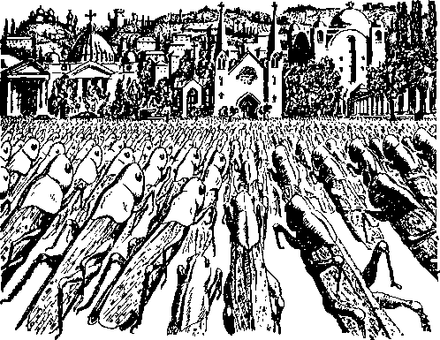Locusts attack demonism
had been predicted by the clergy, and hence those religionists tried to start the old chariot to moving. In 1919 the Interehurch World Movement of the Protestant churches of America was launched. At least they tried to make her go. Much money was collected and spent to boost the thing, and hence the field at that time before the religionists looked good, like unto a garden. In the spring of 1919 the National Catholic Welfare Conference was organized. Fascism raised its head in Italy the same year, and at that time the Vatican, looking for an instrument to be used apparently against Bolshevism but to be used in reality against the message of God’s kingdom, seized upon Fascism as such a desired instrument. Shortly thereafter Fascism put the Papacy back into temporal power and the Hierarchy became a large political machine. For some time prior thereto the Roman Catholic organization was, as the prophet describes, ‘the forgotten harlot of modern Tyre.’ In those days of refreshing the old lady redecked herself and began to sing her songs in an effort to entice others and to regain her former political and commercial paramours. (Isaiah 23:15-17) February 6,1922, Cardinal Batti was selected pope, and about the same time Mussolini assumed control of Italy. So at that time the field, that is, the nations of the earth, looked to the religionists very promising, like unto a garden of pleasure; and so they looked upon it and called it “The garden of the Lord”, and the religionists felt and acted as though they were riding upon the top of the waves of the universe.
In the eyes of religionists there seemed to be no particular reason to be worried about anything that Jehovah’s witnesses might do. True, those witnesses were considered by religionists as a pestiferous crowd, but they expected them to do little or nothing. The religionists figured that they had killed the work and influence of Jehovah’s witnesses during the World War, and hence the religious leaders were riding high and strutting their stuff. At the same time, by the grace of Jehovah and under the immediate command of Christ Jesus at the temple, Jehovah’s witnesses were reviving and getting their work in order. In the Lord’s due time Jehovah’s army was ready and he sent them forth, likened unto a cloud of locusts. That was the beginning of real activity and real organized forward movement of Jehovah’s witnesses, and now, after the
Lord’s locusts have been at work for a few years, the religious field looks like a place of desolation. Hence the Lord, by his prophet, says: “Behind them a desolate wilderness; yea, and nothing shall escape them.”
The effect of the invasion of the “locusts” of the Lord and the declaration of God’s judgment against all religion, and particularly the so-called “Christian religion”, discloses that the same is a fraud and a snare of the Devil. Honest people of the world, learning the truth, now look upon religion as a desolate thing, as a snare and a racket, and they see that it is under the blight of God’s adverse judgment. The faithful witnesses of Jehovah have not been partial to any religion, but have, at the command of the Lord, boldly announced that the purpose of all religion is the defamation of the name of Almighty God, the scheme of the Devil to turn the people away from God. The declaration of the truth has been against all such enemy organizations: “And none hath escaped them.” (R.V.) Not even the mighty and the high of the Roman Catholic Hierarchy have been able to go on without taking notice.
In 1933, with great gusto and much noise made by that Catholic organization and their political allies the so-called “holy year” was announced, the purpose of which was to restore in the minds of the people the “garden of Eden” appearance for religion. Then the Lord by his army of “locusts” pulled the camouflage off religion, and since then the people have become well informed and know that all religion is of the Devil and is the chief opponent and bitter enemy of Christianity. Likewise Fascism and Nazism and Communism have been shown up as devilish instruments, upon which the Roman Catholic Hierarchy organization rides, and for which it acts as spiritual adviser. The people are learning that the purpose of that unholy combine is to rule the world in the place and stead of God’s kingdom under Christ. They see that religionists have put the “corporate state” above Jehovah God and his kingdom.
Whom has the Lord used to bring about this condition of devastation upon the fields of religion ? He has used his faithful servants, who act strictly under the command of the Lord Jesus Christ. In all the efforts put forth by the Lord’s army of locusts no physical force or carnal weapons have been used; and such is exactly in harmony with the prophecy. There has been no physical destruction of any houses, property or person. Locusts do not work that way. Jehovah’s witnesses, under the command of their Head, Christ Jesus, turn on the light and the heat, which devour the false teachings of men, invented by the Devil and used by his agents to defame the name of God and turn the people away into darkness.
For the further encouragement of the faithful remnant and their companions, the Jonadabs or “other sheep”, the Lord by this prophecy gives a minute description of those that make up his army likened unto locusts: “The appearance of them is as the appearance of horses; and as horsemen, so shall they run.” (Joel 2: 4) Horses symbolically picture war equipment; as it is written: “Horses prepared unto battle.” Thus are pictured the faithful witnesses of Jehovah who go right on in his work as he commands, not hesitating for anything. The locusts have an oblong-shaped head, somewhat like that of a horse, and he uses his head: “And the shapes of the locusts were like unto horses prepared unto battle; and on their heads were as it were crowns like gold, and their faces were as the faces of men.”—Revelation 9: 7.
Locusts are not afraid, nor is the horse afraid, and it is to such that the faithful witnesses of Jehovah are likened: “Hast thou given the horse strength ? hast thou clothed his neck with thunder? Canst thou make him afraid as a grasshopper? the glory of his nostrils is terrible.” (Job 39:19,20) The big religious leaders and allies try to frighten Jehovah’s witnesses into submission and to cause them to cease their witness work, but the faithful hear and obey the Lord Jesus Christ, who says to them: “Fear them not.” (Matthew 10: 26, 28) The locusts resemble the horse going into battle, and so Jehovah’s witnesses push on in the fight regardless of opposition: “He mocketh at fear, and is not affrighted; neither turneth he back from the sword.” (Job 39:22) Jehovah’s witnesses love God and Christ, and “perfect love casteth out fear”. (1 John 4:18) They know they are going in the fight against bitter opposition, but God gives to them the assuring command that he gave to Jeremiah: “Be not afraid of [them].” “Thou therefore gird up thy loins, and arise, and speak unto them all that I command thee; be not dismayed at their faces, lest I confound thee before them. For, behold, I have made thee this day a defenced city, and an iron pillar and brazen walls against the whole land, against the kings of Judah, against the princes thereof, against the priests thereof, and against the people of the land. And they shall fight against thee, but they shall not prevail against thee; for I am with thee, saith the Lord, to deliver thee.”— Jeremiah 1:17-19.
A better translation of the latter part of this verse of the prophecy of Joel reads: “And as war-horses so shall they run.” (Joel 2:4, Rotherham) They run to and fro in the service. They do not run away from the battle, but at the Lord’s command they increase their speed. “The horse rusheth into the battle.” (Jeremiah 8:6) “His horses are swifter than eagles.” (Jeremiah 4:13) Since the beginning of the year 1939 Jehovah’s witnesses have shown an increased speed and fearlessness in the “strange work”.
Some of these witnesses who have passed the age of threescore and ten have speeded up even more than some of the others and have made as much as seventy hours per month in the field service. Some at first thought themselves unable to carry the phonograph with recorded speech, but now have learned that the burden is easy when in the service of the King. Like a war horse they are going daily in the battle with greater joy. If any desire to look back and take it easy, let them do so. All who really love God will do what they believe is God’s will concerning them, and if they can put in more time they will delight to do so.
DESCRIPTIVE
In symbolic language the Lord gives such a clear description of the faithful witnesses that no doubt is left as to their identity. He also describes the harmonious action on the part of those who form his visible organization, and this is further proof that all of the faithful dwell together and work together in peace, having in mind the one thing, the vindication of God’s name. Jehovah’s witnesses are shown as fearless of man’s power or of the Devil’s power and are pushing forward actively in Jehovah’s service in obedience to his commandment: “Like the noise of chariots on the tops of mountains shall they leap, like the noise of a flame of fire that de-voureth the stubble, as a strong people set in battle array.”—Joel 2: 5.
A similar description is given in The Revelation of Jesus Christ concerning the earthly part of God’s army: “And they had breastplates, as it were breastplates of iron; and the sound of their wings was as the sound of chariots of many horses running to battle.” (Revelation 9: 9) The movement of a gigantic swarm of locusts is very noisy, but it is a harmonious noise. Like the illustration, so with the reality. Forward and active movement of Jehovah’s witnesses is now and for some time has been carried on with much publicity, harmonious sound, and what they have done has been done openly and aboveboard. If the clergy in one community oppresses a pioneer a whole swarm goes in immediately and cleans up the community. They call the people’s attention to Jehovah’s name and that his kingdom is here and it is the only possible means
of bringing to them peace, prosperity, life and happiness; and their movement is a harmonious song. They warn the people of the near approach of the battle of Armageddon. They do their work systematically and in a well-organized manner, and their movements and sound of warning are much like the oncoming of war chariots hurrying to the battle. It is Jehovah’s war organization, the invisible part of which is rapidly approaching to destroy the hypocritical and unfaithful “Christendom” and will do the real destructive work; but the remnant go before and announce the fact. God’s great organization, like a huge and irresistible chariot with four tremendous wheels, is described by Jehovah’s prophet Ezekiel as moving forward and crushing all opposition. (Ezekiel first chapter; Ezekiel 43:1-3) The forward movement of the Lord’s army of locusts strikes terror into the hearts of the religionists, because to them it is a token of impending destruction.—Philippians 1:28. .
The word “mountains”, as used in the prophecy, verse five, symbolically pictures the government organizations of “Christendom”. Such governments attempt to hinder the work of Jehovah’s “locust” army, and resort to various means to accomplish that wrongful purpose. Such government opposition, however, does not deter the witnesses of the Most High nor frighten them into submission. Jehovah’s “strange work” must be done, and God will see to it that it is done according to his will. During the past few years those devoted to God and his King have fully recognized and acknowledged God and Christ Jesus as the only higher powers and that all Christians must obey God and Christ, regardless of opposition from man or man-made governments. (Romans 13:1) The faithful apostles blazed the way, and the faithful followers of Christ now go the same way. (Acts 5: 29) Only a short time ago the Lord’s “little flock” of witnesses were scattered because of the assaults of the religious leaders of the earthly governments. No one of the religionists showed them any favor whatsoever.
Fires frequently break out and destroy the stubble field following an exceedingly hot and dry period, and such fire is attended with much noise. Even so the united action of Jehovah’s witnesses and their companions appears to the religionists “like the noise of a flame of fire that devoureth the stubble”. The “strange work” of Jehovah is a warning to give the alarm of the fire of Armageddon. God by his spirit moved the apostle Peter to write of such time: “But the heavens and the earth which are now, by the same word are kept in store, reserved unto fire against the day of judgment and perdition of ungodly men.” “But the day of the Lord will come as a thief in the night; in the which the heavens shall pass away with a great noise, and the elements shall melt with fervent heat; the earth also, and the works that are therein, shall be burned up.” “Looking for and hasting unto the coming of the day of God, wherein the heavens, being on fire, shall be dissolved, and the elements shall melt with fervent heat.” (2 Peter 3: 7,10,12) This is further corroborated by the prophet Malachi: “For, behold, the day cometh, that shall burn as an oven; and all the proud, yea, and all that do wickedly, shall be stubble; and the day that cometh shall burn them up, saith the Lord of hosts, that it shall leave them neither root nor branch.”—Malachi 4:1.
In describing the activities of the locusts, mark the language of Joel’s prophecy: “As a strong people set in battle array.” There the preposition “as” shows that the words did not apply in Joel’s day, when the locusts destroyed the fields, but actually refers to intelligent creatures and human organization, Jehovah’s witnesses. These are not armed with carnal weapons, but they are thoroughly organized and under the command of the great Field Marshal, Christ Jesus. It is the time when Satan and his host, that old Dragon, ‘go forth to make war against God’s organization, and the remnant thereof’ now on the earth. (Revelation 12:17) The army of the Lord set in battle array is not a democratic form of organization, but is under the control and command of the Lord Jesus Christ, Jehovah’s King and Field Marshal, and therefore is a theocratic government. This conclusion is proved by the words of The Revelation, which apply to that army under the Lord’s command: “And the shapes of the locusts were like unto horses prepared unto battle; and on their heads were as it were crowns like gold, and their faces were as the faces of men. And they had a king [the Lord Jesus Christ] over them, which is the angel of the bottomless pit [into which Christ Jesus flings the Devil], whose name in the Hebrew tongue is Abaddon [destruction for Satan’s crowd], but in the Greek tongue hath his name Apollyon [destroyer of Satan and his organization].”—Revelation 9: 7,11.
Jehovah’s witnesses, that is, his army of “locusts”, are without fear of creatures because they know that they are backed up by the almighty power of God. The faces of the “faithful servant” class are as “adamant, harder than flint”, made so by Jehovah, who says to his witnesses : “Fear them [the rebellious religionists] not, neither be dismayed at their looks.” (Ezekiel 3:9) Regardless of opposition the faithful witnesses go straight on doing their assigned work: “Before their face the people shall be much pained [(R.F.) At their presence the peoples are in anguish]; all faces shall gather blackness.”—Joel 2: 6.
This applies particularly to the Roman Catholic Hierarchy and the allied Protestant doctors of divinity and Jewish rabbis. This is supported by the fact that they all howl and work together to induce the political, legislative, judicial and other parts of the government organization to take drastic action against Jehovah’s witnesses. The same locusts (Jehovah’s witnesses) are described in The Revelation in these words: “And there came out of the smoke locusts upon the earth; and unto them [Jehovah’s witnesses] was given power, as the scorpions of the earth have power. And it was commanded them that they should not hurt the grass of the earth, neither any green thing, neither any tree; but only those men [the religionists] which have not the seal of God in their foreheads. And to them it was given that they should not kill them, but that they [the religionists] should be tormented five months; and their torment was as the torment of a scorpion, when he striketh a man. And in those days shall men seek death, and shall not find it; and shall desire to die [to escape torment], and death shall flee from them.”—Revelation 9: 3-6.
God permits the religionists to exist and to continue in their practice for a short time while his “strange work” is in progress, to the end that they might receive torment, and this they receive by having their “religious susceptibilities shocked” when someone speaks in their hearing the message of truth. Concerning the faces of the religionists, the Hebrew text means that their faces have a “gleam” or “flush” of anxiety upon observing the activities of Jehovah’s witnesses and the message which they bring. According to the Authorized Version, their faces “gather blackness”. God’s prophet speaks of the Ninevites in this language: “She [Nineveh] is empty, and void, and waste; and the heart melteth, and the knees smite together, and much pain is in all loins, and the faces or them all gather blackness,” (Hebrew) “a gleam or flush.”—Nahum 2:10.
The faces of the clergy show a flush of anxiety when called upon by Jehovah’s witnesses, and those clergymen usually resort to harsh words against Jehovah’s witnesses, and, seeing that their harsh words do not deter the witnesses but that they fearlessly go on in their work, the religionists conclude that it is a token of impending destruction of them and their racket. Belshazzar, king of Babylon, was in the same condition when he saw the handwriting on the wall.
The religionists know that it is true that they have been weighed in the balance by the Lord and found worthless.
Jehovah by his prophet foretold the united and harmonious action of the faithful witnesses who bear the message of his kingdom. They are not weaklings, but “strong in the Lord and in the power of his might”: “They shall run like mighty men; they shall climb the wall like men of war; and they shall march every one on his ways, and they shall not break their ranks.”— Joel 2:7.
The zealous ones are not content with spending a few hours in the Lord’s service, but they are “up and at it” on every possible occasion. They attack in the strength of the Lord, and Jehovah, through Christ Jesus, continues to provide them with all the needed strength. “But they that wait upon the Lord shall renew their strength; they shall mount up with wings as eagles; they shall run, and not be weary, and they shall walk, and not faint.”—Isaiah 40: 31.
The faithful and zealous ones hear the command of the Lord and hasten to obey: “I will run the way of thy commandments, when thou shalt enlarge my heart.” (Psalm 119:32) David was a type of Christ Jesus and his body members, and indited this Psalm which is now appropriate for Jehovah’s witnesses: “For thou art my lamp, 0 Lord; and the Lord will lighten my darkness. For by thee I have run through a troop; by my God have I leaped over a wall.”—2 Samuel 22:29,30. .
The enemies of God’s kingdom that shield, hide and protect themselves behind their polit-ieal and judicial walls find that these walls are inadequate to shield them. Jehovah’s witnesses do not stop, but, in the language of the prophecy, they 'climb the walls like men of war’, that is to say, they go on regardless of the walls. Since the Lord’s people have seen and appreciated the Theocratic Government, which directs them, they have been and are being rapidly disciplined and trained, and they act orderly and fearlessly. Like locusts, they do not stop at tall obstacles, but climb right over them and keep going forward. The religionists have builded up their walls, fortified by politics and commerce, and behind which they attempt to hold the common people who have supported their organization. Now Jehovah sends his army of locusts, who go right over and through those walls with a message of deliverance; and thus God by his witnesses 'opens the prisons to them that are bound’.—Isaiah 61:1.
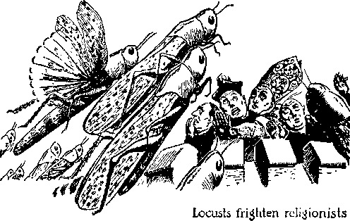Every one of the “faithful and wise servant” class knows that the Lord’s command, as applied to him, assigns to him a specific work, and therefore he goes forward attending to his own business, doing with his might what has been assigned to him, and does not interfere with the other fellow’s business. He knows that individually he has no strength, and therefore he does not become heady. He realizes that he is small in himself but strong in the Lord and, like the description of the locusts, he is little, but wise; and like a band of locusts all such go forward as one united band of warriors: “There be four things which are little upon the earth, but they are exceeding wise; . . . The locusts have no king, yet go they forth all of them by bands.”— Proverbs 30: 24, 27.
The Hierarchy and allies, all of whom are enemies of God’s kingdom, try to break up the unity and harmonious action of Jehovah’s witnesses, but they cannot do so. Therefore says God’s prophet concerning those faithful and zealous locusts: “They . . . shall not change their paths.” (Roth.) Those of the “faithful and wise servant” class have this one thing to do. (Philip-pians 3:13) That one thing is to carry out God’s commandment concerning them. They are trustworthy, constant, dependable, and reliable. They know that Jehovah and Christ Jesus are their teachers and commanders and that it is their business as servants of the Lord to joyfully obey: “Thine eyes shall see thy teachers; and thine ears shall hear a word behind thee, saying, This is the way, walk ye in it, when [lest] ye turn to the right hand, and when [lest] ye turn to the left.”—Isaiah 30: 20, 21.
CHAPTER VII
IN THIS day the issue is sharply drawn because it is the time when Jehovah is doing his “strange work”, which work consists of informing the people that religion is of the Devil and that religion is doomed to early and complete destruction. That is the reason why so many persons of good will now are appearing upon the scene and declaring themselves against religion and for the kingdom of God under Christ. They clearly see that Jehovah’s witnesses are not engaged in any fight against human creatures, but that they are carrying on and carrying forward a good work by proclaiming the message of God according to his commandments ; and for this reason those persons of good will hasten to join the anointed remnant in that “strange work”. All who are on the side of Jehovah and his King must of necessity stand firmly together and work faithfully and harmoniously together. The Devil and all his agencies, and particularly religion and religionists, oppose God and oppose Jehovah’s witnesses and their companions.
Long ago Jehovah by his prophet Joel emphasized the harmonious and forward action of his faithful people on the earth. He shows that his anointed ones and their companions would stand shoulder to shoulder, working for the 192 kingdom. He likens his faithful anointed ones unto locusts (Joel 1:4; 2:25) and calls them “his army”, who have no earthly king but who are under the leadership of Christ, the heavenly King. God’s faithful and loyal ones now on the earth do not need an earthly or visible king, head or ruler. They are all at unity; meaning they are all at one, and that Christ is their Leader and Head. Christ Jesus denounced religion as of the Devil, and they must follow their Head and Leader. Note now the prophecy of Joel, which discloses the harmonious movement of Jehovah’s faithful servants, who follow their King whithersoever he leads: “Neither shall one thrust another [nor against each other shall they strike (Rotherham)], they shall walk every one in his path; and when they fall upon the sword, they shall not be wounded.”—Joel 2: 8.
ACTION
They have no occasion to fight one another. If they are found fighting with one another, that would be proof conclusive that they are not serving God and his King. They march forward in unity. They do not get out of line with one another. They do not try to mind the other fellow’s business, nor to interfere with another in the discharge of his assigned duty. Each one knows his assigned position and duty and is diligent to faithfully serve where he is put. All keep themselves in the peace of God and maintain their full peace and harmony amongst themselves, just as God foretold his faithful ones must do. (Psalm 122) The Authorized Version does not give the clearest understanding here of Joel’s prophecy, which, according to the Revised Version, reads: “They burst through the weapons, and break not off their course.” According to Rotherham: “Though in among the weapons they fall, they shall not stop.” Note here the indisputable facts in harmony with and in fulfillment of the prophecy, as stated. The legislative bodies enact laws to stop the activity of God’s people. The courts construe those laws to try to stop the work of Jehovah’s witnesses. The strong-arm squad, acting at the behest of the religious leaders, inflict punishment upon Jehovah’s witnesses, assault them, heat them, throw them into filthy prisons, falsely accuse them of crime, and otherwise ill-treat them. The religious leaders incite mobs of violent persons to assault Jehovah’s witnesses, and, as Jesus foretold, Jehovah’s witnesses are 'hated of all nations of the world for his name’s sake’. (Matthew 24:9) None of these things stop the onward march of Jehovah’s faithful servants. They realize that their commission and authority is from Almighty God, and so they are determined to obey God regardless of what men may say or do.
Some of Jehovah’s witnesses are cruelly subjected to bodily punishment, and some have actually been murdered by the religious representatives of Satan. Such things, however, do not deter others from going forward in their work. The surviving ones do not cry and weep because one of their fellow witnesses is killed by the enemy, for the reason that they know that such as die faithful are immediately changed into the glorious likeness of the Lord Jesus Christ. No human power or Devil power can stay the onward march of Jehovah’s army, whom he likens unto locusts. They are for the King and his kingdom. They know that the King will be victorious. They are determined by His favor and the grace of Almighty God to be faithful in the full performance of their duty.
Further describing the activities of the faithful witnesses of the Lord, his prophet records: “They shall run to and fro in the city [(B.F.) They leap upon the city]; they shall run upon the wall, they shall climb up upon the houses; they shall enter in at the windows like a thief.” —Joel 2:9.
The faithful and zealous witnesses of Jehovah invade the places held by Satan’s agents, that is, in the organizations called “churches” or religious institutions, where the “prisoners” are held. The religionists, by coercion and threats, put fear into the minds of many of their parishioners and hold them in restraint. Jehovah’s witnesses hasten to carry the message of the kingdom to such prisoners, that they may learn of God’s provision for their escape to freedom and find a place of safety. Not only are the witnesses of Jehovah proclaiming his name and his kingdom, but they are doing a good work toward those who sigh and cry because of the restraint that is put upon them and the abominations that are practiced in the religious organizations.— Ezekiel 9:4.
The combined elements, which constitute the visible rulers of the “present evil world”, erect what they call “legal walls” by enacting laws to prevent anyone from speaking against religion.
They enact laws or ordinances forbidding the advertising of the truth by banners or other means, thus discriminating against Jehovah’s witnesses. These so-called “legal walls” do not cause Jehovah’s witnesses to stop their work, nor are they frightened at the sight of such walls. Knowing that God has commanded his work to be done, and he having promised that the enemy shall not prevail against his faithful ones, those witnesses of Jehovah go straight ahead, trusting implicitly in the Lord and doing with their might what he has given them to do.
“They shall climb up upon the houses.” God’s faithful servants go from house to house to bring the message of the kingdom to those who reside there, omitting none, not even the houses of the Roman Catholic Hierarchy, and there they give witness to the kingdom because they are commanded by the Most High to do so. “They shall enter in at the windows like a thief.” They do not loot nor break into the houses, but they set up their phonographs before the doors and windows and send the message of the kingdom right into the houses into the ears of those who might wish to hear; and while those desiring to hear are hearing, some of the “sour-pusses” are compelled to hear. Locusts invade the homes of the people and even eat the varnish off the wood and eat the wood to some extent. Likewise God’s faithful witnesses, likened unto locusts, get the kingdom message right into the house and they take the veneer off the religious things that are in that house, including candles and “holy water”, remove the superstition from the minds of the people, and show them that the
doctrines that have been taught to them are wood, hay and stubble, destructible by fire, and they cannot withstand the heat. The people are enabled to learn that “purgatory” is a bogeyman, set up by the agents of Satan to frighten the people into the religious organizations, where they may be fleeced of their hard-earned money. Thus the kingdom message plagues the religionists, and the clergy find that they are unable to prevent it. Therefore, as described by the prophet, the message comes to them like a thief that enters in at the windows, and this message is a warning to those who are on the inside that Jesus Christ has come, and they remember his warning words, to wit: “Behold, I come as a thief.” (Revelation 16:15) The day of Armageddon is very close, and that day comes upon the world in general like a thief in the night. (1 Thessalonians 5:2) To be sure, the Lord sees the efforts on the part of religionists to prevent his message from reaching the people, and he laughs at them and has such opponents in derision. The work that is now being done is God’s work, his “strange work”, and no power can stop it. God will finish it in his own due time.
Satan, having been cast out of heaven and down to earth, where he now operates in defiance of God and his kingdom, is desperately fighting against those who serve Jehovah, and he brings into action all his wicked spirits, attempting in every possible way and by every possible means to thwart the proclamation of the kingdom. Here at the earth the battle of truth is being fought and is carried on against the errors of religion, and it is shaking the religious institutions to the foundation. “The earth shall quake before them; the heavens shall tremble ; the sun and the moon shall be dark, and the stars shall withdraw their shining.”—Joel 2:10.
Satan’s visible organization, religious, political and commercial, is now in a state of fear and trepidation, and the organization is quaking and trembling. The leaders thereof are enraged and are shaken at the sound of the message of God’s kingdom, and in their desperation they resort to every possible means to stop it. The enemy tried to destroy the Lord’s work during the World War, but after the war the witness work was revived and soon thereafter the “strange work” began in earnest.—Revelation 11:11-13. See Light, Book One, page 210.
The Lord is now in command of his faithful witnesses, and the earthly governments are giving evidence of how they are quaking by enacting laws and making orders in council to prevent the activities of Jehovah’s witnesses. In some of the more benighted places they are preventing the importation of the kingdom message in the form of books, phonographs, records and magazines; yet the witnesses go straight on telling the people about it, and the efforts of the enemy cause the honest and sincere people to search out the reason for the opposition, and thus they are enabled to find the way of escape. Towns and states enact ordinances specifically directed against Jehovah’s witnesses, and judges and magistrates of some of the courts have exploded in anger from the judicial bench in words like these: “These Jehovah people come in here like a swarm of locusts, showing no respect for our ordinances nor for our churches.” Certain towns in Connecticut and New Jersey are striking examples of this.
Seeing the inability of the police to stop the witness work, the ecclesiastics tremble in rage and fear. Then the Devil and his host of wicked angels tremble and are viciously moved in their efforts to stop the work by Jehovah’s witnesses. Satan and his host of wicked spirits in high places constitute the “heavens”, meaning the invisible part now operating at the earth against God’s kingdom and his people. It is Satan and his angels that carry on the war against Jehovah’s witnesses and their companions: “And the dragon [Satan] was wroth with the woman, and went to make war with the remnant of her seed, which keep the commandments of God, and have the testimony of Jesus Christ.”—Revelation 12:17.
These scriptures and facts are exactly in harmony with the words of the apostle Paul at Ephesians 6:12, which show conclusively that ihe warfare of God's faithful witnesses on earth is against the Devil and his host of wicked angels and that the Devil and those wicked angels use human creatures as visible agents to carry on their vicious work of opposition. This ought to convince any reasonable person, and certainly anyone who has the truth, that the kingdom of God under Christ is the most important of all things, because that kingdom will wipe out Satan’s organization and will vindicate the name of Jehovah and provide means for salvation for those who love righteousness. So understanding, those who love the Lord should be so enthused that they would want to increase their energies in looking after the kingdom interests and doing all within their power to make known the kingdom to others.
“The sun and the moon shall be dark[ened], and the stars shall withdraw their shining.” (Joel 2:10) When the plague of locusts was upon Egypt (Exodus 10:15), “they covered the face of the whole earth, so that the land was darkened; and they did eat every herb of the land, and all the fruit of the trees.” That pictured the plague that is now upon “Christendom”. The big clergymen, and the principal ones of their flocks, are the ones symbolically represented as “the sun and the moon” and the shining “stars”, and their ardent parishioners regard them as “the lights of the world”; but now their light is being very much obscured by the message of Jehovah’s Idngdom proclaimed by his army of antitypical locusts. God’s message of truth is now informing the honest people that their hope is not in religious leaders, nor in the principal ones of their flock, but that their only hope is in Christ Jesus and his kingdom; and that truth shuts off the light from the big moguls of “Christendom”. To the honest and sincere people of today the words of Jehovah concerning Christ Jesus sound out with great encouragement, to wit: “In his name shall the nations hope.” (Matthew 12:21, A.R.V., margin) The worldly bright-lights are overshadowed and their shining grows less as the message of the kingdom is carried forward. Even the political leaders that have been shining lights amongst men for some time have, because of fear, turned to religion, calling out loudly for “more religion”, and their former bright shining as political leaders is disappearing. Jehovah’s army of “locusts” move steadfastly onward, and while the darkness increases upon the worldly-wise the light upon the Lord’s people continues to increase to their joy.
Is the campaign now carried on for the glory of Jehovah’s witnesses'? Not by any means. It is the message of God, and he only should and does receive the honor and glory. “And the Lord shall utter his voice before his army [before his host (Both.)]; for his camp is very great; for he is strong that executeth his word; for the day of the Lord is great and very terrible; and who can abide it?”—Joel 2:11.
By Christ Jesus his King and through his theocratic organization Jehovah roars forth his message proclaiming to all creation that the day of final reckoning is at hand. This is not for the purpose of exalting or praising the “locusts”, his witnesses, but for the express purpose of informing the people that the Almighty God is Jehovah. The “locusts” have no earthly king, but they are under their heavenly King, Christ Jesus, who commands them. He is invisible to human eyes, and he commands and leads the host of the Most High. It is the “voice” of Jehovah uttered by his duly authorized and commissioned Executive Officer, Christ Jesus. (1 Thessalonians 4:16,17) “His camp is very great”; that is, very numerous as respects the volume of the message that the Lord sends forth and that his camp puts out. It is the utterance of Jehovah, and it is his “strange work”, and he is very strong and he uses his campers to carry on his work regardless of opposition. Soon he will finish that work and will prove that he has found men on earth who will maintain their integrity toward him under pressure from the enemy. This is Jehovah’s day, and “the day of the Lord is great and very terrible”. The first part of the day of Jehovah is occupied with his “strange work” of proclaiming the message of his vengeance against religion and hypocrisy and announcing that his kingdom is the only hope of mankind. The judgment of the world has begun and is progressing, and the nations are now being separated, and all this must be done prior to Armageddon, and with Armageddon
Satan’s organization shall cease.—Matthew 25:31-46.
The question is then propounded by the prophet: “And who can abide it?” that is, Who can maintain his integrity and abide as a member of God’s organization, whether said to be of the remnant or of the Lord’s “other sheep”? It is a time of great test upon each and every one who has undertaken to do the will of God. Those who do abide in this day and prove their integrity are the ones who have full faith and confidence in God and in his King and who march forward in obedience to his commandments, regardless of the opposition on the part of the foe. These faithful ones now fully appreciate the fact that their fight is not against human creatures, not against men because such men are Catholics or Protestants or Jews, or nonbelievers in anything (they are not fighting against human power or human governments), but that they are being assaulted and opposed by the Devil and his host of wicked angels, and that such invisible ones are using men to carry out their wicked works, and that men thus used are the ones who have yielded to religion and thereby have been seduced by Satan. The work of Jehovah’s witnesses and “his camp” is to obey God and magnify his name that the people may learn their only means of salvation.
WARNING HIS PEOPLE
Many centuries ago, and in the days of his typical people Israel, Jehovah caused the prophecy of Joel to be uttered. Up to this point in the prophecy God tells of hypocritical religion, and of his purpose to destroy religion. He knew the end from the beginning, and in due time God informs his covenant people as to the meaning of the prophecy and what their duty is at this time. By his prophet Jehovah now addresses those who have made a covenant to do his will and to follow in the footsteps of Christ Jesus. The warning from Jehovah to his covenant people is that they must put away now everything pertaining to religion and give themselves wholly and without reservation to his service. “Therefore also now, saith the Lord, turn ye even to me with all your heart, and with fasting, and with weeping, and with mourning.”—Joel 2:12.
This part of the prophecy appears to have the beginning of its fulfillment in completeness shortly before the beginning of God’s “strange work”, that is, between the years A.D. 1918 and 1922. Long before that time God had caused his prophets to utter his judgment against religion and to foretell his “strange work” and what would be the effect on religion. His covenant people during the “Elijah period” of the church from 1878 to 1918, and prior thereto, were walking with the religionists and had imbibed many religious formalisms and practices. It was difficult for them to get away from something that they did not understand was against God. The time came for them, however, to separate themselves completely from the religious institutions. While walking with religionists the condition of God’s covenant people was such that, figuratively speaking, they were clothed with filthy garments, which filth they had gathered upon thorn by association with the Babylonish religious systems and giving honor to high dignitaries in such organizations. The time came when they must be cleansed, and the Lord said to them: “And he answered and spake unto those that stood before him, saying, Take away the filthy garments from him. And unto him he said, Behold, I have caused thine iniquity to pass from thee, and I will clothe thee with change of raiment.”—Zechariah 3: 4.
The “Refiner’s fire” and “Fuller’s soap” did the cleansing work when the Lord came to his temple and began judgment. (Malachi 3:1-3) All those who stood before the Lord at the temple judgment are of necessity included in the foregoing admonition to forsake everything pertaining to the world and turn wholly to the Lord. Therefore Jehovah through his prophet says: “Turn ye even to me with all your heart.”
Prior to that God’s covenant people were trying to develop character, and that in such perfect form that Jehovah could approve them; that is to say, they were trying to grow up to perfection by their own efforts. They had been taught and believed that a Christian must so deport himself that he would have the approval of worldly people who looked upon him; that he must recognize the state as the “higher powers”; and that he must be careful to cause no offense to religionists, and particularly to the high dignitaries in the religious organization. The vindication of Jehovah’s name was unknown to those of the Elijah period, and the kingdom was a secondary matter to be looked forward to. Most of those of the Elijah period were looking forward to their resurrection change, when they would be taken to heaven to ‘help rule mankind and restore them’. In due time God revealed to his covenant people that such a course of action is not the proper one; that they must not bestow honor upon men; that it is impossible for these to bring themselves to perfection, but that their sufficiency before him is in Christ Jesus, their Head and perfect guide; and that each and every one must wholly turn himself to and obey the Lord’s commandments in support of the kingdom (Isaiah 6:1-9) These truths began to be revealed to his people after the coming of Christ Jesus to the temple.
His witnesses must be equipped, and therefore they must forsake religion. They must recognize God and Christ Jesus as the only “Higher Powers”. They must put away the fear of men and really fear God. The filth upon their garments of identification, received while in Babylon, must be put away, and this they would do by separating themselves entirely from the Babylonish systems and devoting themselves exclusively to God’s kingdom; and, thus cleansing their garments, they would be identified as for God and for his kingdom. Because of Babylonish practices the covenant people of Jehovah had been brought into a snare and, in a measure, made captives and prisoners by the enemy. God’s word addressed to typical Israel now became appropriately applied to spiritual Israel, to wit: “0 Israel, return unto the Lord thy God; for thou hast fallen by thine iniquity. Take with you words, and turn to the Lord: say unto him, Take away all iniquity, and receive us graciously; so will we render the calves of our lips.”— Hosea 14:1, 2.
Those gathered at the temple and who receive the Lord’s approval must show their love exclusively for God and for his kingdom. (Deuteronomy 6: 5, 6; 1 John 5: 3) They must turn to God “with all your heart [devotion], and with fasting, and with weeping”, because of the iniquity received in Babylon, and henceforth they must abstain from indulging the flesh according to religion, in order that proper service and worship might be rendered unto Jehovah God. "Fasting and weeping’ would mean refraining from everything religious, because religion dishonors God’s holy name and is a reproach to his people. Mourning because of their past iniquity shows that his servants are in a right attitude toward Jehovah God and in a position to receive his blessings and approval. “Blessed are they that mourn ; for they shall be comforted.” (Matthew 5: 4) The Lord does comfort and has comforted all of Zion who have turned entirely, wholly and completely to him, who have turned away from religion, and who have unhesitatingly exposed religion and declared themselves unequivocally and without compromise for Jehovah and his kingdom.
Such turning to the Lord must not be a formal matter, but must be done sincerely and truly, and in order to receive God’s approval his servants must see and appreciate that the issue that is now to be settled is the vindication of Jehovah’s name and that it is the most important thing; that therefore the kingdom is the most important doctrine because the means by which Jehovah vindicates his name.
The Lord does not command that his people shall go about in grief and sorrow before the world, nor even before one another. Note he says through his prophet: “And rend your heart, and not your garments, and turn unto the Lord your God; for he is gracious and merciful, slow to anger, and of great kindness, and repenteth him of the evil.”—Joel 2:13.
Outward signs of grief would count for nothing and could not be pleasing to God when indulged in that others might look upon such action. True sorrow of heart because of failure to do God’s will is manifested by the creature towards Jehovah, and not for the purpose of being seen by men. There must be a truly contrite spirit, that is, a genuine heart-sorrow because of failure in the past to show complete devotion to God and his kingdom. (Psalm 51:17,18) There must be a true inward sorrow, which the Lord alone sees; for he is the one whose approval must be had and enjoyed. The snare into which God’s sincere people had fallen was due to the religious influence about them and because of their own negligence and fear of creatures. When God revealed to them the plight in which they were, the sincere ones were truly sorrowful and ashamed. They turned to the Lord, and his mercy was shown unto them. “For he is gracious and merciful, slow to anger, and of great kindness.” The Lord must have a cleansed people, who would offer unto him an offering in righteousness, and those who were truly devoted to God when being judged at the temple received his mercy: “Therefore thus saith the Lord, I am returned to Jerusalem with mercies; my house shall he built in it, saith the Lord of hosts, and a line [of constructive work] shall be stretched forth upon Jerusalem [Jehovah’s visible organization, which had been desolated in 1918 by the efforts of the enemy].”— Zechariah 1:16.
It is not the will of God that his sincere servants shall perish, but that they should turn to him when they see the right way, and, doing so readily, receive his blessings: “The Lord is not slack concerning his promise, as some men count slackness; but is long-suffering to us-ward, not willing that any should perish, but that all should come to repentance.”—2 Peter 3: 9.
God was angry with the erring ones during 1918, but when the faithful ones saw their condition they speedily sought the face of Jehovah, and that with true and sincere sorrow of heart. Then the Lord showed his mercy to such and filled their mouth with praise for him, and this he foretold by his prophet Isaiah (12:1,2): “And in that day thou shalt say, 0 Lord, I will praise thee; though thou wast angry with me, thine anger is turned away, and thou comfort-edst me. Behold, God is my salvation; I will trust, and not be afraid; for the Lord JEHOVAH is my strength and my song; he also is become my salvation.” Instead of destroying the sincere yet erring ones when the Lord came to his temple, he cleansed them, and then Jehovah “shortened” the day of tribulation for their sake, affording them an opportunity to prove their love for him. (Matthew 24:21,22) The destruction of “Christendom” was postponed or delayed that the “elect” might have full opportunity to bear testimony to the name of Jehovah before “Christendom” and might therefore have a part in doing God’s “strange work”.
God could not approve these sincere hearing ones unless such hearing ones, when informed of their mistake, would be diligent to repent and seek his face with prayer and fasting and sincere heart-sorrow: “Who knoweth if be will return [(2?.F.) whether he will not turn] and repent, and leave a blessing behind him; even a meat offering, and a drink offering, unto the Lord your God?”-—Joel 2:14.
The faithful remnant did obey God’s admonition to turn to him wholly and to avoid religion and shun it, and now they have the proof from the Lord that their course was right and they know that God did turn away from them destruction and hence did change his course of action and cleanse and purify the remnant and reinstated them in his service and did make them his witnesses. Those who held to religion and religious practice could not have God’s blessing, and such fell into the “evil servant” class. Jehovah’s “strange work”, as pictured by the locust plague, could not be stopped and set aside, but its coming did not do evil to the faithful remnant, but afforded great blessings to them by giving them a part in Jehovah’s “strange work”. “Christendom” did not repent, and therefore God sends upon “Christendom” his army of “locusts” that engage in his “strange work”, which results in destroying the food and the pasture of the religionists. God having given his witnesses, the “locusts”, a part in his “strange work” as stated in the prophecy, he has ‘left behind him blessings’ since 1922, and such blessings as had not been enjoyed by his people before. “A meat [meal] offering, and a drink offering, unto the Lord your God,” have been graciously provided by Jehovah for his faithful servants that they might serve him in verity and offer to him an offering in righteousness. (Malachi 3:3) No one else has received such blessings from the Lord. As Jehovah’s witnesses go forward in the strength of the Lord, having a part in his “strange work”, their blessings con tinue to increase and their joy is greatly en larged.
CALL TO ACTION
The “Elijah work” came to an end in 1911 (2 Kings 2: 9-12), and the consecrated through out the earth reached a state of inactivity for some time. In the year 1919, and shortly after the removal of their restraint and their release from captivity, God’s consecrated people began to awaken to the necessity of busying themselves, and this without doubt was due to the fact that the Lord was directing them; and this is shown by the words of his prophet: “Blow the trumpet in Zion, sanctify a fast, call a solemn assembly.” (Joel 2:15) Zion (referring to God’s organization, and including the visible part thereof on earth) awakened. That blowing of the trumpet in Zion was for the good of God’s released and restored spiritual Israelites, his “remnant” on the earth, and did not call at that time for the activity concerning the “great multitude”. The time had arrived for God’s people to become active, and the call went forth for immediate action. The Society sounded the alarm from the columns of The Watchtower, and a solemn assembly was called. That call was to renewed activity in Jehovah’s service with that fearlessness that had been pictured long ago by the prophet Elisha. In the face of great opposition and much reproach the faithful witnesses of Jehovah responded with joy and zeal to that call, and in 1922 the witness work began in a really organized, systematic and increased manner.
MINUTE INSTRUCTION
Among the strongest proofs that Jehovah is guiding his people in the way they should go is that shown when Jehovah uses them to fulfill his prophecy and then afterwards gives them an understanding of the prophecy, and reveals to his people that they have been so used. During the World War God’s servants on the earth were broken up and scattered by the enemy, particularly the religious element thereof. They must be regathered and enter the service of Jehovah, and the prophecy of Joel shows God’s guiding hand in this matter. (Joel 2:16) In the year 1919 the servant class began to be gathered together and to prepare to devote themselves with renewed zeal to the service of the Lord, and therefore to be a sanctified company, set aside for the exclusive service of Jehovah. “Assemble the old men.” (R.V.) That instruction could not refer to the “elective elders”, but manifestly refers to those more mature ones amongst the Lord’s people, and who elsewhere are pictured by Mordecai and Naomi and who remained faithful under the test imposed upon them during the World War. “Gather the children,” says the prophecy; and that seems to apply to the younger ones coming into the servant class and who were pictured by Esther and Ruth, and who were added to the “faithful servant” class from and after 1922. Incidentally this instruction shows the will of God concerning minor children, that they should be brought along to the meeting or assembly place with the older ones and there hear and learn about God’s kingdom.
The admonition or instruction of the Lord applies to every one of the consecrated, regardless of position in the organization. Note that the prophecy says “the bridegroom” and “the bride” must go forth. Symbolically this means all those who have entered into the marriage relationship then must not permit that to be any excuse for inactivity in the service. The fact that one is the husband and the other is the wife is no justification or excuse to remain out of the service. When a person makes a covenant to do the will of God, that covenant takes precedence over all other covenants, whether made before or after consecration. The marital relationship will not excuse one from fulfilling his or her covenant to serve Jehovah, because the covenant with Jehovah is of paramount importance. The kingdom has come; and to announce the King, who will vindicate Jehovah’s name, is the privilege and duty of everyone who has taken the vow of consecration. To those who have agreed to follow Jesus he says: “If any man come to me, and hate not his father, and mother, and wife, and children, and brethren, and sisters, yea, and his own life also, he cannot be my disciple.”—Luke 14:26.
With stronger force those words apply today to those who are in a covenant to do God’s will. To beseech the brethren, who have made a consecration, to make good that covenant by entering into the service and to zealously engage in the work of the Lord, is the privilege of each one of the remnant. The apostle Paul did that very thing: “I beseech you therefore, brethren, by the mercies of God, that ye present your bodies a living sacrifice, holy, acceptable unto God, which is your reasonable service.”-Romans 12:1.
Some amongst the consecrated were inclined to think that because of their position and standing in the congregation they should not engage in the house-to-house witness work, but that their part was chiefly to make speeches and to serve at meetings. But note the instruction of the Lord through his prophet concerning such: “Let the priests, the ministers of the Lord, weep between the porch and the altar, and let them say, Spare thy people, O Lord, and give not thine heritage to reproach, that the heathen should rule over them: wherefore should they say among the people, Where is their God?”— Joel 2:17.
The priests and ministers here mentioned picture all in line for the royal priesthood; and all of these, having been brought into the temple, must now offer unto the Lord an offering in righteousness, to wit, “the sacrifice of praise to God continually, that is, the fruit of our lips, giving thanks to his name.” (Hebrews 13:15) Regardless of the position occupied, no consecrated one could be excused from the guilt and fault of God’s people, nor from sorrow from reproach upon His name, nor from praying for the vindication of His name. All were guilty who had been thus negligent, and all were admonished to weep and to show real sorrow and a contrite heart for the neglect or lack of zeal in making known the name of the Most High. Not that they should magnify themselves, but that they should show a real and genuine desire to magnify the name of Jehovah and make known that his kingdom is here.
Then says the prophet: “Spare thy people, 0 Lord.” They were instructed to cry thus openly and admitting guilt, negligence, or failure to perform service under adverse conditions. The keenest interest of the consecrated must be in the kingdom and for the vindication of Jeho vah’s name. God had taken out from the nations a “people for his name”, which consecrated people constituted the heritage of the Lord; and so these were instructed to pray to God: “Give not thine heritage to reproach, that the heathen [religionists who do not serve God] should use a by-word against them” {margin); “should mock them” {Rotherham). If God should send a plague upon his people the religionists would mock. They mock God by denying his existence and by saying: “God is not all-powerful; hence his people suffer.” It was necessary for the “faithful servant” class to be shown mercy and to be recovered from the erring way, and particularly from religion and religious practice, that they might avoid the plague that was coming, which has now come upon “Christendom”, and that they might be servants to the honor and praise of Jehovah. In harmony with this God put in the mouth of his consecrated people this prayer, which they pray:
“Help us, 0 God of our salvation, for the glory of thy name; and deliver us, and purge away our sins, for thy name’s sake. Wherefore should the heathen say, Where is their God? let him be known among the heathen in our sight, by the revenging of the blood of thy servants which is shed. Let the sighing of the prisoner come before thee; according to the greatness of thy power preserve thou those that are appointed to die: and render unto our neighbours sevenfold into their bosom their reproach, wherewith they have reproached thee, 0 Lord.”—Psalm 79:9-12.
The admonition and instruction from the Lord, set out in the prophecy, is not for any selfish reason, but for the well-being of God’s covenant people, that they may be in a proper condition of mind and heart to serve Jehovah as they have agreed to do. If the servant class would follow the course marked out for them and would repent and reform and get busy to carry out their covenant, Jehovah would safeguard the interests of his people and prosper them; and such was the promise of the Lord: “Then will the Lord be jealous for his land, and pity his people.”—Joel 2:18.
Those who were approved at the temple judgment and taken into God’s organization, forming the remnant of his anointed, did repent and reform, and then Jehovah did show, and continues to show, his loving-kindness for them, and these are represented in the last-quoted prophecy as “his land”. God delivered them from being prisoners of Satan’s crowd and took away from them the fear of man. He opened the way for the remnant to enter fully into his service and to thereafter proclaim fearlessly his kingdom message.
Since 1922 the Lord has clearly revealed to his people that their fight is not against the weaknesses of the flesh, nor against flesh-and-blood creatures, but that their fight is against Satan and the host of wicked ones, invisible to human eyes, that have overreached men and used men to set up and operate religious institutions, by and through which they have made war against God’s covenant people. His faithful ones have learned that, in order to withstand the enemy, they cannot rely upon their own ability, but that each one must be fully equipped with the armor of the Lord and rely upon him. The covenant people of God have learned that the time is here for a complete showdown with the Devil’s crowd and that therefore this is “the evil day”. The time arrived, therefore, for specific instruction as to what course the anointed should take, and the Lord, through his Word, says to them: “Wherefore take unto you the whole armour of God, that ye may be able to withstand in the evil day, and, having done all, to stand.” (Ephesians 6:13) No time now to ask yourself, What will the people think about me if I go out in the service? No reason now to say, Shall I be able to demonstrate that I have developed a beautiful character and can always be sweet under all conditions'? What creatures think of the remnant is not material. How God regards them is of all-importance.
Mark well the equipment which the Lord has provided and which he instructs the remnant now to put on: “Having your loins girt about with [the] truth”; that is to say, show that you are a real servant of the truth who is not abashed or ashamed, but who boldly serves God and his King at all times. Put on the “breastplate of righteousness”; that is to say, demonstrate that your heart motive is wholly, entirely and without compromise for Jehovah and his kingdom and that you are pursuing a singleness of purpose to serve God and his kingdom. Have “your feet shod with . . . the gospel of peace”; that is to say, fully equipped to enter upon and go over rough and rocky roads, made so by the enemy, and at all times and under all circumstances of adversity proclaim the good news of ‘peace to those of good will toward God’. Note the fight is not against your fellow creatures. You are not fighting against some earthly institution or men of earth, but contending at all times for the kingdom under Christ, and your only hope is in God and in Christ, and you are warring against the enemies of God and the enemies of his kingdom. Then the admonition is given: “Above all, [take] the shield of faith,” against which the darts of the enemy avail nothing. Faith consists of a knowledge of Jehovah’s expressed purpose and a full and complete reliance upon his Word; and, having that shield, the darts of the enemy cannot deter the faithful servant in performance of duty. The Devil and all his angels cannot convince the remnant that their cause is hopeless. Their confidence and trust is implicitly in God and Christ his King. Furthermore, “Take the helmet of salvation”; that is to say, have an intellectual appreciation of the proper relationship between the remnant and Jehovah God and his kingdom and rely upon God’s Word, knowing that salvation belong-eth to Jehovah and that there is no other means of salvation and victory. ‘Take the sword of the spirit, the word of God,’ and use it as the Lord has directed it shall be used. (Vss. 14-17) That means to completely expose the religion of the Devil and his angels, and to do so by pointing out to the people from the Word of God that religion is a snare and a racket, and against God and against his kingdom. Thus equipped with the armor which the Lord has provided for his covenant people, they could not be dismayed by Satan and his agents. Some of the consecrated, when brought before the temple for judgment, failed to obey and to meet the test, but leaned to their own understanding; while some were fully obedient. And now mark what has been the result upon each class.
CHAPTER VIII
JEHOVAH’S witnesses, like Christ Jesus their Head, are often reproached. When his faithful servants are in distress God greatly encourages them by his precious promises. “David encouraged himself in the Lord his God.” (1 Samuel 30:6) So likewise do all who are fully devoted to the great Theocrat.
Jesus stood firmly against all the religious influence of the Devil and his crowd, and because of his faithfulness to Jehovah Jesus was caused by the religionists to bear the same reproach which the enemy had heaped upon Jehovah’s name. All followers of Christ Jesus, that is, all Christians, must suffer reproach. Because such faithful ones withstand religion and remain true to Jehovah they must continue to suffer reproach at the hands of the enemy. (Psalm 69:9; Romans 15: 3, 4) In the years of 1917 and 1918 God’s faithful servants suffered great reproach at the hands of religionists. Those who really loved God and served him cried unto the Lord and, in substance, said: “Spare thy people, 0 Lord, and give not thine heritage to reproach.” That prayer had been foretold by Jehovah through his prophet Joel: “Let the priests, the ministers of the Lord, weep between the porch and the altar, and let them say, Spare thy people, 0 Lord, and give not thine heritage to re-
proach, that the heathen should rule over them; wherefore should they say among the people, Where is their God?”—Joel 2:17.
During that period known as the World War (1914-1918), when the Devil and his religious agents were heaping reproach upon God’s people, their condition looked very desolate. Jehovah foreknew everything concerning that condition, and so he foretold it through his prophet; and now after several years of prosperity upon those who have been faithful to the Lord he has revealed to them the meaning of Joel’s prophecy, and this revelation gives them increased faith and courage and causes them to greatly rejoice. Let all who love Jehovah and his kingdom, and who hate religion, now read the prophecy of Joel and rejoice. In answer to the prayer of the distressed faithful ones Jehovah by his prophet says: “Then will the Lord be jealous for his land, and pity his people.”—Joel 2:18.
He heard the cry of his devoted servants: “Yea, the Lord will answer and say unto his people, Behold, I will send you corn, and wine, and oil, and ye shall be satisfied therewith; and I will no more make you a reproach among the heathen.” (Joel 2:19) This is the promise of Jehovah long ago made for the benefit of his devoted ones now on the earth.
Then in 1919 Jehovah began the fulfillment of this part of his prophetic promise. But at that time the consecrated did not know that the prophecy foretold to them the favor of Jehovah God. Later they must, by his grace, learn the meaning. In the summer of 1919 Jehovah’s people assembled in convention at Cedar Point, Ohio, and there began to realize that the “Elijah work’’ was done and had passed on and that they were about to enter upon the work foreshadowed by the prophet Elisha. (2 Kings 2:11-15) Prior to that time they had been standing still by the “waters” (the people rushing on to final judgment), even as Elisha in the type had stood by the banks of the Jordan after Elijah had been taken away. As Elisha awoke to the importance of his work he immediately smote the waters of the Jordan and crossed over to his work. Likewise, the people of God in 1919 awoke to the responsibility that had been placed upon them and they busied themselves by beginning to prepare for their work. Then they began to move into action and their hopes began to rise.
According to B.otherliam this part of Joel’s prophecy literally says: “Behold me [Jehovah] ! sending you” the things needed to satisfy the hungry souls. There Jehovah began to open to his faithful people a new and clearer vision of his purposes toward them. From that time onward Jehovah has continued to send his faithful people, as foretold in Joel’s prophecy, “corn,” that is to say, “the finest of the wheat,” upon which his people feed, “bread which strengtheneth man’s heart”; and “wine”, yea, the very best wine, “that maketh glad the heart of man.” (Pss. 147:14; 104:15) The Lord Jesus was then at the temple, and even those of his faithful followers did not at that time know it; but under the lead of the Master, as Jesus had promised them, they there began to drink new wine with Him in the kingdom. (Matthew 26:29) That meant active service in the Lord’s vineyard (Matthew 20:1-16), and after the work began it then meant the drinking of the wine joyfully with the Lord. Thus the faithful began to appreciate their privilege of again engaging in the service of the King, and their joy began to increase.
Furthermore, said the prophecy of Jehovah: “Behold me! sending you . . . oil.” For what purpose? ‘Oil makes the face to shine.’ The new truths revealed and the opportunities of service were a great refreshment to God’s people due to the fact that the remnant were now taken into the covenant for the kingdom. Then the organization of the Lord on the earth began a forward movement, and since then the blessings of Je hovah and his King have been ever increasin upon them.
And what did Jehovah say would be the result upon the faithful ones? “And ye shall be satisfied therewith.” God’s people began to rejoice and to cease sorrowing because of the re proaches that had come upon them in times past. This was in harmony with what God had foretold by another prophet, to wit: “My soul shall be satisfied as with marrow and fatness; and my mouth shall praise thee with joyful lips.” (Psalm 63:5) His people there began to realize the prophetic promise of God, to wit: “Who satisfieth thy mouth with good things; so that thy youth is renewed like the eagle’s.” (Psalm 103:5) Before that the faithful had borne their affliction in sorrow, and so they now prayed unto Jehovah: “0 satisfy us early with thy mercy; that we may rejoice and be glad all our days. Make us glad according to the days
wherein thou hast afflicted us, and the years wherein we have seen evil.”—Psalm 90:14,15.
Jehovah responded to that sincere prayer of his faithful servants, as previously foretold through his prophet: “Then shall the virgin rejoice in the dance, both young men and old together ; for I will turn their mourning into joy, and will comfort them, and make them rejoice from their sorrow. And I will satiate the soul of the priests with fatness, and my people shall be satisfied with my goodness, saith the Lord.” (Jeremiah 31:13,14) And also by another - prophet, to wit: “I will abundantly bless her provision: I will satisfy her poor with bread. I will also clothe her priests with salvation; and her saints shall shout aloud for joy.”—Psalm 132:15,16.
Because his consecrated people during the period of the World War had yielded to fear and had held on to some of their religious practices Jehovah was angry with them. Yielding to the persecution heaped upon them by the Devil’s religious agents, God’s people had stopped preaching the gospel, fearing worldly powers, and still recognizing the earthly rulers as “the higher powers”. For that reason Jehovah was angry with them. But when the faithful awakened to their privileges, having a clearer vision of God’s purposes, and then flung their fears of men to the winds, they marched right on into the service of the King and Jehovah’s anger was turned away from them; and this he had foretold by his prophet: “And in that day thou shalt say, 0 Lord, I will praise thee: though thou wast angry with me, thine anger is turned away, and thou comfortedst me.”—Isaiah 12:1.
As to the effect of Jehovah’s loving-kindness toward his consecrated and faithful people in sending them the “bread”, “wine” and “oil”, they were so refreshed that there was no longer any reason why they should go about in an apologetic way in the service of the King, because Jehovah by his prophet Joel had foretold their increased happiness and had said to them: “And I will no more make you a reproach among the nations [the religionists].” (A.Ii.V.) Why? Because the time now approached for the vindication of Jehovah’s name and those who faithfully and boldly declared his name and who continue to do so are not at all ashamed of the reproaches that come upon them by reason of their faithful service, and hence the reproaches of the religionists cast upon them do not disturb them nor deter them from service.
In 1918, because Jehovah’s people were restrained of liberty and service the religionists, and particularly ihe high clergymen, were much at ease, and so Jehovah says concerning that situation: “And I am very sore displeased with the heathen [the religionists, who claim to serve God but who do not] that are at ease; for I was but a little displeased [with my consecrated people in 1917 and 1918], and they [the religionists] helped forward the affliction [upon my faithful servants].” (Zechariah 1:15) Thus the religionists did by heaping reproach upon God’s consecrated people, claiming them to be enemies of God and calling them by all manner of false names and shamefully treating them.
Who was responsible for the persecution of God’s people during the World War? Without any question of doubt the responsible ones were the Devil’s agents, his chief agent being Gog, leading the host of wicked angels which was said by the prophet to be the army coming from the north and which invisible ones employed religious agents, men on the earth, to persecute God’s faithful witnesses. (Ezekiel 38th chapter) Foreknowing their adverse action, God said concerning them: “But I will remove far off from you the northern army [(Rotherham) the Northerner will I remove far from you], and will drive him into a land barren and desolate, with his face toward the east sea, and his hinder part toward the utmost sea; and his stink shall come up, and his ill savour shall come up, because he hath done great things.”—Joel 2: 20.
During the “Elisha work” since A.D. 1919 the enemy forces had been measurably held back or restrained by the Lord that God’s faithful witnesses might proceed, but not yet have they been fully removed far off. Therefore this prophecy must be taken as an assurance from Jehovah that at Armageddon the enemy will be completely removed by destruction. Concerning the enemy forces under Gog Jehovah says: “And I will turn thee back, and leave but the sixth part of thee, and will cause thee to come up from the north parts, and will bring thee upon the mountains of Israel.” “Thou shalt fall upon the open field; for I have spoken it, saith the Lord God.” —Ezekiel 39: 2, 5.
Says Jehovah by his prophet concerning the enemy: “And [I] will drive him into a land barren and desolate.” This Jehovah will do, as the prophecy says, “because he [the enemy] hath magnified to do” great things. {Margin) The Devil and his religious host have tried to make themselves appear as very great. They boastfully strut about and attempt to exhibit their greatness. Thus the enemy is gathering all his forces against Jehovah’s government and his King, including his faithful witnesses now on the earth. The enemy is turning the mass of earth’s population against Jehovah and his King, and this is done in preparation for the final showdown at Armageddon. The result at Armageddon will be such that the “stink” of the slain enemy shall be greatest ever known: “And it shall come to pass in that day, that I will give unto Gog a place there of graves in Israel [memorializing the vindication of Jehovah’s name], the valley of the passengers on the east of the sea; and it shall stop the noses of the passengers; and there shall they bury Gog, and all his multitude; and they shall call it, The valley of Hamon-gog. And seven months shall the house of Israel be burying of them, that they may cleanse the land. Yea, all the people of the land shall bury them; and it shall be to them a renown, the day that I shall be glorified, saith the Lord God.” (Ezekiel 39:11-13) There shall the greatness of the enemy cease for ever, and there the reproaches upon God’s name will be taken away for ever.
ASSURANCE
This is the day of war, and God’s promises give full assurance to his people. These precious promises were long ago recorded, and now God reveals to his faithful ones the meaning thereof. The kingdom message uncovers the wickedness of religion, and that makes mad the Devil’s earthly agents who promote religion. It exposes their duplicity and uncovers their racket. It is to be expected that the agents of Satan would use all possible means at their disposal to hinder the work of Jehovah’s witnesses, and the facts that daily come to pass show that this is even so. Here the Lord’s prophecy, the meaning of which is now revealed, is an assurance coming from God to his own people: “Fear not, 0 land; be glad and rejoice; for the Lord will do great things.”—Joel 2: 21.
An invasion of the “land” or condition of Jehovah’s witnesses, such as by an army of locusts, would tend to work great injury to them, but the Lord assures his people that they need not fear because of such invasion. The enemy will not be able to destroy the earthly state or prosperity of the work of the remnant now on the earth. Regardless of all opposition the faithful remnant must and will push on with zeal and with rapidity, because we are now in the day of Jehovah ; and hence the prophecy long ago written applies: “In that day it shall be said to Jerusalem, Fear thou not; and to Zion, Let not thine hands be slack. The Lord thy God in the midst of thee is mighty; he will save, he will rejoice over thee with joy; he will rest in his love, he will joy over thee with singing.”—Zephaniah 3:16,17.
Continuously since 1922 there have been and still are those things which threaten to stop the progressive work concerning the kingdom. Concerning such the Lord gives assurance to his faithful people in these words, to wit: “Be not afraid, ye beasts of the field; for the pastures of the wilderness do spring, for the tree bear-eth her fruit, the fig tree and the vine do yield their strength.”—Joel 2: 22.
The words here employed, “ye beasts of the field,” do not apply to or symbolize living creatures in the fulfillment of the prophecy, but rather refer to those things which are actively employed to promote the kingdom work. The burdensome part of the work is done by mechanical means, labor-saving devices and transportation facilities, which Jehovah’s witnesses have employed to do the work committed unto them. Such burden-bearers are, to wit: manufacturing plants for the production of the message in printed form; the radio; sound-cars; phonographs; motorcar service; service organizations, and such things. The radio was used as long as it appeared to be the will of the Lord and to the extent that his will was performed; and this was done without regard to the bitter opposition of the enemy. It has continued to be used only occasionally as the Lord permits. Jehovah’s witnesses’ speaking to the people when meeting them face to face affords a better opportunity than radio does to prove their faithfulness and to maintain their integrity and to claim the attention of those of good will. When it appeared that the radio could not be used much longer, some of the Lord’s children became deeply concerned; but the faithful were assured by the Lord that there was no cause for fear. The sound machines are now even more effective than the radio, and the results much greater.
It appears that some who claim to be servants of God have lost their spiritual zeal and interest in the kingdom; but this does not hinder the work; since the Lord has brought others into the field, particularly the Jonadabs, to do the witness work. More than forty thousand phonographs, with many recorded speeches, are employed to carry the kingdom message to the people. Such zealous work has brought about fruitful results. So, as the prophecy foretold, “the pastures of the wilderness do spring” forth with green and refreshing growth. And why? “For the tree [picturing the living creatures who witness] beareth her fruit, the fig tree and the vine do yield their strength.” These the Lord protects against the vicious efforts of the enemy, and his kingdom interests march triumphantly onward.
Therefore the Lord says to his faithful ones by and through his prophet: “Be glad then, ye children of Zion [that is, the remnant brought forth after the trying experiences of 1918], and rejoice in the Lord your God; for he hath given you the former rain moderately, and he will cause to come down for you the rain, the former rain, and the latter rain in the first month.”— Joel 2: 23.
Those faithful ones who show their loving zeal for Jehovah he commands to “rejoice in the Lord your God”. This part of the prophecy speaks concerning the great blessings which the Lord promised to send and which he has sent upon his people, particularly since 1922. Such blessings are not to be attributed to any man, but all honor and praise is due Jehovah: “For he giveth you the former rain in just measure.” (li.F.) Before 1922 the blessings from the Lord, likened unto rain, came upon God’s people moderately and in a just measure according to righteousness. As Rotherham puts it: “For he hath given you the seed-rain in right manner”; and, from 1922 onward, “yea he hath caused to descend for you a down-pour.” God, through Christ Jesus, has bestowed these blessings upon his people because it is his due time to thus shower his blessings upon those who are faithful and uncompromising in their service to him and his kingdom interests.
The facts showing fulfillment of the prophecy disclose that “the former rain” was had in that period of time between 1919 (when the work began to revive) and the year 1922, when the kingdom-interest work began more zealously and effectually, and in a better organized manner. ‘Downpours’ of truth from the temple and sent upon God’s faithful people were sent from 1922 onward, and such downpours of blessings continue with increasing force. Such have been a great refreshment to the Lord’s remnant, greatly blessing them and gathering them to the service. They have brought forth and continue to bring forth the fruits of the kingdom, and those who are forming the “great multitude” are joining zealously in this work. In beautiful and heartening poetic phrase the Lord through another prophet states the matter in these words: “Ask ye from Jehovah rain in the time of the latter rain, Jehovah who causeth flashes of lightning, and rain in abundant showers giv-eth he unto them, to every man herbage in the field.”—Zechariah 10:1, Rotherham.
Copious downpours of rain in season not only refresh and enliven the fields, but result in abundance of crops; and applying this figure of speech to Jehovah’s people and their blessings, the prophecy says: “And the [threshing] floors shall be full of wheat, and the fats [vats] shall overflow with wine and oil.” (Joel 2:24) The Lord uses three staple products to illustrate the productiveness and prosperity of his kingdom interests: wheat, olive oil, and wine; that is to say, bread from the wheat, giving strength and sustenance; oil, causing the face to shine with real pleasure; and wine, to make glad the heart. Particularly since 1922 Jehovah’s faithful witnesses, by zealous activity, well fulfill the picture seen at the threshing machines, and at oil and wine presses; and in doing this work they have greatly rejoiced in preparing such things for the use and enjoyment by those who will form the “great multitude”. To this end the Lord has put laborers in his fields, vineyards, and factories, as had been pictured in the language at Matthew 20:1-16. Those who have labored joyfully, looking always to the praise of Jehovah, have received their pay.
The World War and attending conditions from 1917 to 1919 made the fields of activity of God’s people appear as though the same had been invaded by a great swarm of pests; but when the Lord brought again his people from captivity he said to them, according to the prophecy: “And I will restore to you the years that the locust hath eaten, the cankerworm, and the caterpillar, and the palmerworm, my great army which I sent among you.” (Joel 2:25) This part of the prophecy shows that God’s consecrated ones received affliction according to the will of God. And why?
They were fearful, and hence delinquent in their service, and that was due to religion and religious practices. God’s people must be cleansed from such things as religion, and their garments (identification) made clean, and it must be clearly seen that they are the ones that stand out boldly and fearlessly to the honor of Jehovah’s name. Hence Jehovah permitted them to be chastised, particularly in the year 1918, and that chastisement or discipline resulted to the good of those really devoted to Jehovah, and the very opposite was the result to those who were moved by selfishness in claiming to be the servants of God. “For whom the Lord loveth he chasteneth, and scourgeth every son whom he receiveth. If ye endure chastening, God deal-eth with you as with sons; for what son is he whom the father chasteneth not? But if ye be without chastisement, whereof all are partakers, then are ye bastards, and not sons.”—Hebrews 12:6-8.
The great blessings that the Lord has bestowed upon his faithful since 1922 has made up for, and much more, what the faithful suffered prior to that time. That exact condition and blessing God foretold in the prophecy concerning Job, showing that Job was a picture of God’s faithful people: “And the Lord turned the captivity of Job, when he prayed for his friends: also the Lord gave Job twice as much as he had before. Then came there unto him all his brethren, and all his sisters, and all they that had been of his acquaintance before, and did eat bread with him in his house; and they bemoaned him, and comforted him over all the evil that the Lord had brought upon him; every man also gave him a piece of money, and every one an earring of gold. So the Lord blessed the latter end of Job more than his beginning; for he had fourteen thousand sheep, and six thousand camels, and a thousand yoke of oxen, and a thousand she asses. He had also seven sons and three daughters.”-—Job 42:10-13.
In 1922 God’s faithful people, learning that Christ Jesus is at the temple, began to pray and thereafter continued to pray: “Save now, I beseech thee, 0 Lord: 0 Lord, I beseech thee, send now prosperity.” (Psalm 118:25) That prayer of the faithful remnant, foreshadowed by the prayer of Job, was answered, and Jehovah has sent upon his people not only one blessing, but many, greatly increasing the same, and including the carrying of his life-giving message to those who will form the “great multitude” and fill the earth with a righteous people. Note that all the blessings mentioned with reference to Job are designated by the numeral “ten” or multiple of ten, thus indicating the bringing of blessings upon an earthly company by the Lord, and in which he uses the faithful members of his body.
Now Zion is builded up and the Lord appears in his glory, and all who love him proclaim his praises. In the past the curse came upon those who had covenanted to do God's will but who became derelict in the performance of that covenant. But now concerning the faithful ones this promise from Jehovah through Christ Jesus is given: “And there shall be no more curse; but the throne of God and of the Lamb shall be in it; and his servants shall serve him: and they shall see his face; and his name shall be in their foreheads.” (Revelation 22: 3,4) God’s remnant, now continuing in faith and faithful in the service, are referred to in the following prophecy, to wit: “Thus saith the Lord God, In the day that I shall have cleansed you from all your iniquities, I will also cause you to dwell in the cities, and the wastes shall be builded. And the desolate land shall be tilled, whereas it lay desolate in the sight of all that passed by. And they shall say, This land that was desolate is become like the garden of Eden; and the waste, and desolate, and ruined cities, are become fenced, and are inhabited.” (Ezekiel 36:33-35) The revelation of the meaning of these prophecies in this day is for the benefit of the faithful people of God, for their comfort and for their increased hope.
Today the religious crowd on earth continue to fume, fuss and fight and howl against the people of the Lord, and while they are doing so, the faithful remnant are abundantly fed by the Lord and rejoice, and to them Jehovah says through his prophet: “And ye shall eat in plenty, and be satisfied, and praise the name of the Lord your God, that hath dealt wondrously with you; and my people shall never be ashamed.” (Joel 2: 26) No person on the earth today who is wholly on the side of Jehovah and his King can have any cause to be ashamed, and none of the faithful are ashamed to declare uncompromisingly their devotion to the Theocratic Government. Those people on the earth who hold to religion, even though they may make themselves believe that they are Christians, have great sorrow of heart and great vexation of mind. They are without food. They have neither spiritual bread, nor oil, nor wine. God’s people have these things in abundance. God, by his prophet, forcibly contrasts such religionists with his faithful people who are feeding at his table: “Therefore thus saith the Lord God, Behold, my servants shall eat, but ye shall be hungry; behold, my servants shall drink, but ye shall be thirsty; behold, my servants shall rejoice, but ye shall be ashamed: behold, my servants shall sing for joy of heart, but ye shall cry for sorrow of heart, and shall howl for vexation of spirit. And ye shall leave your name for a curse unto my chosen; for the Lord God shall slay thee, and call his servants by another name.”—Isaiah 65:13-15.
The faithful remnant see that their greatest privilege is to have some part in the vindication of Jehovah’s name. They see that Jehovah through Christ Jesus has dealt marvelously with them, and they praise his name and advertise his kingdom, as foretold by the prophet of God. “And in that day shall ye say, Praise the Lord, call upon [(margin) proclaim] his name, declare his doings among the people, make mention that his name is exalted. Sing unto the Lord; for he hath done excellent things; this is known in all the earth.”—Isaiah 12:4, 5.
All such must be witnesses to the name and majesty of Jehovah and his kingdom, and hence they cannot keep back the songs of praise. They are not ashamed to confess the name of Jehovah as their Father and the name of Christ Jesus as their Redeemer, Lord, Head and King; but with boldness, born of love, and without fear of the enemy, they proclaim the name of the Most High, and his Governor and his King. They delight to make known to the people that The Theocracy is the only hope of mankind. This is exactly in keeping with the words of the apostle written under inspiration long ago: “For the scripture saith, Whosoever believeth on him shall not be ashamed.” (Romans 10:11) “As it is written, Behold, I lay in Sion a stumblingstone and rock of offence; and whosoever believeth on him shall not be ashamed.”—Romans 9: 33.
Religionists bow to idols in the form of hailing men and saluting flags, which stand as symbols of men for protection and salvation, and such shall be confounded. Exactly on the contrary, those who are of Zion maintain their integrity toward God and praise him and, continuing faithful, they shall never again be brought into captivity or shame; as it is written: “They shall be ashamed, and also confounded, all of them: they shall go to confusion together that are makers of idols. But Israel [those of God’s organization maintaining their integrity] shall be saved in the Lord with an everlasting salvation; ye shall not be ashamed nor confounded world without end.”—Isaiah 45:16,17.
In 1919, after the consecrated began to emerge from the depths of distress, Jehovah began to open to them the meaning of his prophecies. Now after a few years of faithful service Jehovah opens to his people the meaning of the prophecy recorded by Joel, and he shows that its fulfillment toward them began in 1922. No longer, therefore, is there any reason for the faithful to fear that Jehovah has forsaken them or ever will forsake them again. To those who have completely forsaken religion and given themselves wholly and uncompromisingly in loving devotion to the great Theocracy Jehovah says: “And ye shall know that I am in the midst of Israel, and that I am the Lord your God, and none else; and my people shall never be ashamed.”—Joel 2:27.
Jehovah is the everlasting Friend of his chosen ones, and no power can prevail against them, and hence they boldly go forward in his service. Further giving assurance to the faithful ones the Lord says: “Moreover, I will make a covenant of peace with them; it shall be an everlasting covenant with them; and I will place them, and multiply them, and will set my sanctuary in the midst of them for evermore. My tabernacle also shall be with them; yea, I will be their God, and they shall be my people. And the heathen shall know that I the Lord do sanctify Israel, when my sanctuary shall be in the midst of them for evermore.”—Ezekiel 37:26-28.
Religion has been the deceptive leader of many in times past, and continues to hold in subjection all those who fail to give allegiance to The Theocracy. Under the misleading influence of religion the Lord’s people for a time divided their attention with other things and neglected or failed to carry out their commission. They must be made free from religion and entirely cleansed from every part of Satan’s organization. Jehovah by his representative, Christ Jesus, appeared at his temple and accomplished that cleansing work and since then has continued to open to the faithful the meaning of his prophecies. Jehovah’s name and his government are now made clearly to appear to the faithful as that which is of highest importance. He has put his name upon his people, fully revealing to them that he is the Almighty God, whom they must serve with joy. Now the faithful see that religion has reached its end, is doomed, and shall shortly be destroyed, and that Jehovah and his government alone shall be loved and served. From this time onward only those who give their full allegiance and devotion to The Theocracy will please God and receive his everlasting blessings. Truly Jehovah, according to his Word, has guided his faithful servants in their devotion as 1 o what course to take, even as promised, to wit: “The meek will he guide in judgment, and the meek will he teach his way.” (Psalm 25: 9) The “meek” are anxious to learn. “Judgment” means decision reached as to which way one should go. Jehovah has taught and guided them that have heeded his admonition, to wit: “Trust in the Lord with all thine heart; and lean not unto thine own understanding. In all thy ways acknowledge him, and he shall direct thy paths.”—Proverbs 3: 5, 6.
And now Jehovah through Joel his prophet says to his people: “And my people shall never be ashamed.” (2:27) This promise includes the remnant and Jonadabs, all of whom are for Tun Theocracy. These are not ashamed of the name of Jehovah, but, on the contrary, delight to make known that holy name. With full confidence these go forth now as servants of the Most High and in obedience to his commandment expose the fallacy of religion, to the end that those of good will toward God may flee from religion and have part in the vindication of Jehovah’s name.
According to the Hebrew, at verse twentyseven the second chapter of Joel’s prophecy ends, and chapter three begins with verse twenty-eight. (See the translation by Leeser, the American Revised Version, margin, and Rotherham.') It was in 1922 that Jehovah, by Christ Jesus at the temple, sent his witnesses forth to make known the fraudulent things of religion, at which time something new and of great importance toward Jehovah’s people came to pass.
CHAPTER IX
JEHOVAH exercises his unlimited power over the universe. His power is exercised entirely for good and is therefore holy. His spirit is that holy power by which he carries out his purposes. That holy spirit is invisible to human eyes, but God causes it to move his creatures on earth into action to serve his purpose. He gives a commission of authority to certain ones to do and to perform the things designated by that commission, and this he does by putting his spirit upon such creatures.
The prophecy of Joel makes known something-new and which never before was done by Jehovah toward those who should have to do with the carrying out of his purposes concerning the kingdom or theocratic government of the Most High. The prophecy of Joel reads: “And it shall come to pass afterward, that I will pour out my spirit upon all flesh; and your sons and your daughters shall prophesy, your old men shall dream dreams, your young men shall see visions.” (Joel 2:28) Peter quoted this prophecy and applied its miniature fulfillment to the day of Pentecost. The complete fulfillment is after the coming of Christ Jesus to the temple in 1918.—Acts 2:16,17.
The word there written “afterward”, or, literally, “after so,” manifestly means after God’s 241 people have done and performed the things stated at chapter two, verses 12-17, and marks a fulfillment of the prophecy in completeness. Since the words of the prophecy must in due time apply to the remnant of God’s people in fulfillment, this clearly appears to be after the consecrated come to a knowledge that they had been negligent in serving Jehovah and, having greatly grieved thereat, they repented and turned themselves wholly and entirely to the pure worship of Jehovah God and to the service of his kingdom and refused further to be deterred in that faithful service because of fear of man or devil. That would mean, therefore, that the time was when Jehovah brought his people out of captivity from the enemy and made them see their freedom in Christ.
Because of yielding to religion the Jewish nation had forsaken the covenant with God and God had cast that nation away. Only a remnant of the Jews had stood firm to the terms of the covenant with Jehovah. Among such was Peter, the disciple of Jesus Christ, togethei- with the other faithful disciples. The Scriptures disclose that this part of the prophecy of Joel had a miniature fulfillment at Pentecost, at which time God caused the disciples of Jesus to speak forth his purpose and to do so in many languages, which prior thereto they could not speak. The apostle Peter under inspiration there locates the time for the complete fulfillment of this part of Joel’s prophecy, and that time is named by the apostle as “the last days”.
Other scriptures definitely show that “the last days” is the time of the coming of the Lord Jesus to the temple for judgment (Malachi 3:1-3), and according to the Scriptural proof heretofore published in The Watchtower this appearing of the Lord at the time was in A.D. 1918. It was after that date that the consecrated ones repented and turned wholly to the service of Jehovah, as commanded by the prophecy recorded at Joel 2:12-17. The words of the apostle Peter make clear that the word “afterward” at Joel 2: 28 applies specifically after A.D. 1918. At Pentecost the apostle said: “And it shall be in the last days, saith God, I will pour forth of my spirit upon all flesh: and your sons and your daughters shall prophesy, and your young men shall see visions, and your old men shall dream dreams.”—Acts 2:17, A.R.V.
Mark now the surrounding circumstances leading up to and obtaining at the time of the miniature fulfillment of the prophecy. Peter with an oath had three times denied his Master, Christ Jesus. All the other disciples had abandoned the Lord and fled in the night of his mock trial because of fear of the other Jews. All of them had much cause thereafter for godly sorrow and certainly a reason to repent. (Matthew 26: 55-75; John 18:15-27) Even after the resurrection of Jesus from the dead his disciples met behind closed doors because of “fear of the Jews”. (John 20:19-26) Afterwards those faithful disciples did show repentance and great sorrow, and Jesus forgave them and they were restored to God’s favor. (John 21:1-19) It was after they had been delivered from their fear of the Jews that the disciples were anointed with the holy spirit, as stated at Acts 2:1-14. Then the disciples became fearless and bold in declaring the name of Jehovah, his King and his kingdom. Ever thereafter they emphasized the importance of the kingdom. It was thereafter that God revealed to them his purpose to ‘take out a people for his name’ who should be witnesses to his name and majesty and power. (Acts 15:14) The disciples must be separated from religion and were so separated unto the Lord. At Pentecost God poured out his spirit upon all persons in the flesh who were then completely and wholly devoted to him. That was the miniature fulfillment of Joel’s prophecy above quoted.
In the years 1917 and 1918 (A.D.) there was a real test put upon the consecrated ones, and many of such failed to make a proper public confession of their devotion to God and to his kingdom ; and that failure was due to fear. Because of such dereliction those consecrated ones were displeasing to the Lord. Therefore God’s favor could not be expressed toward the derelict ones until after they had repented and confessed to God and had set themselves wholly to do the will of God. Up to that time the consecrated held to the religious opinion that the chief purpose of Jehovah is to save men and take some of them to heaven and leave some on the earth, all of whom should assist God in carrying out his purpose. Although God’s people saw, in 1919, that the fear of man had ensnared them, they did not realize their really unhappy condition until 1922 or thereabouts. It was then that the Lord revealed to his people the truth of the presence of Christ Jesus at the temple and that God had used Isaiah the prophet to record a prophecy which had its fulfillment upon the consecrated in 1922, and which prophecy is, to wit: “In the year that king Uzziah died I saw also the Lord sitting upon a throne, high and lifted up, and his train filled the temple. Then said I, Woe is me! for I am undone; because I am a man of unclean lips, and I dwell in the midst of a people of unclean lips, for mine eyes have seen the King, the Lord of hosts. Then flew one of the seraphims unto me, having a live coal in his hand, which he had taken with the tongs from off the altar. And he laid it upon my mouth, and said, Lo, this hath touched thy lips, and thine iniquity is taken away, and thy sin purged.—Isaiah 6:1, 5-7.
Coming to a realization of their condition, and repenting and crying unto the Lord, it was then that the prophecy concerning the outpouring of the holy spirit began to have its fulfillment in completeness. Christ Jesus, then at the temple, acted for and in the name of Jehovah God to pour out His holy spirit upon the devoted ones whom he found approved at the temple judgment.—Acts 2: 33.
Later God’s people learned of his expressed purpose in flaking out from the nations a people for his name’. Long ago God had declared that he would permit the Devil to remain and carry on opposition to Jehovah for a period of a time fixed, at the end of which, God declared, he would cause his own great name to be proclaimed throughout the earth, and that this would be just preceding Armageddon, at which time he would exhibit his supreme power against the enemy. (Exodus 9:16) Those whom the Lord would send forth to be his witnesses to declare his name and his kingdom throughout the earth must therefore be anointed with his spirit and receive a commission from Jehovah and under that commission of authority do the work assigned to them. The terms of that commission God had set forth in his Word, disclosing that those in Christ Jesus, approved at the temple, would come fully within the class which should declare in the words of the prophet, to wit: "The spirit of the Lord God is upon me, because the Lord hath anointed me”; that is, God has commissioned me to carry forward his purpose due to be done and performed, and which must be done by those so taken out from the world for his name. Commissioned to do what? The prophecy answers: “To proclaim the acceptable year of the Lord, and the day of vengeance [vindication] of our God.” (Isaiah 61:1, 2) Vengeance against whom?
Against all who oppose the Theocratic Government, and which enemies on earth chiefly arc the religious leaders. Therefore the commission granted to the taken-out and anointed ones requires each one of them to proclaim the truth, which truth of God's Word exposes religion as a snare of the Devil and as a racket practiced amongst men for material gain of the religion mongers. The time then arrived for God’s “strange work”, and the taken-out ones must participate in that “strange work” by declaring God’s purpose as announced in their foregoing commission. To do that work the witnesses must have the spirit of God upon them. Upon all such in the flesh devoted to Jehovah he poured out his spirit by and through Christ Jesus and thus made them his witnesses and sent them forth to proclaim his purpose.
The “strange work” of Jehovah means a destructive work toward religion and the advocates and practitioners of religion, because all such are in opposition to the Theocracy. Proclaiming God’s name and his kingdom works destruction upon such opposers of the Lord. God’s organization in general is symbolized by the name “Jerusalem”, which necessarily includes the kingdom. Note then the application of the prophecy from and after 1922, and which prophecy of Joel is corroborated by another prophecy of the Lord duly recorded: “And it shall come to pass in that day, that I will seek [cause] to destroy all the nations that come against Jerusalem. And I will pour upon the house of David, and upon the inhabitants of Jerusalem, the spirit of grace and of supplications ; and they shall look upon me whom they [the enemy and opposers of God’s kingdom] have pierced, and they shall mourn for him, as one mourneth for his only son, and shall be in bitterness for him, as one that is in bitterness for his firstborn.”—Zechariah 12:9,10.
Those who were devoted to God and his kingdom, and who were privileged to do the “Elijah work” prior to 1918, were pierced and the work was killed, and for that reason they did mourn. The name of Jehovah and of his beloved Son were pierced through by the enemy in 1918, and there was great mourning amongst the consecrated people of God, and this the Lord foretold by the prophecy of Zechariah above quoted. (See book Preparation, page 230.) Upon those faithful ones God poured out his spirit, which embraced all in the flesh who were thus devoted to Jehovah. This had its specific manifestation at Cedar Point convention on September 8,1922. At that time a great burden was lifted from the hearts of those devoted to Jehovah and they discerned that there was much for them to do.
Immediately following the anointing at Pentecost the apostles went forth preaching the kingdom to all who would hear, and their preaching was destructive of religion. The religionists opposed the apostles bitterly and heaped upon them great reproach. Saul of Tarsus had been a great religious leader and a persecutor of the disciples of Jesus Christ, and when the Lord
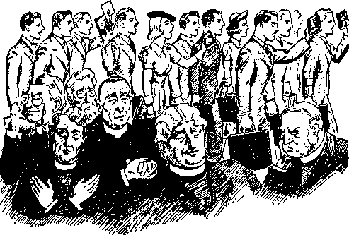opened his understanding religion, so far as he was concerned, was destroyed. (Galatians 1:1-14) Likewise immediately following the pouring out of the holy spirit on God’s devoted people in 1922 they were sent forth to declare the purposes of Jehovah, and the proclamation by them of God’s message was and since has been destructive to those who oppose the kingdom of God; and that destructive work will culminate when Jehovah’s “strange act” at Armageddon is performed. All who received the anointing of the holy spirit and who acted upon God’s command were completely separated from the worldly organizations in which religion rules. Every one of the anointed, being commissioned by the Lord to act in his name, must proclaim his message of truth, which is destructive to religion. In order to receive the approval of God all such must faithfully perform the terms of the commission and therefore make themselves the objects of reproach, hatred, and persecution by the enemy. Anointed and performing their duty as commissioned, and being in Christ Jesus, such anointed ones are “the feet” of Christ, joyfully carrying out God’s purpose to make known his kingdom. (Isaiah 52: 7) As Christ Jesus the Head suffered great reproach and persecution at the hands of religionists, even so now “the feet of Him” are subjected to like persecution.
The witnesses of Jehovah are not moved by the influence of any earthly person. They have no earthly leader or earthly king. They are the servants of Jehovah God by and through Christ Jesus, and Christ is their Head and King. The words of Jehovah, as recorded in the prophecy, are: “I will pour out my spirit”; that is to say, God’s holy power, upon all devoted to him to do the work of proclaiming his message to the nations. The pouring out of his spirit is first upon the Head, Christ Jesus, and through him His spirit is poured out upon the members of his body. (Psalm 133:2) Christ Jesus is the Head and Leader of all of such, and no man can teach or lead such commissioned ones. They are all one, led and taught by their Head: “But ye have an unction from the Holy One, and ye know all things.” “But the anointing which ye have received of him abideth in you, and ye need not that any man teach you; but as the same anointing teacheth you of all things, and is truth, and is no lie, and even as it hath taught you, ye shall abide in him.”—1 John 2:20,27.
ALL FLESH
What, then, is meant by the words of the prophecy, “upon all flesh”? Surely not, upon all the world of mankind, as has been stated by some in the past. When Jesus was present in the flesh God poured out his spirit upon Christ Jesus. (Matthew 3:16,17) The holy spirit could not be poured out upon others until after Jesus was glorified. (John 7: 39) The disciples had the promise of the holy spirit, and at Pentecost the holy spirit was poured out upon all the faithful disciples and others of the faithful ones then present who heard and believed and devoted themselves to Jehovah. (Acts 2:38) Next thereafter the holy spirit was poured out upon the Samaritans who had wholly devoted themselves to God and to his kingdom. (Acts 8:14-17) Later and in God’s appointed time his spirit was poured out upon non-Jews in the flesh who had devoted themselves to Jehovah and his kingdom. (Acts 10:44-46) The term “upon all flesh” certainly could not apply to anyone who opposes God and his kingdom.
Manifestly the meaning of the words “upon all flesh” is that God’s spirit is put upon all creatures who are in a fleshly organism and who have been begotten of God’s spirit after fully devoting themselves to him and showing their full faith and devotion to God and to his kingdom. When Christ Jesus came to the temple in 1918 he there began the trial testing and judgment of the consecrated ones. Those who passed that fiery test, proving their unselfish devotion to the Lord and his kingdom, received the Lord’s approval, and were brought into the temple and anointed by the spirit of Jehovah God being poured out upon all of them, and this while they are in the fleshly organism. Thus being brought into Christ and made a part of his organization, they were sent forth thereafter to “offer unto the Lord an offering in righteousness” acceptable unto him, and this they do, as stated by the Scriptures, by declaring God’s name and his kingdom.—Malachi 3:1-3; Hebrews 13:15.
RESULT
What is the result from the outpouring of the holy spirit? This question is answered in the prophecy: “And your sons and your daughters shall prophesy.” At Pentecost those words applied to the Jews, their sons and daughters, who had devoted themselves to God and his kingdom, because Peter, as well as the prophet Joel, addresses the message to “ye children of Zion”; “Israel . . . my people.” (Joel 2:23-27) The reference would therefore be to the antitypical Israelites at the time of the fulfillment in completion of the prophecy. Sons and daughters come after the parents, and therefore would picture the later or final ones forming God’s remnant, which are by the Lord brought into and made a part of “his faithful and wise servant” and to whom the Lord commits his kingdom interests on the earth. Being children, they would picture a physically and spiritually vigorous group, keen of mind, unselfish of heart, and actively pushing forward in the performance of their covenant and commission from the Lord.—Isaiah 44:1-8.
Further concerning them the prophecy says: “And they shall prophesy”; meaning, they shall preach the truth. The apostles in their day did thus prophesy. All the other anointed ones prophesied; that is to say, they preached or proclaimed God’s message relating to the future, as well as to the present time, and all did so under the power of the spirit of Jehovah. As it is written in prophecy: “Jehovah hath spoken; who [that is devoted to him] can but prophesy?” (Amos 3:8, A.R.V.) The effect is that all such serve as witnesses for Jehovah by keeping his commandments, publishing his name and his kingdom according to the terms of the commission given, and thus they prophesy or proclaim the name and kingdom of the Most High. After the coming of Christ Jesus to the temple and the building up of Zion all who are taken into the temple and who remain faithful must bear testimony to the name and kingdom of Jehovah. “And the Redeemer shall come to Zion, and unto them that turn from transgression in Jacob, saith the Lord. As for me, this is my covenant with them, saith the Lord: My spirit that is upon thee, and my words which I have put in thy mouth, shall not depart out of thy mouth, nor out of the mouth of thy seed, nor out of the mouth of thy seed’s seed, saith the Lord, from henceforth and for ever.”—Isaiah 59:20, 21.
CONTRAST
The effect of that temple judgment was exactly the contrary of the foregoing towards others, as the prophecy states: “Your old men shall dream dreams.” That would mean that the dreamers are not obeying God’s command. Such persons designated as “old men” have hard, fixed and closed minds and are therefore not teachable. Such persons conclude, and did conclude, as the facts show, that all of God’s truth was revealed through one man prior to October, 1916, and hence they refused to consider the revelation of God’s prophecy thereafter coming to those who serve him. Such “old men” retired from service in the field, took their ease and dozed and dreamed of the time when they might go to heaven and help administer the affairs there. They think more highly of themselves than they should think. All persons consecrated and who showed such a dreaming disposition at the time of the temple judgment were rejected by the Lord, as the prophecy shows, and all such persons as since then have been highly impressed with their own learning and greatness, and who have insisted on going their own way, have found themselves in the same class of the dreamers. That would mean that some who did receive the anointing, and who would not vigorously put forth an effort to fulfill their commission, will be relegated to the ‘dreamer’ class. The dreamers are in exact contrast with the “sons” and “daughters”. Such dreamers are great in their own estimation, and concerning such it is written: “Great men are not always wise; neither do the aged understand judgment.”—Job 32:9.
The dreamers, not willing to learn of God, set about to proclaim their own ideas, and follow their own way and become prophets of deceit; that is, they deceive themselves and deceive others who give heed to their oft-repeated dreams. They never get away from their religious habits, and they hold on to the traditions of men. Concerning such the Lord has said: “They are prophets [proclaimers] of the deceit of their own heart; which think to cause my people to forget my name by their dreams, which they tell every man to his neighbour, as their fathers have forgotten my name for Baal.”— Jeremiah 23: 2G, 27.
Then the Lord draws a clear contrast between the dreamer and those who are guided by his Word, when he says: “The prophet that hath a dream, let him tell a dream; and he that hath my word, let him speak my word faithfully. What is the chaff [dreams are here likened unto worthless chaff] to the wheat [God’s life-sustaining Word] ? saith the Lord.” “Behold, I am against them that prophesy false dreams, saith the Lord, and do tell them, and cause my people to err by their lies, and by their lightness; yet I sent them not, nor commanded them; therefore they shall not profit this people at all, saith the Lord.”—Jeremiah 23: 28, 32.
In view of these plain words of God’s prophet let the anointed beware of and avoid the selfconstituted wise men who think to exalt themselves by putting forth their own ideas or the traditional ideas of other men and who follow such and attempt to induce others to follow such dreamers.
STRONG
Those who really are devoted to God and his kingdom are by the prophet likened unto youngmen, to wit: “Your young men shall see visions.” Such are “strong in the Lord, and in the power [spirit] of his might”. (Ephesians 6:10) Furthermore it is written: “The glory of young men is their strength.” (Proverbs 20:29) The visions which such young men have are not delusions, but a keen insight into and an appreciation of God’s Word. They discern the fulfillment of his prophecy and see that through Christ Jesus the prophecies are being unfolded, Christ Jesus the Head of the temple being the immediate Teacher of the members of his body. For such the apostle prays, at Ephesians 1:17,18. Such young men see wonders, and have seen wondrous things in these “last days”, the meaning of which is revealed by the physical facts in fulfillment
of prophecy, which the Lord has brought to pass. After being thus anointed they discern the kingdom and that Christ Jesus is at the temple carrying forward his Father’s purposes. They see and keenly appreciate the prophetic dramas long ago made and recorded by the Lord, foretelling the promotion of the kingdom interest and disclosing what is shortly to follow. In all of this they give glory to Jehovah God and to the King and take no credit to themselves.
The language of the prophecy of Joel makes it clear and certain that all who receive the outpouring of the holy spirit and who continue to abide thereunder must be active in the service of God. Those upon whom the spirit of God is poured out through Christ Jesus are members of “the body of Christ”. (1 Corinthians 12:27) Is there a possibility of such falling away? The Lord Jesus says: “If a man abide not in me, he is cast [away].” (John 15: 6) Those who fail or refuse to bear the fruits of the kingdom, that is, to proclaim to others the life-sustaining truths of the kingdom, could not abide in the Lord; and concerning which Jesus said: “Abide in me, and I in you. As the branch cannot bear fruit of itself, except it abide in the vine; no more can ye, except ye abide in me.”—John 15: 4.
Surely this means that one might pass the test, enter the temple and receive the anointing, and then fail to carry out his commission, and fall and be cast away. In this connection note the words of Joel’s prophecy: “And also upon the servants and upon the handmaids in those days will I pour out my spirit.” (Joel 2:29) Peter, in quoting those words, said, as will be noted: “On my servants and on my handmaidens.” (Acts 2:18) The prophecy does not say: “Upon your servants and handmaids.” Clearly the purpose of the outpouring of the holy spirit is that those receiving it must be the servants of the Lord; which means they must serve him. Such must not be eye-servants to be seen of men, nor “men-pleasers”, but, “as the servants of Christ, doing the will of God from the heart.” (Ephesians 6:6) “As free, and not using your liberty for a cloke of maliciousness, but as the servants of God.”—1 Peter 2:16.
Undoubtedly this means that while some are assigned to one place of service, and some to another, each one must render service unto the Lord, and not unto men. Previous condition as to worldly position, education or reputation would make no difference, because all the anointed ones of the Lord are commissioned to render service to the glory of Almighty God and to his kingdom. _
Note further the words of the prophecy quoted by Peter which mark the time of the complete fulfillment: “I will pour out, in those days, of my spirit”; that is to say, after the coming of the Lord to the temple in 1918. This adds further proof that the pouring out of the spirit “upon all flesh” in completeness means that all creatures in the flesh who are devoted to Jehovah God receive the holy spirit and must thereafter be servants of God and faithfully continue to be such servants even to the end, and that all such collectively constitute the "elect servant’ or “faithful and wise servant”, to whom the Lord commits his kingdom interests on the earth.— Matthew 24:45-47.
WONDERS
The pouring out of the holy spirit prepared and equipped those servants to begin to carry on their work as servants and witnesses of Jehovah, and further shows that those who faithfully fulfill their commission by the grace of God would have a part in the wondrous things described, to wit: “And I will shew wonders in the heavens and in the earth, blood, and fire, and pillars of smoke.”—Joel 2: 30.
The anointed faithful ones themselves are wonders to many. Multitudes wondered at the apostles and others who received the holy spirit at Pentecost. (Acts 2:6-13) Says the Psalm, referring to the faithful ones of God: “I am as a wonder unto many: but thou art my strong refuge.” (Psalm 71:7) “Behold, I [Christ Jesus], and the children whom the Lord hath given me, are for signs and for wonders in Israel from the Lord of hosts, which dwelleth in mount Zion.” (Isaiah 8:18) “Hear now, 0 Joshua the high priest, thou and thy fellows that sit before thee; for they are men wondered at; for behold, I will bring forth my servant, The BRANCH.” (Zechariah 3:8) (See also Ezekiel 12:6,11; 24: 24-27.) Jehovah’s witnesses today under the Greater Moses, Christ Jesus, fulfilled the picture of the wonders performed by Moses and Aaron in Egypt. (Exodus 4: 21; 7: 3-9; Deuteronomy 4:34; 6:22) His witnesses in these latter days have been used by Jehovah in fulfillment of some of his wonderful prophetic dramas. Jehovah’s “strange work” on earth now is a wonder to many, and God’s people have a part therein.
As to seeing “wonders in the heavens”, as stated by the prophecy (Joel 2:30), Jehovah has opened the eyes of understanding or discernment of the faithful servant class to see the two great signs or wonders in the heavens, which John saw in symbol. “And there appeared a great wonder in heaven; a woman clothed with the sun, and the moon under her feet, and upon her head a crown of twelve stars. And there appeared another wonder in heaven; and behold a great red dragon, having seven heads and ten horns, and seven crowns upon his heads.” (Revelation 12:1,3) These signs or wonders are the great opposing organizations. The faithful servant class first began to see these “wonders in the heavens” in A.D. 1921, when The Watchtower for the first time gave publication concerning the Devil’s organization. {The Watchtower, 1921, pages 90,91) Then in 1925 The Watchtoiver published the evidence showing that God’s people saw these wonders beginning to take place in 1914.
As to the “wonders ... in the earth”, Jehovah has opened the understanding of his people to discern the earthly organization of the Devil, made up of religious, commercial and political elements, and has particularly pointed out the hideousness of the religious element. Also Jehovah shows his witnesses that he is using them in the earth, guiding them to do his work in having a part in pouring out the “seven last plagues” upon “Christendom” from and after 1922, and which plagues have tormented the enemy. These facts clearly fulfill the prophecy of Joel with reference to seeing wonders in the heavens and in the earth.
Further describing conditions that would obtain at the end of the world, Jesus says: “There shall be signs in the sun, and in the moon, and in the stars; and upon the earth distress of nations, with perplexity; the sea and the waves roaring; men’s hearts failing them for fear.” (Luke 21: 25, 26) The faithful servants of God not only have seen these wonders but have boldly declared the same to others.
Further describing the things to be seen by the faithful ones as wonders, the prophet says: “Blood, and fire, and pillars of smoke.” Poured-out blood is a symbol of death and that which is death-dealing. Such was foreshadowed when Moses poured out water in the land of Egypt and it became blood, and then he smote the waters of the Nile, which afterwards became bloody. (Exodus 4: 9; 7:15-25) The meaning of that sign was revealed to Jehovah’s faithful servants through the publication of The Watchtower in 1934. Blood was also symbolized in the events that followed the blowing of The second trumpet’ and the outpouring of the vials of wrath of Almighty God. (Revelation 8:8,9; 16:3,4; see also Light, Books One and Two) Thus was revealed that the waters of religion and commerce are death-dealing when viewed in contrast with the waters of light and truth which proceed from Almighty God.
Concerning “fire”, manifestly the fulfillment of this part of Joel’s prophecy is found in the fiery message of Jehovah God, which he has caused to be proclaimed throughout the earth, and particularly in the land of hypocritical “Christendom”. Jehovah’s witnesses, the faithful servant class, have been permitted to carry this fiery message among the people, and it has dreadfully scorched and burned the religionists: “Wherefore thus saith the Lord God of hosts, Because ye speak this word, behold, I will make my words in thy mouth fire, and this people wood, and it shall devour them.” “Is not my word like as a fire? saith the Lord; and like a hammer that breaketh the rock in pieces?” (Jeremiah 5:14; 23: 29) Again Jehovah’s witnesses, pictured by “the man clothed with linen”, are commanded to go into God’s organization and take the fiery message and scatter it over the city or land of “Christendom”; which has a destructive effect upon religion. (Ezekiel 10: 2, 7) That which followed the blowing of ‘the first trumpet’ was like a fire, by means of which the religionists were scorched.—Revelation 8: 6, 7.
As to the “pillars of smoke” (Joel 2: 30), those appear well to denote the “smoke of [the] torment” of the enemies of Jehovah, particularly of the leading religionists and their organization, and this because of God’s fiery message delivered amongst them. The Lord’s army of locusts have carried this fiery message amongst the religionists, and that fire has resulted in much smoke of torment to religious leaders. (Revelation 9:17,18) “The same shall drink of the wine of the wrath of God, which is poured out without mixture into the cup of his indignation; and he shall be tormented with fire and brimstone in the presence of the holy angels, and in the presence of the Lamb: and the smoke of their torment ascendeth up for ever and ever; and they have no rest day nor night, who worship the beast and his image, and whosoever receiveth the mark of his name.” (Revelation 14:10,11) The torment that Jehovah’s message brings to the religionists, particularly to the Roman Catholic Hierarchy, increases daily in these “last days”, and this is shown by their repeated howls and cursings. They are so scorched and stunned that they incite mobs to assault Jehovah’s witnesses, thus showing their anger against God and against his kingdom.
Furthermore “pillars of smoke” arising denote the expression of God’s wrath against those who persecute his faithful servants: “There went up a smoke [in his wrath] out of his [Jehovah’s] nostrils, and fire out of his mouth devoured ; coals were kindled by it. He bowed the heavens also, and came down; and thick darkness was under his feet.”—Psalm 18: 8, 9, R.V., margin.
Ever and anon in these “last days” God exhibits his wrath against his persecutors, but the complete expression of his wrath will be at Armageddon, and thereafter the smoke will ascend forever, denoting that the class consumed by the fire that made the smoke have ceased to exist for ever.
Following the outpouring of the holy spirit upon all flesh greater light was shed upon the anointed ones. Exactly the contrary came to the religionists and the “evil servant” class, and these found themselves in darkness: “The sun shall be turned into darkness, and the moon into blood, before the great and the terrible day of the Lord come.”—Joel 2:31.
The sun is the work of God and is the source of light by day for his earthly creatures. Only God can turn that great light into darkness. God expresses his anger against the enemy by bringing darkness upon them. “I form the light, and create darkness; I make peace, and create evil [calamity]. I the Lord do all these things.”— Isaiah 45:7.
The plague of three days’ darkness which God brought upon Egypt pictures Satan’s agents of this day in darkness. (Exodus 10:21-23) God makes known his displeasure with the enemy in these words: “Let their way be dark and slippery [darkness and slipperiness (margin)]; and let the angel of the Lord persecute them.” (Psalm 35:6) “But with an overrunning flood he will make an utter end of the place thereof, and darkness shall pursue his enemies.”— Nahum 1:8.
The spirit of God gives light, and the light God withholds from those who hypocritically claim to be his servants but who in fact are the servants of the Devil. All religionists oppose God and his purpose, and hence they are in darkness. Specifically the Lord names the “evil servant” class, which class at one time was in the light but now is ‘cast into outer darkness’. (Matthew 24:48-51) The kingdom light and truth, symbolized by the sun, God makes dark to the opposers, who have cast away his Word. All the physical facts show the fulfillment of this part of the prophecy in these latter days.
Only those who have the spirit of the Lord see and appreciate the kingdom, and all the others, particularly the religionists, oppose the kingdom, and hence they are in complete darkness.
The moon also is the handiwork of God, made to give light by night to his creatures. Turning the moon into blood could be done only by Almighty God, and such he does to show his displeasure toward his enemies. “The moon under [the] feet” of God’s “woman” is symbolic of his organization guided by his law. (Revelation 12:1) So Jehovah's provision is that his organization shall be guided in the right way. Those who have the spirit of the Lord are guided by his light into paths of righteousness, and they delight to do his will.
As to the enemy, they have no such light, but in darkness continue to oppose God. To the enemy the Scriptures are meaningless and are very dark. The present-day rulers of the earth get no aid or comfort whatsoever from the Bible. All the rulers hold to and practice some kind of religion, and God’s Word of light, which is his law, appears to the enemy as a dead and hideous thing, symbolized by congealed blood, and thus as to them the moon is turned into blood. The religious practitioners, particularly, and which includes the political leaders of the Roman Catholic Hierarchy, hate the truth, because to them it speaks bloody vengeance and destruction. (Deuteronomy 32:43; Matthew 23: 34, 35) To such enemy God’s King and kingdom are loathsome. Dictators look with horror upon God’s law, and hence the Hierarchy and other religious practitioners support the dictators and fight against the light of God’s Word, and bitterly oppose his kingdom. They do violence to those who bring his message of light and truth of the kingdom to the attention of the people. During the day of God’s “strange work” now in progress all things pertaining to the kingdom speak woe and death to the representatives of Satan’s agents on the earth. Here is further corroborative evidence that the day of Armageddon is near, because the darkness of the sun and the turning of the moon into blood, as shown by the prophecy, take place immediately “before the great and terrible day of Jehovah” coming.
Since 1925 particularly Jehovah’s witnesses have carried the kingdom message and placed it within the hearing of the people, which message tells of the day of vengeance of our God, and that it is very near. Such is their part in God’s “strange work”, and such work appears to the religionists as a very strange thing. This witness work must be done before Jehovah shows to the enemy his great power, which he will do at Armageddon. Causing his name and his kingdom to be proclaimed throughout the earth, Jehovah thus gives warning to the enemy and at the same time extends his mercy toward those practitioners of religion who have been and are deceived and held as prisoners in the religious organizations, and who unwittingly have walked with religionists. Now in this day Jehovah makes it clearly to appear that religion is doomed, and the sounding of such warning of doom provides the opportunity to all persons of good will to flee to the kingdom for protection before the wrath of God is expressed against Satan’s organization.
WHO MAY ESCAPE
To now be permitted to declare the name and kingdom of Jehovah and the approaching hour of his wrath upon all wickedness, is an unspeakable privilege granted to those upon whom he has put his spirit. The message boldly announces the supremacy of Jehovah, and this done in the midst of religious opposition makes it possible for those who hear and who obey to find protection and salvation; and this God foretold through the prophecy of Joel 2:32: “And it shall come to pass, that whosoever shall call on the name of the Lord shall be delivered: for in mount Zion and in Jerusalem shall be deliverance, as the Lord hath said, and in the remnant whom the Lord shall call.”
Necessarily it follows that whosoever shall not call upon the name of the Lord shall not be delivered. That makes it imperative for Jehovah’s witnesses to carry out their commission to proclaim his name, his kingdom and his vengeance at the present time.
When must one call upon the name of Jehovah, that deliverance may be had? Not after the battle of Armageddon begins, at which time all may discern by the natural sight of the eyes the expression of God’s vengeance against wickedness. Faith must be exercised by those who find protection. One must first believe that the Almighty God is Jehovah and that protection and salvation belong to him. (Hebrews 11:6; Psalm 3:8) He must believe that Jesus Christ is the Redeemer and Deliverer, and then take action in harmony with that belief. Otherwise the inherited condemnation abides on such one to destruction. (John 3:36) He must call upon the name of Jehovah before the battle of Armageddon begins; and this he must do by hearing, believing and acting upon the information of truth brought to him by those who are witnesses for Jehovah, and particularly those upon whom God has placed his spirit.
For this reason Jehovah sends forth his anointed witnesses to declare his name and his purposes: “How then shall they call on him in whom they have not believed? and how shall they believe in him of whom they have not heard? and how shall they hear without a preacher [one who bears testimony to the truth or proclaims the truth] ? And how shall they preach, except they be sent [which are sent by receiving the anointing of the spirit and commission from Jehovah to go and preach this gospel of the kingdom] ? as it is written, How beautiful are the feet of them that preach the gospel of peace, and bring glad tidings of good things!” (Romans 10:14,15) It is concerning these faithful witnesses that the prophecy is written: “How beautiful upon the mountains are the feet of him [Christ] that bringeth good tidings, that publisheth peace; that bringeth good tidings of good, that publisheth salvation; that saith unto Zion, Thy God reigneth !”-Isaiah 52:7.
It is now easy to be seen why the dictators demand that the people shall salute flags and hail men, and why the Roman Catholic Hierarchy join in such demands upon the people, and why they cause the legislative bodies to frame laws working mischief, and why the Roman Catholic Hierarchy demands that the people should hear nothing except what the Hierarchy tells them. The acts of the dictators and of the Roman Catholic Hierarchy and their other religious supporters are proof conclusive that such are the agents of Satan and are desperately attempting to turn the people away from Jehovah God and to prevent them from hearing of his name and his kingdom. The dictators and religionists have rejected Christ Jesus, Jehovah’s anointed King, the Ruler in the Theocracy. Every attempt is to turn the people away from the only possible means of protection and salvation. This is clearly shown by the Scriptures as well as the facts that have come to pass in recent years. Concerning the King it is written: “This is the stone which was set at nought of you builders, which is become the head of the corner. Neither is there salvation in any other; for there is none other name under heaven given among men, whereby we must be saved.”—Acts 4:11,12.
The dictators and religionists are would-be builders of earthly governments and insist on ruling in the place and stead of God’s kingdom. They definitely reject Jehovah’s King and kingdom, and hence upon them Jehovah’s wrath will shortly be expressed. Those who remain with the religionists are certain to go down in that great catastrophe of Armageddon. Those who will find protection and salvation must hear the truth before Armageddon and must obey the Lord by fleeing from religion and religionists and diligently seek protection under Christ Jesus. The great Judge and Executioner of Jehovah is the Lord Jesus Christ, and he is the only One: “One only is the lawgiver and judge, even he who is able to save and to destroy.” (James 4:12, A.11.V.) Let all who so desire to follow in the lead of the Roman Catholic Hierarchy and dictators, and who desire to bow down to them and hail men and salute flags, follow their own desire, but let such be fully warned of this: that only those who show their faith in God and his King, and who obey God and his King by acting before Armageddon as Rahab did, will find deliverance.—James 2: 24-26.
Organized religion began with Babylon, and ever since then the religionists and their organizations have been designated in the Scriptures under and by the name of “Babylon”. As God sent Jeremiah to warn those of Israel who were of good will that they might flee out of the Devil’s organization, so now he sends his anointed ones, accompanied by their companions, the Jonadabs, to give warning to all others who desire protection and salvation, and to those warned Jehovah now says: “Flee out of the midst of Babylon, and deliver every man his soul; be not cut off in her iniquity; for this is the time of the Lord’s vengeance; he will render unto her a recompence.” “My people, go ye out of the midst of her, and deliver ye every man his soul from the fierce anger of the Lord.”—Jeremiah 51:6,45.
This message must be carried to the people now, and upon every one who has received the anointing of the holy spirit God has placed the responsibility to participate in delivering that message. A failure or refusal to perform the commission thus given is certain to be disastrous to the ones thus failing or refusing.
In the typical days Jerusalem and Zion were located on adjoining mountains, and pictured the universal and the capital organization of Jehovah. Zion was a type of Jehovah’s capital organization, made up of Jesus Christ and the 144,000 members of his body, anointed by the holy spirit, and upon which mountain, anti-typically, now Jesus Christ and his body members stand, and there they are strongly fortified against the enemy. (Revelation 14:1,3) Those who will compose the “great multitude” are not pictured as standing upon Mount Zion. All persons of good will who flee to the mountains as commanded, and faithfully abide there under the protection of Christ until the end of Armageddon, will be delivered and will form the “great multitude”. “For in mount Zion and in Jerusalem shall be deliverance,” says the prophecy. Here the word “deliverance” means “an escaping”, and may properly be applied to the act of escaping and to those who do escape.— Isaiah 4: 3,4.
Jehovah’s provision for those of good will is by and through Christ Jesus, the Head of his organization Zion. “But upon mount Zion shall be deliverance, and there shall be holiness; and the house of Jacob shall possess their possessions.” (Obadiah 17) Mount Zion is the Theocracy or Kingdom, and deliverance shall be there because Jehovah God will fight for his organization, as it is written: “For thus hath the Lord spoken unto me, Like as the lion and the young lion roaring on his prey, when a multitude of shepherds is called forth against him, he will not be afraid of their voice, nor abase himself for the noise of them: so shall the Lord of hosts come down to fight for mount Zion, and for the hill thereof. As birds flying, so will the Lord of hosts defend Jerusalem; defending also he will deliver it; and passing over [covering it with complete protection] he will preserve it.” (Isaiah 31: 4, 5) Thus the Lord shows that protection and salvation come only from him by and through his royal organization. This he makes known for the benefit of the Jonadabs, or persons of good will.
Escape and deliverance shall be found in no other place than in the Lord God’s organization, “as the Lord hath said.” Repeatedly God has thus said by his prophets, the “holy men of old”. He has said it through Christ Jesus and his apostles, and now he uses the remnant, or the anointed ones, to bring this message to the attention of the people of good will. All of these, from the faithful men of old to and including the remnant, have been and are witnesses to the name of Jehovah and his purpose. The remnant now bear this message which the Lord has said, and they must continue to carry that message to the people, because that is the purpose of their anointing.
The prophecy of Joel 2:32 shows that the remnant constitute a part of Jehovah’s capital organization Zion, concerning which it is written : “And in [ (R.F.) among] the remnant whom the Lord [doth] call.” Furthermore this makes clear that those “other sheep” who do escape and find refuge must now hear the message of and concerning the kingdom, must believe it, and must seek the Lord, and must take their place among those of the remnant and become companions of the remnant in the service. This part of the text according to Rotherham says: “And among the survivors whom Jehovah doth call.” The survivors of the remnant, of course, must abide in the organization in order to find protection and salvation. The remnant Jehovah has called from all nations to be witnesses for his name, and upon such he has poured out his spirit. Prior to 1919 many of these were held in prison to the enemy organization, and the Lord called them out and sent them forth as his commissioned witnesses. These witnesses, in order to maintain their integrity, must be faithful in the performance of the commission which Jehovah has issued to them, and therefore they must give great diligence in proclaiming the name and purpose of Jehovah, the great Theo-crat. Faithfulness in such performance of duty necessarily exposes religion and religionists, and for this reason great persecution is heaped upon Jehovah’s witnesses by the religionists.
Furthermore for the encouragement, comfort and hope of those who have received the anointing of the holy spirit, and who therefore constitute the duly commissioned servants of Jehovah in these “last days”, they must keep in mind always this fact, that such anointed ones constitute God’s “locusts”, which he calls his “great army” (Joel 1:4; 2:11, 25); and that these are sent into the field of warfare there to have part in “his work, his strange work”. Jehovah has pronounced his judgment of doom and. everlasting destruction upon religion and religious practitioners. It follows that the religionists, particularly the leaders thereof, will fight Jehovah’s witnesses to the bitter end. The prophecy shows that many of the leaders will hide behind walls and induce their dupes to go forth and fight Jehovah’s witnesses. Nothing else should be expected than increasing opposition from the enemy from this time forward. Jehovah therefore says to his people that this will be true, and he also says that in this fight the enemy shall suffer complete defeat and destruction: “And they shall fight against thee, but they shall not prevail against thee; for I am with thee, saith the Lord, to deliver thee.”—Jeremiah 1:19.
It was in the year 1918 that the then faithful ones were gathered to the temple and received the outpouring of the holy spirit. Those who since that have been brought into the body of Christ have also received the outpouring or anointing of the holy spirit by and through Christ Jesus, the Head of Zion. Mordecai and Naomi pictured the first-mentioned class, while Esther and Ruth pictured the latter ones. All these together make up the “faithful and wise servant” class, to whom the Lord Jesus has committed his kingdom interests on the earth. They must faithfully promote such kingdom interests at all times. Because of their faithfulness in performance of their duty in fulfillment of their commission they are the objects of reproach and persecution at the hands of the religionists. But let all of the anointed, together with their companions, now be of good courage as they study the remaining portion of the prophecy of Joel and discern God’s purpose to dispose of the enemy, and to give complete protection and salvation to those who love him.
CHAPTER X
JEHOVAH makes it clearly to appear that he always squares the account with the enemy. For a long period of time God permits the enemy to carry on without let or hindrance and then Jehovah chooses his own due time to fully pay the enemy for all they have done. The present time is the day of Jehovah and the time when his faithful witnesses must declare the “vengeance of our God”. This must be done before the pay-off. The religionists now make a great controversy with Zion, God’s capital organization, which is represented on the earth by the faithful witnesses of Jehovah, and so Jehovah says: “It is . . . the year of recompences for the controversy of Zion.” God first informs his faithful servants of his purpose to duly recompense the enemy, and then he sends his witnesses forth to serve notice on the enemy that within a short time God will destroy them.— Jeremiah 51: 6, 56; Isaiah 34: 8.
Today “Catholic Action” is extremely vicious within every part of “Christendom”. The Roman Catholic Hierarchy-Nazi combine, in their bitter opposition to the Theocracy, make war upon Jehovah’s witnesses. By threats and by the practice of boycott against the commercial dealers the men of the Hierarchy get themselves exalted and praised by the newspapers, and this 275 at the expense of others. The Hierarchy try to make themselves and others believe that they are actually riding on the top of the world and that they shall rule the world in the place and stead of God’s King, Christ Jesus. The clergy are proud, boastful, arrogant and cruel, ami at the same time they show their cowardice. Unable to longer hide from the honest people their practice of a religious racket, the clergy send out the vicious young Nazi element to commit assaults upon Jehovah’s witnesses. The real criminals, guilty of such vicious assaults, are the higher-ups of the Hierarchy. They think out the means of performing wicked deeds and have others to do such deeds for them. They think they can get away with their wicked deeds committed against those who serve God and his King. In his due time the Lord God will take a hand and bring down that self-exalted Hierarchy; nor will the religious racketeers come to their end in peace, but their end will be in war at the hand of Christ the King.
King David was a type of the Lord Jesus Christ. It is written of David that the word of God was in his mouth and that he spoke as the spirit of God directed him. (2 Samuel 23:2) The “serpent” breed of Saul pictures the religionists, and that enemy had cruelly fought against David, the Lord’s anointed. In his last days David gave to Solomon the charge that he should duly recompense those who had persecuted him and carried on a campaign against David, and which cruel campaign pictured what today is called “Catholic Action” against Jehovah’s anointed ones now on the earth. David named some of the leaders of that wicked campaign against him and their specific deeds of wickedness, and among which was Joab. Concerning him David said: “Do therefore according to thy wisdom, and let not his hoar head go down to the grave in peace.” (1 Kings 2:6) Shimei cursed and assaulted David, even as the Hierarchy and their deluded agents have cursed and assaulted Jehovah’s witnesses. Shimei means “renowned”; even as the big men of the Hierarchy now are renowned. Both Shimei and the Hierarchy are the seed of the Serpent. The prophet of Jehovah said of that wicked persecutor Shimei, and which words of the prophet apply with even stronger force to the wicked Hierarchy, to wit: “Now therefore hold him not guiltless; for thou art a wise man, and knowest what thou oughtest to do unto him; but his hoar head bring thou down to the grave with blood.” (1 Kings 2:9) As the Lord through David directed Solomon what to do, he thus foreshadows what He will shortly bring to pass with reference to the Catholic Hierarchy and wicked allies.
The Hierarchy and Nazi combine have heaped affliction upon Jehovah’s witnesses, committing many cruel deeds of wickedness against them, and they continue to do so. So concerning them the Lord says: “And shall not God avenge his own elect, which cry day and night unto him, though he bear long with them? I tell you that he will avenge them speedily. Nevertheless, when the Son of man cometh, shall he find faith on the earth?”—Luke 18: 7, 8.
Jehovah now by revealing the meaning of the prophecy of Joel to his people informs them of his purpose toward the enemy. Furthermore, with reference to the just recompense that God will visit upon the Hierarchy, the leaders of the religious organization and religious persecutors which compose the Devil’s organization called “Babylon”, the Greater David, Christ Jesus, says: “For her sins have reached unto heaven, and God hath remembered her iniquities. Reward her even as she rewarded you, and double unto her double according to her works; in the cup which she hath filled, fill to her double. How much she hath glorified herself, and lived deliciously, so much torment and sorrow give her; for she saith in her heart, I sit a queen, and am no widow, and shall see no sorrow.” (Revelation 18:5-7) Such is the judgment of Jehovah written against that wicked, religious crowd that has defamed his name. Let the faithful followers of Christ Jesus now know that these things were written in the Scriptures for the information, aid, comfort and hope of those who now proclaim the theocratic government while the enemy heaps upon them great persecution. (Romans 15:4) Jehovah’s witnesses in Germany and other places have suffered and continue to suffer at the hand of the Nazis and Hierarchy conspirators; but let such faithful followers of Christ continue for a little season, fully trusting in God. He will square the account and see to it that those religious conspirators shall not go down to the grave in peace. What follows in the prophecy of Joel discloses what Jehovah will do to the religious conspirators who fight against his witnesses and his government by Christ the King. First God informs his people what he purposes to do, and then discloses to them how he will do it.
From 1918 onward is the period known as “those days” and “that time”, which words are used by the prophet; and it is the time in which the Lord gathers unto himself his people, anoints them, commissions them and sends them forth to do his work, and within that time God also assembles the enemy, gives them notice and warning, and then administers a just recompense of reward; and therefore he says through his prophet: “For, behold, in those days, and in that time, when I shall bring again the captivity of Judah and Jerusalem.” (Joel 3:1) Particularly since 1922 the Lord has brought out of captivity those of “Judah” and “Jerusalem” and has put them to work.
In this part of the prophecy Jehovah foretells that in “those days” when he pours out his spirit upon his people he calls upon the remnant to come to Zion to be anointed and commands them to have a part in his work, as mentioned in Joel 2:29. At that time, that is, after the Lord appears at the temple for judgment, he brings his faithful people out from Satan’s organization and sets them free from fear of Satan’s crowd that they may boldly and fearlessly serve God and his King. This is the first time the prophecy of Joel mentions the captivity of God’s remnant, the faithful oppressed ones who, after 1918, were brought out of captivity for a purpose, and concerning which faithful ones God, by his prophet, declares: “Thus saith the Lord of hosts, The children of Israel and the children of Judah were oppressed together, and all that took them captives held them fast; they refused to let them go. Their Redeemer is strong; the Lord of hosts is his name; he shall thoroughly plead their cause, that he may give rest to the land, and disquiet the inhabitants of Babylon.” (Jeremiah 50: 33, 34) This shows that the Lord Jesus Christ, the Field Marshal of Jehovah who commands His warriors, comes forth fully prepared for war when a just recompense shall be ministered unto the enemy.
Jehovah then begins to maneuver the enemy into a position for their destruction, and these who compose the enemy on earth are gathered from all the nations. “I will also gather all nations, and will bring them down into the valley of Jehoshaphat, and will plead with them there for my people and for my heritage Israel, whom they have scattered among the nations, and parted my land.”—Joel 3: 2.
All parts and all elements of Satan’s visible representatives are gathered. This prophecy is further corroborated by the testimony of another prophet of Jehovah, to wit: “Therefore wait ye upon me, saith the Lord, until the day that I rise up to the prey; for my determination is to gather the nations, that I may assemble the kingdoms, to pour upon them mine indignation, even all my fierce anger; for all the earth shall be devoured with the fire of my jealousy.”— Zephaniah 3:8.
The gathering work of the Lord begins after the outpouring of the holy spirit upon his approved ones. The facts show that this has been done since 1922. How is the gathering done? Jehovah sends forth his duly commissioned witnesses to declare (and who do declare) his message of vengeance, that his time of final settlement of the account which will vindicate his name is come. He also causes his witnesses to proclaim that his anointed King and his kingdom are come. Instead of compromising with the Devil’s organization the faithful witnesses under the command of Christ Jesus serve notice that within a short period of time the Lord will cut the enemy to pieces.
The inevitable effect of the proclamation of God’s message aforementioned is to expose the Catholic Hierarchy and their religious allies, clearly disclosing that religion is a fraud and a snare and the means of carrying on a racket by those who are agents of the Devil, and which crowd defame Jehovah’s name and turn the people into the way of destruction. Stung by God’s message of truth, the Hierarchy and agents urge all the nations and the ruling element thereof, as well as the hoodlums, to join in a world-wide conspiracy against the witnesses of Jehovah and hence against the Theocracy. The Hierarchy of Authority joins dictators of totalitarian governments in an effort to crush the witnesses who boar testimony for Jehovah’s kingdom. The complete proof of this conspiracy against Jehovah’s King and kingdom is daily brought to light. For instance, a Catholic priest, in a radio speech, recently said: ‘If the American people would stand up on their hind legs they could destroy Jehovah’s witnesses within an hour.’ That priest is the agent of the Papacy, acting with the full approval of the pope and the others of the Hierarchy, even though the Hierarchy tries to hide this fact. In its efforts to hide the truth of its relationship to this priest the Hierarchy resorts to lies, even as the Lord Jehovah foretold in Isaiah 28:15. The ambition of that radio priest is to be the dictator of America when the Papacy takes over the control of the American nation. Similar programs are progressing in other nations of the earth. Thus the enemy are playing right into the hand of Jehovah’s Executioner, Christ Jesus, that they may be destroyed at Armageddon.
The enemy forces must be brought to the site of battle, and therefore says Jehovah: “1 . . . will bring them down into the valley of Jehoshaphat.” The enemy must be brought there in order to see and be convinced that Jehovah is supreme and the One whose power must prevail against the totalitarian rulers and all other parts of Satan’s organization, all of which oppose the Theocracy. The enemy forces are not brought down to the so-called “valley of Jehoshaphat” which is shown in the maps of modern days. The Bible expression “valley of Jehoshaphat” does not apply to such literal valley. This statement of Joel is the only place in the Bible where the expression “valley of Jehoshaphat” occurs, and it is certainly symbolic and refers to the same thing pictured by the valley where Moab, Ammon and the hordes of Mount Seir fought it out and were destroyed. (2 Chronicles 20) Thereafter King Jehoshaphat called that place “the valley of Berachah” because there his people blessed the name of the Lord for the vindication of His name, which He had done by the complete destruction of the enemy. (2 Chronicles 20: 26) The name “valley of Jehoshaphat” means “Jehovah judged” or “Jehovah vindicated” and shows that the battle site refers to the time of the complete vindication of his name by his anointed Vindicator, Christ Jesus, the great Judge and King.
Further says the prophecy: “And [I] will plead with them there for my people.” The pleading here named does not mean that it will be done by petitions, protest, warning, or other means employed by Jehovah’s witnesses during the period of his “strange work”. It means much more than that. When the pleading here mentioned takes place the “strange work” of Jehovah will have been completed. The Hebrew word here rendered “plead” is shaphat, and which word is a part of the name of the valley of Jehoshaphat. This is proof that the valley is symbolic and does not refer to the valley of Palestine where the Jews buried their dead, but is symbolically applied to the time and place when Jehovah will perform his “strange act” resulting in the complete destruction of the enemy.
God does not plead for “Christendom”, but his pleading act is in behalf of his people who bear his name, to wit, the faithful servants of the Most High. At Armageddon Jehovah will deal with all nations and peoples and will cause them to know and fully realize that the faithful witnesses whom he has anointed are truly his own people who serve him without compromise. He will show the nations that Jehovah’s witnesses, whom the religionists and allies hate and denounce as unpatriotic and against whom the enemy applies many wicked epithets, are truly God’s anointed ones who bear his holy name and who now represent him on the earth.
The people in whose behalf Jehovah pleads, as the prophecy says, are “my heritage”. Such are the 144,000 members of the body of Christ and are the ones that Jehovah inherits of the earthly people; that is to say, Jehovah takes them out from and away from the earth and they are his firstfruits and rightly belong to him, and he takes them for his service in heaven with Christ Jesus. Concerning this it is written: “And I looked, and, lo, a Lamb stood on the mount Sion, and with him an hundred forty and four thousand, having his Father’s name written in their foreheads. And I heard a voice from heaven, as the voice of many waters, and as the voice of a great thunder; and I heard the voice of harpers harping with their harps; and they sung as it were a new song before the throne, and before the four beasts, and the elders; and no man could learn that song but the hundred and forty and four thousand, which were redeemed from the earth. These are they which were not defiled with women; for they are virgins. These are they which follow the Lamb whithersoever he goeth. These were redeemed from among men, being the firstfruits unto God and to the Lamb.” (Revelation 14:1-4) These faithful ones being God’s “firstfruits” and his “heritage”, no one can with impunity touch them or use them for selfish purposes. Any creature or class of creatures that try to destroy Jehovah’s anointed people shall bring upon their heads their own destruction. These great truths the nations must learn when at Armageddon Jehovah pleads for his people, and that is the time he will vindicate his name and his people who bear his name.
God declares his purpose to have in mind at Armageddon his people whom the enemy has persecuted and do persecute, and this is seen when he says: “Whom they [the enemy] have scattered among the nations, and parted my land.” During the World War the religious enemy and allies broke up the world-wide work of Jehovah’s people operating together as a Society. The enemy did not then want to believe that these faithful Christians were Jehovah’s servants and representatives on the earth. The enemy do not believe it now, because they continue in their efforts to destroy Jehovah’s witnesses and the work in which they are engaged. A striking example of the enemy’s efforts was made manifest on June 25, 1939. Madison Square Garden was the key assembly point from which originated the program of Jehovah’s witnesses which throughout the English-speaking part of the world was heard by other assemblies. The enemy made a desperate effort at New York and at London and at other places to break up that convention of God’s people, but, by God’s grace, the enemy did not succeed. True to his promise, “they shall fight against thee, but they shall not prevail against thee; for I am with thee, saith the Lord.” (Jeremiah 1:19) God thus put his hand over his servants and over the work they were doing.
Now the Lord has gathered his people into his spiritual temple by Christ Jesus, and henceforth no matter what the totalitarian nations made up of religionists and dictators may do to the physical body of the various members of the temple company, or to their material possession, the enemy cannot put the anointed out of the temple or break up their spiritual unity in Christ Jesus their Head. He who is The “Faithful and True” Servant of the Most High will defend those who are with him. The vicious acts of the enemy toward Jehovah’s witnesses increase constantly. Such vicious acts of violence are incited by the clergy or leaders amongst the religionists, and it is to be expected that such acts of opposition and violence will increase until Armageddon. The Scriptures show that, immediately before Armageddon begins, the Devil’s host will, by Gog, the field marshal of Satan, come against all those who are on the side of Jehovah in an effort to destroy those faithful to the Lord and that such horde of wicked ones will not succeed in their efforts, but, on the contrary, Christ will gain the victory over them.—Ezekiel chapters 38 and 39.
RESISTANCE
Shall the people of Jehovah God resist with force the efforts of Satan’s agents to prevent the forward work of proclaiming the message of the kingdom? If that question is answered in the affirmative, how can such course of action be harmonized with the scriptures which follow: “For the weapons of our warfare are not carnal, but mighty through God to the pulling down of strong holds”? (2 Corinthians 10:4) Religionists, particularly the Roman Catholic Hierarchy, in an effort to make the people acknowledge and obey their religious tenets, have used and continue to use and employ force and violence. All who will not become religionists and support the Roman Catholic Hierarchy are denounced as heretics, and says the Roman Catholic Hierarchy, “The killing of heretics may be rightly done by Catholics whenever Catholics are strong enough.” During the Inquisition the Hierarchy employed carnal weapons to compel the people to become submissive to the Papacy and practice the Hierarchy's religion, and many people suffered cruel punishment and the destruction of their property and life because they refused to obey the demands of the Hierarchy to become Catholic.
In contrast to such wicked action the apostle Paul, under inspiration of the holy spirit, points out what is the proper course for God’s servants. Jehovah’s witnesses now go forth to preach the truth of God’s kingdom, and not to compel anyone to accept that truth. They place the message of the kingdom before the people, and it is the privilege of the people to accept it or reject it. They are commanded that in doing their work they shall not employ carnal weapons, as the Catholics have repeatedly done to make others accept their doctrines. The weapons of God’s people consist of “the sword of the spirit, which is the Word of God”, and which is mighty to the pulling down of strongholds. The words of the apostle, therefore, apply strictly to the means of carrying on their work of preaching this gospel of the kingdom. Jehovah’s witnesses are messengers of peace, telling forth
the purposes of God, and they have no need of carnal weapons to compel the people to hear the Word of God.
Another scripture that is often used in this connection is this, spoken by Jesus: “But I say unto you, That ye resist not evil; but whosoever shall smite thee on thy right cheek, turn to him the other also.” (Matthew 5: 39) “Evil” is properly defined as that which brings just punishment upon the wrongdoer. God says: “I . . . create evil.” (Isaiah 45:7) All of God’s creation is right and perfect, and therefore “evil” here used is far different from wickedness. (Deuteronomy 32:4) The law covenant of God with Israel inflicted just punishment upon the violators of that covenant, and that punishment was evil to the Israelites justly administered. Jesus was addressing the Israelites, and his language employed at Matthew 5:29-42 surely does not literally mean that a man should pluck out his physical eye or cut off his hand. His speech was used symbolically. Jesus used figures of speech in pointing out to the Israelites what was and should be their proper attitude toward their adversary, that is to say, the law covenant. As further proof of this Jesus said: “Agree with thine adversary quickly, whiles thou art in the way with him; lest at any time the adversary deliver thee to the judge, and the judge deliver thee to the officer, and thou be cast into prison.”—Matthew 5: 25.
If one suffered from his adversary, the law covenant, that was evil which proceeded justly from God and was not to be resisted, but, in further corroborative phrase, the Lord Jesus
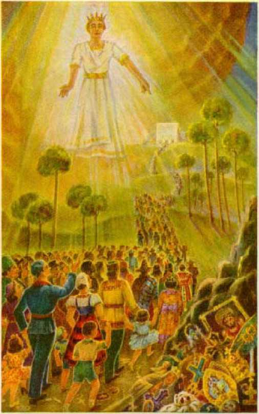Hoping Ih lhf> Kingdnu]
Pa^e 2 72
* I,

Safely Paje 354
said: ‘If the wrongdoer was smitten upon one cheek, he should even turn the other and receive a just smiting, rather than to resist; thus he would show his submissiveness to the will of God.’ All the scriptures are consistent, and none are contradictory. The words of the foregoing text (Matthew 5: 39) could not be literally applied to such as Joshua, who led the army of Israel against the enemy, and many other like instances which are recorded in the Bible. Jesus, in speaking of being smitten on the cheek, was addressing his words specifically to the Jews who were under the law covenant and which law covenant was their adversary to keep them in line and punish them when they violated the terms of the covenant. The non-resisting of evil, as those words were used by the Lord Jesus in addressing the Israelites, therefore, could not mean that God’s people are to willingly submit to a beating at the hands of others who assault God’s servants while they are preaching the gospel of the kingdom. Jesus had no reference to such when thus addressing the Israelites; rather his words must mean that if evil comes upon those in the covenant from the adversary, the law covenant, they must not resist, but receive the same as a just punishment from the Lord, and to further prove their willingness they must go the limit of their ability in obeying their lawful adversary. In support of this note the context, to wit: “And if any man will sue thee at the law, and take away thy coat, let him have thy cloke also. And whosoever shall compel thee to go a mile, go with him twain.” (Matthew 5:40,41) Note here also that Jesus said nothing about resisting wickedness. One who assaults the servant of the Lord in the performance of his duty is acting wickedly.
When Jesus was arrested Peter cut off the ear of one of the high priest’s servants and Jesus commanded Peter to put up the sword: “And, behold, one of them which were with Jesus stretched out his hand, and drew his sword, and struck a servant of the high priest’s, and smote off his ear. Then said Jesus unto him, Put up again thy sword into his place; for all they that take the sword shall perish with the sword. Thinkest thou that I cannot now pray to my Father, and he shall presently give me more than twelve legions of angels ?”—Matthew 26: 51-53.
Note the reason why. It was not the proper time to engage in physical combat, because Jesus’ time had come for him to be taken. Before Pilate Jesus said: “My kingdom is not of this world; if my kingdom were of this world, then would my servants fight, that I should not be delivered to the Jews.” (John 18:36) “This world,” as here used by Christ Jesus, would mean this wicked world over which the Devil is the god and which Jesus was not permitted to interrupt until God’s due time, in 1914, when Jehovah sent him forth to rule. The clear inference to be drawn from the words of Jesus here is, there would in the future be a proper time to fight, but Jesus must wait until that due time fixed by Jehovah, and then he will fight to a finish. (Psalm 110: 2, 6; Revelation 19:11-20) There is a time for everything. “A time of war; and a time of peace.” (Ecclesiastes 3:1-8) The foregoing scriptures do not moan that the Christian can with impunity go about hunting trouble and getting into a fight; nor do they mean that the Christians must willingly permit the agents of Satan to destroy their efforts to preach God’s kingdom message.
DEFENSE
Do the Scriptures approve of a Christian’s defending himself against an unlawful assault and using force to repel such assault? Self-defense is the right of every man to ward off an attack and to use such force as to him appears to be necessary to safeguard himself from personal injury or injury to his property. The same right of self-defense may be exercised by him for the protection of his near relations or close friends, his brethren. Such is the law of the nations or states, but that law does not rest upon tradition, nor upon the conclusions of men alone, but finds complete support in the Word of God.
Moses saw an Egyptian smiting his Hebrew brother, and Moses, to protect his brother from such assault, slew the Egyptian. (Exodus 2:11,12) Moses fled from Egypt that the Egyptians might not kill him. Moses did not receive any punishment or even a rebuke from Jehovah God for what he had done. Afterwards God specifically used Moses to do and perform service particularly picturing Christ Jesus the Messiah and his work. God also made Moses his prophet and used him to write the first five books of the Bible. Since then every nation has invoked the law of self-defense, extending that right of self-defense to the protection of near-of-kin.
The law of self-defense is further emphasized by what is written in the Scriptures which show that it is right and proper for Jehovah’s servants to prepare in advance for self-defense. Nehemiah, the approved servant of Jehovah God, led a company of his brethren, whom Jehovah brought forth from captivity and sent to rebuild the walls of Jerusalem. When those faithful men in obedience to God’s commandment began the building of the wall, Sanballat (picturing the religious leaders who oppose God’s kingdom) and his followers made repeated threats against Nehemiah and his brethren, which threats were brought to the attention of Nehemiah. Then Nehemiah prayed to God, and this was his prayer: “Hear, O our God; for we are despised: and turn their reproach upon their own head, and give them for a prey in the land of captivity; and cover not their iniquity, and let not their sin be blotted out from before thee: for they have provoked thee to anger before the builders.”—Nehemiah 4:4, 5.
The enemy had conspired together to fight against Nehemiah and his brethren; as it is written : “But it came to pass, that when Sanballat, and Tobiah, and the Arabians, and the Ammonites, and the Ashdodites, heard that the walls of Jerusalem were made up, and that the breaches began to be stopped, then they were very wroth, and conspired all of them together to come and to fight against Jerusalem, and to hinder it.” —Nehemiah 4:7,8.
Did Nehemiah instruct his brethren to willingly permit themselves to be smitten on one cheek and to then turn the other cheek and ask to be smitten on that also ? Did Nehemiah tell his brethren to quit work and hole up to safeguard themselves from the attacks of the enemy? He certainly did not, but made ready for selfdefense, and his answer is written in the Scriptures, to wit: “Therefore set 1 in the lower places behind the wall, and on the higher places, I even set the people after their families with their swords, their spears, and their bows. And I looked, and rose up, and said unto the nobles, and to the rulers, and to the rest of the people, Be not ye afraid of them: remember the Lord which is great and terrible, and fight for your brethren, your sons, and your daughters, your wives, and your houses.”—Nehemiah 4:13,14.
In order that the Jews might work and that they might not be stopped in their work by reason of the enemy’s assaults, Nehemiah further says, “they which builded on the wall, and they that bare burdens, with those that laded, every one with one of his hands wrought in the work, and with the other hand held a weapon. For the builders, every one had his sword girded by his side, and so builded. And he that sounded the trumpet was by me.”—Nehemiah 4:17,18.
Surely the Jews did not have those swords there merely as a bluff, but to be used when necessary to protect themselves and to prevent the enemy from interfering with the work which God had commanded them to do. Can anyone successfully contend that the enemy of God’s kingdom can compel the servants of God to now cease their work which God has commanded them to do in order that they might avoid trouble? Did not Jesus command that they must go forward with their work without regard to threats and without fear of those who might kill their physical body? (Matthew 10:28) The watchfulness of Nehemiah and his brethren, who even slept with their clothes on in order to be ready, is a striking example for those to whom the Lord has committed the kingdom interests at the present time.
Again the Lord God approves the use of force to be applied against one “breaking up” that which does not belong to the "breaker-up’: “If a thief be found breaking up, and be smitten that he die, there shall no blood be shed for him.” (Exodus 22: 2) One who attempts to commit an unlawful act against another may be dealt with, and against such wrongdoer such degree of force may be used by the one assaulted as may to him appear to be necessary to protect his property or himself or kin from an assault of the wrongdoer. Jesus used whips to drive the disorderly ones out of the temple, and he did not invite them to smite him on the cheek.—John 2:15.
Now Christ Jesus, the antitypical Moses, is present. His kingdom is come. He sends forth his representatives under command to proclaim “this gospel of the kingdom”. No one has the right to interfere with the execution of that command. Even the law of the land provides that when one unlawfully attempts to ""break up” a meeting or assembly of people who have come together to hear proclaimed the Word of God such disturber or ‘breaker-up’ is guilty of a misdemeanor and may be dealt with accordingly.
On the 25th of June, 1939, approximately 20,000 people assembled peaceably and lawfully at Madison Square Garden, New York, to hear proclaimed the message of God’s Word concerning his kingdom. Persons who oppose God’s kingdom had repeatedly made threats that they would break up that assembly, and these threats had been brought to the attention of the Lord’s people. Even the police officers had been notified of such threats. On the day of the meeting several hundred of such wicked ones entered the Madison Square Garden meeting after the program had begun, and made a violent attempt to “break up” that meeting. Ushers, whose assigned duty was to keep order, commanded the disturbers to stop their disturbance or else leave the building. Instead of complying with that request the disturbers violently assaulted the ushers. Some of the ushers in the exercise of their God-given and lawful rights resisted such assaults and used reasonable and necessary force to repel such wrongful assaults. In doing so the ushers acted strictly within their rights and in the performance of their duty and certainly have the approval of the Lord in so doing. The ushers were not using carnal weapons in order to preach the gospel, but they were using force to compel the enemy to desist in efforts to prevent the preaching of the gospel.
ADMONITION
In the exercise of self-defense caution must be strictly observed and no one should act hastily and without warrant. Christians must obey the law. They must not use physical force in repelling an assault unless it appears to them as reasonably necessary for their own protection and the protection of their brethren and of their property or work. The Christian should do what he can to avoid physical combat and should never seek physical combat. But when, in the lawful performance of his duty, a Christian is attacked by the enemy and the enemy attempts to destroy the Christian’s property or to violently assault the Christian, then the Christian may use such force as at the time appears to him to be necessary to ward off such an assault. When going about in the service of the Lord, and by distributing literature pertaining to his Word or in performing other like and proper service, if Jehovah’s witnesses are attacked by a mob, and if it appears necessary that such witnesses employ force to repel or ward off such assault, then they may properly use such force as to them appears to be necessary for their protection or defense of themselves and their property. They should employ physical force only as a last resort for their self-protection against the wrongdoers. But no one, because he is a Christian, is compelled to willingly and without resistance submit to an attack of a ruffian or others who attempt to prevent him from going lawfully about his work of preaching the gospel. This gospel of the kingdom must be proclaimed, and it will be proclaimed. God has warned his people that the enemy will fight against them, and has plainly told them that the enemy shall not prevail. Hence they should go forward without fear in the performance of their duty, exercising their lawful rights.
If an officer of the law in the exercise of his official duty places a Christian under arrest, then the person so arrested should not resist the officer but should go quietly with the officer and await the proper time to have a hearing and make his defense before the properly constituted tribunal. Such course is acting in an orderly and proper manner. The officer may have no right to arrest the Christian or interfere with his work, but the officer is acting in behalf of the state and there is a proper place to determine the question as to whether he is right or wrong.
When Christians are assembled together to hear discussed the Word of God or to study the Word of God no one has the right to attempt to break up that assembly, and when any person or crowd of persons attempt to do so they may properly be resisted and dealt with, and in so resisting them such physical force may be used against the disturbers as may to the ones peaceably assembled appear to be reasonably proper. At Madison Square Garden meeting a crowd of lawless men entered for the expressed purpose of breaking up the meeting. They started a riot without any excuse. One of the rioters struck an usher a terrific blow on the head, and that assault was resisted. Then the wife of that rioter rushed forward and grabbed the usher by his secret parts. God foreknew that the Devil would put in operation such wicked tactics, and he made provision in his law for such, and which law of God reads: “When men strive together one with another, and the wife of the one draw-eth near for to deliver her husband out of the hand of him that smiteth him, and putteth forth her hand, and taketh him by the secrets; then thou shalt cut off her hand, thine eye shall not pity her.”—Deuteronomy 25:11,12.
Although complaint was made against this woman, she was not arrested. All of God’s laws are just and right, whereas the law of nations and the enforcement thereof often comes short of what is just and right. We must let the Lord properly recompense such wrongdoers. Jehovah’s witnesses and companions are here admonished to walk circumspectly and strictly within the pale of the law and never seek a controversy. They should act in a dignified and considerate manner with all. But when wrongfully assaulted by representatives of Satan who oppose God’s kingdom and the proclamation of the kingdom message, then it is the privilege and duty of those who fully trust and serve God to resist such unlawful assault.
The ushers at Madison Square Garden carried light walking sticks as a means of identification. They had been threatened by lawless ones, and it now appears to have been well, for the safeguarding of themselves from cruel assaults, that they had such walking canes. According to the law of the land and the law of God, when one is threatened with bodily harm, he has the perfect right to arm himself for the purpose of self-defense.—Nehemiah 4:7-18.
The so-called “Christian Front” caused the arrest and prosecution of some of Jehovah’s witnesses that defended themselves against the
unlawful assaults of the religionists who tried to break up the Madison Square Garden assembly. Those cases were tried before a court of three judges of New York and Jehovah’s witnesses were acquitted and fully exonerated.
Religionists, and particularly the Roman Catholic Hierarchy, are never diligent to abide by the law of God, nor even by the law of the land, unless it suits their convenience. The Hierarchy proceed according to their own rules, and that without regard to the rights of others, and many of their chief men advocate cruel punishment of all those whom they call “heretics”, even to the point of killing of men who do not agree with
New Brunswick (N. J.) Priest Says Catholics Would Thus Stop Spread of “Errors.”
♦*! do not doubt, if they werq strong enough. that the Catholic people would hln« der. even by death if necessary, thr spread of heretical errors among the people, and I say rightly so.”
This was the statement made by ths Rev, Mr. Harney, a Paulfst Father in St. Peter’s Roman Catholic Church, la New Brunswick, N. J., Friday evening. ThelPauIlst Fathers have been conducting a mission for the last three weeks in that church. week ths services were for the benefit of non-Catho-; lice,
A feature of last week's services was k-“question box.” This question was read by Father Harney on Friday night;-- • "Does the Catholic Churen regard Protestants as heretics, and does it not believe and teach that heretics should be punished, even with death if necessary?”'
Father Harney’s answer was:-* .
“In a way, I say yes. Certainly the Church does consider Protestants heretics, in a way. A formal heretic is one who knows he is perverting the truths of God and the Catholic Church. No man. tty sinning himself, should be allowed to lead others into sin. * - “I do not doubt, if they were strong enough, that the Catholic people would hinder, even by death if necessary, the spread of such errors through the people. And I say, rightly so. • '
. “As human society protects Itself against the murderer and the man who proves a traitor to the government, so the Church of God has the right to protect Itself. The Catholic Church never dreamed of punishing one who is materially a heretic—one who believes things to be true that are not true-, any more than a father would punish hfg, child who does wrong unintentionally. The history of the church has been a history of toleration. . . *
jr”The Catholics have proved mors tolerant than the Protestants.” t .
-In an interview last night, Father Harney flftaced that his remarks on Friday evening;, as above quoted, were correct He said they, expressed his personal oonvietlons-and were, fn geeor# with those,qt.lhe-Catholic.Chqrete New York Herald, May?, 19QI
their Catholic doctrines. The foregoing expresses the Roman Catholic sentiment.
God foreknew and foretold this very thing by and through his prophet. Note now that in these “last days” God makes known to his people the true condition and calls attention to the wrongful acts of religionists and tells his people in advance of such ill-treatment of his faithful servants. Such persecutors shall soon receive at God’s hand a just recompense. (Joel 3:7) Concerning ill-treatment it is written: “And they have cast lots for my people; and have given a boy for an harlot, and sold a girl for wine, that they might drink.”—Joel 3: 3.
Mark the indisputable facts showing fulfillment of this prophecy: “They have cast lots for my people.” During the World War the religionists conspired together to destroy Jehovah’s witnesses, and in that conspiracy they were aided by that “extinguished” Papal “Knight of St. Gregory” who held some of those Christians in prison without bail, while that man, bearing the title of a high judicial officer, betrayed the nation and sold his judicial decisions for filthy lucre; concerning which unlawful commercial dealings with his high judicial office, and concerning his conviction of that crime, the Catholic press today remains absolutely silent. During the World War faithful Christians, who were endeavoring to inform the people of God’s gracious provision for their salvation, were captured by religious conspirators and then were debased to the level of mere stake or prize money of common gamblers, acting exactly as the former religionists, the Edomites, had done toward God’s typical people. (Obadiah 11) The religionists treated Christ Jesus cheaply, when he was impaled on the tree, by casting lots for his garments. (Matthew 27: 35) To this day the religionists continue to devise and practice violence against faithful followers of Christ Jesus, and also to incite the ignorant to use violence towards God’s servants.
In this day chance or lot-casting no more decides into whose possession or control God’s faithful people shall fall. God has his hand over his own, and he will avenge them in due season.
Further citing examples of the wicked acts of religionists, which acts point to what the Roman Catholic Hierarchy has long since been doing, the prophet of God says: “And have given a boy [of Judah, that is, those who serve and praise Jehovah God] for an harlot.” Such exchange is a gross insult to God. In order to commit illicit acts (which are commonly called “fornication”) with Satan’s world, the clergy have handed over the young and faithful servants of God to their worldly allies that such faithful Christians may be traded and dealt with by political and judicial men as though they were the most debased of earth. The clergy have thus been willing to surrender up the servants of God and Christ, whom the clergy had sworn to serve, in order to deliver over the true servants of God and Christ that the religionists might receive the favor of political rulers of the land. The Scriptures plainly set forth God’s conclusion concerning such, to wit: “Ye adulterers and adulteresses, know ye not that the friendship of the world is enmity with God? whosoever therefore will be a friend of the world is the enemy of God.”—James 4: 4.
Further describing the wicked practices of religionists towards God’s faithful covenant people his prophet records: “And sold a girl [of Judah, that is, those who serve and praise Jehovah] for wine, that they might drink.” Rather than stand for the defense of the Lord’s true servants, the religionists have commercialized them for the sake of imbibing the wine of Satan, who rules this world, that they may act hilariously with the visible rulers of the world. For this reason the religious leaders, particularly the Hierarchy, indulge in crooked politics of the land and create and boldly operate a political machine and brazenly carry on their work under the pretense of serving God, and thus deceive the people by naming their organization a “religious” one. In order to gain such worldly exhilaration the religious leaders surrender all their privileges of serving God and receiving his approval. Not only did they betray the Lord's cause and kingdom during the World War, but they still continue to do so, approving and aiding the persecution of Jehovah’s witnesses in Germany and in other totalitarian states. They oppose freedom of assembly and freedom of speech and freedom of worship and urge their fanatical and benighted dupes to indulge in violence against those who peaceably assemble for the true worship of God and Christ.
TYRE AND ZIDON
Further addressing his opposers, Jehovah says: “Yea, and what have ye to do with me, O Tyre, and Zidon, and all the coasts of Palestine? will ye render me a recompence? and if ye recompense me, swiftly and speedily will I return your recompence upon your own head.” (Joel 3:4) Literally, according to the Revised Version,) this text reads: “What are ye to me?” That is to say, What acts have you to settle with me that you feel justified in persecuting those who represent me and who belong to me? The Bible record shows nothing that would furnish an excuse, much less any justification, for Tyre’s malicious conduct toward the typical people of God. Ancient Tyre had been permitted to remain in the land of Palestine, although God had given the land to the Israelites according to his promise to Abraham.—Judges 3:1-3.
Tyre was a type of the Roman Catholic Hierarchy organization, and modern Tyre has long been permitted by the Lord to operate her political racket- without interference. Jehovah’s faithful servants have never been guilty of violence or any unlawful acts against the Hierarchy. They have never even called in question the liberty of that organization to practice thei r religion. They have never objected to their freedom of speech. Jehovah’s witnesses have only obeyed God’s law and commandments in pointing out to the people the distinction between religion and the practice thereof and the true worship of Almighty God properly called “Christianity”. This Jehovah’s witnesses have done and are doing in obedience to the Lord’s commandment.
As to Zidon, which was older than Tyre, that city pictured the heathen religions which are much older and from which the Papacy sprang. Concerning such Jehovah’s witnesses have only pointed out the truthful facts about all religions, and none of such religions have either excuse or justification for ill-treating Jehovah’s witnesses in doing this in obedience to God’s law. These heathen religionists, operating in Japan and other places, led by and working with the Roman Catholic Hierarchy, are included in the word “Zidon” used here. To all religionists, and particularly their leaders, God says: “Will ye render me a recompence ?” That is to say, Are you trying to pay me for exposing your crookedness and pointing out that you have been and are serving Satan, my adversary? Is it your purpose to do acts of opposition to me as if you could get away with it, and thus show your contempt of me? Do you think yourself immune from punishment, as if you were independent of and superior to me? As described at Joel 3:2, 3, religious leaders who pretend to serve God have treated Jehovah’s witnesses contemptuously and are therefore in line for due recompense at the hands of the Lord, because he says to them: “Inasmuch as ye have done it unto one of the least of these my [servants], ye have done it unto me.” (Matthew 25:40) Furthermore says the Lord: “And shall not God avenge his own elect, which cry day and night unto him, though he bear long with them? I tell you that he will avenge them speedily.”—Luke 18:7, 8..
Now in these “last days” it is not, “If ye recompense me,” as stated in the language of the prophecy, but, having done their wicked deeds, as the prophet foretold, in their contempt and defiance of Jehovah God, therefore the day of settlement has arrived and the account will be settled at the battle of Armageddon, when the enemy will be completely paid off for their wrongdoing. The Lord is now at the temple and plainly says that as soon as the witness work, which is God’s “strange work”, is done, there will be no delay in the settlement of the account with the enemy, for then “sudden destruction cometh upon them”, and none shall escape.
God says to his opposers: “Because ye have taken my silvei’ and my gold, and have carried into your temples [of Devil worship] my goodly pleasant things.” (Joel 3: 5) The capital organization of Jehovah is symbolized by gold. Thus the religionists and allies forcibly and wrongfully snatch up the servants of Jehovah and throw them into prison. Such wrongful seizure of the things belonging to God has been indulged in by religionists at many times in the past, foreshadowing what modern-day religionists have done and are doing to those who serve Jehovah and his kingdom today. One of the wrongful acts in the type is set forth at 1 Samuel 5:1, 2, where the account shows that the Philistines took the Lord’s ark of the covenant and “brought it into the house of Dagon”. Again it is noted, the Babylonians got their religion from the Devil, as did Nimrod, and the Babylonians carried off the vessels of the house of the Lord, Jehovah, and put them in the temple of Babylon. (2 Chronicles 36: 6, 7; Daniel 5:1-4) Truths of the Bible, like silver, set forth in the publications by Jehovah’s witnesses have been seized by the religionists and destroyed. In their religious newspapers they have roasted, and some maliciously lied about, the Lord’s people and have misapplied Bible texts, and therefore tried to make it appear that Jehovah’s witnesses are unpatriotic, anti-Christian and seditionists. Everything that belongs to the Lord and that should be devoted to his service the religionists have seized hold upon and used for their religious temples, to make it appear that Jehovah’s witnesses obey a God who is weak, feeble and unable to protect those who faithfully serve him.
Continuing to recount the wicked deeds of religionists, God, through his prophet, says: “The children also of Judah and the children of Jerusalem have ye sold unto the Grecians, that ye might remove them far from their border.” (Joel 3:6) “Judah” and “Jerusalem” refer to those who serve and praise Jehovah God. The religionists have sold Jehovah’s witnesses unto Devil worshipers, the enemies of God, who war against his people, and therefore God says to them by another prophet: “I have . . . raised up thy sons, 0 Zion, against thy sons, 0 Greece, and made thee [Zion] as a sword of a mighty man.” (Zech. 9:13) Religionists, led by the Hierarchy, deal with and treat Jehovah’s witnesses as a thing for sale or commercial gain. They have also “sold themselves” to do wickedly in the sight of God and “to provoke him to anger”. —2 Kings 17:17. .
And why have religionists done so ? The prophecy answers: ‘That ye might move them from their border,’ the purpose of the enemy being, if possible, to separate the faithful from God, even as the Devil claimed he could do. The effort of the religionists is to deliver Jehovah’s witnesses to their foes and to deprive them of their liberty to serve God. Thanks be unto Jehovah that the time is at hand when he will render a just recompense to the enemy, because the day of his vengeance is at hand; and now mark what God says he will do, and the manner of his doing, to the vindication of his own great name.
CHAPTER XI
JEHOVAH will “pay off” the enemy, and of that there is not the slightest doubt. His Paymaster is Christ Jesus, who will administer retributive justice. For centuries the enemy has proceeded in an arrogant manner, reproaching Jehovah’s name and inflicting cruel punishment upon God’s people. The payday is at hand, and the foot of the enemy shall slip and slide, because the due time has come. There will be no delay; what is coming upon the enemy will come in a hurry. It is the day of calamity upon those who reproach God’s name. “To me belongeth vengeance, and recompence; their foot shall slide in due time: for the day of their calamity is at hand, and the things that shall come upon them make haste.” (Deuteronomy 32:35) Religionists have used the name of Christ for political and commercial purposes, and they have trodden under foot the name of the Son of Jehovah God, and have counted his sacrificial blood an unholy thing. They have also persecuted the servants of God who have faithfully proclaimed the truth to the people. In their wickedness they have reached the climax, and the time for Jehovah to duly pay them off has come.
Then Jehovah speaks of and concerning his faithful servants who have been woefully ill-308 treated by the religionists and tells what he is going to do for them. “Behold, I will raise them out of the place whither ye have sold them, and will return your recompence upon your own head.” (Joel 3: 7) These are words of assurance to Jehovah’s people that he will deliver them from the bondage of oppression and persecution. In A.D. 1919 Jehovah began to bring his faithful servants out of bondage. He caused them to wake up to their privileges and to see and appreciate the commission God gives to his faithful covenant people. Since then God has continued to reveal to his faithful servants his own great organization and how it is opposed by the wicked organization of Satan, and now God makes it clearly to appear that the religious leaders are the chief instruments of the Devil used to reproach his name and to afflict his people. This the Lord has done since he brought his remnant to the temple.
God has now raised his people “out of the place whither ye [the religionists] have sold them”, and he now causes his servants to announce to the enemy his words, to wit: “I . . . will return your recompence upon your own head.” The remnant and their “companions” now have the privilege and obligation of declaring God’s determination to take action against the enemy, as stated in the Scriptures, to wit: “He that leadeth into captivity shall go into captivity; he that killeth with the sword must be killed with the sword. Here is the patience and the faith of the saints.” (Revelation 13:10) “Reward her even as she rewarded you, and double unto her double according to her works; in the cup which she hath filled, fill to her double.”—Revelation 18: 6.
Because Armageddon is near, the time to “pay off” will take place and he sends the true followers of Christ Jesus throughout the land to declare his judgment in advance of its execution. This proclamation gives due notice to the enemy and enables the people of good will to flee from the enemy’s organization before God’s judgment is executed against the wicked.
Further addressing his words of warning and condemnation to the religionists Jehovah says: “And I will sell your sons and your daughters into the hand of the children of Judah, and they shall sell them to the Sabeans, to a people far off; for the Lord hath spoken it.” (Joel 3:8) The “sons” and the “daughters” of the religionists are those who have been taught to call their leaders “father”, “reverend,” and “bishop”, and such children of the religionists have been led by their so-called “fathers” into the Devil’s snare, and now all such as remain there are the seed of the Serpent. Such “sons” and “daughters” the religious leaders hold as vitally essential to themselves for their carrying out of their wicked purposes. The “fathers” or leaders depend upon such sons and daughters to do deeds of wickedness, and their daughters in particular go about to collect the money from the gullible people to finance their organization; all of which they regard as necessary for maintaining themselves and their organization. Like the chief billy-goat, the priest leads the deluded and fanatical sons and daughters into a place of a peaceable assembly of others and there incites and induces and causes such sons and daughters to commit deeds of violence, and in those wicked deeds the leaders find satisfaction and self-glory.
Jehovah, through his prophet, speaks of the day when Christ Jesus comes to execute vengeance in behalf of the Most High upon the religionists, the leaders and their dupes, and by that prophet says: “Also, thou son of man, shall it not be in the day when I take from them their strength, the joy of their glory, the desire of their eyes, and that whereupon they set their minds, their sons and their daughters?” (Ezekiel 24: 25) It is then that God will take away from these self-exalted religious leaders their strength and the joy of their glory and the desire of their eyes.
Now Jehovah says to those oppressors who defame his holy name: “I will sell your sons and your daughters into the hand of the children of Judah.” This Jehovah does by delivering over to his King, Christ Jesus, “the Lion of the tribe of Juda,” all the nations of the earth, which nations he is now gathering to the place of battle. To Christ, the Executioner and King, Jehovah says: “Ask of me, and I will give thee the nations for thine inheritance, and the uttermost parts of the earth for thy possession. Thou shalt break them with a rod of iron; thou shalt dash them in pieces like a potter’s vessel.”—Psalm 2:8,9, A.R.V.
Jehovah then warns the rulers of his purpose to destroy them, and this notice he gives in advance in these words: “Now therefore be wise, 0 ye kings: be instructed, ye judges of the earth. Serve Jehovah with fear, and rejoice with trembling. Kiss the son, lest he be angry, and ye perish in the way, for his wrath will soon be Idndled. Blessed are all they that take refuge in him.” (Psalm 2:10-12, A.B.V.) With extreme presumptuousness the head of the Hierarchy sets himself up as the one to receive the kisses of others, and thus he commits the presumptuous sin of assuming to be the One whom Almighty God directs the others to serve and obey. Not only is that an insult to the Lord, but it is a presumptuous sin, which is not forgivable.
The pope then goes farther than the Lord himself and invites these deluded subjects to kiss his toe. Jesus Christ, the great Redeemer, became the inheritor and owner of the human race by right of purchase, paying his lifeblood therefor. All the nations of the earth are under his possession and control to do with them according to the will of God. It is the will of Jehovah God, expressed in his Word, that all who take their place on the side of Christ Jesus, and who joyfully accept him as their Lord, Redeemer and King and faithfully serve him, such Christ Jesus redeems and delivers. But not so with the rebellious oppressors of Jehovah’s faithful people. Those who commit such presumptuous sins, as aforementioned, and who by their conduct count the blood of Christ a common thing, making commerce of the same, and all who follow their lead in opposition to the Theocracy the Lord declares he will destroy. For many centuries God has suffered the enemy to pursue the course of wickedness without hindrance, but now the due time has come for the pay-off. ‘What if God, willing to shew his wrath, and to make his power known, endured with much long-suffering the vessels of wrath fitted to destruction; and that he might make known the riches of his glory on the vessels of mercy, which he had afore prepared unto glory.” —Romans 9: 22, 23.
The “children of Judah” mentioned by the prophet Joel are all those who praise Jehovah, particularly the Lion of the Tribe of Judah, Christ Jesus, and including all of his faithful followers. Such continuously serve and praise the Most High. Such faithful ones obey God and refuse to obey man and are diligent to avoid the snare of religion. The faithful followers of Christ Jesus go forth to the people with the message of Jehovah, and by delivering that message they in effect “sell” the modern-day Tyre, Zidon and Philistia, that is to say, the Roman Catholic Hierarchy and allies of other religions. That message of truth operates to “sell” the religionists over to others who will enslave, oppress and exploit the religionists. This Jehovah’s witnesses and companions do by drawing to the attention of the people the truth of God’s Word, which shows that religion is the product and instrument of the Devil and that at the beginning of Armageddon Jehovah will deliver religion and the practitioners thereof over to their former allies, the radical ruling element, to be destroyed.
And what is the sale price to the faithful servants of Jehovah? And what do they get out of the transaction? It is this: All the benefit that comes out of exposing religion, which has been used to defame the name of Jehovah God. The faithful thus serving Jehovah have part in the vindication of his name, and that is a great pay to them. The pay that Jehovah’s faithful ones receive out of the transaction is the joy of doing Jehovah’s will and having a part in the vindication of his name.
Further Jehovah says of the sons and daughters of the religious leaders that “they shall sell them to the Sabeans”. According to another rendering of the text, they will sell them “to the men of Sheba” (R.V.) (1 Chronicles 1:9,22,32) ; that is to say, to the descendants of Cush, the son of Ham (Genesis 10:6,7); also to the descendants of Shem, (Genesis 10:21,28; 25:3) Selling them is doubtless to a mixed crowd of deluded ones. In early times those people of the type were raiders engaged in a destructive work. (Job 1:15) They were of the land of Sheba. They were also traders in different kinds of merchandise. (1 Kings 10:1,2,10) According to Joel’s prophecy they must have been engaged in the slave traffic. They were a cruel, heartless, wicked people, and they well picture, therefore, that extremely selfish part of humanity that have commercial or business relationships with the big religionists, such as Sheba had with Tyre, and that later turn against the religionists for the purpose of making gain out of the misfortune of those religionists. This is clearly corroborated by what came to pass upon those who marched against King Jehoshaphat. (2 Chronicles 20:22,23) The dictators now permit the Roman Catholic Hierarchy to work with them, and all together they engage in robbing the Jews, who have been prosperous in commercial things and otherwise in obtaining money and property. When that radical and deluded element have finished with exploiting and robbing the Jews, it appears, then they will give their attention to the big religionists. It is said that Vatican City has stored up more gold and other riches than any other nation or organization. It may be expected that the various deluded radical elements will swoop down on the Vatican and Hierarchy after they have finished the Jews.
The land of Sheba was a country “far off” from Jerusalem, being many miles to the south. (Matthew 12:42) As the prophecy says: “They shall sell them ... to a people far off.” Therefore the religious leaders will be removed afar from the domain in which they have carried on their commercial, religious activities and will be taken so far away they will never get back. Their organization will be broken up and destroyed because, as the Scriptures declare, the rulers, meaning the radical element, will burn her with fire, and the Lord will put it into the minds of such to do so. (Revelation 17:16-18) Furthermore, and to make certain what will come to pass, the prophecy of Joel says: “For the Lord hath spoken it.” It is therefore certain that all such will come to pass, because God has said, “I have purposed it, I vsill also do it.”-— Isaiah 46:11.
PROCLAMATION
In due time Jehovah’s Messenger, Christ Jesus, appears at the temple of Jehovah. He tests the consecrated and then gathers into the temple the approved ones. Thereafter the ap-

proved must offer unto Jehovah “an offering in righteousness”; hence they are sent forth to proclaim his Word and his praises, doing service to Jehovah and Christ Jesus. (Malachi 3:3; Hebrews 13:15) These faithful ones God favors by revealing to them the meaning of his prophecies, and they are sent forth by the Lord with this command: “Proclaim ye this among the Gentiles [nations (22.7.)]; Prepare war, wake up the mighty men, let all the men of war draw near; let them come up.”—Joel 3: 9.
How wide or great shall be the proclamation mentioned in this command? It must have the same extent as Jesus commanded concerning this gospel of the kingdom, which must be proclaimed to all the world for a witness. (Matthew 24:14) That means the proclamation is to all outside of God’s “holy nation”, who compose the kingdom class. (1 Peter 2:9,10) This message from Jehovah attracts the attention of those people of good will toward God, and hence the “great multitude” are informed of their privileges and they come from all nations to serve Jehovah and his King. At Joel 3: 2 God says: “I will also gather all nations, and will bring them down into the valley of Jehoshaphat.” In obedience to his command the proclamation is given by his witnesses, and thus they have a part in doing God’s work toward the gathering of the nations.
Furthermore Jehovah’s witnesses are commanded to proclaim the words “Prepare war”. This message does not mean to make preparation for another world war amongst the nations, but it means that the opponents of the Theocracy are to ally themselves and join themselves together in a world-wide confederacy to oppose Jehovah’s King and kingdom. It is the Theocracy that Jehovah’s witnesses announce and proclaim. It is the proclamation to the enemy to prepare for the battle against Jehovah. The Hierarchy and allied religionists are called upon to justify the action they have taken over a course of years, and particularly that now being taken against Jehovah’s faithful servants. The marginal reading of this part of the text is, “Sanctify war”; (Rotherham) “hallow a war.” Such is what the Hierarchy and allies are now doing. Religionists declare it to be a “holy war”, “a war for Christian religion.” It is called a “Christian Front” movement, which makes war against those who support Jehovah God and his
King and kingdom. Only the religious element could “sanctify” such a war. The Roman Catholic Hierarchy take the lead in declaring such to be a holy war.
The proclamation of God’s message of truth is seized upon by the religionists to make war upon Jehovah’s witnesses in particular. In doing this they hesitate not to lie to the greatest extent in order to put over their wicked designs. The Hierarchy and other religionists are clearly shown to be the ones mentioned in the prophecy that “sanctify war”; and which was foreshadowed by Jehovah’s challenge to Tyre, Edom, Mount Seir, Philistia and the Babylonians to come on and make war.
In the work of proclaiming the day of vengeance of our God, Jehovah’s witnesses, who are Christians, are acting strictly in obedience to Jehovah’s commandments. They are commissioned thus to do, and must perform that commission. (Isaiah 61:2) They must proclaim publicly and within the hearing of all as commanded: “Wake up [(R.P.) stir up; (Roth.) rouse] the mighty men.” Who are the “mighty men” mentioned in the prophecy? Both the Scriptures and the physical facts show they are those of the “Hierarchy of Authority”, who exalt themselves and who are exalted by conscienceless politicians and fanatical radicals. They are the ones upon whom great honor is bestowed and who are held up as examples. Therefore the prophecy is directed to such mighty men, commanding them, in substance, to wit:
Rouse yourselves and go at it, Hierarchy. You have been exalting yourselves for centuries and boasting as to what you are going to do; and now make good your boast. Raise the issue against the witnesses of the Almighty God. You have organized your “Catholic Action” as a body politic to conquer and control the world, defame the name of Almighty God, and oppose his kingdom; now go right on and put pressure on all public officials of this world, that is, political, judicial, legislative, police, executive, and all others who hear and exalt you and who join you in oppression and in opposition to the Theocratic government. Do this, and move into action against the witnesses of the Almighty God. Raise up your giant champion, that is to say, the modern-day Goliath, the corporate, dictatorial or totalitarian state. Cement together your arbitrary rulers. Organize your secret police and use them to spy on others, and punish all who may have in possession the Word of God or any explanation thereof. Cause your “yes men” in the legislative bodies to enact laws compelling flag-waving and saluting and the hailing of men, and also enact all other manner of statutes inflicting punishment upon those who attempt to exercise freedom of speech and freedom of worship.
Plant your religious hirelings in the high official places of the present world powers and encourage them, particularly the judicial officers, to sell their judicial decisions for money, and at the same time to wrongfully inflict punishment upon those who dare to tell the truth of God’s Word. Raise your false cry against Jehovah’s witnesses, and denounce them as “Communists” or “reds”, and thus put the label upon everyone who does not favor your religious racket. Stir up the secular press and the radio owners and induce them to join with you in making false reports and publications to the people in the hope of strengthening your wicked position. You have for long influenced the people against God and his kingdom, while you have falsely claimed the right to rule the world in the place and stead of Christ. Now go to it, you big men; get together and see what you can do. You have been longing for a day to exert your power; you have been anxious for trouble or an excuse to fight, and now you shall be accommodated.
Furthermore the Lord says to his opponents: “Let all the men of war draw near; let them come up.” The religious leaders, particularly the Roman Catholic Hierarchy, think to frighten, browbeat, coerce and compel all others to obey and bow to their dictates, and hence the Lord says to them: "Come on and exhibit yourselves against the witnesses of Jehovah, who proclaim his truth. Do your utmost to stop them, if you will. Boycott the owners and operators of radio stations and compel them to refuse to broadcast anything that might shock your religious susceptibilities and expose your racket. Use the newspapers to proclaim lies against Jehovah’s servants, and employ men within your power to compel all other publications to support your religious-political scheme to rule contrary to God’s will. After the judicial men of your organization commit grave offenses against the law of the land, such as selling justice or judicial decisions for money, cause the publishers of the press that are subsidized by your money to remain silent against such violators of the law. And let your mighty men continue to devise ways and means to hinder the proclamation of the message of God’s kingdom, and in this do your very worst. This is your last show.’
For many years the religious leaders, by means of their propaganda campaigns, have claimed that they would convert the world to their religion. Such has been their way of peaceable means to accomplish the purpose and gain control of the world. Now the religionists are desperate and are ready to resort to and do resort to any means to accomplish their wrongful designs. Hence Jehovah, by his prophet, says to the mighty men that oppose the Theocracy:
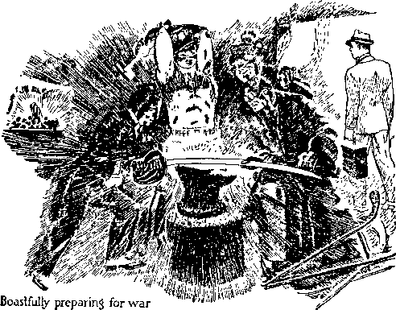“Beat your plowshares into swords, and your pruninghooks into spears; let the weak say, I am strong.”—Joel 3:10.
Now the time has arrived when these wicked ambitious religionists think to grab control of and rule the world; and in order that they might have the full length of their rope God says to them: 'Go right on; turn your once peacetime schemes of making proselytes into militant weapons. You did not succeed in converting and gathering all nations into your religious-political camp; now employ all manner of force to get the people under your control. Your “Catholic Action” appears to serve you well; so go forward and openly announce your alliance with Fascists and Nazis to employ force to gain control of the governments of earth.’ The Lord taunts them by telling them to do their very worst.
Furthermore addressing that wicked crowd Jehovah says to them, in substance: 'Your pruning hooks, which you have employed to dress your religious vines, have not fulfilled your expectations in causing all the people to join with you and become subject to your organization. Now try to oppress men, and hence beat your pruning hooks into spears, that is, instruments of violence, and use violence in your efforts to regiment and control the people. Become open warriors, and thus be better equipped to fight against Jehovah’s witnesses and against Jehovah’s message and therefore against The Theocracy.’
Compared with the host of Almighty God every nation and every organization is weak and amounts to nothing. (Isaiah 40:15) But to tickle the ambition of religionists, and to taunt them and feed their vanity, Jehovah sends this message to them by his faithful witnesses: “Let the weak [one] say, I am strong.” And so the vain deluded ones think themselves very strong to fight against all who take their stand on the side of Jehovah. Compared with the small number of Jehovah’s visible witnesses on the earth, and who appear to be entirely defenseless, the religious leaders in particular, together with their fanatical deluded ones, think themselves to be very strong. Professional politicians cooperate with such religionists because they think that is the best course to take to insure further political support. The politicians say publicly, “What we need is more religion,” without having any understanding of what “religion” really means. The religionists say, “The politicians are with us, and we must crush those who call themselves ‘Jehovah’s witnesses’.” These “mighty men”, so called, think themselves to be very strong against Jehovah God. The Devil and his wicked angels inject that thought into their minds.
In all the totalitarian states the united efforts of the enemy are against Jehovah’s witnesses. In the so-called “democracies” there is a growing sentiment of the radical and political element to consider themselves strong and that they should destroy everything not agreeing with them, and particularly the witnesses of the Most High. All of these are embraced in “the nations that forget God”, because they fail to consider that God is Almighty and that his witnesses are acting under God’s commandment and that Jehovah will defend those who love and serve him. Without full faith in Jehovah and his kingdom it would now be impossible for any man to withstand the vicious attack of the combined enemy. Jehovah is the God of comfort, and, that the hope of his people may be strong, he puts into the mouth of his faithful servants this prayer, to wit: “Arise, 0 Lord; let not man prevail; let the heathen be judged in thy sight. Put them in fear, 0 Lord; that the nations may know themselves to be but men. Selah.”—Psalm 9:19, 20.
Some who profess to be consecrated to the Lord are weaker in faith than others, and because of little faith they for a time become fearful. For their aid and comfort Jehovah answers the foregoing prayer of his faithful ones and causes his prophet to say to those who need more faith: “I, even I, am he that comfortcth you: who art thou, that thou shouldest be afraid of a man that shall die, and of the son of man which shall be made as grass.”—Isaiah 51:12.
It is only those who trust implicitly in and who diligently serve Jehovah that can now say, ‘I am “strong in the Lord, and in the power of his might”.’ (Ephesians 6:10) Such are without fear and will have boldness in this day in proclaiming God’s message of truth as commanded. —1 John 4:17,18.
Within the borders of Britain and America the major portion of the witness work is now carried forward by Jehovah’s witnesses. In the outlying countries, where the number of witnesses is small, the enemy has been bolder and more arrogant in opposing the work of the Most High. The vicious opposition of the enemy is now greatly increasing in America and in Great Britain, and such of itself indicates that Armageddon is near. It is now very apparent that the demons have taken possession of the minds of those who are against God and against his King. Satan knows his time is short, and hence he puts forth all his power to control those who know not Jehovah God. The recent disturbance at Madison Square Garden, New York, clearly demonstrated that the deluded opponents or radicals are under the complete control of Satan and other demons, the wicked angels. The demons are seizing control of the radical element in every part of the earth, and thus that wicked one, the Devil, moves his forces in rapid preparation for the final showdown. Hence Jehovah says to all nations: “Assemble yourselves, and come, all ye heathen [nations], and gather yourselves together round about: thither cause thy mighty ones to come down, 0 Lord.”— Joel 3:11.
ASSEMBLING
The first part of this verse is addressed to the nations who are against God. The latter part of this verse is a prayer of Jehovah’s “faithful servant” class, the “holy nation”. To the enemy forces under the immediate command of Gog, who is the first in command of Satan’s forces, Jehovah now says, according to the Revised Version: “Haste ye, and come, all ye nations round about.” The time for the assembly and the beginning of the fight is short, and therefore action must bo speeded up. Satan knows that his time is short, and he hastens to do the very thing that God commands to be done. (Revelation 32:12) The haste with which preparation is made for the battle is indicated by the prophet of God in these words: “The chariots [of war] shall rage in the streets [ways of the enemy organization], they shall justle one against another in the broad ways; they shall seem like torches, they shall run like the lightnings.”— Nahum 2:4.
Now “Catholic Action” is speeding up in every part of the earth. The political dictators, with whom the Hierarchy is allied, are making speedy movements to increase their own strength and to extend their power to the point of completely preventing freedom of speech, of press, and of assembly, and freedom of worship. So frenzied are those of the more radical and deluded type that they move not according to the laws of dictators even, but act without the least semblance of legal authority, in their endeavor to prevent freedom of assembly and freedom of speech. All the physical facts now coming to pass clearly show that “the great day of the Lord is near, it is near, and hasteth greatly, even the voice of the day of [Jehovah]”. And what shall follow? “The mighty man [the enemy] shall cry there bitterly.”—Zephaniah 1:14.
It is Jehovah’s day of vindication, and not only is he ready for the light, but he welcomes it and invites the enemy to line up, saying to them: “Come, all ye [nations], and gather yourselves together round about.” Get ready for the fight; you have been boasting what you are going to do; now do it! Jehovah’s time is here for the vindication of his name, and so he invites the enemy to advance; and this he does by causing his witnesses, the remnant and their companions, to go out amongst the people and fearlessly proclaim his judgments that are written. Those who truly trust Jehovah delight to obey this command, and they with boldness proclaim the Theocracy; and the effect upon the religionists is to plague them even as locusts plagued the people in Egypt, and this incites the vicious to resentment, and “Catholic Action” increases. Jehovah, in substance, says to the enemy: ‘Surround them completely. Encircle my faithful witnesses now on the earth, and do your worst to hem them in by your vicious and cruel laws. Take away all liberty that your national laws once guaranteed to the people.’
In 1914 there began a “war in heaven” and the Lord Jesus and his angels fought against Satan and his forces, and Satan and his wicked crowd were cast down to the vicinity of the earth. (Revelation 12: 7-9) Now the scene of final conflict is in the earth, and it appears that the following words of the foregoing prophecy of Joel are a prayer of the faithful to Jehovah: “Thither cause thy mighty ones to come down, 0 Lord.” (Joel 3:11) In support of this, it is written in another part of God’s prophecy: “I have commanded my sanctified ones, I have also called my mighty ones for mine anger, even them that rejoice in my highness. The noise of a multitude in the mountains, like as of a great people; a tumultuous noise of the kingdoms of nations gathered together; the Lord of hosts mustereth the host of the battle.”—Isaiah 13: 3,4.
The end of Satan and his horde of wicked ones is at hand, and that includes both the visible and the invisible part of his organization, particularly the Roman Catholic Hierarchy, that now vainly attempts to ride on the top of every nation. Therefore Jehovah says to them, and he commands his witnesses to continue to repeat his declaration, to wit: “Let the heathen be awakened [(R.F.) Let the nations bestir themselves], and come up to the valley of Jehoshaphat ; for there will I sit to judge all the heathen round about.”—Joel 3:12.
Therefore Jehovah’s witnesses, in obedience to God’s command, must proclaim and do proclaim the message, to wit: “For it is the day of the Lord’s vengeance, and the year of recom-pences for the controversy of Zion.” (Isaiah 34:8) The faithful servants of God will now have in mind their commission and will perform the same by declaring the day of the vengeance of our God. (Isaiah 61:2) For centuries Jehovah has permitted the enemy to operate without let or hindrance, but now he will settle the account with the enemy for all time. Therefore Jehovah maneuvers the enemy into position and stirs them up and causes his faithful witnesses to have part in this work by declaring the day of his vengeance against all wickedness.
PLACE OF BATTLE
To all the nations that have allied themselves with the Devil Jehovah now says: “Come up to the valley of Jehoshaphat”; that is to say, the place of judgment and battle. Jehovah maneuvers the enemy right to that place or condition. He not only selects the battlefield, but draws out the enemy and all the people who support the leaders therein and compels them to show on whose side they are lined up. He forces them to show themselves to be against the Theocracy. The division is now rapidly taking place, and the people of the nations are dividing themselves into the two classes, one designated “the goats”; and the other, who are of good will toward God, are known as the “other sheep” of the Lord. It is a thrilling time, and the sound of the marching forces in preparation for battle thrills the heart of every one who loves righteousness and hates iniquity. Long have God’s people waited for this time, and they rejoice that it is here, because they know the Righteous One, the Mighty God, and his King shall gain complete victory.
Jehovah leaves no excuse for the enemy to ever say they had not sufficient notice of his purpose against them. The host of Satan gathers from all parts of the earth against the Lord. That wicked horde is under the immediate command of Gog, the first in command under Satan. To that wicked crowd the Lord addresses his speech, to wit: “Thus saith the Lord God, Behold, I am against thee, 0 Gog, the chief prince of Meshech and Tubal; and I will turn thee back [turn thee about (H.R.L.)], and put hooks into thy jaws, and I will bring thee forth, and all thine army, horses and horsemen, all of them clothed with all sorts of armour, even a great company, with bucklers and shields, all of them handling swords.”—Ezekiel 38: 3, 4.
The words of Jesus addressed to his faithful servants show the enemy Satan gathering the nations to the battle of the great day of God Almighty. (Revelation 16:13-16) The faithful on earth now see the fulfillment of this prophecy of Revelation. At the “valley of Jehoshaphat”, or final judgment place, Jehovah causes them to assemble, and says: “For there will I sit to judge all the nations round about.” (R.F.) No part of Satan’s organization will be omitted from that assembly for judgment and execution. As the mighty Judge and Commander-in-Chief of all the host of righteousness Jehovah sits there to command and direct the execution of his judgment, which execution is done by Christ Jesus, his Executive Officer and Vindicator. That will be no kind of trial, such as is held in earthly courts. There will be no legal briefs filed and no arguments heard. It will be the time of excution. God has given Christ Jesus the “authority to execute judgment”. (John 5:27) The Lord Jesus Christ will there be pitted against the forces of Satan, and Jehovah sits, at it were, to umpire the fight and make known the result, and thereafter every mouth shall be for ever stopped that utters opposition to Almighty God. Righteousness shall triumph. This full assurance now gives great joy to those on the side of the Theocratic Government and thrills their hearts with unspeakable courage and gladness.
At this point of the prophecy it appears that Jehovah addresses his beloved Son, who is always faithfully obedient in carrying out the will of his Father. For many centuries Christ Jesus has waited for this hour, that he might vindicate his Father’s name, and which vindication will constitute his fullness of joy. It is a time of great joy to his heart when he hears Jehovah say to him, and to his heavenly host acting under the command of Christ, the great Field Marshal : “Put ye in the sickle; for the harvest [of the grape-vine of Satan] is ripe; come, get you down; for the press is full, the fats overflow; for their wickedness is great.” (Joel 3:13) Now the time has arrived when the knife must be thrust into Satan’s vineyard. “And another angel came out of the temple which is in heaven, he also having a sharp sickle. And another angel came out from the altar, which had power over fire; and cried with a loud cry to him that had the sharp sickle, saying, Thrust in thy sharp sickle, and gather the clusters of the vine of the earth; for her grapes are fully ripe.”—Revelation 14:17,18.
The purpose of thrusting in the sickle is to cut Satan’s vine loose from its moorings, which are deep in the earth. The vine is to be cast into God’s winepress and there trodden and destroyed. In connection with the putting in of the sickle is also included the gathering of the nations to the place of final conflict, and in this part of the work Jehovah’s witnesses have some part by declaring the purpose of Jehovah. According to another translation this part of the text reads: “Thrust ye in the vintage knife, for grown ripe is the vintage.” (Rotherham) Surely that means that Satan’s organization, and particularly “Christendom”, which forms the chief part of the earthly organization of the enemy, is now ripe and ready for destruction.
WINEPRESS
Further Jehovah says to Christ, his King and Executioner: “Come, get you down”; (A.R.V.) “come, tread ye [(Roth.)go in, tread down] . . . the wine-press is full, the vats overflow.” In common usage the description is this: The earth is full of wickedness and violence, and the time for completely wiping out all wickedness is at hand. When the battle of Armageddon begins, the winepress or vats will be full, because the dividing of the people will then be completed and the “goats” will be on the left hand and those of good will, the “other sheep”, on the right hand of Christ Jesus, the Judge. Everything will be ready for the clash of power. That “winepress” will be a tremendous one, with capacity to hold all the nations that are against Jehovah God. (Revelation 14:19,20) The fruits of the enemy organization are now ripe.
Those fruits of wickedness are ready for gathering. They are ripening or culminating in ever-increasing malicious slander, libel and assaults upon Jehovah’s servants. The Hierarchy have directed these assaults and declare the same to be a “holy war”, and hence they have ‘sanctified’ that war, declaring their determination to crush the truth, to the end that the Hierarchy may satisfy their vaulting ambition. Concerning this Jehovah, by his prophet, says: “For their wickedness is great.” Of necessity this refers to the “last days” or “perilous times”. (2 Timothy 3:1) It is the time when religionists have reached the superlative degree of hypocrisy, demonstrating clearly to all sane persons that such religionists, who claim to serve God but are hypocrites, ‘have a form of godliness, but deny the power thereof.’ (2 Timothy 3:5) It is the final fulfillment of the prophecy quoted by the Lord Jesus and directed to the same class of religionists, when he said: “Ye hypocrites, well did Esaias prophesy of you, saying, This people draweth nigh unto me with their mouth, and honoureth me with their lips; but their heart is far from me. But in vain they do worship me, teaching for doctrines the commandments of men.”—Matthew 15:7-9.
It is the time when religion has completely headed up and gone to seed. Their acts of wickedness Jehovah particularly refers to in Joel 3: 2-6, which wickedness religionists have done and committed against the faithful servants of Almighty God. By their cruel and wicked deeds committed the religionists have challenged Jehovah and Christ Jesus to prevent them from carrying on behind their breastwork of lies: “Because ye have said, We have made a covenant with death, and with hell are we at agreement; when the overflowing scourge shall pass through, it shall not come unto us; for we have made lies our refuge, and under falsehood have we hid ourselves.” (Isaiah 28:15) Those hypocritical religious leaders have desperately tried and continue to try to destroy the temple company of the Lord, and Jehovah declares that he will destroy the hypocrites.-l Corinthians 3:17.
Surely Almighty God Jehovah has caused his sacred record, the Bible, to be written in such manner and set forth in such order that it can be understood and appreciated only by those who love him and who therefore desire to be guided in the right way. (Psalm 25:9) Every part of his Word is harmonious. This is to be expected, and now we know it is true. Some parts of his prophecy were written centuries ago by his faithful servants, the prophets. Long years thereafter other parts of his prophecy were delivered by Christ Jesus, the great Prophet, and caused to be recorded by his faithful servant John. (Revelation 1:1, 2) By his prophet Joel Jehovah declares his command to Christ Jesus, his glorious Vindicator, to march forward to the battle of Armageddon. At The Revelation is recorded the act of Christ Jesus in joyful and full obedience to the command of his Father. A great thrill that will be for every creature that is privileged to see the forward march of the mighty Vindicator, which John describes in these words, to wit: “And I saw heaven opened, and behold, a white horse; and he that sat upon him was called Faithful and True, and in righteousness he doth judge and make war. His eyes were as a flame of fire, and on his head were many crowns; and he had a name written, that no man knew but he himself. And he was clothed with a vesture dipped in blood; and his name is called The Word of God. And the armies which were in heaven followed him upon white horses, clothed in fine linen, white and clean. And out of his mouth goeth a sharp sword, that with it he should smite the nations: and he shall rule them with a rod of iron: and he treadeth the winepress of the fierceness and wrath of Almighty God. And he hath on his vesture and on his thigh a name written, KING OF KINGS, AND LORD OF LORDS.” —Revelation 19:11-16.
It is the “time of war”! It is to be the final war. All the hosts of heaven will with the most intense interest behold it. The faithful on the earth will discern it and have full assurance in advance of what shall be the result. The zero hour has struck, and the Mighty Warrior, leading his invincible host, is marching to the attack. The deluge was the climax of the first world of wickedness and violence, and that foreshadowed the climax of the “present world” of wickedness and violence. Let those who love Jehovah and his Kingdom now note the onward march of the heavenly host and with eagerness await the result as foretold in the prophecies.
CHAPTER XII
THE RULERS of all nations now see that disaster is near and that they are done for unless some way of averting the calamity is found. Filled with fear, yet boasting of man’s ability to avert disaster, with one accord they say: “We must have more religion, else our nation will perish.” All nations have forgotten God, and they give no heed to his Word. All nations are against the Theocratic Government. They trust in man and in religion. “Just any kind of religion,” they say, “but some religion is indispensable.” The prophecies of Almighty God, the fulfillment of which now clearly appears from the physical facts, show that the end of religion has come and with its end the complete downfall of Satan’s entire organization.
In the year 1914 (A.D.) Christ Jesus, the King, was enthroned. Immediately thereafter there was “war in heaven”, with the result that the Devil “was cast out into the earth, and [all] his angels [demons] were cast out with him”. (Revelation 12:1-9) The Devil then realized that the time until the final battle is short and that he must act hurriedly. “He knoweth that • he hath but a short time.” (Revelation 12:12) Ail nations of earth, because of fear, have been led into Satan’s snare. (Proverbs 29:25) Now 336
all the nations are within the power and control of the demons. (1 John 5:19) Like the invisible demons, the worldly leaders are blind concerning God’s purpose. They are in gross darkness. (Isaiah 60: 2) Seeing that his time is short, the Devil began about 1918 to gather all the nations “to the battle of that great day of God Almighty”, and in this work he has used religion, politics and the commerce of the world.—Revelation 16:14. .
Armageddon means ‘the place of the assembly of Jehovah’s troops’, and the Devil gathers together his forces and marches them to Armageddon: “For they are the spirits of devils, working miracles, which go forth unto the kings of the earth and of the whole world, to gather them to the battle of that great day of God Almighty.” “And he gathered them together into a place called in the Hebrew tongue Armageddon.”—Revelation 16:14,16.
Religion is now relied upon by the ruling powers to hold the people together. The earthly leaders and the blinded people march to Armageddon. As the gathering of the nations to Armageddon has progressed the woes upon the people have greatly increased, and in this year 1940 the nations and the people are in very great distress because of these woes. And who is chiefly responsible for that dreadful condition? The author of religion, Satan, and those who follow and practice religion and who are therefore the visible agents of Satan. Concerning such it is written: “Woe to the inhabiters [ruling element] of the earth, and of the sea [the people that bear up and support selfish ruling powers]! for the devil is come down unto you, having great wrath, because he knoweth that he hath but a short time.”—Revelation 12:12.
While the woes increase the religious, political and commercial leaders together say to the people: “We must have more religion, else we perish.” The masses of the people, not knowing which way to go, and filled with fear, are also led into Satan’s trap. The time is here when God will enlighten all those who are of good will that they may escape from that trap.
The Devil’s challenge to Jehovah God was that he, Satan, could cause all men to curse God to His face. Now he sees that he has been unable to prove that challenge; hence the Devil is desperately bent on the destruction of all mankind, and he ensnares the nations in religion or demonism that he may accomplish that wicked result. The day for final settlement is near at hand.
BATTLE ARRAY
Long ago God said that he would permit the Devil to remain and put forth his best endeavors to make good his wicked challenge, and that God in his own due time would exert his own power against Satan and all his followers. (Exodus 9:16) Now the time has come for God to show all creation, including the demons, that the Most High, the Supreme One, is God, whose name alone is Jehovah. The enemy must be gathered to the place of final conflict. Jehovah gave Joel his prophet a vision of the battle array and caused that prophet to write the prophecy, which now is in course of fulfillment, to wit: “Multitudes, multitudes in the valley of decision; for the day of the Lord is near in the valley of decision.”—Joel 3:14.
This is “the day of Jehovah”, and all men on the earth who have put their trust wholly in God and Christ Jesus are now permitted to see and understand that this is His day, and are given a vision of the battle array. “The valley” mentioned in the prophecy is a symbolic expression of the position of the two contending armies at the time immediately before the fight begins. “Mount Zion” symbolically means the capital organization of God, wherein Christ Jesus is the King. It is the meeting-place between God and his faithful creatures. It is the dwelling place of the Most High. (Psalm 132:13,14) “Jehovah of hosts” means that He is the Supreme Commander of all forces of righteousness that now make war against unrighteousness. Christ Jesus is the Commander of the forces of the Most High because he is the Executive Officer and Vindicator of Jehovah's name, and that holy name must now be vindicated. The Righteous One makes war against the enemy, and His troops are assembled with Christ Jesus on Mount Zion, and together they are singing the praises of Almighty God.—Revelation 14:1-3; 19:11.
The battle forces of the righteous under the immediate command of Christ Jesus are these: Jehovah, the Almighty God, the Supreme Commander; Christ Jesus, the Field Marshal and Leader of the forces of war against unrighteousness ; and all the holy angels of heaven who at all times obey Jehovah God and follow the lead of Christ Jesus. The men and women who are on earth and who are on the side of righteousness, being fully devoted to Jehovah and Christ his King, have a vision of the battle array and witness the battle, but they take no active part therein. They are Jehovah’s servants on earth, faithfully attending to the duties assigned to them; which is to sing the praises of God and Christ during the assembly of the warring forces, and while the battle is in progress. These faithful servants of the Most High are hated by the enemy, and the enemy makes every endeavor to destroy them, but ‘the angel of the Lord encamps round about them that fear him, and delivers them’.—Psalm 34: 7.
The prophecy discloses the position of the enemy and describes the enemy as “multitudes, multitudes in the valley of decision”. The Devil has gathered all the nations to that point. God by his prophet makes known that not one nation is omitted, but all are there. (Jeremiah 23:15-26) The messengers of Jehovah, who are proclaiming the truths concerning the great Theocrat and his government, are hated by all the nations of earth because they sing the praises of the Most High. All who hold to religion or demonism are at the place of battle. All the Nephilim or wicked angels, demons, are there. The field marshal of the wicked forces is Gog, who acts under the direct command of Satan, who is the commander-in-chief of the wicked ones.
According to the marginal reading of the foregoing text the forces arc gathered in the valley of “concision”, which word means “threshing”, or “destruction”. (A.P., margin) As a threshing
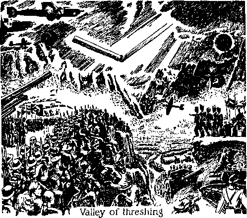machine cuts and tears to shreds everything that is fed into the maw of that machine, even so now the wicked forces, gathered in the valley, shall be literally cut to pieces. Complete annihilation of the army of Satan will be the result.
DARKNESS
The condition in which the enemy forces find themselves just preceding the battle is that of darkness. (Joel 2:31) God’s prophet also describes in symbolic phrase that condition, to wit: “The sun and the moon shall be darkened, and the stars shall withdraw their shining.” (Joel 3:15) The sun and the moon are the creation of God the Almighty. The sun is the source of light hy day, and the moon gives light at night. God therefore causes darkness to completely encompass the enemy; therefore those who hold to and who practice religion are in darkness. They have no light or understanding of God’s purpose. The physical facts in complete harmony with the prophecy show that such is the condition of the rulers or leaders of the nations of earth at this present time. The demons are in darkness as to God’s purpose and have been since the day of the deluge. (Jude 6-13) The “evil servant” class are likewise in darkness, having been cast into outer darkness because of their unfaithfulness. (Matthew 24:48-51; 25:30) None of these understand or appreciate what is about to take place. “Light is sown for the righteous.” (Psalm 97:11) Since all religionists are on the Devil’s side and therefore unrighteous, they have no light from God’s Word. They walk on in darkness. (Proverbs 2:13) On the contrary, those who trust fully in Jehovah God and Christ Jesus, and who shun religion, are in the light. They are counted righteous by reason of their faith in God and in his kingdom. Such faithful ones are granted now the great privilege of having a vision of the battle array, and they know what is shortly to follow and what will be the final end.
Jehovah’s witnesses and their companions, being entirely devoted to The Theocrat and his government, are now diligent to carry the message to the people of and concerning that Theocratic Government. The people of good will who hear and understand that message quickly discern that religion is a snare of the Devil to lead men into destruction, and hence those of good will hasten to put themselves under the protection of the Lord. “Whoso putteth his trust in the Lord shall be safe.” (Proverbs 29:25) “Salvation belongeth unto the Lord; thy blessing is upon thy people.”—Psalm 3: 8.
Those fully devoted to Jehovah obey his commandments and continuously proclaim the name of the Most High and his kingdom, that the people may be warned and find the way of escape. Thus they have a part in God’s “strange work”. This “strange work” is now progressing in the earth, and that causes the religionists to become very angry; and being drunk with the wine of the Devil, they bitterly oppose and resent the message of God and his messengers and attempt to bring about the destruction of such messengers.
The message which the witnesses of Jehovah and their companions now bring to the attention of the people is not the message of any man, but it is the message of Jehovah God, the Most High, who dwells in Zion. Says the prophecy of Joel: “The Lord also shall roar out of Zion, and utter his voice from Jerusalem; and the heavens and the earth shall shake; but the Lord will be the hope of his people, and the strength of the children of Israel.”—Joel 3:16.
It is those anointed of the Lord, the remnant of his people on earth, who are of “Zion”; and it is their companions, the Jonathan or Jonadab class, who are of “Jerusalem”; and both the remnant and the Jonadabs proclaim the name of Jehovah and his kingdom. God uses this as his “voice” to sound the warning. The voice of Jehovah thus sounded through his servants shakes “the heavens” (that is, the invisible forces, the demons) and all the visible forces of man on earth, that is, those who follow and practice religion. Such is the shaking that takes place immediately preceding “the battle of that great day of God Almighty”. (Haggai 2:6,7) But another and far greater shaking will take place at the battle of Armageddon. It is only the remnant, and those of good will and who trust in the great Theocrat and his government, that have hope. Therefore “the Lord will be the hope of his people” now and henceforth and for evermore. The enraged religious practitioners continue to persecute these witnesses of the Lord because they tell the truth, and that persecution does not deter the witnesses in their work, because they know they are backed up by Jehovah. For their encouragement Jehovah speaks: “Therefore wait ye upon me, saith the Lord, until the day that I rise up to the prey; for my determination is to gather the nations, that 1 may assemble the kingdoms, to pour upon them mine indignation, even all my fierce anger; for all the earth shall be devoured with the fire of my jealousy.”—Zephaniah 3: 8.
THE BATTLE
All nations are now in the “valley of Jehoshaphat”, that is, the valley of judgment or decision. It is also the valley of concision or the place of slaughter, because there the judgment of Jehovah against all the wicked will be executed. Jehovah God is at Zion; he is the Supreme One, the Commander and final arbiter.
It is the day of his victory; therefore it is the day of the Lord. Jehovah gives command for the battle to begin: “The Lord [Jehovah] shall roar from on high, . . . [Jehovah] hath a controversy with the nations; ... he will give them that are wicked to the sword.”—Jeremiah 25:30, 31.
Christ Jesus, the Vindicator of the Most High, hears and immediately obeys the command. He moves forward on his war mount to give battle to the enemy. The host of heaven, the holy angels, fully equipped, follow after the Lord Jesus Christ. It is the army of righteousness. The battle is on, and the forces of righteousness charge the enemy forces, hurl them back, and literally cut them to pieces. Concerning this army of righteousness it is written: “And the armies which were in heaven followed him [Christ Jesus] upon white horses, clothed in fine linen, white and clean. And out of his mouth goeth a sharp sword, that with it he should smite the nations; and he shall rule them with a rod of iron; and he treadeth the winepress of the fierceness and wrath of Almighty God.”—Revelation 19:14,15.
Jehovah of hosts fully supports his Field Marshal, Christ Jesus. Victory therefore is certain: “The Lord [Jehovah] at thy right hand shall strike through kings in the day of his wrath. He shall judge among the heathen [nations], he shall fill the places with the dead bodies; he shall wound the heads over many countries.” (Psalm 110: 5, 6) Thus it is seen that the Lord Jesus Christ, fully supported by the Most High, strikes through the kings or ruling powers, both invisible and visible, in the day of this battle. He wounds the head of every department of Satan’s organization over the many countries; he fills the places with the dead.
THE SLAUGHTER
It is the hour of God’s indignation expressed against those who have so foully defamed his holy name, and all the enemy shall be paid a just recompense: “For the indignation of the Lord is upon all nations, and his fury upon all their armies; he hath utterly destroyed them, he hath delivered them to the slaughter. Their slain also shall be cast out, and their stink shall come up out of their carcases, and the mountains shall be melted with their blood. And all the host of heaven [that is, the high places in which Satan’s crowd have perched themselves] shall be dissolved, and the heavens shall be rolled together as a scroll; and all their host shall fall down, as the leaf falleth off from the vine, and as a falling fig from the fig tree. For my sword shall be bathed in heaven [that is, the high places in which Satan’s crowd have perched themselves]: behold, it shall come down upon Idumea [religionists and allies in high places], and upon the people of my curse, to judgment. The sword of the Lord is filled with blood; it is made fat with fatness, and with the blood of lambs and goats, with the fat of the kidneys of rams; for the Lord hath a sacrifice in Bozrah [Edom, religious persecutors], and a great slaughter in the land of Idumea. And the unicorns shall come down with them, and the bullocks with the bulls; and their land shall be soaked with blood, and their dust made fat with fatness. For it is the day of the Lord's vengeance, and the year of recompences for the controversy of Zion.”—Isaiah 34: 2-8.
The religious leaders, the political rulers and the commercial great men have with one accord engaged in cruel wars, resulting in the destruction of the souls of the innocent. Such rulers have deliberately violated God’s everlasting covenant. (Genesis 9: 3-17) All such have yielded to the influence and power of the demons; hence God declares that at the day of pay-off the following shall be the result: “The land shall be utterly emptied, and utterly spoiled; for the Lord hath spoken this word. The earth mourn-eth, and fadeth away; the world languisheth, and fadeth away; the haughty people of the earth do languish. The earth also is defiled under the inhabitants thereof, because they have transgressed the laws, changed the ordinance, broken the everlasting covenant. Therefore hath the curse devoured the earth [the ruling element], and they that dwell therein are desolate; therefore the inhabitants of the earth are burned, and few men left.”—Isaiah 24: 3-6.
That the battle of Armageddon will result in a wide-spread destruction, the Lord says: “And the slain of the Lord shall be at that day from one end of the earth even unto the other end of the earth; they shall not be lamented, neither gathered, nor buried; they shall be dung upon the ground.” (Jeremiah 25:33) Those who die will not be a few million only, but ‘all the wicked God will destroy’.—Psalm 145: 20.
WIPED OUT
"The battle of that great day of God Almighty” will forever put AN END TO RELIGION AND RELIGIOUS PERSECUTORS. That battle of Armageddon is God’s appointed time and place to settle all accounts with his enemies, and this he will do by requiring the lifeblood of those who have deliberately violated his “everlasting covenant”. (Genesis 9:5-10) He will not permit those who have unrighteously shed human blood to go down to the grave in peace, but will cause all such who are on earth at Armageddon to suffer destruction. “For I will cleanse their blood that I have not cleansed; for the Lord dwelleth in Zion.”—Joel 3: 21.
This text according to the Syriac and Septu-agint Versions reads: “I will avenge the blood of them I had not avenged.” Jehovah’s name shall be fully and completely vindicated. This he will do by Christ Jesus, his Vindicator. He will not let the bloodshedders go without due attention and without balancing the account. Such is retributive justice, executed against Satan’s earthly representatives because of their violence against those who faithfully serve Jehovah God. He will bring down such persecutors to the grave with blood. (1 Kings 2:9) His law must be satisfied: “At the hand of every man’s brother will I require the life of man.” (Genesis 9: 5) The blood of Jehovah’s witnesses unrighteously shed by religionists shall be upon the heads of the wicked slayers.
The blood of those slain at Armageddon will not rest upon the heads of Jehovah’s faithful servants. His witnesses and their companions have obediently and zealously sounded the trumpet of warning and hence are not guilty of offense, and no blood will be required of them; but the enemy, the religionists and their allies, have repeatedly shed blood of the innocents, and for that they shall be fully paid by the Executioner of Jehovah.
God’s prophecy through Joel shows that his vengeance shall be executed against religionists, particularly the Roman Catholic Hierarchy, and all her allies, including the political, commercial and military elements of the earth that have practiced religion and wickedly punished God’s servants: “Egypt shall be a desolation, and Edom shall be a desolate wilderness, for the violence against the children of Judah, because they have shed innocent blood in their land.”—Joel 3:19.
In the text of the prophecy last above quoted “Edom”, which in other prophecies is called “Mount Seir”, specifically pictured demonism or religion. “Egypt” specifically pictured the political, commercial and military elements that rule the earth, all of which practice some kind of religion. Desolation comes upon religion, politics, commerce, and military elements of Satan’s organization, specifically pointed out by this prophecy.
The Roman Catholic Hierarchy is undoubtedly the chief one mentioned in this prophecy under the symbol of “Edom”. According to the Revised Version this part of the text reads: “And Edom shall be a desolate wilderness, for the violence done to the children of Judah”; that is, against those who praise and serve Jehovah.
The indisputable facts that have come to pass, particularly since 1917 up to the present hour, show that the Roman Catholic Hierarchy have been causing much suffering and bloodshed upon God’s people within the “land” of many parts of the nations of the earth. Their wicked deeds against Jehovah’s witnesses have continued to increase. The Hierarchy and their allies are even now in a conspiracy to bring about the destruction of Jehovah’s witnesses and their companions. Those who faithfully serve God will not now be at all discouraged by reason of the wicked deeds of the enemies, because they know that the doom of religion is sounded and that judgment against that wicked class will be executed and soon the workers of iniquity shall perish.
The religious persecutors and allies have willfully violated the “everlasting covenant” of Jehovah, and now the Almighty’s promise to render unto them a full recompense shall be carried out. The prophetic pictures performed by Jehovah in times of old are now about to be completely fulfilled. Edom, foreshadowing the religious element now on earth, took her stand against Judah and Jerusalem and aided Babylon in the persecution of God’s temple people. (Obadiah 11-14) This definitely identifies the modern-day Edomites (the religionists led by the Roman Catholic Hierarchy) as a part of Satan’s organization. In the prophecies this wicked religious organization is designated Satan’s “woman”, the old “harlot”, and concerning which it is written: “And I saw the woman drunken with the blood of the saints, and with the blood of the martyrs of Jesus; and when I saw her, I wondered with great admiration.” (Revelation 17:6) “And in her was found the blood of prophets, and of saints, and of all that were slain upon the earth.” (Revelation 18: 24) “Also in thy skirts is found the blood of the souls of the poor innocents; I have not found it by secret search, but upon all these.”-Jeremiah 2: 34.
The judgment of Jehovah written against those breakers of his covenant concerning the sanctity of life says: “Therefore, as I live, saith the Lord God, I will prepare thee unto blood, and blood shall pursue thee; sith [since] thou hast not hated blood, even blood shall pursue thee. Thus will I make mount Seir most desolate, and cut off from it him that passeth out, and him that returneth. And I will fill his mountains with his slain men; in thy hills, and in thy valleys, and in all thy rivers, shall they fall that are slain with the sword.”—Ezekiel 35: 6-8.
The Roman Catholic Hierarchy, the modern Edomites, have repeatedly invaded the “land of Judah”, that is, of Jehovah’s witnesses and their “companions”, who praise Jehovah; and for this Jehovah will “pay off” fully those wicked ones. This part of the prophecy is now made known to his people by the Lord that they may have increased comfort and hope during this time of wickedness against them.
God’s prophet then foretells His purpose to destroy the political, commercial, and military allies of religion, who have acted with the religious element in the persecution of God’s faithful witnesses.—Joel 3:19.
Antitypical Egypt’s river Nile fails to water the land and to make it productive. On the contrary, its commercialism appears to be deathdealing, and this is proved by the conditions existing throughout the earth, and this in spite of the constant “pump-priming”, or reckless spending of money, which is done in the nation by individuals who try to keep business afloat. A similar course is followed in other parts of the earth. From bad to worse grows the condition of antitypical Egypt, and at Armageddon all parts of it will go down. “The burden of Egypt. Behold, the Lord rideth upon a swift [war] cloud, and shall come into Egypt; and the idols of Egypt shall be moved at his presence, and the heart of Egypt shall melt in the midst of it. And I will set the Egyptians against the Egyptians; and they shall fight every one against his brother, and every one against his neighbour; city against city, and kingdom against kingdom. And the spirit of Egypt shall fail in the midst thereof ; and I will destroy the counsel thereof; and they shall seek to the idols, and to the charmers, and to them that have familiar spirits, and to the wizards. And the Egyptians will I give over into the hand of a cruel lord; and a fierce king shall rule over them, saith the Lord, the Lord of hosts. And the waters shall fail from the sea, and the river shall be wasted and dried up.” ■—Isaiah 19:1-5.
SURVIVORS
The religionists and allies have tried to silence all who praise and serve Jehovah. In this they shall completely fail. The promise of God given to his faithful servants is that they shall survive the destruction at Armageddon: “But Judah shall dwell for ever, and Jerusalem from generation to generation.” (Joel 3:20) The survivors shall remain on earth “from generation to generation”, that is, forever; and this God further supports by the words of his prophet, to wit: “And I will plant them upon their land, and they shall no more be pulled up out of their land which I have given them, saith the Lord thy God.”-—Amos 9:15.
Jehovah’s universal organization (“Jerusalem”) will persist after Satan’s organization has gone down to complete destruction. The remaining on the earth of -“the remnant” will be but temporary; but as to their companions, the “other sheep”, forming the “great multitude” and who come up to Jerusalem to worship Jehovah, they shall abide on the earth forever: “Thus saith the Lord of hosts, It shall yet come to pass, that there shall come people, and the inhabitants of many cities; and the inhabitants of one city shall go to another, saying, Let us go speedily to pray before the Lord, and to seek the Lord of hosts; I will go also. Yea, many people and strong nations shall come to seek the Lord of hosts in Jerusalem, and to pray before the Lord. Thus saith the Lord of hosts, In those days it shall come to pass, that ten men shall take hold, out of all languages of the nations, even shall take hold of the skirt of him that is a Jew [Christ], saying, We will go with you; for we have heard that God is with you.” (Zechariah 8: 20-23) “And it shall come to pass, that every one that is left of all the nations which came against Jerusalem, shall even go up from year to year to worship the King, the Lord of hosts, and to keep the feast of tabernacles. And it shall be, that whoso will not come up of all the families of the earth unto Jerusalem to worship the King, the Lord of hosts, even upon them shall be no rain. And if the family of Egypt go not up, and come not, that have no rain, there shall be the plague wherewith the Lord will smite the heathen that come not up to keep the feast of tabernacles. This shall be the punishment of Egypt, and the punishment of all nations that come not up to keep the feast of tabernacles.” —Zechariah 14:16-19.
Those earthly survivors of Armageddon will be blessed with the great and unspeakable privilege of carrying out the divine mandate to “be fruitful . . . and till the earth” with perfect human creatures. (Genesis 9:1) This they will do under the immediate direction and ministration of Christ the King of the great Theocracy.
Only those who are diligent in studying God’s revealed Word, and who keep in mind God’s message, particularly relating to the kingdom, will be able to hold fast and withstand the assault of the enemy. Those who for any excuse or reason turn to the things of this world are certain to lose everything. Those who put their trust wholly in Jehovah and his King, and who with diligence press on in the fight in obedience to his Word, will continue to behold what is God’s purpose and what shall be the result. They discern that the day of battle is here, and by faith clearly see what will be the result. They hear the doom of religion and the complete overthrow of all of Satan’s forces. They behold Christ Jesus, the victorious Warrior, crowned with victory and glory, leading his forces to complete victory to the vindication of Jehovah’s name. They see the work finished. They hear a colloquy in which Christ Jesus, the great Vindicator, is the principal speaker. To him the questions are propounded, and Christ Jesus gives the answers: ‘Who is this that cometh from Edom, with dyed garments from Bozrah? this that is glorious in his apparel, travelling in the greatness of his strength? [Answer] T that speak in righteousness, mighty to save. [Question] Wherefore art thou red in thine apparel, and thy garments like him that treadeth in the winefat? [Answer] I have trodden the winepress alone; and of the people there was none with me; for I will tread them in mine anger, and trample them in my fury; and their blood shall be sprinkled upon my garments, and I will stain all my raiment. For the day of vengeance is in mine heart, and the year of my redeemed is come.”—Isaiah 63:1-4.
Mark this: that in the fight against the enemy none give support to the righteous King; that is, none of the world: only those do who have taken their stand on the side of God and Christ and have become a part of or under his organization before Armageddon and who are therefore his and are with him. “And I looked, and there was none to help; and I wondered that there was none to uphold; therefore mine own arm brought salvation unto me; and my fury, it upheld me.”—Isaiah 63: 5.
REFUGE
Let all who are now on the side of Jehovah and his King hold fast with rejoicing, faithfully enduring unto the end. To such Jehovah speaks through his prophet: ‘The Lord will be the hope of his people, and a stronghold.’ (Joel 3:16; R.V.) Armageddon will be too terrible to find description in human words. Of that great conflict and what shall come to pass the faithful need not fear. Jehovah will put his hand over the faithful, shield and protect them, and be a complete refuge to them: “The name of the Lord is a strong tower; the righteous runneth into it, and is safe.”—Proverbs 18:10.
Today the enemy, and particularly the Roman Catholic Hierarchy, have, as God foretold, ‘made lies their refuge.’ (Isaiah 28:15) They falsely claim to be on the side of freedom and right and yet are exactly the opposite thereto, always resorting to wickedness. Those who have devoted themselves to Jehovah and his King will not be dismayed or discouraged by reason of the deeds of the wicked. God will sweep away that refuge of lies. Jeremiah the prophet was a picture of God’s faithful people now on earth, and as he prayed so now the faithful pray: “Be not a terror unto me; thou art my hope in the day of evil. Let them [the enemy] be confounded that persecute me, but let not me be confounded; let them be dismayed, but let not me be dismayed; bring upon them the day of evil, and destroy them with double destruction.”—Jeremiah 17:17,18.
The strength of Jehovah’s people is in the joy and joyful service of God and his King. As Nehemiah builded the walls of Jerusalem amidst great trouble, so now the faithful of the Lord promote the kingdom interests amidst great tribulation, and now they truly say: “The joy of the Lord is [our] strength.” (Nehemiah 8:10) “The Lord is my strength and my shield; my heart trusted in him, and I am helped; therefore my heart greatly rejoiceth, and with my song will I praise him. The Lord is their strength, and he is the saving strength of his anointed. Save thy people, and bless thine inheritance ; feed them also, and lift them up for ever.” (Psalm 28:7-9) “The Lord is good, a strong hold in the day of trouble; and he know-eth them that trust in him.”—Nahum 1: 7.
Religionists put their hope in the totalitarian ruling powers, the antitypical Egypt, the Devil’s organization, and their strength shall utterly fail them. The spiritual Israelites, God’s faithful people, find their strength wholly in the great Theocrat and his King. The “great multitude” are those now coming from all nations, kindreds, peoples and tongues (Revelation 7:9-17), and they are putting themselves under the King of Jehovah, thereby becoming “companions” of the remnant, the announcers of the Kingdom. Together these share the blessings of the Lord and say: “0 Lord, my strength, and my fortress, and my refuge in the day of affliction.” (Jeremiah 16:19) Religion shall perish, but the kingdom of Christ shall stand forever.
When Armageddon ends, the survivors shall know that Christ is the King of The Theocracy and Jehovah is supreme Ruler thereof: “So shall ye know that I am the Lord your God dwelling in Zion, my holy mountain; then shall Jerusalem be holy, and there shall no strangers pass through her any more.”—Joel 3:17.
The visible part of God’s revealed organization has been repeatedly defiled by unconsecrated and wicked persecutors who once claimed to be of God’s organization. But since the coming of Christ Jesus to the temple he has not permitted the unrighteous to remain with his faithful servants, but has gathered them out and continues to gather out those who become offended at him and his organization and who work unrighteousness against the Lord and against his anointed. (Matthew 13:41,42; Revelation 21: 27) No “stranger” who is opposed to God’s kingdom or who persecutes his people shall remain in his organization, says the Lord. (Joel 3:17) When Armageddon is done all in God’s organization shall be holy unto Jehovah.— Zechariah 14:20,21. .
As to Jehovah’s organization, says the scripture: “There shall no strangers [(Hebrew) zarim; the wicked oppressors] pass through her any more.” (Joel 3:17) The wicked deeds of the Roman Catholic Hierarchy and their dupes shall never come again upon God’s people as they did in 1918 and since. During 1918 in particular the Hierarchy took the lead in persecuting God’s people. “In the day that thou [the Hierarchy and other religionists] stoodest on the other side, in the day that the strangers [(Hebrew) zarim] carried away captive his forces, and foreigners entered into his gates, and cast lots upon Jerusalem, even thou wast as one of them.” —Obadiah 11.
With the judgment of the doom of religion fully executed the faithful men for ever rejoice, knowing that the enemy has perished and will never be permitted to again arise. (Nahum 1:9) Even now by faith the faithful experience that joy and hope, hearing the words of comfort from Jehovah to them: “Awake, awake; put on thy strength, O Zion ; put on thy beautiful garments, 0 Jerusalem, the holy city; for henceforth there shall no more come into thee the uncircumcised and the unclean.”-—Isaiah 52:1.
It is certain that after Armageddon no violence or assaults will be committed against God’s people, because the wicked will all be gone. Just at this time the hypocritical pretenders are permitted to work against God’s faithful witnesses, and those “goats” known as the “evil servant” class join with the Hierarchy, all forming the “son of perdition” (2 Thessalonians 2:3); but shortly God will bring about the complete destruction of all such. This knowledge gives great comfort to those who are permitted to be on the Lord’s side.
BLESSINGS
The “day of Jehovah” began in 1914, when Christ Jesus was enthroned; but, with reference to the anointed, more particularly from 1918, when the Lord Jesus came to the temple. Since, “the day of the Lord Jesus Christ” begins to overlap the day of Jehovah. (1 Corinthians 1:8; 5:5; Philippians 1: 6,10; 2 Corinthians 1:14) In that “day” and at the end of Armageddon there shall come the time of perpetual blessings and endless joy. “And it shall come to pass in that day, that the mountains shall drop down new wine, and the hills shall flow with milk, and all the rivers of Judah shall flow with waters, and a fountain shall come forth of the house of the Lord, and shall water the valley of Shittim.” —Joel 3:18.
“Wine” symbolizes joy. The “joy of the Lord” is the great privilege that is given to Christ Jesus to vindicate his Father’s name. With the coming of the Lord Jesus to the temple and following 1918 he invites his faithful servants to enter into his joy. (Matthew 25:21,23) From that time onward the “faithful servant”, the Lord’s anointed, are in the “holy land”, that is, God’s organization, which is wholly and completely devoted to him. Therefore the prophecy refers to such time in these words: “It shall come to pass in that day that the mountains shall drip sweet wine.” (Rotherham) The heights of God’s universal organization and of his capital organization are likened unto mountains, because their earthly prototypes were builded upon mountains. Therefore from and after 1922 God speaks to his faithful remnant by his prophet in these words: “But ye, O mountains of Israel, ye shall shoot forth your branches, and yield your fruit to my people of Israel; for they are at hand to come. For, behold, I am for you, and I will turn unto you, and ye shall be tilled and sown. And I will multiply men upon you, all the house of Israel, even all of it; and the cities shall be inhabited, and the wastes shall be builded: and I will multiply upon you man and beast; and they shall increase and bring fruit; and I will settle you after your old estates, and will do better unto you than at your beginnings; and ye shall know that I am the Lord.”—Ezekiel 36:8-11.
Since then Jehovah has fulfilled this prophecy to his faithful spiritual Israelites. From then onward “the mountains shall drip sweet wine”, and they have done so; that is, his organization universal and his organization capital, as if full to overflowing, have dropped down upon his faithful ones great blessings and joy. This undoubtedly refers to the fresh Kingdom joys, which have provided jobs of service unto Jehovah for his witnesses, working towards and looking to the vindication of his name. Such is the day mentioned by Jesus to his disciples: “That day when I drink it new with you in my Father’s kingdom.” (Matthew 26: 29) This new and sweet joy, pictured by the wine, drops down from God’s kingdom through Christ Jesus upon his faithful anointed. It is kingdom wine. The religionists, including the “evil servant” class, have no access to this new wine of joy. They are denied all such blessings, because they are drunk with Satan’s wine. To these opposers of God’s kingdom Jehovah says: “Awake, ye drunkards, and weep; and howl, all ye drinkers of wine, because of the new wine; for it is cut off from your mouth.”—Joel 1: 5.
INCREASING BLESSINGS
Following the approval of those taken into the temple Jehovah’s blessings began to increase upon the approved ones, and this the prophecy shows. Jehovah’s promise is that the earthly state of his “land”, or condition of his faithful ones, shall be “a land flowing with milk and honey”.—Exodus 3: 8.
This promise, which applied upon typical or natural Israel, applies with greater force upon the antitypical Israel, the spiritual Israelites, from and after 1918. In full accord with this the prophecy of Joel says: “The hills shall flow with milk.” Since 1922, particularly, such part of the prophecy has been in course of fulfillment upon the remnant. Concerning the “Lion of the Tribe of Juda” the prophecy (Genesis 49: 9-12) says: “Binding his foal unto the vine, and his ass’s colt unto the choice vine [before riding into Jerusalem]; he washed his garments in wine, and his clothes in the blood of grapes: his eyes shall be red [flashing] with wine, and his teeth white with milk.” To his “bride”, the church, which he receives at the temple, Christ Jesus, the Bridegroom, says: “I am come into my garden, my sister, my spouse; ... I have drunk my wine with my milk; eat, 0 friends; drink, yea, drink abundantly, 0 beloved.”—Song of Solomon 5:1.
Following the thirsty experiences of God’s people in 1917 and 1918 the Lord says to the remnant: ‘Ho, every one that is thirsty, . . . come, buy wine and milk without money, and without price. . . . and I will make an everlasting covenant with you, even the sure mercies of [unto] David.’ (Isaiah 55:1-3) Taken into the everlasting covenant for the kingdom, these faithful ones continue to receive ever-increasing blessings at the hand of the Lord.
Furthermore the prophecy (Joel 3:18) says: “The rivers of Judah shall flow with waters”; that is, all the channels of the land (the earthly state) of the remnant, or of “Judah” (“Praise to Jehovah”). Such are meant to supply those who inhabit that ‘land” or earthly state after God’s remnant are brought out of captivity to “Babylon”, that is, freed from association with the Devil’s religion and organization. The “channels” here mentioned pictured the means by which Jehovah conveys the things that he has in reservation for his restored faithful remnant whom he loves, and which channels are, to wit, the Bible now made clear to them, together with books, magazines, phonographs, records, and other means carried on by his service organization. The facts show that since 1922 these blessings have continuously increased upon his people. Says the prophecy concerning these channels, they “shall flow with waters”, that is to say, with truth. With God’s faithful people there is now no “thirst for water”, for the hearing of the Word of God. (Amos 8:11) No condition such as named by Joel 1:19, 20, describing the devastated condition of “Christendom”, now afflicts God’s faithful people. God’s channels of waters of truth are running full and fully supply the needs of the spiritual Judeans, and by such these are enabled to supply the needs of the people of good will by carrying to them the message of truth. God’s servant, the Society, supplies the literature in such quantities and with such small cost that the same is within the reach of all who diligently seek the Lord, and they too drink the truth to their full satisfaction.
The kingdom message of truth is not kept in the confines of the temple class, but the truth flows out to others, as the prophecy of Joel (3:18) says: “And a fountain shall come forth of the house of the Lord.” This prophecy foretold that Jehovah’s temple would be builded up at the coming of the King, Christ Jesus. The fountains could not start to flow until after the coming of Christ Jesus to the temple in 1918. In this connection note what is written concerning the temple. (Ezekiel 47:1-12) These great fountains of truth flow now, not only to refresh the “remnant”, but to sustain the “great multitude”. Thus the promise is that the blessings continue to increase, and the facts now fully show the fulfillment of the prophecy. This is also in harmony with The Revelation: “And he shewed me a pure river of water of life, clear as crystal, proceeding out of the throne of God and of the Lamb.” Then the temple class, under the command of Christ Jesus, join with him in notifying those of good will to come and drink: “And the Spirit and the bride say, Come. And let him that hear-eth say, Come. And let him that is athirst come; and whosoever will, let him take the water of life freely.”—Revelation 22:1,17.
Furthermore, Joel’s prophecy says concerning the waters: “And shall water the valley [torrent valley] of Shittim.” The waters go in the same direction as Ezekiel described them at Ezekiel 47:8-12. Before entering Canaan the Israelites encamped at Shittim where many of them were seduced into idolatrous religion and fell away. The name “Shittim”, or “Acacias”, indicates scourging because of the long thorns or spines of these Acacia trees. This seems to refer to the condition of God’s people in 1917 and 1918, when they were undergoing much scourging and persecution. The river of Jehovah’s truth reached them and quenched their thirst and revived them and made them again active in the service of the Lord. The same waters now supply the needs of the Jonathan class or “great multitude”, who shall live forever on the earth, and forever praise and serve Jehovah and his King.—Revelation 7:17.
In the face of the foregoing authoritative prophecy of Almighty God and of the physical facts which he has brought to pass in fulfillment thereof, can any sane person rely upon religion to save the nations and the people from disaster ? The time has come when every person on earth will hold to demonism, which is religion, and suffer destruction; or will shun religion and will quickly seek protection under the government of Jehovah, and thus find the way to life. Before you are set death and life. Choose which you will take. To further follow and practice religion means annihilation. To faithfully serve Jehovah and his King, Christ Jesus, means peace, prosperity, and life everlasting.